mindmap
root((Regression
Analysis)
Continuous <br/>Outcome Y
{{Unbounded <br/>Outcome Y}}
)Chapter 3: <br/>Ordinary <br/>Least Squares <br/>Regression(
(Normal <br/>Outcome Y)
{{Nonnegative <br/>Outcome Y}}
)Chapter 4: <br/>Gamma Regression(
(Gamma <br/>Outcome Y)
{{Bounded <br/>Outcome Y <br/> between 0 and 1}}
)Chapter 5: Beta <br/>Regression(
(Beta <br/>Outcome Y)
{{Nonnegative <br/>Survival <br/>Time Y}}
)Chapter 6: <br/>Parametric <br/> Survival <br/>Regression(
(Exponential <br/>Outcome Y)
(Weibull <br/>Outcome Y)
(Lognormal <br/>Outcome Y)
)Chapter 7: <br/>Semiparametric <br/>Survival <br/>Regression(
(Cox Proportional <br/>Hazards Model)
(Hazard Function <br/>Outcome Y)
Discrete <br/>Outcome Y
{{Binary <br/>Outcome Y}}
{{Ungrouped <br/>Data}}
)Chapter 8: <br/>Binary Logistic <br/>Regression(
(Bernoulli <br/>Outcome Y)
8 Binary Logistic Regression
When to Use and Not Use Binary Logistic Regression
Binary Logistic regression is a generalized linear model for modelling binary outcomes. It is most appropriate when the response variable records whether an event occurred for each observational unit. Examples include whether a borrower defaults on a loan, whether a student passes a course, or whether a customer clicks on an advertisement. One outcome is coded as the event of interest, usually \(1\), and the other as the non-event, usually \(0\).
Use Binary Logistic regression when the following conditions are reasonable for the data and the modelling inquiry:
- The response has exactly two mutually exclusive outcomes (i.e., it is binary), as illustrated in Figure 8.1, such as default versus no default or success versus failure.
- Each row represents one observational unit whose binary outcome has been recorded. This is sometimes called ungrouped binary data.
- The scientific or data-science inquiry concerns how the conditional probability or odds of the event are associated with a set of regressors, or how accurately those regressors can predict event probabilities for new or held-out observational units.
- The observations can be treated as statistically independent, or the remaining dependence is negligible for the modelling purpose.
- Any continuous regressors can be related reasonably to the log-odds of the event through linear terms, suitable transformations, or explicitly modelled nonlinear terms.
- The data contain enough events and non-events across the relevant regressor values and categories to estimate the model without severe instability.
- For the ordinary maximum likelihood estimation developed in this chapter, no regressor, or combination of regressors, perfectly separates the events from the non-events.
Binary Logistic regression should not be the default choice merely because a response can be represented using numbers. The model is designed specifically for an individual-level binary response. Other response structures require different modelling choices:
- More than two unordered outcomes: use Multinomial Logistic regression, such as when modelling a travel choice among car, bus, and train.
- More than two ordered outcomes: use Ordinal Logistic regression, such as when modelling low, medium, and high satisfaction.
- Grouped successes and trials: when each row records a number of successes out of a known number of trials, use a binomial generalized linear model for grouped data rather than treating each row as a single Bernoulli outcome. For a deeper treatment of binomial responses and logistic regression for grouped data, see Agresti (2013).
- Non-negative integer counts: use a count-regression model such as Classical Poisson regression, Negative Binomial regression, Zero-Inflated Poisson regression, or Generalized Poisson regression.
- Continuous outcomes: use a model appropriate for the outcome’s support and distribution, such as Ordinary Least-squares regression, Gamma regression, or Beta regression.
- Repeated, clustered, or longitudinal binary outcomes: use a method that explicitly accounts for dependence, such as a mixed-effects logistic regression model or a marginal modelling approach. A helpful illustrative resource can be found in Wu (2009).
- A naturally continuous outcome that has been divided artificially into two groups: consider modelling the original continuous response instead, because dichotomization can discard meaningful information.
Ordinary maximum likelihood estimation also requires caution when the data contain complete or quasi-complete separation, very sparse outcome categories, exact redundancy among regressors, or observations that exert disproportionate influence on the fitted model. Depending on the problem, alternatives may include collecting more informative data, simplifying the model, exact methods, or Bayesian logistic regression. That said, Binary Logistic regression does not automatically produce well-calibrated probabilities, and its coefficients do not automatically represent causal effects. Model adequacy must be checked, predictive probabilities must be evaluated on held-out data, and coefficient interpretations must respect the study design.
In this chapter, we use Binary Logistic regression as the most basic regression model in the cookbook for an individual-level binary response. The model is interpretable and useful for both inferential and predictive inquiries, but its conclusions depend on successful estimation, an adequate model specification, and responsible interpretation.
Learning Objectives
By the end of this chapter, you will be able to:
- Explain why Ordinary Least-squares regression is generally not appropriate for modelling binary outcomes.
- Determine when Binary Logistic regression is an appropriate modelling choice, and recognize situations where alternative models may be more suitable.
- Frame inferential and predictive inquiries for a binary-outcome problem using the data science workflow.
- Specify a Binary Logistic regression model as a generalized linear model with a Bernoulli random component, a linear predictor, and a logit link function.
- Explain how maximum likelihood estimation is used to estimate Binary Logistic regression coefficients.
- Interpret Binary Logistic regression coefficients in terms of log-odds, odds ratios, and predicted probabilities, holding the remaining regressors fixed.
- Assess model adequacy using goodness-of-fit checks, diagnostic plots, and other model-validation tools.
- Construct and interpret confidence intervals and hypothesis tests for Binary Logistic regression coefficients.
- Evaluate predictive performance using held-out predicted probabilities, classification metrics, and baseline comparisons.
- Communicate Binary Logistic regression results responsibly for both inferential and predictive inquiries.
8.1 Introduction
Many scientific, medical, business, engineering, and social-science investigations seek to understand or predict whether an event will occur. A physician may wish to estimate whether a patient develops a disease, a lender may wish to estimate whether a borrower defaults on a loan, a university may wish to estimate whether a student graduates, and an online retailer may wish to estimate whether a customer clicks on an advertisement. Although these applications arise in very different disciplines, they all reduce to the same statistical structure. For each observational unit, we observe whether the event of interest occurred or did not occur: disease or no disease, default or no default, graduation or non-graduation, click or no click. Hence, in each case, the response has exactly two possible outcomes.
Since we already developed Ordinary Least-squares (OLS) regression earlier in Chapter 3, a natural first thought might be to code one outcome as \(1\), code the other as \(0\), and fit an ordinary linear regression model. This approach may initially appear attractive because its fitted values could be viewed as estimates of the event probability. However, binary outcomes behave fundamentally differently from the continuous responses for which OLS regression was designed. A model for a binary response should produce fitted values that can be interpreted as probabilities, respect the fact that probabilities must lie between \(0\) and \(1\), and account for the Bernoulli variability inherent in binary data (see Figure 8.1).
Binary Logistic regression addresses these challenges by extending the generalized linear model (GLM) framework to an individual-level binary response. It uses a Bernoulli random component and a logit link function, rather than the Normal random component and identity link used in OLS regression. Instead of modelling the observed zeros and ones through an unbounded linear mean, Binary Logistic regression connects a set of regressors to the conditional probability that the event of interest occurs. The resulting fitted probabilities remain between \(0\) and \(1\), while the fitted model provides a systematic framework for studying how the probability and odds of the event are associated with the regressors.
Throughout this chapter, we will sometimes use the shorter name Logistic regression to refer specifically to Binary Logistic regression, unless stated otherwise. The qualifier binary remains essential because logistic-regression ideas can be extended to responses with more than two categories, including nominal and ordinal outcomes. In this chapter, however, each observational unit contributes one binary response, and the event of interest is represented by \(Y=1\) while the alternative outcome is represented by \(Y=0\).
Having said all this, this chapter plays two complementary roles:
- It introduces Binary Logistic regression as a useful model for investigating and predicting individual-level binary outcomes.
- It establishes a probability-modelling workflow that can later be extended when the response structure, data-collection process, or modelling objective requires a more specialized categorical-response model.
Like the other regression models in this cookbook, Binary Logistic regression can support both inferential and predictive inquiries:
- From an inferential perspective, it helps us investigate how the conditional probability and odds of an event are associated with a set of regressors while quantifying uncertainty in those associations. For example, a lender may ask how credit score and annual income are associated with the odds of default after accounting for one another. Because such an analysis may be based on observational data, its coefficients describe adjusted associations under the fitted model; they do not automatically represent causal effects.
- From a predictive perspective, Binary Logistic regression estimates event probabilities for new observational units. A predicted probability retains more information than an immediate class label. For instance, estimated default probabilities of \(0.10\), \(0.45\), and \(0.80\) communicate very different levels of estimated risk even if a particular classification rule eventually places some of those borrowers in the same category. Decisions based on those probabilities may also involve unequal consequences: failing to identify a borrower who later defaults may carry a different cost from incorrectly flagging a borrower who would have repaid the loan. Logistic regression produces the probabilities; it does not, by itself, determine the decision threshold or the relative cost of different errors.
As in previous regression chapters, we will treat modelling as a workflow rather than as a single software command. We will begin by clarifying the data science inquiries, then move through data wrangling, exploratory data analysis (EDA), model specification, estimation, goodness-of-fit and stability checks, interpretation, prediction, and stakeholder-facing communication. The inferential side of the chapter will emphasize model coefficients, uncertainty, and careful noncausal interpretation. On the other hand, the predictive side will emphasize held-out probability predictions, comparison with a simple baseline, calibration, discrimination, and the consequences of converting predicted probabilities into class labels.
Moreover, we will develop this chapter’s workflow through a loan-default case study. First, we examine why a borrower-level default indicator requires a model designed for binary outcomes. Then, we prepare and explore the data, formulate Binary Logistic regression as a GLM, estimate its coefficients using maximum likelihood, assess model adequacy, extend the model with additional regressors, evaluate predictive performance on held-out observations, and communicate the findings to a non-technical stakeholder. Throughout this process, we keep the inferential and predictive inquiries connected, but we do not treat them as interchangeable.
The chapter is organized as follows:
- Section 8.2 discusses when Binary Logistic regression is and is not an appropriate modelling choice.
- Section 8.3 examines the linear probability model and explains why OLS regression is not the main model for binary outcomes.
- Section 8.4 introduces the loan-default case study and motivates why estimated probabilities are more informative than immediate class labels.
- Section 8.5 identifies the observational unit, response, regressors, target population, inferential inquiry, and predictive inquiry that guide the analysis.
- Section 8.6 examines data integrity, prepares the response and regressors, and introduces meaningful measurement units.
-
Section 8.7 starts creating a shared stratified training and testing split for
RandPython. Then, it uses the training data to explore the binary response, continuous and categorical regressors, and relationships among the regressors before model fitting. - Section 8.8 develops Binary Logistic regression through its Bernoulli random component, systematic component, and logit link function, and connects probabilities, odds, and log-odds.
- Section 8.9 fits a simple Binary Logistic regression model using credit score, introduces maximum likelihood estimation, checks initial estimation stability, and interprets the fitted probability curve.
- Section 8.10 assesses convergence, separation, observed versus fitted probabilities, calibration, residual patterns, linearity in the log-odds, leverage, and influential observations.
- Section 8.11 extends the model with annual income, considers additional borrower characteristics, compares candidate models, selects a final model, and repeats the diagnostic workflow.
- Section 8.12 distinguishes predicted probabilities from predicted classes and evaluates held-out performance using probability-based, discrimination-based, calibration-based, and threshold-dependent metrics.
- Section 8.13 reports the final inferential results from the prespecified testing-data refit, summarizes held-out predictive performance from the training-fitted model, and integrates the conclusions from the two inquiries.
- Section 8.14 translates the results into stakeholder-facing language and discusses responsible interpretation and use in a lending context.
- Section 8.15 consolidates the main limitations of the analysis and introduces natural extensions, including nonlinear, penalized, mixed-effects, and Bayesian approaches.
- Section 8.16 reviews the major ideas from the chapter.
- Section 8.17 provides conceptual and applied practice with study design, data preparation, model fitting, diagnostics, inference, prediction, and storytelling.
By the end of this chapter, the goal is not only to fit a Binary Logistic regression model. The goal is to understand why its probability structure is appropriate for an individual-level binary response, what the model assumes, how its coefficients and fitted probabilities should be interpreted, how to diagnose important problems such as separation and poor calibration, how to evaluate predictions on unseen data, and how to communicate the results responsibly for the modelling purpose at hand.

Heads-up on further documented use-cases!
Binary Logistic regression is not only a teaching example. Table 8.1 summarizes documented applications in which logistic-regression ideas have been used to model individual-level binary events in medicine, finance, ecology, education, and digital advertising. These examples are handy because they reveal the same probability-modelling structure beneath very different substantive questions: define an event, record whether it occurred for each observational unit, relate its conditional probability to a set of regressors, and evaluate whether the resulting model is adequate for its intended inferential or predictive purpose.
| Paper | Author(s) | Brief description | Outcome variable explored \((Y)\) | Research question | Methods in general | Main result or modelling lesson |
|---|---|---|---|---|---|---|
| Coronary Risk Prediction in Adults: The Framingham Heart Study | Wilson, Castelli, and Kannel (1987) | Uses information from the Framingham Heart Study to combine established cardiovascular risk factors into estimates of coronary-disease risk. | Whether an individual experiences a coronary event during the specified risk period. | How can age, cholesterol, blood pressure, smoking, glucose intolerance, and related factors be combined to estimate an individual’s coronary-event probability? | A multivariable logistic risk function for estimating the conditional probability of a cardiovascular event. | Logistic regression can combine several risk factors into an individual event probability, but the resulting estimate remains tied to the population, prediction horizon, variables, and data-collection process used to construct the model. |
| Default Probabilities in a Corporate Bank Portfolio: A Logistic Model Approach | Westgaard and Wijst (2001) | Develops a model for estimating default probabilities in a bank portfolio from financial variables and other firm characteristics. | Whether a borrower or firm defaults. | Which financial and firm-level characteristics are associated with default probability, and how can the estimated probabilities support portfolio risk management? | Binary Logistic regression for borrower-level probability-of-default estimation. | Logistic regression produces interpretable estimates of default probability, but these estimates are inputs to risk assessment rather than automatic lending decisions. |
| Evaluating the Predictive Performance of Habitat Models Developed Using Logistic Regression | Pearce and Ferrier (2000) | Examines how to evaluate habitat models that predict whether a species occurs at a survey site. | Whether a species is present at a site. | How should the predictive performance of logistic habitat models be evaluated using independent data? | Logistic habitat models evaluated through calibration and discrimination, including receiver operating characteristic methods. | Predictive adequacy has more than one dimension: a model may distinguish occupied from unoccupied sites while still producing poorly calibrated occurrence probabilities. |
| Using Logistic Regression Model to Identify Student Characteristics to Tailor Graduation Initiatives | Chatterjee et al. (2018) | Uses early academic information to identify student characteristics associated with graduation and to assign estimated graduation probabilities. | Whether a student graduates within the study’s defined period. | Which early academic characteristics are associated with graduation, and how might estimated probabilities inform student-support initiatives? | Logistic regression together with complementary predictive techniques applied to one academic cohort. | Binary probability models can support earlier intervention, but institution-specific associations may not transport automatically and should not be interpreted as causal effects. |
| Factors Influencing Clicking of Banner Ads on the WWW | Cho (2003) | Investigates how product involvement, webpage–advertisement congruence, and attitudes toward online advertising relate to clicking behaviour. | Whether a participant clicks a banner advertisement. | Which user attitudes and advertising-context characteristics are associated with the probability of clicking an online advertisement? | Logistic regressions applied to experimentally collected click/no-click outcomes. | Click behaviour is naturally represented as a binary event, and Logistic regression relates its probability to user- and advertisement-level regressors without treating the response as continuous. |
The applications in Table 8.1 are substantively very different, but their response variables share the same Bernoulli structure. For observational unit \(i\), the event is recorded as \(Y_i=1\) and the non-event as \(Y_i=0\). Then, Binary Logistic regression models \(\Pr(Y_i=1\mid\mathbf{x}_i)\), the conditional probability of the event given the unit’s regressor vector \(\mathbf{x}_i\). Recognizing this shared structure is the first step toward deciding whether Binary Logistic regression is suitable (and toward recognizing situations where a different model is required).
8.2 When to Use and Not Use Binary Logistic Regression
Choosing Binary Logistic regression is not simply a matter of storing a response using the numbers \(0\) and \(1\). The more important questions are what those two values represent, what one row of the dataset represents, whether the observational units can reasonably be treated as independent, and what the analysis is intended to learn or predict. This section develops those distinctions before we introduce the model mathematically.
8.2.1 When Binary Logistic Regression Is Appropriate
Binary Logistic regression is appropriate when each observational unit contributes one response with exactly two mutually exclusive outcomes. One outcome is identified as the event of interest, whereas the other is treated as the non-event. The event should be chosen to match the substantive inquiry; coding an outcome as the event does not imply that it is desirable, more important, or causally produced by the regressors.
Note that the row structure matters just as much as the number of response categories. In the setting considered in this chapter, each row represents one observational unit—such as one borrower, patient, student, transaction, or survey location—and records whether the event occurred for that unit. This structure is often described as individual-level or ungrouped binary data. It differs from a row that summarizes several trials, such as 15 successful outcomes among 20 attempts.

Binary Logistic regression is especially useful when the inquiry concerns the conditional probability or odds of the event given a set of regressors. Its two principal uses are related but distinct:
- For an inferential inquiry, the model can describe how the event probability or odds are associated with particular regressors while holding the other included regressors fixed. Estimates, standard errors, confidence intervals, and tests help quantify the direction, magnitude, and uncertainty of those adjusted associations. These quantities do not become causal effects merely because they arise from a regression model.
- For a predictive inquiry, the model can estimate event probabilities for new or held-out observational units. The probability is the model’s primary prediction; converting it into a class label requires a separate decision threshold whose suitability depends on the consequences of different errors.
The ordinary Binary Logistic regression developed in this chapter also treats the observational units as statistically independent after conditioning on the included regressors. This condition is most plausible when each unit appears once and does not belong to a structure that creates substantial residual dependence. For example, outcomes from unrelated borrowers may be reasonably treated as independent, whereas repeated applications from the same borrower or borrowers nested within the same branch may not be.
Finally, the dataset must contain enough information from both events and non-events to support the proposed model. What matters is not only the total sample size or the overall event proportion, but also how the two outcomes are distributed across continuous regressor values and categorical levels. Sparse categories, very rare events, and regressor patterns that nearly distinguish the two outcomes can produce unstable estimates. There is no single event-per-regressor rule that guarantees adequacy in every application; the required information depends on the model’s complexity, the outcome prevalence, the regressor distributions, and the strength of their associations.
An imbalanced response does not automatically rule out Binary Logistic regression. A dataset with fewer events than non-events may still support a useful model, provided that the event group contains enough information for stable estimation and that predictive performance is evaluated with metrics suited to the modelling inquiry. The adequacy of the available information must therefore be assessed rather than inferred from a single percentage.
8.2.2 When Binary Logistic Regression Is Not Appropriate
Binary Logistic regression is not appropriate merely because a response can be converted into zeros and ones. A different method is needed when the response structure, dependence structure, or available information does not match the ordinary individual-level binary model.
It might be the case that the response has a different structure. When one row records the number of successes out of a known number of trials, the response is grouped Binomial rather than one individual Bernoulli outcome. Such data require the corresponding grouped Binomial formulation; see Agresti (2013) for a detailed treatment. When the response has more than two unordered categories, Multinomial Logistic regression is more suitable; when those categories are ordered, Ordinal Logistic regression is designed to use that ordering. Non-negative integer event totals belong to count-regression models such as Classical Poisson regression or its more flexible extensions. Continuous responses should instead be matched to models such as OLS regression, Gamma regression, or Beta regression, according to their support and other distributional features.
The same caution applies when an originally continuous response has been divided into two groups only to make the analysis appear binary. For example, replacing a continuous measurement with “high” versus “low” can discard ordering, magnitude, and variation within the two groups. Unless the threshold has a defensible scientific or operational meaning, modelling the original continuous response is usually more informative.

In other cases, the observations contain dependence that the ordinary model does not represent. Repeated measurements from the same individual, students within schools, patients within hospitals, observations from related locations, and other clustered or longitudinal designs generally contain less independent information than the number of rows suggests. Applying an ordinary Binary Logistic regression while ignoring that structure can produce misleading model-based standard errors and uncertainty statements. A mixed-effects logistic model or a suitable marginal modelling approach is usually required when this dependence is scientifically or statistically meaningful.
It is also possible that the data do not support ordinary maximum likelihood estimation. Under complete separation, a regressor or combination of regressors perfectly distinguishes events from non-events. Under quasi-complete separation, the distinction is almost perfect except for a limited set of observations or tied patterns. In either case, ordinary maximum likelihood estimates may diverge or become extremely unstable, so very large coefficients and standard errors should not be interpreted as reliable evidence. The logistic probability structure may still be relevant, but the ordinary estimation procedure used in this chapter is not adequate until the problem is addressed. Possible responses include collecting more informative data, simplifying a defensible model specification, or using an appropriate penalized, exact, or Bayesian approach.
Other problems (such as nonlinearity in the log-odds, influential observations, multicollinearity, or poor probability calibration) do not necessarily require abandoning Binary Logistic regression immediately. They may instead indicate that the model specification must be revised or extended. Therefore, later sections separate the question of whether the response structure calls for Binary Logistic regression from the question of whether a particular fitted Binary Logistic model is adequate for the inferential or predictive purpose at hand.
8.3 Why Ordinary Least-squares Is Not the Main Model for Binary Outcomes
The numerical coding of a binary response makes OLS regression computationally possible. If the non-event is coded as \(0\) and the event as \(1\), the conditional mean of the response is also the conditional probability of the event. This observation motivates a useful question:
Why not model that probability directly with the same straight-line structure introduced in Chapter 3?

The answer is not that OLS suddenly becomes impossible to calculate. Rather, the ordinary linear model does not naturally respect two defining features of an individual-level binary response:
- an event probability must remain between \(0\) and \(1\); and
- the conditional variance changes with the event probability instead of remaining constant.
These limitations help motivate Binary Logistic regression as a probability model designed around the Bernoulli response structure.
8.3.1 The Linear Probability Model
Let \(Y_i\) denote the binary response for observational unit \(i\), where \(Y_i=1\) indicates that the event occurred and \(Y_i=0\) indicates that it did not. Given the unit’s regressor vector \(\mathbf{x}_i\), define
\[ \pi_i = \Pr(Y_i=1\mid\mathbf{x}_i). \]
As indicated in Section D.1, because \(Y_i\) can take only the values \(0\) and \(1\),
\[ \begin{aligned} \mathbb{E}(Y_i\mid\mathbf{x}_i) &= 0 \times \Pr(Y_i=0\mid\mathbf{x}_i) + 1 \times \Pr(Y_i=1\mid\mathbf{x}_i)\\ &= \pi_i. \end{aligned} \]
When OLS is applied to a response coded as \(0\) and \(1\), the response-level representation of the linear probability model is
\[ Y_i = \beta_0 + \beta_1x_{i,1} + \beta_2x_{i,2} + \cdots + \beta_kx_{i,k} + \varepsilon_i, \tag{8.1}\]
where \(\varepsilon_i\) is the error component for observational unit \(i\). The model assumes
\[ \mathbb{E}(\varepsilon_i\mid\mathbf{x}_i) = 0. \]
Taking the conditional expectation of both sides of Equation 8.1 gives
\[ \begin{aligned} \mathbb{E}(Y_i\mid\mathbf{x}_i) &= \beta_0 + \beta_1x_{i,1} + \beta_2x_{i,2} + \cdots + \beta_kx_{i,k} + \mathbb{E}(\varepsilon_i\mid\mathbf{x}_i)\\ &= \beta_0 + \beta_1x_{i,1} + \beta_2x_{i,2} + \cdots + \beta_kx_{i,k}. \end{aligned} \]
Since \(\mathbb{E}(Y_i\mid\mathbf{x}_i)=\pi_i\), the corresponding conditional-mean representation is
\[ \pi_i = \beta_0 + \beta_1x_{i,1} + \beta_2x_{i,2} + \cdots + \beta_kx_{i,k}. \tag{8.2}\]
Therefore, the equation for \(\pi_i\) does not omit the error component accidentally. It describes the model’s conditional mean after the zero-conditional-mean error has been averaged out. At the observational level, the difference between the realized binary response and its conditional mean is
\[ \varepsilon_i = Y_i-\pi_i. \]
Definition of linear probability model
Let \(Y_i\in\{0,1\}\) be the binary response for observational unit \(i\), for \(i=1,\ldots,n\). Moreover, let \(\mathbf{x}_i=(x_{i,1},\ldots,x_{i,k})^\top\) be the vector of observed regressor values, and let
\[ \pi_i = \Pr(Y_i=1\mid\mathbf{x}_i) = \mathbb{E}(Y_i\mid\mathbf{x}_i) \]
be the conditional probability of the event. A linear probability model may be written at the response level as
\[ Y_i = \beta_0 + \beta_1x_{i,1} + \cdots + \beta_kx_{i,k} + \varepsilon_i, \]
where \(\beta_0\) is the intercept, \(\beta_1,\ldots,\beta_k\) are fixed but unknown regression coefficients, and \(\varepsilon_i\) is an error component satisfying
\[ \mathbb{E}(\varepsilon_i\mid\mathbf{x}_i)=0. \]
Equivalently, its conditional-mean representation is
\[ \pi_i = \beta_0 + \beta_1x_{i,1} + \cdots + \beta_kx_{i,k}. \]
The coefficients are estimated using OLS, and the fitted conditional mean is interpreted as a fitted event probability.
A linear probability model has an appealingly direct coefficient interpretation. Holding the other included regressors fixed, \(\beta_j\) represents the additive change in the event probability associated with a one-unit increase in \(x_{i,j}\). For example, \(\beta_j=-0.02\) would represent a decrease of \(0.02\), or two percentage points, in the fitted event probability for a one-unit increase in the corresponding regressor.
However, the simplicity of Equation 8.2 comes with an important structural limitation. Its right-hand side is an unrestricted linear expression: depending on the coefficient values and regressor values, it can produce any real number. Nothing in OLS estimation forces the fitted values to remain within the probability interval \([0,1]\).
Heads-up on the error component in a conditional-mean equation!
The response-level equation and the conditional-mean equation describe two related but distinct parts of the same model:
\[ Y_i = \beta_0+\beta_1x_{i,1}+\cdots+\beta_kx_{i,k}+\varepsilon_i \]
describes the realized binary response, whereas
\[ \pi_i = \mathbb{E}(Y_i\mid\mathbf{x}_i) = \beta_0+\beta_1x_{i,1}+\cdots+\beta_kx_{i,k} \]
describes its conditional mean. The error component disappears from the second equation because \(\mathbb{E}(\varepsilon_i\mid\mathbf{x}_i)=0\), not because the model assumes that every observed response lies exactly on the fitted line.
Tip on saying that OLS “cannot” be used!
OLS can be fitted to a binary response, and the resulting model is a legitimate linear probability model. Therefore, the concern is not computational impossibility. The concern is whether the model provides a coherent and sufficiently adequate description of the binary-response process for the inquiry at hand.

In some applications, analysts use linear probability models because their coefficients have direct additive probability interpretations. Nevertheless, heteroscedasticity-robust standard errors can address only part of the problem discussed below. They do not constrain fitted values to \([0,1]\), and they do not replace a Bernoulli probability model for the response. In this chapter, our goal is to estimate and evaluate conditional event probabilities, so a Bernoulli GLM is the more natural primary model.
8.3.2 Fitted Values Outside the Probability Range
We can see the probability-range problem using the Logistic_Regression teaching dataset supplied through the {cookbook} R package. Its accompanying dataset documentation describes the variables included in the object. The complete data provenance and variable dictionary will be developed later in Section 8.6. Here, we use only defaulted and credit_score for a preliminary visual illustration.
For this illustration, we fit an OLS model with defaulted as the binary response and credit_score as the only regressor. This fit is used solely to demonstrate a structural limitation of the linear probability model. It is not used for variable selection, final inference, or held-out predictive evaluation later in the chapter. We divide the computation into two stages. First, we obtain and verify the dataset and fit the OLS model:
- load the
Logistic_Regressiondataset from the {cookbook} repository; - verify that
defaultedcontains only \(0\) and \(1\); and - fit the OLS model
defaulted ~ credit_score.
import tempfile
import urllib.request
from pathlib import Path
import pyreadr
import statsmodels.api as sm
from statsmodels.formula.api import glm, ols
logistic_regression_url = ("https://raw.githubusercontent.com/"
"andytai7/cookbook/main/data/" "Logistic_Regression.rda")
with tempfile.TemporaryDirectory() as temporary_directory:
downloaded_logistic_file = (Path(temporary_directory) / "Logistic_Regression.rda")
_ = urllib.request.urlretrieve(logistic_regression_url, downloaded_logistic_file,
)
logistic_regression_objects = pyreadr.read_r(str(downloaded_logistic_file))
loan_default_data_ols = (logistic_regression_objects["Logistic_Regression"])
assert set(loan_default_data_ols["defaulted"].dropna().unique()).issubset({0, 1})
ols_illustration_model = ols("defaulted ~ credit_score", data=loan_default_data_ols,
).fit()With the same dataset and model specification established in both languages, we next:
- calculate the OLS fitted line across the observed credit-score range; and
- display the observed outcomes, fitted line, and reference lines at \(0\) and \(1\).
ols_plot_data <- loan_default_data_ols |>
select(credit_score, defaulted) |>
mutate(credit_score_plot = credit_score +
rep(seq(-1.5, 1.5, length.out = 7), length.out = n()))
credit_score_grid <- tibble(credit_score = seq(min(loan_default_data_ols$credit_score),
max(loan_default_data_ols$credit_score), length.out = 400)) |>
mutate(
fitted_probability = predict(ols_illustration_model, newdata = data.frame(credit_score))
)
x_min <- min(loan_default_data_ols$credit_score)
x_max <- max(loan_default_data_ols$credit_score)
ggplot() +
annotate("rect", xmin = -Inf, xmax = Inf, ymin = -Inf, ymax = 0, fill = "#D55E00",
alpha = 0.08) +
annotate("rect", xmin = -Inf, xmax = Inf, ymin = 1, ymax = Inf, fill = "#D55E00",
alpha = 0.08) +
geom_point(data = ols_plot_data,
aes(x = credit_score_plot, y = defaulted, colour = "Observed outcomes"), alpha = 0.65,
size = 2.3) +
geom_line(data = credit_score_grid,
aes(x = credit_score, y = fitted_probability, colour = "OLS fitted line"),
linewidth = 1.2) +
geom_hline(yintercept = c(0, 1), linetype = "dashed", colour = "grey50", linewidth = 0.7
) +
annotate("text", x = x_max - 8, y = -0.09, label = "Invalid fitted values\nbelow 0",
hjust = 1, fontface = "bold", colour = "#D55E00", size = 3.75) +
scale_colour_manual(name = NULL, breaks = c("Observed outcomes", "OLS fitted line"),
values = c("Observed outcomes" = "#0072B2", "OLS fitted line" = "#D55E00")) +
scale_x_continuous(breaks = seq(500, 850, by = 50)) +
scale_y_continuous(breaks = c(0, 1), labels = c("0: No default", "1: Default")) +
coord_cartesian(xlim = c(x_min - 8, x_max + 8), ylim = c(-0.15, 1.10)) +
labs(x = "\n Credit score", y = "Observed outcome or OLS-fitted value") +
theme_bw() +
theme(axis.text = element_text(size = 11), axis.title.x = element_text(size = 13.5),
axis.title.y = element_text(size = 13.5, vjust = 0.5, margin = margin(r = 12)),
legend.position = "top", legend.text = element_text(size = 13),
panel.grid.minor = element_blank())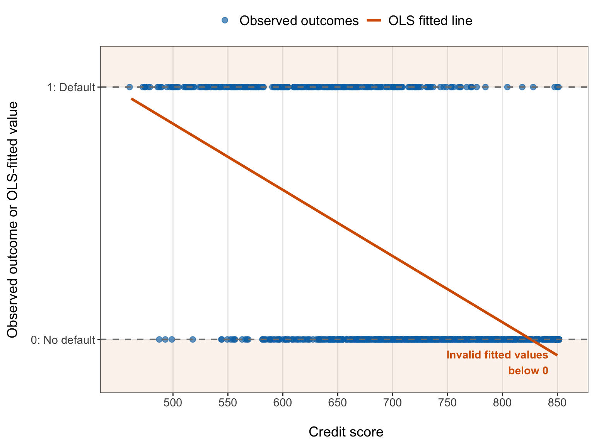
import numpy as np
import matplotlib.pyplot as plt
import pandas as pd
ols_plot_data = (loan_default_data_ols.loc[:, ["credit_score", "defaulted",
],
].copy())
jitter_pattern = np.linspace(-1.5, 1.5, 7,
)
ols_plot_data["credit_score_plot"] = (ols_plot_data["credit_score"].to_numpy()
+ np.resize(jitter_pattern, len(ols_plot_data),
))
credit_score_grid = pd.DataFrame({
"credit_score": np.linspace(loan_default_data_ols["credit_score"].min(),
loan_default_data_ols["credit_score"].max(), 400,
)})
credit_score_grid["fitted_probability"] = ols_illustration_model.predict(credit_score_grid)
x_min = loan_default_data_ols["credit_score"].min()
x_max = loan_default_data_ols["credit_score"].max()
y_min = -0.15
y_max = 1.10
fig, ax = plt.subplots(figsize=(8, 5))
_ = ax.axhspan(y_min, 0, color="#D55E00", alpha=0.08,
)
_ = ax.axhspan(1, y_max, color="#D55E00", alpha=0.08,
)
_ = ax.scatter(ols_plot_data["credit_score_plot"], ols_plot_data["defaulted"], alpha=0.65,
s=35, color="#0072B2", label="Observed outcomes",
)
_ = ax.plot(credit_score_grid["credit_score"], credit_score_grid["fitted_probability"],
linewidth=1.2, color="#D55E00", label="OLS fitted line",
)
_ = ax.axhline(0, linestyle="--", linewidth=0.7, color="gray",
)
_ = ax.axhline(1, linestyle="--", linewidth=0.7, color="gray",
)
_ = ax.text(x_max - 8, -0.09, "Invalid fitted values\nbelow 0", ha="right", va="center",
fontsize=9, fontweight="bold", color="#D55E00",
)
_ = ax.set_xlim(x_min - 8, x_max + 8,
)
_ = ax.set_ylim(y_min, y_max,
)
_ = ax.set_xticks(np.arange(500, 851, 50,
))
_ = ax.set_yticks([0, 1], ["0: No default", "1: Default",
],
)
_ = ax.set_xlabel("\n Credit score", fontsize=13.5,
)
_ = ax.set_ylabel("Observed outcome or OLS-fitted value", fontsize=13.5, labelpad=12,
)
_ = ax.tick_params(axis="both", labelsize=11,
)
_ = ax.legend(loc="upper center", bbox_to_anchor=(0.5, 1.12),
ncol=2,
frameon=False,
fontsize=13,
)
_ = ax.grid(
True,
which="major",
axis="both",
alpha=0.3,
)
_ = ax.grid(
False,
which="minor",
)
_ = fig.tight_layout(
rect=[0, 0, 1, 0.92,
]
)
plt.show()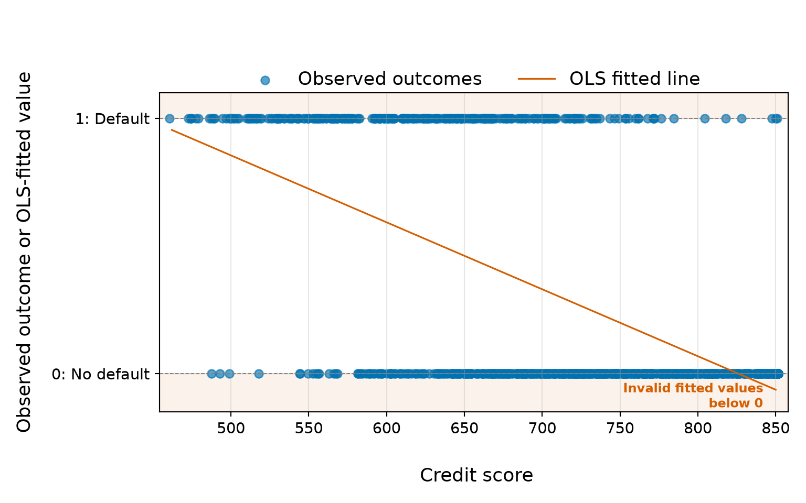
Both implementations, in R and Python, estimate the same straight OLS fitted line. For the teaching dataset, the fitted model is approximately
\[ \widehat{\pi}_i = 2.166 - 0.003x_{i,1}, \]
where \(x_{i,1}\) is the \(i\)th borrower’s credit score. The line reaches \(0\) at a credit score of approximately 826. Since the observed credit scores extend to 850, the model assigns negative fitted values to some borrowers near the upper end of the observed range. At a credit score of 850, the fitted value is approximately -0.063.
The least-squares algorithm has not made a computational mistake. It has found the straight line that minimizes the sum of squared residuals. The difficulty is that a straight line has no knowledge that the quantity we wish to estimate is a probability. Furthermore, even if every fitted value happened to lie within \([0,1]\) for one particular sample, the linear specification would not guarantee valid probabilities for other regressor combinations or future observations.
Tip on reading the binary-outcome plots!
The observed response values in Figure 8.2 (or Figure 8.3) remain exactly at \(0\) and \(1\). A small, deterministic offset is added only to the credit-score axis so that overlapping borrowers are easier to see. The response is not jittered vertically because doing so would visually replace the observed binary outcomes with values that were never recorded.
Clipping the invalid fitted values to \(0\) or \(1\) would not solve the modelling problem. Such a rule would alter the fitted values after estimation, create artificial flat regions at the boundaries, and leave the underlying linear probability model unchanged. We need a probability curve whose range constraint is built into the model itself.
8.3.3 The Bernoulli Mean–Variance Relationship
In Figure 8.2, the probability-range issue is visible in the fitted line, but it is not the only reason to prefer a Bernoulli GLM. The error component introduced in Section 8.3.1 also behaves differently from the constant-variance error used in the classical OLS model.
Recall that the linear probability model can be written as
\[ Y_i = \pi_i + \varepsilon_i, \]
where
\[ \pi_i = \mathbb{E}(Y_i\mid\mathbf{x}_i) \]
and therefore
\[ \varepsilon_i = Y_i-\pi_i. \]
Because \(Y_i\in\{0,1\}\), we have \(Y_i^2=Y_i\). Hence,
\[ \mathbb{E}(Y_i^2\mid\mathbf{x}_i) = \mathbb{E}(Y_i\mid\mathbf{x}_i) = \pi_i. \]
Using the variance identity introduced in Equation 2.27,
\[ \operatorname{Var}(Y_i\mid\mathbf{x}_i) = \mathbb{E}(Y_i^2\mid\mathbf{x}_i) - \left[ \mathbb{E}(Y_i\mid\mathbf{x}_i) \right]^2, \]
we obtain
\[ \operatorname{Var}(Y_i\mid\mathbf{x}_i) = \pi_i - \pi_i^2 = \pi_i(1-\pi_i). \tag{8.3}\]
In Equation 8.3, \(\pi_i=\Pr(Y_i=1\mid\mathbf{x}_i)\) is the conditional event probability for observational unit \(i\). The conditional variance is largest when \(\pi_i=0.5\), where it equals \(0.25\), and it approaches \(0\) as \(\pi_i\) approaches either \(0\) or \(1\). Thus, the amount of conditional variability is intrinsically tied to the conditional mean.
This relationship carries directly to the OLS error component. Conditional on \(\mathbf{x}_i\), the quantity \(\pi_i\) is fixed, so subtracting it from \(Y_i\) does not change the conditional variance. Therefore,
\[ \begin{aligned} \operatorname{Var}(\varepsilon_i\mid\mathbf{x}_i) &= \operatorname{Var}(Y_i-\pi_i\mid\mathbf{x}_i)\\ &= \operatorname{Var}(Y_i\mid\mathbf{x}_i)\\ &= \pi_i(1-\pi_i). \end{aligned} \]
This result makes the connection with the response-level OLS equation explicit. Although \(\varepsilon_i\) satisfies
\[ \mathbb{E}(\varepsilon_i\mid\mathbf{x}_i)=0, \]
its conditional variance is generally not constant. If two observational units have different conditional event probabilities, their error components will generally have different conditional variances.
We can see the same structure by considering the possible values of \(\varepsilon_i\). Since \(Y_i\) is binary,
\[ \varepsilon_i = \begin{cases} 1-\pi_i, & \text{if } Y_i=1,\\[4pt] -\pi_i, & \text{if } Y_i=0. \end{cases} \]
Hence, conditional on the regressors, the OLS error component has only two possible values, and both depend on \(\pi_i\). This is fundamentally different from the constant-variance additive error structure typically used for classical OLS inference.
Heads-up on the Bernoulli variance and OLS standard errors!
The result
\[ \operatorname{Var}(\varepsilon_i\mid\mathbf{x}_i) = \pi_i(1-\pi_i) \]
does not mean that the OLS coefficient estimates cannot be calculated. OLS can still estimate the coefficients of the linear probability model.

The issue is that the usual homoscedastic OLS model-based standard errors are derived under a constant conditional error variance,
\[ \operatorname{Var}(\varepsilon_i\mid\mathbf{x}_i) = \sigma^2, \]
where \(\sigma^2>0\) does not vary across observational units. The Bernoulli mean–variance relationship generally violates that assumption because \(\pi_i\) can change with the regressors.
Heteroscedasticity-robust standard errors can provide uncertainty estimates that are less dependent on the constant-variance assumption. However, they do not constrain fitted probabilities to \([0,1]\), and they do not replace the binary response with a Bernoulli probability model.
This distinction is crucial. Our motivation for moving from the linear probability model to Binary Logistic regression is not simply that one OLS assumption has failed. We want the conditional distribution, conditional mean, conditional variance, and range of the fitted probabilities to belong to one coherent model for a binary response. In a Bernoulli GLM, the random variation is represented through the conditional Bernoulli distribution of \(Y_i\) rather than through a separate additive error term appended to the linear expression.
8.3.4 From a Linear Probability to a Logistic Probability Curve
The two structural issues we have identified now suggest what the next model must accomplish. We still want a linear expression that combines the regressors, because such a structure provides an interpretable way to represent their joint contribution. However, we do not want that unrestricted linear expression itself to be the event probability, and we no longer want to represent the binary response through a classical constant-variance additive error model.
Therefore, let
\[ \eta_i = \beta_0 + \beta_1x_{i,1} + \cdots + \beta_kx_{i,k} \]
denote a linear expression for observational unit \(i\). Here, \(\eta_i\) may take any value on the real line. Instead of writing
\[ \pi_i=\eta_i, \]
as in the linear probability model, we seek a smooth function that maps the unrestricted value of \(\eta_i\) to a valid event probability.
The logistic function provides such a mapping:
\[ \pi_i = \frac{1} {1+\exp(-\eta_i)}. \tag{8.4}\]
For every finite value of \(\eta_i\), the expression in Equation 8.4 lies strictly between \(0\) and \(1\). The mapping is monotonic, so larger values of the linear expression correspond to larger event probabilities. It is also S-shaped: the event probability changes most rapidly near the middle of its range and changes more gradually as it approaches \(0\) or \(1\). This construction separates two roles that the linear probability model places on the same scale:
- the linear expression \(\eta_i\) can remain unrestricted on the real line; and
- the conditional event probability \(\pi_i\) remains constrained to the interval \((0,1)\).
At the same time, the binary variation described in Section 8.3.3 can be handled through a Bernoulli probability model rather than by imposing a constant-variance additive error term.
| Feature | Linear probability model | Logistic probability curve |
|---|---|---|
| Response-level view | \(Y_i=\pi_i+\varepsilon_i\), with \(\pi_i\) modelled linearly. | The binary response will be modelled through a Bernoulli conditional distribution rather than a separate additive error term. |
| Role of the linear expression | The linear expression is treated directly as \(\pi_i\). | The linear expression \(\eta_i\) is unrestricted on the real line and is mapped to \(\pi_i\). |
| Possible fitted probabilities | Any real number can result. | Fitted probabilities lie strictly between \(0\) and \(1\). |
| Shape with one continuous regressor | A straight line with a constant additive probability slope. | An S-shaped probability curve whose response-scale change depends on the starting probability. |
| Conditional variation | \(\operatorname{Var}(\varepsilon_i\mid\mathbf{x}_i)=\pi_i(1-\pi_i)\), so the classical constant-variance error assumption generally does not hold. | The Bernoulli mean–variance relationship can be built directly into the probability model. |
Heads-up on where the error component goes!
The move to Binary Logistic regression does not mean that the response suddenly becomes non-random. Rather, the source of randomness is represented differently.
In the linear probability model, we can write the realized response as
\[ Y_i = \pi_i+\varepsilon_i. \]

In Binary Logistic regression, we instead specify a conditional Bernoulli distribution for \(Y_i\). The random variation is therefore built into that distribution, while the linear expression \(\eta_i\) is connected to the conditional event probability through a link function. We will formalize these random, systematic, and link components in Section 8.8.
At this stage, Equation 8.4 should be viewed as a conceptual bridge, not yet as the complete Binary Logistic regression model. We have not formally introduced the Bernoulli random component, the systematic component, or the logit link. Those pieces will be developed carefully in Section 8.8. For now, the central idea is that Logistic regression preserves a linear structure for combining regressors while using a nonlinear mapping to produce valid conditional event probabilities and a Bernoulli distribution to represent the binary response variation.
8.4 Case Study: Understanding Student Loan Default
The previous section showed why a straight-line probability model is not the most natural way to represent an individual binary response. Now, we turn that statistical motivation into an applied problem: understanding and predicting loan default. Loan default is inherently a binary event at the borrower level. For a particular borrower, the recorded outcome is either default or no default. Yet a lender rarely wants only a retrospective label. Before an outcome is known, the more useful quantity is the probability of default, because borrowers can differ substantially in risk even when they would eventually be assigned the same class label.
Throughout the chapter, we will use a student-loan setting as our running teaching case. This setting gives us a concrete way to connect the Bernoulli response, the logistic probability curve, coefficient interpretation, model checking, and held-out prediction to a decision problem in which uncertainty matters.

8.4.1 Practical Scenario
Suppose we are collaborating with the credit-risk analytics team at a student-loan provider. The team reviews a portfolio of borrowers with different financial and demographic characteristics and wants a statistical model that can support two broad tasks. First, the team would like to understand which recorded borrower characteristics are associated with default risk. Second, it would like to estimate the probability that a borrower defaults so that risk information can contribute to downstream review and portfolio-management decisions.
A stakeholder might phrase the practical question as follows:
Given the borrower information available to us, how much evidence do we have that different borrower characteristics are associated with default, and how accurately can we estimate the probability of default for another borrower?
This wording deliberately separates understanding associations from predicting risk. The formal inferential and predictive inquiries will be stated in Section 8.5. For now, the important point is that both tasks revolve around the same binary event, but they use the model in different ways.
The model is also intended as decision support, not as an automatic lending rule. A probability estimate does not by itself determine whether a loan should be approved, denied, repriced, or sent for additional review. Those decisions can depend on institutional policy, regulation, the relative consequences of different errors, information not represented in the model, and fairness considerations. We will return to responsible interpretation and use in Section 8.14.4.
8.4.2 The Loan-Default Data
The running case uses the Logistic_Regression dataset supplied through the {cookbook} R package. The package was created to supplement the Regression Cookbook and describes its data as toy data for teaching. The Logistic_Regression documentation provides the accompanying description of the dataset. For the Binary Logistic regression analysis, each row represents one borrower, which is our observational unit. The response is defaulted, coded as a binary indicator of whether the borrower defaulted. The borrower-level characteristics available for modelling include:
-
credit_score, a numeric credit-score measure; -
income, annual income; -
age, borrower age; -
education_years, years of education; -
married, a binary marital-status indicator; and -
owns_home, a binary home-ownership indicator.
We will not yet decide which of these regressors belong in the final model. That choice is part of the later workflow. In Section 8.6, we will document the variables carefully, inspect their coding and ranges, distinguish the variables used for this individual-level Bernoulli analysis from other fields in the package object, and create the shared training and testing samples.
Heads-up on the teaching nature of the loan-default data!
The Logistic_Regression data are a toy teaching dataset, not a documented administrative portfolio from an actual student-loan provider. Therefore, the stakeholder scenario in this chapter is deliberately hypothetical.

Hence, the dataset is useful for learning how to formulate, fit, diagnose, interpret, and evaluate Binary Logistic regression, but results from it should not be presented as empirical evidence about real borrowers or used to justify real lending policy. In a genuine lending application, we would need substantially more information about data provenance, sampling, measurement timing, regulatory requirements, fairness, and changes in economic conditions.
8.4.3 Why Predicted Probabilities Matter
Although default is ultimately recorded as either \(0\) or \(1\), reducing a model’s output immediately to a predicted class would discard useful information. Suppose two borrowers receive estimated default probabilities of \(0.30\) and \(0.70\). A probability-based model tells us that the second borrower has considerably greater estimated risk under the fitted model. A simple class label cannot communicate that difference with the same resolution.
Probabilities are particularly useful when the consequences of classification errors are asymmetric. If we treat default as the event of interest, two mistakes have different practical meanings:
- A false negative occurs when a borrower is treated as unlikely to default but later defaults. For a lender, this may involve unpaid principal, collection costs, and other financial consequences.
- A false positive occurs when a borrower is treated as likely to default but would not have defaulted. This can lead to unnecessary scrutiny, lost lending opportunities, or an inappropriate decision for the borrower.
There is no general reason for those two errors to have the same consequence. Furthermore, their relative importance may depend on the decision being made. That is why it is useful to preserve the model’s estimated probability of default before converting that probability into any yes/no classification.
A probability also communicates uncertainty more faithfully. Two borrowers could eventually receive the same predicted class while having quite different estimated probabilities. Conversely, two borrowers with probabilities close to one another should not appear radically different merely because a decision rule happens to place them on opposite sides of a cutoff. Working with probabilities first allows us to evaluate probability accuracy, calibration, and ranking before considering a decision-specific classification rule.
Heads-up on probabilities versus classification decisions!
Binary Logistic regression naturally estimates a conditional event probability. A predicted class requires an additional decision rule that converts that probability into a category. Thus, we are intentionally not choosing a classification threshold here. In particular, a cutoff such as \(0.5\) is not an intrinsic property of Logistic regression. A useful threshold depends on the purpose of the decision, the relative costs of false negatives and false positives, and other operational or ethical constraints.
Later, in Section 8.12.3, we will examine classification thresholds explicitly. Until then, the probability itself is the primary predictive quantity.
The case study is now sufficiently concrete to define what we want to learn from it. The next step is therefore the study-design stage: identifying the observational unit and response formally, distinguishing the inferential inquiry from the predictive inquiry, and deciding how the data will be used without contaminating final assessment.
8.5 Study Design: Framing the Inferential and Predictive Inquiries
Before carrying out EDA or fitting a Binary Logistic regression model, we need to clarify what the model is supposed to help us learn. This is the study design stage of the data science workflow introduced in Section 1.4.1. At this point, we are not yet selecting a final model, interpreting coefficients, or deciding on a classification threshold. Instead, we are fixing the modelling purpose, the observational unit, the response, the relevant regressors, and the distinct roles that inference and prediction will play later in the chapter.

Recall that one dataset can support more than one modelling inquiry. Here, the same binary response will be used for two related but distinct purposes:
- an inferential inquiry, concerned with associations between borrower characteristics and default probability or odds; and
- a predictive inquiry, concerned with how accurately a fitted model estimates default probabilities for held-out borrowers.
Keeping these purposes separate from the beginning is important because the same fitted model can be useful for one purpose and less useful for the other. An interpretable association does not guarantee strong out-of-sample prediction, and good predictive performance does not by itself establish a scientifically meaningful or causal relationship.
8.5.1 Observational Unit, Response, and Regressors
The basic elements of the study design are summarized in Table 8.3. This table fixes the statistical roles of the variables before we begin EDA or model development.
| Role in the study design | Chapter representation | Description |
|---|---|---|
| Target population or system | Hypothetical borrower population represented by the teaching-data-generating process | Because Logistic_Regression is a toy teaching dataset rather than a documented probability sample from a real lending population, the chapter’s conclusions should be interpreted as applying to the borrower-generating system represented by these teaching data, not automatically to real student-loan borrowers. |
| Observational unit | Borrower \(i\) | Each row represents one borrower, for \(i=1,\ldots,n\). |
| Response random variable | \(Y_i\) | Binary loan-default status for borrower \(i\), with \(Y_i=1\) if the borrower defaults and \(Y_i=0\) if the borrower does not default. |
| Observed response | defaulted |
The realized value \(y_i\in\{0,1\}\) observed for borrower \(i\). |
| Primary regressors for the chapter inquiries |
credit_score, income
|
Credit score and annual income are the two borrower characteristics that define the main inferential and predictive inquiries developed through the chapter. |
| Additional candidate regressors |
age, education_years, married, owns_home
|
Additional recorded borrower characteristics that will be explored and considered during model development without automatically becoming part of the final model. |
| Probability target | \(\pi_i=\Pr(Y_i=1\mid\mathbf{x}_i)\) | The conditional probability that borrower \(i\) defaults given the regressor information represented by \(\mathbf{x}_i\). |
The distinction between the random variable \(Y_i\) and its observed realization \(y_i\) is useful here. Before the outcome is observed, \(Y_i\) represents an uncertain default event. Once the borrower outcome is recorded, we observe either \(y_i=1\) or \(y_i=0\). Binary Logistic regression will model the conditional probability \(\pi_i\) associated with that uncertain event.
The vector \(\mathbf{x}_i\) represents the borrower characteristics used in a particular model. The chapter will begin with credit score as a simple one-regressor model and then consider annual income and the other recorded characteristics during model development. Nevertheless, the main inferential question is intentionally centred on credit score and annual income, so the final inferential interpretation does not become a post hoc search for whichever variables happen to look most favourable.
8.5.2 Inferential Inquiry
The inferential inquiry asks:
Among borrowers represented by this data-collection process, how are credit score and annual income associated with the probability and odds of loan default, holding the other recorded regressor fixed?
This is an observational association question, not a causal question. The teaching data do not arise from an experiment in which credit score or income was randomly assigned, and the dataset does not document a design that would identify the causal effect of changing either characteristic. Therefore, later statements should use language such as associated with, related to, or corresponds to differences in default probability or odds, rather than language such as causes, increases because of, or reduces because of.
The phrase holding the other recorded regressor fixed anticipates the multivariable model used later in the chapter. For example, when interpreting the credit-score association in the planned credit-score-plus-income model, we will compare borrowers who differ in credit score while holding annual income fixed in the model. Likewise, the income association will be interpreted while holding credit score fixed. These are model-based adjusted associations; they do not represent physical interventions on borrowers.
For this inquiry, the final results stage will emphasize:
- coefficient estimates for credit score and annual income;
- standard errors and Wald-based uncertainty;
- confidence intervals (CIs);
- hypothesis tests where appropriate;
- odds-ratio interpretations; and
- selected probability-scale comparisons that complement the odds-based interpretation.
The formal coefficient notation and the connection between probabilities, odds, log-odds, and regression coefficients will be developed later in Section 8.8 and Section 8.9.
8.5.3 Predictive Inquiry
The predictive inquiry asks:
How accurately can credit score and annual income predict the probability of loan default for held-out borrowers, and how does the model compare with a simple event-rate baseline?

This question is about out-of-sample probability prediction. The prediction target is not a claim that a particular borrower will definitely default or definitely not default. Instead, for a borrower with recorded regressor values \(\mathbf{x}_i\), the model will estimate the conditional event probability
\[ \pi_i = \Pr(Y_i=1\mid\mathbf{x}_i). \]
The observed outcome \(Y_i\) remains binary and random even when the fitted probability is well estimated. For example, a borrower with an estimated default probability of \(0.20\) can still default, while a borrower with an estimated probability of \(0.80\) can still avoid default. Consequently, predictive evaluation should examine whether the probabilities themselves are useful before reducing them to class labels.
The benchmark for this inquiry will be a simple event-rate baseline learned from the training data. That baseline assigns the same training-set default proportion to every held-out borrower. A fitted Logistic regression model is predictively useful only if its borrower-specific probability estimates provide a meaningful improvement over such a simple benchmark.
Later, the prediction and results sections will evaluate held-out probability predictions using probability-based accuracy measures, calibration, discrimination, and comparison with the event-rate baseline. Threshold-dependent classification metrics will be considered separately after the role of classification thresholds has been made explicit.
The inferential and predictive inquiries are summarized together in Table 8.4.
| Inquiry type | Main statistical target | Primary final evidence | What the results section must answer |
|---|---|---|---|
| Inferential inquiry | Association of credit score and annual income with conditional default probability and odds. | Testing-set refit of the fixed final model; coefficient estimates, standard errors, CIs, hypothesis tests, odds ratios, and probability-scale comparisons. | How strong and uncertain are the estimated associations, and what interpretations are justified by the observational design? |
| Predictive inquiry | Conditional default probabilities for held-out borrowers. | Predictions from the model fitted on the training data; probability-based performance, calibration/discrimination summaries, and comparison with the training-set event-rate baseline. | Does the fitted model estimate held-out default risk usefully, and does it improve on the simple baseline? |
The two inquiries can use the same eventual model specification, but they do not use the data in exactly the same way. That distinction determines the analysis workflow.
8.5.4 Analysis Workflow and Data Reuse
Because this chapter uses the data for EDA, candidate-model development, model comparison, diagnostic checking, inference, and prediction, we need to be deliberate about data reuse. In particular, we do not want to explore many model choices using the same observations and then report conventional inferential summaries from those observations as if the final model had been specified in advance.
Chapter 2 discusses this distinction in Section 2.5: using the same sample for ordinary estimation and prespecified inference is not automatically double dipping. The concern arises when the data are first used to make important analytical choices and are then reused for final inference without accounting for that selection. In this chapter, model development is intentionally data-adaptive, so we will separate the development stage from the final assessment stage.
The planned workflow is the following:
- Prepare one shared training/testing split. After the data have been loaded, checked, and prepared in Section 8.6, we will create a reproducible stratified split that preserves the binary-outcome composition reasonably well across the two samples.
- Use the training data for model development. The training sample will be used for EDA, the simple credit-score model, consideration of additional regressors, candidate-model comparison, goodness-of-fit assessment, functional-form checks, and influence diagnostics. Any baseline probability that must be learned from the data will also be calculated from the training sample.
- Freeze the final model specification before inspecting testing outcomes for final assessment. Once the model form has been selected and its training-data diagnostics have been reviewed, the chosen response coding, regressors, transformations, reference categories, and diagnostic strategy will be treated as fixed. Testing outcomes will not be used to revise these choices.
-
Use the testing data in two prespecified final-analysis branches. The inferential and predictive inquiries then use the testing sample differently:
- for prediction, the already fitted training model will generate default-probability predictions for the testing observations; the model will not be refitted using testing outcomes before those predictions are evaluated;
- for inference, the fixed final model specification will be fitted independently to the testing data, and this testing-set refit will provide the final coefficient-level inferential summary.
This design is summarized in Table 8.5.
| Stage | Training data | Testing data | Purpose |
|---|---|---|---|
| EDA and model development | Used | Testing outcomes not inspected for model development | Explore patterns, fit candidate models, compare alternatives, and check model adequacy. |
| Final model lock | Used to complete development | Not used to alter the model | Fix regressors, transformations, coding choices, and diagnostic decisions before final assessment. |
| Predictive assessment | Training-fitted model remains frozen | Regressor values are supplied to the frozen model; observed testing outcomes are used only for final evaluation | Assess held-out probability prediction and compare with the training-set event-rate baseline. |
| Inferential confirmation | Development results motivate the fixed specification but do not supply the final coefficient claims | The fixed model specification is fitted independently to the testing observations | Obtain the final coefficient estimates, standard errors, CIs, tests, and interpretations from observations not used to choose the model. |
Heads-up on one testing sample with two different final roles!
The testing sample serves two prespecified purposes, and these purposes must not be mixed:
- For the predictive inquiry, the fitted model comes entirely from the training data. We carry that frozen model forward to the testing regressors and then compare its predicted probabilities with the observed testing outcomes. Refitting the predictive model on those testing outcomes before evaluation would no longer be a held-out test.
- For the inferential inquiry, we instead fit the already selected model specification again to the testing data. This testing-set refit is not used to redesign the model. Its purpose is to obtain coefficient-level inference from observations that were not used for the earlier exploratory and model-selection decisions.

Once the final assessment begins, results from either branch must not be used to return to the testing data and tune the model. Doing so would compromise the separation we created to protect against data-adaptive double dipping.
This workflow does not imply that sample splitting is universally required for statistical inference. Rather, it is a deliberate design choice for this chapter because the training data will be used extensively for exploration, model development, comparison, and diagnostics. The exact construction and cross-language alignment of the split will be handled in Section 8.7.1. With the inquiries and data-use rules now fixed, we can proceed to the data collection and wrangling stage.
8.6 Data Collection and Wrangling
With the inferential and predictive inquiries set up, we can now prepare the data that will support the rest of the chapter. This is the data collection and wrangling stage of the data science workflow. Because Logistic_Regression is a toy teaching dataset rather than a documented sample collected from an operational lender, data collection here refers primarily to establishing the dataset’s provenance, importing the same object reproducibly in R and Python, checking its internal structure, and creating a clean borrower-level working dataset.

We will not create the training/testing split in this section. The current section keeps all observations together while we verify and prepare the variables. The shared stratified split will be created at the beginning of the EDA stage in Section 8.7.1, after the working variables and category encodings have been fixed.
8.6.1 Data Source and Variable Dictionary
As emphasized in Section 8.4.2, this is a toy teaching dataset. It is useful for developing the Binary Logistic regression workflow, but it should not be described as a real administrative sample from a student-loan provider. The dataset was already loaded reproducibly in both languages for the preliminary OLS illustration in Section 8.3.2; here, we reuse those imported objects to construct the full borrower-level working object.
# Loading library
library(tidyverse)
loan_default_raw <- Logistic_Regression
# Showing the first 100 rows of the full dataset
loan_default_raw |>
slice_head(n = 100)loan_default_raw = (logistic_regression_objects["Logistic_Regression"].copy())
# Showing the first 100 rows of the full dataset
print(loan_default_raw.head(100))Before selecting variables for the Binary Logistic regression analysis, it is useful to see the package object as supplied. Table 8.6 and Table 8.7 display the first 100 rows of the full nine-variable dataset. The two grouped-data fields, successes and trials, are intentionally still visible at this stage because we have not yet created the borrower-level working dataset.
For the individual-level Binary Logistic regression analysis, the relevant variables are summarized in Table 8.8. To keep the mathematical notation compact and consistent with the regression equations used later in this case study, we index the six borrower-level regressors numerically. Thus, for borrower \(i\),
\[ \mathbf{x}_i = \left( x_{i,1}, x_{i,2}, x_{i,3}, x_{i,4}, x_{i,5}, x_{i,6} \right)^\top, \]
where the numerical subscript identifies the regressor’s fixed position in the chapter notation. This numbering is only a bookkeeping device; it does not imply an ordering of substantive importance.
| Variable | Role | Type used in the chapter | Notation | Units / coding | Description |
|---|---|---|---|---|---|
defaulted |
Response | Binary numeric | \(Y_i\) / \(y_i\) | \(0=\) no default; \(1=\) default | Whether borrower \(i\) defaulted on the loan. |
credit_score |
Regressor | Numeric | \(x_{i,1}\) | Credit-score points | Borrower’s credit score. |
income |
Regressor | Numeric | \(x_{i,2}\) | CAD per year | Borrower’s annual income. |
age |
Candidate regressor | Numeric integer | \(x_{i,3}\) | Years | Borrower’s age. |
education_years |
Candidate regressor | Numeric integer | \(x_{i,4}\) | Years | Number of years of education recorded for the borrower. |
married |
Candidate regressor | Categorical | \(x_{i,5}\) |
0/1 in the raw data |
Borrower’s recorded marital-status indicator. We will label 0 as Not married and 1 as Married, with Not married as the reference category. |
owns_home |
Candidate regressor | Categorical | \(x_{i,6}\) |
0/1 in the raw data |
Borrower’s recorded home-ownership indicator. We will label 0 as Does not own home and 1 as Owns home, with Does not own home as the reference category. |
Accordingly, the primary inferential and predictive inquiries introduced in Section 8.5 focus on \(x_{i,1}\), the borrower’s credit score, and \(x_{i,2}\), the borrower’s annual income. The remaining recorded borrower characteristics, \(x_{i,3}\) through \(x_{i,6}\), are treated as additional candidate regressors during model development. We will keep this numerical correspondence fixed whenever the mathematical model refers to these variables later in the chapter.
The full dataset also contains successes and trials. These variables describe a grouped successes-out-of-trials structure, which is different from the individual Bernoulli response studied in this chapter. They are not borrower characteristics and therefore are not members of the regressor vector \(\mathbf{x}_i\). They will not be used as regressors for defaulted. Keeping them in the Binary Logistic regression model would mix two different response structures. Therefore, they are retained only in the untouched raw objects and removed when we create the borrower-level working datasets below.
8.6.2 Data Integrity and Missing Values

Before recoding or rescaling anything, we first check whether the imported object has the structure we expect. In particular, we inspect its dimensions, missingness, exact duplicate rows, binary-outcome coding, and the observed ranges of the variables. The following code creates the same integrity summaries in R and Python.
# Loading library to display tables
library(knitr)
analysis_variable_names <- c("defaulted", "credit_score", "income", "age",
"education_years", "married", "owns_home")
loan_default_analysis_raw <- loan_default_raw |>
select(all_of(analysis_variable_names))
integrity_summary <- tibble(
Check = c("Number of observations", "Number of variables in the full object",
"Total missing values", "Exact duplicate rows in the full object",
"Number of non-defaults (defaulted = 0)", "Number of defaults (defaulted = 1)",
"Repeated profiles after retaining only analysis variables"),
Value = c(nrow(loan_default_raw), ncol(loan_default_raw), sum(is.na(loan_default_raw)),
sum(duplicated(loan_default_raw)), sum(loan_default_raw$defaulted == 0),
sum(loan_default_raw$defaulted == 1), sum(duplicated(loan_default_analysis_raw))))
integrity_summary |>
kable(align = c("c", "c"))| Check | Value |
|---|---|
| Number of observations | 1000 |
| Number of variables in the full object | 9 |
| Total missing values | 0 |
| Exact duplicate rows in the full object | 0 |
| Number of non-defaults (defaulted = 0) | 723 |
| Number of defaults (defaulted = 1) | 277 |
| Repeated profiles after retaining only analysis variables | 1 |
analysis_variable_names = ["defaulted", "credit_score", "income", "age", "education_years",
"married", "owns_home",
]
loan_default_analysis_raw = (loan_default_raw.loc[:, analysis_variable_names,
].copy())
integrity_summary = pd.DataFrame({
"Check": ["Number of observations", "Number of variables in the full object",
"Total missing values", "Exact duplicate rows in the full object",
"Number of non-defaults (defaulted = 0)", "Number of defaults (defaulted = 1)",
("Repeated profiles after retaining " "only analysis variables"),
], "Value": [loan_default_raw.shape[0], loan_default_raw.shape[1],
int(loan_default_raw.isna().sum().sum()), int(loan_default_raw.duplicated().sum()),
int((loan_default_raw["defaulted"] == 0).sum()),
int((loan_default_raw["defaulted"] == 1).sum()),
int(loan_default_analysis_raw.duplicated().sum()),
],
})
binary_logistic_integrity_html = (scrollable_table_html(integrity_summary))| Check | Value |
|---|---|
| Number of observations | 1000 |
| Number of variables in the full object | 9 |
| Total missing values | 0 |
| Exact duplicate rows in the full object | 0 |
| Number of non-defaults (defaulted = 0) | 723 |
| Number of defaults (defaulted = 1) | 277 |
| Repeated profiles after retaining only analysis variables | 1 |
According to Table 8.9, the imported dataset contains 1000 observations and 9 variables, with 0 missing values and 0 exact duplicate rows in the full nine-variable object. The response is correctly restricted to the two values \(0\) and \(1\): there are 723 non-defaults and 277 defaults. After successes and trials are removed, there is 1 repeated borrower profile across the retained response and regressors \((Y_i,x_{i,1},\ldots,x_{i,6})\). This is not evidence by itself of a duplicated borrower record. Two observational units can share the same recorded response and regressor values, and the original nine-variable rows are not exact duplicates. We therefore preserve both observations rather than deleting one merely because their retained analysis profiles coincide.
Next, Table 8.11 inspects the observed ranges and the number of observations lying exactly at each variable’s upper boundary.
range_variable_names <- c("age", "income", "education_years", "married", "owns_home",
"credit_score", "defaulted", "successes", "trials")
range_summary <- tibble(Variable = range_variable_names,
Minimum = vapply(loan_default_raw[range_variable_names], min, numeric(1), na.rm = TRUE),
Maximum = vapply(loan_default_raw[range_variable_names], max, numeric(1), na.rm = TRUE),
`Number at maximum` = vapply(range_variable_names, function(variable_name) {
variable_values <- loan_default_raw[[variable_name]]
upper_boundary <- max(variable_values, na.rm = TRUE)
sum(variable_values == upper_boundary, na.rm = TRUE)}, numeric(1)))
range_summary |>
kable(align = c("c", "c", "c", "c"))| Variable | Minimum | Maximum | Number at maximum |
|---|---|---|---|
| age | 18 | 65 | 7 |
| income | 20000 | 200000 | 13 |
| education_years | 10 | 20 | 13 |
| married | 0 | 1 | 340 |
| owns_home | 0 | 1 | 163 |
| credit_score | 462 | 850 | 161 |
| defaulted | 0 | 1 | 277 |
| successes | 1 | 10 | 67 |
| trials | 10 | 10 | 1000 |
range_variable_names = ["age", "income", "education_years", "married", "owns_home",
"credit_score", "defaulted", "successes", "trials",
]
range_summary = pd.DataFrame({"Variable": range_variable_names,
"Minimum": [loan_default_raw[variable_name].min() for variable_name
in range_variable_names],
"Maximum": [loan_default_raw[variable_name].max() for variable_name
in range_variable_names], "Number at maximum": [
int((loan_default_raw[variable_name] == loan_default_raw[variable_name].max()).sum()
) for variable_name in range_variable_names],
})
binary_logistic_ranges_html = (scrollable_table_html(range_summary))| Variable | Minimum | Maximum | Number at maximum |
|---|---|---|---|
| age | 18.0 | 65.0 | 7 |
| income | 20000.0 | 200000.0 | 13 |
| education_years | 10.0 | 20.0 | 13 |
| married | 0.0 | 1.0 | 340 |
| owns_home | 0.0 | 1.0 | 163 |
| credit_score | 462.0 | 850.0 | 161 |
| defaulted | 0.0 | 1.0 | 277 |
| successes | 1.0 | 10.0 | 67 |
| trials | 10.0 | 10.0 | 1000 |
The observed ranges are internally plausible for the teaching scenario: age is positive, income is non-negative, education is recorded in whole years, and all three binary indicators take only \(0\) and \(1\). Credit scores range from 462 to 850.
Now, the upper boundaries deserve a little extra attention because this is simulated teaching data. In particular, 161 borrowers have the maximum credit score of 850, producing a visible pile-up at the upper boundary. Annual income reaches CAD 200,000, with 13 observations at that maximum. These boundary concentrations should be treated as features of the supplied toy data rather than automatically labelled as erroneous outliers. We will preserve them and later examine whether extreme or boundary observations exert unusual influence on the fitted Logistic regression model.
The two grouped-data variables provide another useful integrity check: trials is constant at 10, whereas successes ranges from 1 to 10. Their structure reinforces why they do not belong in the borrower-level Bernoulli analysis.
8.6.3 Preparing the Binary Response and Regressors
The raw data use numeric \(0/1\) indicators for the binary variables. For model fitting, keeping defaulted as numeric \(0/1\) makes the event coding explicit and works naturally with the Bernoulli GLM implementations used later in the chapter. For plots and tables, however, readable labels such as No default and Default are easier to interpret. We will therefore preserve both representations of the response.

The categorical regressors require the same care. Although married and owns_home are stored numerically in the raw object, the values \(0\) and \(1\) are category codes, not quantitative measurements. In the notation fixed in Table 8.8, these variables correspond to \(x_{i,5}\) and \(x_{i,6}\). Once reference categories are fixed, the model matrix can represent these binary categorical regressors with indicator variables while preserving their substantive labels. Therefore, we convert them to labelled categorical variables before any EDA or model development occurs.
The two language implementations below create equivalent borrower-level working objects:
-
defaultedremains numeric with \(0=\text{non-event}\) and \(1=\text{event}\); -
default_statusprovides readable labels for plotting; -
credit_score,income,age, andeducation_yearsretain their original numeric values corresponding to \(x_{i,1}\) through \(x_{i,4}\); -
married, corresponding to \(x_{i,5}\), usesNot marriedas its first/reference category; -
owns_home, corresponding to \(x_{i,6}\), usesDoes not own homeas its first/reference category; and -
successesandtrialsare excluded.
loan_default <- loan_default_raw |>
transmute(defaulted = as.integer(as.character(defaulted)), credit_score = credit_score,
income = income, age = age, education_years = education_years,
married = factor(as.integer(as.character(married)), levels = c(0, 1),
labels = c("Not married", "Married")),
owns_home = factor(as.integer(as.character(owns_home)), levels = c(0, 1),
labels = c("Does not own home", "Owns home")),
default_status = factor(defaulted, levels = c(0, 1), labels = c("No default", "Default")
))
stopifnot(all(loan_default$defaulted %in% c(0L, 1L)),
identical(levels(loan_default$married), c("Not married", "Married")),
identical(levels(loan_default$owns_home), c("Does not own home", "Owns home")))analysis_columns = ["defaulted", "credit_score", "income", "age", "education_years",
"married", "owns_home",
]
loan_default = (loan_default_raw.loc[:, analysis_columns,
].copy())
loan_default["defaulted"] = loan_default["defaulted"].astype("int64")
loan_default["default_status"] = pd.Categorical(
loan_default["defaulted"].map({0: "No default", 1: "Default",
}), categories=["No default", "Default",
],
)
loan_default["married"] = pd.Categorical(
loan_default["married"].map({0: "Not married", 1: "Married",
}), categories=["Not married", "Married",
],
)
loan_default["owns_home"] = pd.Categorical(
loan_default["owns_home"].map({0: "Does not own home", 1: "Owns home",
}), categories=["Does not own home", "Owns home",
],
)
assert set(loan_default["defaulted"].unique()) == {0, 1}
assert list(loan_default["married"].cat.categories) == ["Not married", "Married",
]
assert list(loan_default["owns_home"].cat.categories) == ["Does not own home", "Owns home",
]Heads-up on \(0/1\) coding versus category labels!
The number 1 has a special meaning for the response: defaulted = 1 is the event whose probability we model. For married and owns_home, however, the raw values 0 and 1 are simply category codes. Treating those regressors as ordinary quantitative measurements would hide their categorical meaning.
In the mathematical notation, \(x_{i,5}\) and \(x_{i,6}\) identify the fifth and sixth regressors in the fixed regressor vector \(\mathbf{x}_i\); the numerical subscripts do not turn these variables into continuous quantities. We therefore keep the response numeric for Bernoulli model fitting while converting the two categorical regressors to labelled factors/categories. The first category in each language is deliberately aligned so that later reference-category interpretations agree between R and Python.
At this stage, loan_default contains the same borrower-level analysis variables with equivalent event coding and category ordering. The mathematical correspondence is fixed as
\[ x_{i,1} \leftrightarrow \text{credit score}, \qquad x_{i,2} \leftrightarrow \text{income}, \qquad x_{i,3} \leftrightarrow \text{age}, \]
and
\[ x_{i,4} \leftrightarrow \text{education years}, \qquad x_{i,5} \leftrightarrow \text{marital status}, \qquad x_{i,6} \leftrightarrow \text{home ownership}. \]
The original raw objects remain untouched, which gives us a clear path back to the source representation if a wrangling decision needs to be audited.
8.6.4 Choosing Meaningful Units for Interpretation
The first two regressors, \(x_{i,1}\) and \(x_{i,2}\), are measured on scales that are mathematically valid but inconvenient for coefficient interpretation. A one-point increase in credit score is small, and a one-CAD increase in annual income is even smaller. Later in the chapter, an odds ratio for a 50-point increase in credit score and an odds ratio for a CAD 10,000 increase in annual income will be easier to communicate.
Therefore, we create rescaled versions of the first two regressors. For credit score,
\[ x_{i,1}^{(50)} = \frac{x_{i,1}}{50}, \]
and, for annual income,
\[ x_{i,2}^{(10\text{k})} = \frac{x_{i,2}}{10{,}000}. \]
In the code, \(x_{i,1}^{(50)}\) is stored as credit_score_50, while \(x_{i,2}^{(10\text{k})}\) is stored as income_10k. A one-unit increase in credit_score_50 corresponds to a 50-point increase in the original \(x_{i,1}\) scale, whereas a one-unit increase in income_10k corresponds to a CAD 10,000 increase in the original \(x_{i,2}\) scale.
This rescaling changes the units of the corresponding regression coefficients, but it does not add or remove information from the regressors. For an otherwise identical Logistic regression model, expressing credit score or income in different linear units changes the numerical coefficient attached to that regressor, not the fitted probabilities.
loan_default["credit_score_50"] = (loan_default["credit_score"] / 50)
loan_default["income_10k"] = (loan_default["income"] / 10000)
assert np.allclose(loan_default["credit_score_50"] * 50, loan_default["credit_score"],
)
assert np.allclose(loan_default["income_10k"] * 10000, loan_default["income"],
)We deliberately preserve the original credit_score and income variables alongside the rescaled versions. The original scales \(x_{i,1}\) and \(x_{i,2}\) are often easier to read on exploratory plots and descriptive tables, whereas credit_score_50 and income_10k will make the later regression coefficients and odds ratios more meaningful.
The borrower-level data are now checked, labelled, and rescaled consistently in both languages. We have still not used any observation for model development. The next stage is EDA, where we will first create the shared stratified training/testing split in Section 8.7.1 and then conduct EDA using the training observations only.
8.7 Exploratory Data Analysis
With the borrower-level variables now checked, labelled, and rescaled, we can move into EDA. Following the workflow introduced in Section 1.4.3, this stage has two purposes. First, we create the training/testing split promised in Section 8.5.4. Second, we use the training data only to describe the response, examine the borrower characteristics, and identify patterns that later model specifications and diagnostic checks will need to address.

EDA is intentionally descriptive. We will not fit a Binary Logistic regression model in this section, use testing outcomes to guide modelling decisions, or interpret a marginal pattern as an adjusted association. Instead, the training-data summaries will help us decide what deserves closer attention when we formulate and check the model.
8.7.1 Creating a Shared Stratified Training and Testing Split
The response is binary and the event is less common than the non-event, so an ordinary random split could create unnecessary differences in the default proportion across the two subsets. We therefore use a stratified 50/50 split based on defaulted. Stratification keeps the event/non-event composition of the two subsets close to the composition of the full dataset.
For this chapter, the 50/50 allocation is deliberate. The dataset contains 1000 borrowers, so half of the observations still provide a substantial training sample for EDA, model development, and diagnostics, while the other half remains available for the two final roles established in Section 8.5.4: held-out predictive evaluation and an independent inferential refit of the fixed final specification.
Tip on why we are using a 50/50 split!
A 50/50 split is not a universal default for Logistic regression. In a prediction-focused analysis, allocations such as 80/20 are common because more observations are then available for model training. Repeated sample splitting or cross-validation can also reduce dependence on a single split.

Here, however, the same chapter supports both a predictive inquiry and a separate final inferential confirmation. The 50/50 split leaves substantial data points on both sides while keeping the workflow transparent. The important principle is to choose the allocation for the analysis purpose rather than copy a split ratio mechanically.
We first demonstrate the conceptually equivalent split in both languages. The split is stratified on the binary response in each implementation:
- In
R,initial_split()from {rsample} usesprop = 0.5andstrata = default_status. - In
Python,train_test_split()from {scikit-learn} usestest_size = 0.5andstratify = loan_default["defaulted"].
We also add borrower_id before splitting. This variable exists only to preserve row identity and later verify that the shared training and testing sets do not overlap. It is not a regressor and will never enter a Logistic regression model.
# Loading the package used for data splitting
library(rsample)
# Adding an identifier used only to preserve row membership
loan_default <- loan_default |>
mutate(borrower_id = row_number(),.before = 1)
# Seed for reproducibility
set.seed(123)
# Stratified 50/50 split
data_split <- initial_split(loan_default, prop = 0.5, strata = default_status)
# Assigning observations to the two subsets
training_data <- training(data_split)
testing_data <- testing(data_split)
# Sanity checks
n_total <- nrow(loan_default)
n_train <- nrow(training_data)
n_test <- nrow(testing_data)
stopifnot(length(intersect(training_data$borrower_id, testing_data$borrower_id)) == 0,
n_train + n_test == n_total)
cat(sprintf(
"Training shape: %d %d\nTesting shape: %d %d\n\nTraining proportion: %.3f\nTesting proportion: %.3f\n",
nrow(training_data), ncol(training_data), nrow(testing_data), ncol(testing_data),
n_train / n_total, n_test / n_total))Training shape: 499 11
Testing shape: 501 11
Training proportion: 0.499
Testing proportion: 0.501# Importing function
from sklearn.model_selection import train_test_split
# Adding the same row identifier to the Python working dataset
loan_default["borrower_id"] = np.arange(1, len(loan_default) + 1, dtype=int,
)
# Conceptually equivalent independent stratified split
training_data, testing_data = train_test_split(loan_default, test_size=0.5,
random_state=123, stratify=loan_default["defaulted"],
)
# Keeping row order readable within each subset
training_data = (training_data.sort_values("borrower_id").copy())
testing_data = (testing_data.sort_values("borrower_id").copy())
# Sanity checks
n_total = len(loan_default)
n_train = len(training_data)
n_test = len(testing_data)
assert set(training_data["borrower_id"]).isdisjoint(set(testing_data["borrower_id"]))
assert (n_train + n_test == n_total)
print(f"Training shape: {training_data.shape}\n" f"Testing shape: {testing_data.shape}\n\n"
f"Training proportion: {n_train / n_total:.3f}\n"
f"Testing proportion: {n_test / n_total:.3f}")Training shape: (500, 11)
Testing shape: (500, 11)
Training proportion: 0.500
Testing proportion: 0.500Both implementations use the same split proportion, the same conceptual stratification variable, and the same seed value. Nevertheless, the resulting R and Python subsets are not expected to contain exactly the same borrowers. The two languages use different random-number machinery and different splitting implementations, so equal seed values do not imply equal row assignments.
Heads-up on keeping R and Python aligned after the split!
The independent Python split in Listing 8.8 is included to show how the same stratified splitting task is implemented with {scikit-learn}. It is not the split used for the side-by-side analyses that follow.
For the remainder of the chapter, the R-generated split is the canonical split. We import those exact R training and testing observations into Python through {reticulate}. This ensures that every subsequent R and Python summary, plot, fitted model, diagnostic, and prediction refers to the same borrowers.
We now replace the independently generated Python training_data and testing_data objects with the corresponding objects created in R. Because categorical information can be converted differently when objects cross the R/Python boundary, we also restore the categorical data types and level ordering explicitly.
# Importing the canonical R-generated subsets via reticulate
training_data = (r.training_data.copy())
testing_data = (r.testing_data.copy())
status_levels = ["No default", "Default",
]
married_levels = ["Not married", "Married",
]
home_levels = ["Does not own home", "Owns home",
]
# Restoring equivalent numeric and categorical encodings
for data in (training_data, testing_data,
):
data["borrower_id"] = (data["borrower_id"].astype("int64"))
data["defaulted"] = (data["defaulted"].astype("int64"))
data["default_status"] = pd.Categorical(data["default_status"].astype(str),
categories=status_levels, ordered=True,
)
data["married"] = pd.Categorical(data["married"].astype(str), categories=married_levels,
)
data["owns_home"] = pd.Categorical(data["owns_home"].astype(str),
categories=home_levels,
)
# Sanity checks on the shared row membership
assert set(training_data["borrower_id"]).isdisjoint(set(testing_data["borrower_id"]))
assert (len(training_data) + len(testing_data) == len(loan_default))From this point onward, both languages use objects named training_data and testing_data, and the row membership is identical across languages. The upcoming EDA uses only training_data. The testing outcomes are kept out of EDA, model development, model comparison, and diagnostic decisions. Later, the same testing subset will serve the two distinct roles established earlier:
- For the predictive inquiry, the model fitted on
training_datawill generate probability predictions for the testing borrowers. - For the inferential inquiry, after the model specification has been fixed using the training workflow, that specification will be fitted independently to
testing_datafor the final coefficient-level inferential results.
8.7.2 Descriptive Summaries

We begin with the four continuous borrower characteristics because their ranges and typical values provide context for the plots that follow. The original scales are used here because credit-score points, dollars, years of age, and years of education are more natural for descriptive EDA than their coefficient-oriented rescalings. Table 8.13 reports the minimum, first quartile, median, mean, standard deviation, third quartile, and maximum in the training data.
continuous_variables <- c("credit_score", "income", "age", "education_years")
variable_labels <- c(credit_score = "Credit score", income = "Annual income (CAD)",
age = "Age (years)", education_years = "Education (years)")
continuous_summary <- bind_rows(lapply(continuous_variables, function(variable_name) {
variable_values <- training_data[[variable_name]]
tibble(Variable = variable_labels[[variable_name]], Minimum = min(variable_values),
`First quartile` = quantile(variable_values, 0.25, names = FALSE), Median =
median(variable_values), Mean = mean(variable_values), `Standard deviation` =
sd(variable_values), `Third quartile` =
quantile(variable_values, 0.75, names = FALSE), Maximum = max(variable_values))})
) |>
mutate(across(where(is.numeric), ~ round(.x, 2)))
continuous_summary |>
kable(align = c("c", "c", "c", "c", "c", "c", "c", "c"),
format.args = list(big.mark = ","))| Variable | Minimum | First quartile | Median | Mean | Standard deviation | Third quartile | Maximum |
|---|---|---|---|---|---|---|---|
| Credit score | 473 | 647.5 | 731 | 721.39 | 102.36 | 813 | 850 |
| Annual income (CAD) | 20,000 | 43,800.0 | 62,300 | 72,188.38 | 38,808.64 | 92,700 | 200,000 |
| Age (years) | 18 | 33.0 | 40 | 39.88 | 9.83 | 47 | 65 |
| Education (years) | 10 | 12.0 | 14 | 13.95 | 2.30 | 16 | 20 |
continuous_variables = ["credit_score", "income", "age", "education_years",
]
variable_labels = {"credit_score": "Credit score", "income": "Annual income (CAD)",
"age": "Age (years)", "education_years": "Education (years)",
}
continuous_summary = pd.DataFrame([{"Variable": variable_labels[variable_name],
"Minimum": training_data[variable_name].min(),
"First quartile": training_data[variable_name].quantile(0.25),
"Median": training_data[variable_name].median(),
"Mean": training_data[variable_name].mean(),
"Standard deviation": training_data[variable_name].std(ddof=1),
"Third quartile": training_data[variable_name].quantile(0.75),
"Maximum": training_data[variable_name].max(),
} for variable_name in continuous_variables]).round(2)
continuous_summary_html = (scrollable_table_html(continuous_summary))| Variable | Minimum | First quartile | Median | Mean | Standard deviation | Third quartile | Maximum |
|---|---|---|---|---|---|---|---|
| Credit score | 473.0 | 647.5 | 731.0 | 721.39 | 102.36 | 813.0 | 850.0 |
| Annual income (CAD) | 20000.0 | 43800.0 | 62300.0 | 72188.38 | 38808.64 | 92700.0 | 200000.0 |
| Age (years) | 18.0 | 33.0 | 40.0 | 39.88 | 9.83 | 47.0 | 65.0 |
| Education (years) | 10.0 | 12.0 | 14.0 | 13.95 | 2.30 | 16.0 | 20.0 |
The summary in Table 8.13 gives us a more concrete sense of the scales and variability represented in the training data:
- Credit score ranges from 473 to 850, with the middle 50% of borrowers falling between 647.5 and 813. Its mean, 721.39, is reasonably close to its median of 731, although the large standard deviation of 102.36 points shows that credit scores vary substantially across borrowers.
- Annual income shows an even broader scale, ranging from CAD 20,000 to CAD 200,000. Half of the training borrowers have incomes between approximately CAD 43,800 and CAD 92,700. The mean income of about CAD 72,188.38 is larger than the median of CAD 62,300, which suggests some concentration of observations toward the lower part of the range together with a longer upper tail. We will examine the income distribution more directly when comparing default status across continuous regressors.
- The remaining continuous regressors are measured on much narrower and more immediately interpretable scales:
- Age ranges from 18 to 65 years, with a median of 40 years and a middle 50% between 33 and 47 years.
- Years of education range from 10 to 20, with a median of 14 years and an interquartile range from 12 to 16 years.
These scales also reinforce the rescaling choices introduced in Section 8.6.4. A one-point change in credit score or a one-CAD change in annual income would lead to coefficients describing changes that are very small relative to the variation observed in the training data. By contrast, a 50-point increase in credit score and a CAD 10,000 increase in annual income represent increments that are easier to relate to the ranges in Table 8.13 and, later, to communicate through odds ratios. For EDA, however, we continue to use the original units because they make the borrower characteristics easier to recognize and visualize.
8.7.3 Distribution of the Binary Response
We next examine the training response itself. For a Bernoulli outcome, the most direct descriptive quantities are the numbers of events and non-events and the observed event proportion.
response_summary <- training_data |>
count(default_status, name = "n") |>
mutate(proportion = n / sum(n)) |>
rename(`Default status` = default_status, `Number of borrowers` = n,
`Proportion of training data` = proportion)
response_summary |>
mutate(`Proportion of training data` = sprintf("%.3f", `Proportion of training data`)) |>
kable(align = c("c", "c", "c"))| Default status | Number of borrowers | Proportion of training data |
|---|---|---|
| No default | 361 | 0.723 |
| Default | 138 | 0.277 |
response_summary = (training_data["default_status"].value_counts(sort=False)
.rename_axis("Default status").reset_index(name="Number of borrowers"))
response_summary["Proportion of training data"] = (response_summary["Number of borrowers"]
/ response_summary["Number of borrowers"].sum())
response_summary["Proportion of training data"] = response_summary[
"Proportion of training data"].map(lambda value: f"{value:.3f}")
response_summary_html = (scrollable_table_html(response_summary))| Default status | Number of borrowers | Proportion of training data |
|---|---|---|
| No default | 361 | 0.723 |
| Default | 138 | 0.277 |
The same distribution is shown visually in Figure 8.4 (or Figure 8.5).
response_plot <- ggplot(training_data, aes(x = default_status, fill = default_status)) +
geom_bar(colour = "white", linewidth = 0.4, width = 0.65) +
scale_fill_manual(values = c("No default" = "#0072B2", "Default" = "#D55E00")) +
theme_bw() +
theme(axis.text = element_text(size = 15.5), axis.title.x = element_text(size = 20),
axis.title.y = element_text(size = 20, vjust = 0.5, margin = margin(r = 12)),
legend.position = "none", panel.grid.minor = element_blank()) +
labs(x = "\n Default status", y = "Number of borrowers")
response_plot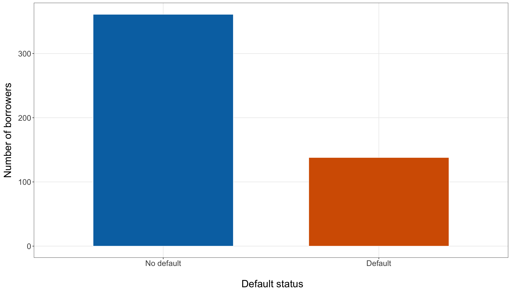
status_levels = ["No default", "Default",
]
status_counts = (training_data["default_status"].value_counts(sort=False)
.reindex(status_levels))
response_plot, ax = plt.subplots(figsize=(14, 8))
_ = ax.bar(status_levels, status_counts.values, color=["#0072B2", "#D55E00",
], edgecolor="white", linewidth=0.4, width=0.65,
)
_ = ax.set_xlabel("\n Default status", fontsize=20,
)
_ = ax.set_ylabel("Number of borrowers", fontsize=20, labelpad=12,
)
_ = ax.tick_params(axis="both", labelsize=15.5,
)
_ = ax.grid(True, which="major", axis="both", alpha=0.3,
)
_ = ax.grid(False, which="minor",
)
_ = response_plot.tight_layout()
plt.show()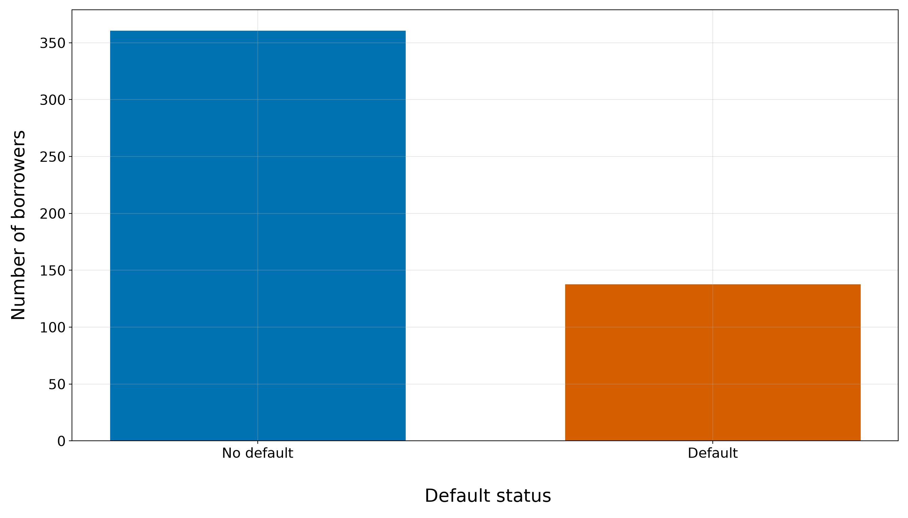
In the training data, 138 of 499 borrowers default, giving an observed event proportion of 0.277. Thus, defaults are less common than non-defaults, but this is not an extremely rare-event setting. The imbalance is still large enough that overall classification accuracy alone would be a weak evaluation criterion: a method that favours the majority non-default class could look deceptively successful. Later predictive evaluation will therefore emphasize probability-based metrics and discrimination/calibration measures, with threshold-dependent metrics interpreted in light of this class balance.
8.7.4 Default Status and Continuous Regressors
We now compare default status with the four continuous borrower characteristics:
-
credit_score, corresponding to \(x_{i,1}\); -
income, corresponding to \(x_{i,2}\); -
age, corresponding to \(x_{i,3}\); and -
education_years, corresponding to \(x_{i,4}\).

We begin with grouped numerical summaries. These comparisons are marginal: each regressor is being viewed against default status without holding the other borrower characteristics fixed.
continuous_status_summary <- bind_rows(
lapply(continuous_variables, function(variable_name) {training_data |>
group_by(default_status) |>
summarise(`Borrowers (n)` = n(), mean_value = mean(.data[[variable_name]]),
sd_value = sd(.data[[variable_name]]),
median_value = median(.data[[variable_name]]),
q1_value = quantile(.data[[variable_name]], 0.25, names = FALSE),
q3_value = quantile(.data[[variable_name]], 0.75, names = FALSE),.groups = "drop"
) |>
mutate(Variable = variable_labels[[variable_name]], `Mean (SD)` = sprintf("%s (%s)",
formatC(mean_value, format = "f", digits = 2, big.mark = ","),
formatC(sd_value, format = "f", digits = 2, big.mark = ",")),
`Median (Q1–Q3)` = sprintf("%s (%s–%s)",
formatC(median_value, format = "f", digits = 2, big.mark = ","),
formatC(q1_value, format = "f", digits = 2, big.mark = ","),
formatC(q3_value, format = "f", digits = 2, big.mark = ",")),.before = 1) |>
select(Variable, `Default status` = default_status, `Borrowers (n)`, `Mean (SD)`,
`Median (Q1–Q3)`)}))
continuous_status_summary |>
kable(align = c("c", "c", "c", "c", "c"))| Variable | Default status | Borrowers (n) | Mean (SD) | Median (Q1–Q3) |
|---|---|---|---|---|
| Credit score | No default | 361 | 757.83 (84.32) | 768.00 (702.00–847.00) |
| Credit score | Default | 138 | 626.06 (82.19) | 624.50 (565.25–681.00) |
| Annual income (CAD) | No default | 361 | 82,045.15 (40,288.90) | 74,600.00 (49,300.00–106,500.00) |
| Annual income (CAD) | Default | 138 | 46,403.62 (16,843.97) | 44,050.00 (33,975.00–58,550.00) |
| Age (years) | No default | 361 | 42.84 (8.93) | 43.00 (37.00–49.00) |
| Age (years) | Default | 138 | 32.12 (7.62) | 32.00 (26.25–37.00) |
| Education (years) | No default | 361 | 14.63 (2.13) | 15.00 (13.00–16.00) |
| Education (years) | Default | 138 | 12.16 (1.69) | 12.00 (11.00–13.00) |
continuous_status_rows = []
for variable_name in continuous_variables:
for default_status in status_levels:
values = training_data.loc[training_data["default_status"] == default_status,
variable_name,
]
continuous_status_rows.append({"Variable": variable_labels[variable_name],
"Default status": default_status, "Number of borrowers": len(values),
"Mean": values.mean(), "Standard deviation": values.std(ddof=1),
"Median": values.median(), "First quartile": values.quantile(0.25),
"Third quartile": values.quantile(0.75),
})
continuous_status_summary = (pd.DataFrame(continuous_status_rows).round(2))
continuous_status_summary_html = (scrollable_table_html(continuous_status_summary))| Variable | Default status | Number of borrowers | Mean | Standard deviation | Median | First quartile | Third quartile |
|---|---|---|---|---|---|---|---|
| Credit score | No default | 361 | 757.83 | 84.32 | 768.0 | 702.00 | 847.0 |
| Credit score | Default | 138 | 626.06 | 82.19 | 624.5 | 565.25 | 681.0 |
| Annual income (CAD) | No default | 361 | 82045.15 | 40288.90 | 74600.0 | 49300.00 | 106500.0 |
| Annual income (CAD) | Default | 138 | 46403.62 | 16843.97 | 44050.0 | 33975.00 | 58550.0 |
| Age (years) | No default | 361 | 42.84 | 8.93 | 43.0 | 37.00 | 49.0 |
| Age (years) | Default | 138 | 32.12 | 7.62 | 32.0 | 26.25 | 37.0 |
| Education (years) | No default | 361 | 14.63 | 2.13 | 15.0 | 13.00 | 16.0 |
| Education (years) | Default | 138 | 12.16 | 1.69 | 12.0 | 11.00 | 13.0 |
The grouped summary in Table 8.17 reveals fairly pronounced marginal differences between borrowers who default and those who do not, but the size and amount of overlap differ across the four continuous regressors.
For credit score, the median among borrowers who do not default is 768, compared with 624.5 among borrowers who default. More strikingly, the middle 50% of the non-default group runs from 702 to 847, whereas the corresponding interval for the default group runs from 565.25 to 681. In this training sample, the upper quartile of the default group is therefore below the lower quartile of the non-default group, indicating a strong descriptive shift toward lower credit scores among borrowers who default.
For annual income, the median is approximately CAD 74,600 among non-defaults and CAD 44,050 among defaults. The middle 50% intervals overlap more than they do for credit score: approximately CAD 49,300–106,500 for non-defaults versus CAD 33,975–58,550 for defaults. Income therefore also shows a noticeable marginal shift, but with appreciably more overlap between the two outcome groups.
The same pattern appears for age and years of education. The median age is 43 years among non-defaults and 32 years among defaults. Their interquartile ranges are 37–49 and 26.25–37 years, respectively. For education, the corresponding medians are 15 and 12 years, with interquartile ranges of 13–16 and 11–13 years.
These contrasts are useful for deciding what to examine next, but they remain unadjusted comparisons. For example, a lower age among borrowers who default does not tell us what the age association would look like after credit score, income, or education are held fixed. To see the amount of overlap and the shape of each distribution more clearly, we next use boxplots of each continuous regressor by default status. We first define the reusable plotting function make_default_boxplot().
make_default_boxplot <- function(data, variable, y_label) {
ggplot(data, aes(x = default_status, y = .data[[variable]], fill = default_status)) +
geom_boxplot(width = 0.58, alpha = 0.85, outlier.alpha = 0.35, outlier.size = 1.8,
colour = "grey30") +
scale_fill_manual(values = c("No default" = "#0072B2", "Default" = "#D55E00")) +
theme_bw() +
theme(axis.text = element_text(size = 15.5), axis.title.x = element_text(size = 20),
axis.title.y = element_text(size = 20, vjust = 0.5, margin = margin(r = 12)),
legend.position = "none", panel.grid.minor = element_blank()) +
labs(x = "\n Default status", y = y_label)
}def make_default_boxplot(data, variable, y_label,
):
plot_data = [data.loc[data["default_status"] == default_status, variable,
].dropna().to_numpy() for default_status in status_levels]
plot, ax = plt.subplots(figsize=(14, 8))
boxplot = ax.boxplot(plot_data, tick_labels=status_levels, patch_artist=True,
widths=0.58, flierprops={"marker": "o", "markersize": 4, "alpha": 0.35,
},
)
for patch, colour in zip(boxplot["boxes"], ["#0072B2", "#D55E00",
],
):
_ = patch.set_facecolor(colour)
_ = patch.set_alpha(0.85)
for median_line in boxplot["medians"]:
_ = median_line.set_color("black")
_ = median_line.set_linewidth(1.2)
_ = ax.set_xlabel("\n Default status", fontsize=20,
)
_ = ax.set_ylabel(y_label, fontsize=20, labelpad=12,
)
_ = ax.tick_params(axis="both", labelsize=15.5,
)
_ = ax.grid(True, which="major", axis="both", alpha=0.3,
)
_ = ax.grid(False, which="minor",
)
_ = plot.tight_layout()
return plotCredit Score
Figure 8.6 (or Figure 8.7) makes the credit-score contrast especially clear. The non-default group is centred much higher: its median is 768, compared with 624.5 for the default group. Moreover, the non-default first quartile, 702, is above the default third quartile, 681. Thus, even the central halves of the two distributions show relatively little overlap.
At the same time, the distributions are not perfectly separated. Some borrowers with comparatively high credit scores still default, and some borrowers with lower scores do not. Credit score therefore appears promising for explaining differences in default probability, but the boxplot does not support a deterministic rule such as “below this score, default occurs.” This strong but incomplete separation is precisely why credit_score_50 is a useful starting point for the simple Binary Logistic regression model in Section 8.9.
credit_score_plot <- make_default_boxplot(training_data, "credit_score", "Credit score")
credit_score_plot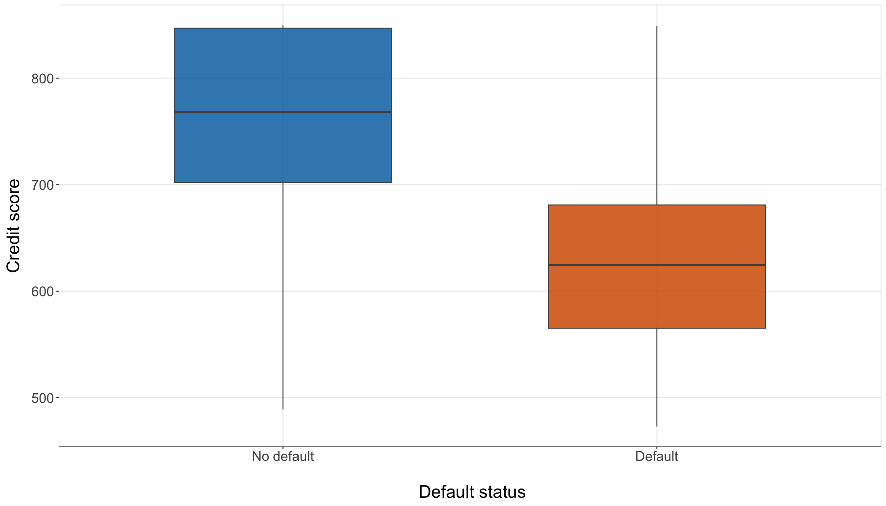
credit_score_plot = make_default_boxplot(training_data, "credit_score", "Credit score",)
plt.show()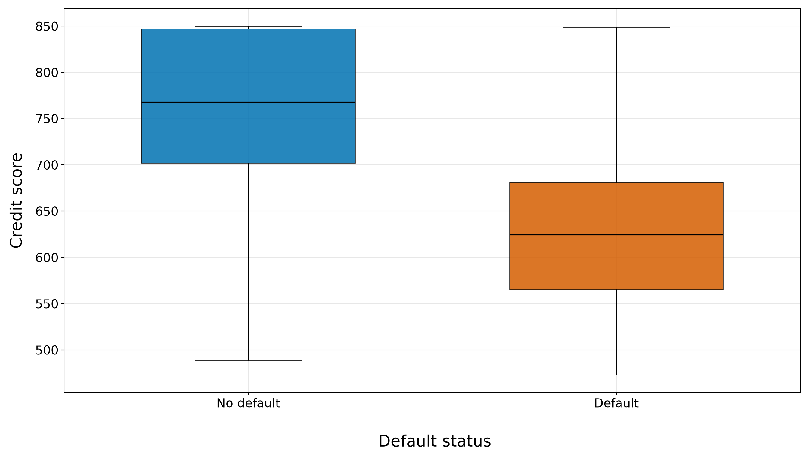
Annual Income
The annual-income boxplot in Figure 8.8 (or Figure 8.9) also shows a downward shift for borrowers who default. The median income is approximately CAD 74,600 for non-defaults and CAD 44,050 for defaults. However, unlike credit score, the two income distributions have a visible region of overlap: the default-group third quartile is about CAD 58,550, while the non-default first quartile is about CAD 49,300.
The non-default income distribution is also more dispersed and has a noticeably longer upper tail, including a few observations near the upper boundary of the training data. Consequently, income appears to carry information related to default status, but there is no obvious income cut-off that cleanly separates the two groups. This makes income_10k a sensible candidate for the extended model, where we can later examine whether it contributes information beyond credit score rather than judging it from the marginal boxplot alone.
income_plot <- make_default_boxplot(training_data, "income", "Annual income (CAD)")
income_plot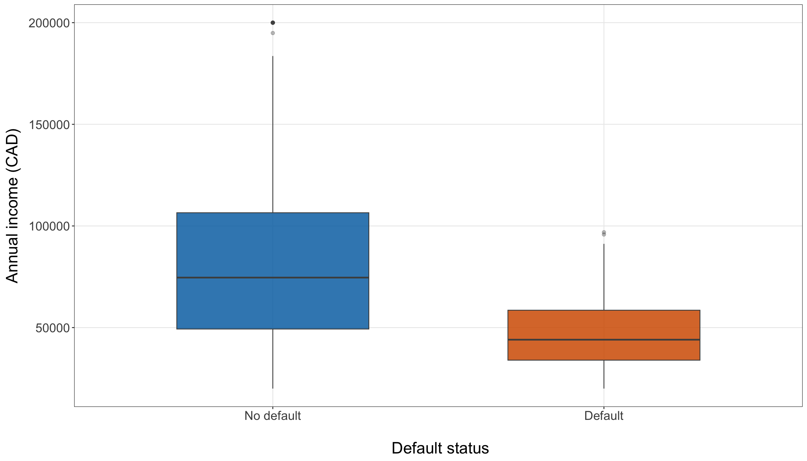
income_plot = make_default_boxplot(training_data, "income", "Annual income (CAD)",)
plt.show()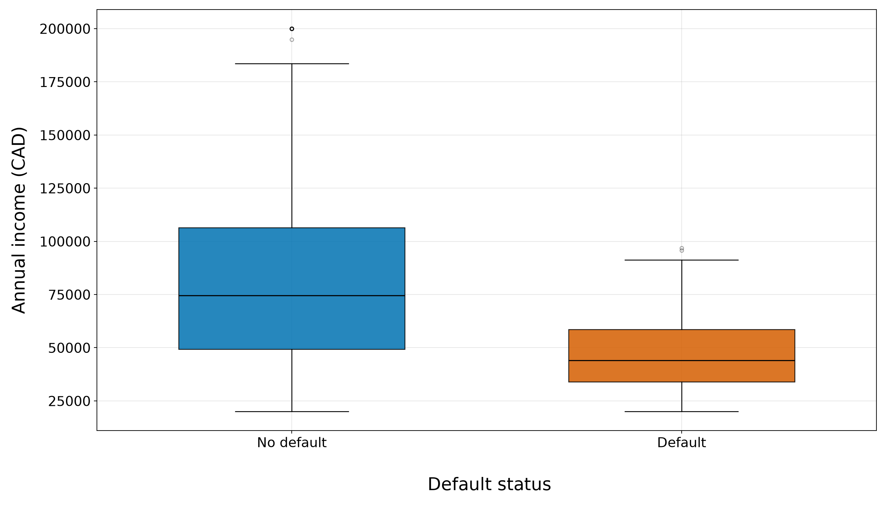
Age
For age, Figure 8.10 (or Figure 8.11) shows that borrowers who default are younger in this training sample. The median age is 43 years for non-defaults and 32 years for defaults. The central halves of the distributions meet around 37 years: this is the first quartile for non-defaults and approximately the upper end of the default group’s interquartile range.
This visual separation makes age worth retaining as a candidate borrower characteristic, but its interpretation requires particular caution. A marginal age difference does not show that age has a distinct adjusted association with default. Later in the EDA, we will see that age and credit score move together strongly in this dataset, so part of the age pattern visible here may reflect information that is also represented by credit score. That overlap will matter when we consider larger candidate models and coefficient stability.
age_plot <- make_default_boxplot(training_data, "age", "Age (years)")
age_plot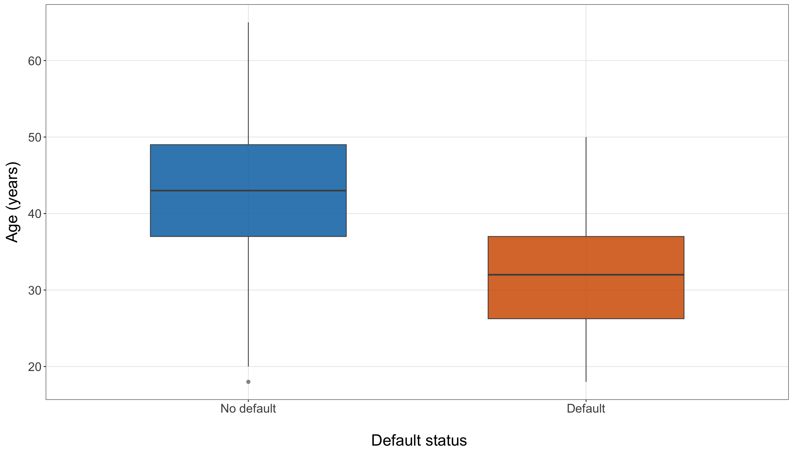
age_plot = make_default_boxplot(training_data, "age", "Age (years)",)
plt.show()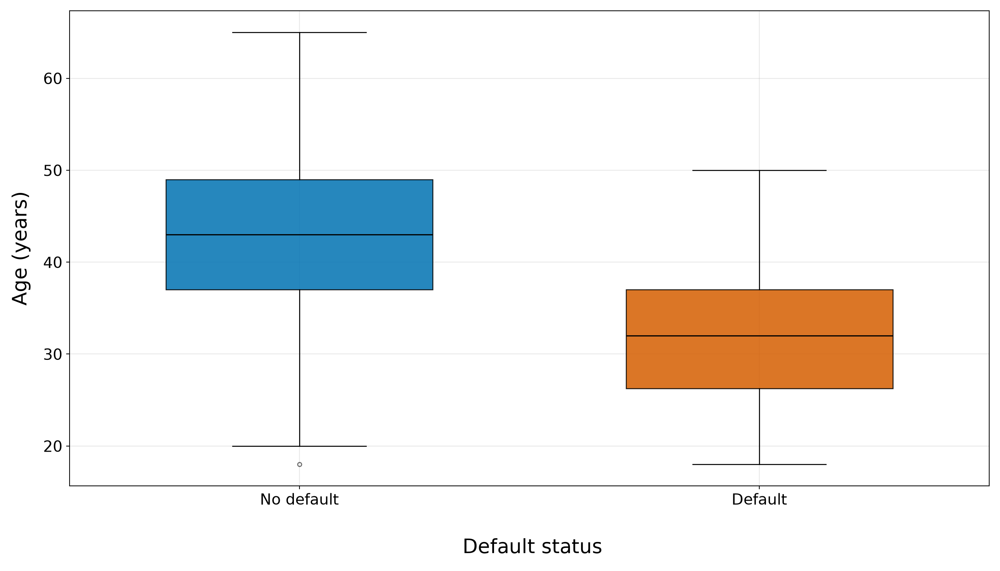
Years of Education
The education distributions in Figure 8.12 (or Figure 8.13) show another clear marginal shift. Borrowers who do not default have a median of 15 years of education, whereas borrowers who default have a median of 12 years. The middle 50% spans 13–16 years for non-defaults and 11–13 years for defaults. The two interquartile ranges touch around 13 years, while a small number of defaulting borrowers still have relatively high education values.
As with age, this pattern makes education a plausible candidate regressor, but not an independently established explanation of default. Education is also related to other continuous borrower characteristics in the training data, particularly credit score and age. We therefore carry it forward for candidate-model consideration while reserving any adjusted interpretation for the formal multivariable Logistic regression analysis.
education_plot <- make_default_boxplot(training_data, "education_years", "Education (years)")
education_plot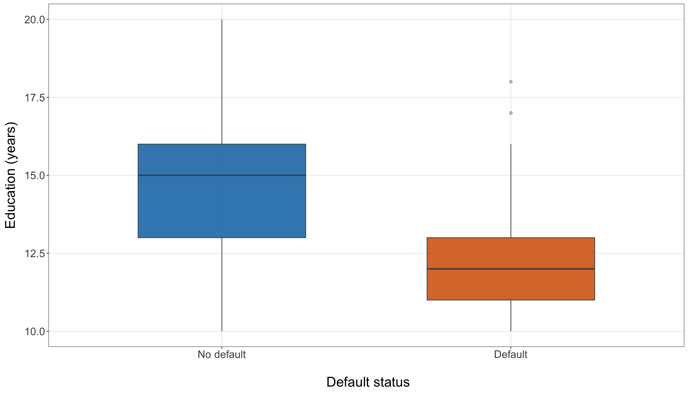
education_plot = make_default_boxplot(training_data, "education_years", "Education (years)",)
plt.show()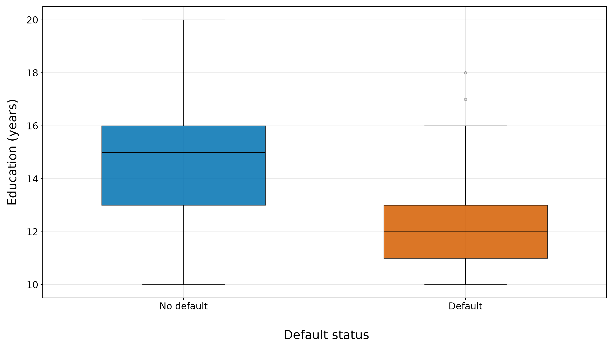
Taken together, the four boxplots show a coherent descriptive pattern: borrowers who default tend to have lower credit scores, lower annual incomes, younger ages, and fewer years of education in this training sample. Credit score shows the clearest separation of the central distributions, while income retains considerably more overlap between the two outcome groups. Age and education also show visible shifts, but those two regressors will require particular caution because they may carry information that overlaps strongly with credit score.
These are exactly the kinds of marginal patterns that EDA should surface, but they do not tell us which associations will remain after other regressors are held fixed. Nor do they establish that the relationship between any continuous regressor and the log-odds of default is linear. We therefore look next at the response on its natural probability scale by grouping each continuous regressor into prespecified, interpretable intervals and calculating the observed proportion of defaults within each interval.
Heads-up on binned default proportions!
The binned proportions below are empirical training-sample summaries, not fitted Logistic regression probabilities. Binning is useful here because it lets us see how the observed event proportion changes across the range of each regressor without imposing a model.

However, the choice of cut points is descriptive, and the resulting proportions remain marginal comparisons. A pattern that looks approximately increasing or decreasing across bins does not establish that the corresponding regressor is linear on the log-odds scale. The model-specific functional-form check in Section 8.10.5 will address that question later.
The cut points are chosen to keep the bins easy to interpret on the original measurement scales. For example, credit score is grouped in roughly 50-point intervals, income in CAD 20,000 intervals through CAD 100,000, age in approximately 10-year intervals, and education in two- to three-year intervals. We preserve those same cut points in R and Python.
bin_specifications <- list(
credit_score = list(breaks = c(-Inf, 550, 600, 650, 700, 750, 800, Inf),
labels = c("550 or below", "551–600", "601–650", "651–700",
"701–750", "751–800", "Above 800")),
income = list(breaks = c(-Inf, 40000, 60000, 80000, 100000, Inf),
labels = c("CAD 40,000 or below", "CAD 40,001–60,000",
"CAD 60,001–80,000", "CAD 80,001–100,000", "Above CAD 100,000")),
age = list(breaks = c(17, 25, 35, 45, 55, 65),
labels = c("18–25", "26–35", "36–45", "46–55", "56–65")),
education_years = list(breaks = c(9, 11, 13, 15, 17, 20),
labels = c("10–11", "12–13", "14–15", "16–17", "18–20")))
binned_default_summary <- bind_rows(
lapply(names(bin_specifications), function(variable_name) {
specification <- bin_specifications[[variable_name]]
training_data |>
mutate(Bin = cut(.data[[variable_name]], breaks = specification$breaks, labels =
specification$labels, include.lowest = TRUE, right = TRUE)) |>
group_by(Bin) |>
summarise(`Borrowers (n)` = n(), `Defaults (n)` = sum(defaulted == 1),
`Observed default proportion` = mean(defaulted == 1),.groups = "drop") |>
mutate(Variable = variable_labels[[variable_name]], Bin = as.character(Bin),
.before = 1)}))
binned_default_summary |>
mutate(`Observed default proportion` = sprintf("%.3f", `Observed default proportion`)) |>
kable(align = c("c", "c", "c", "c", "c"))| Variable | Bin | Borrowers (n) | Defaults (n) | Observed default proportion |
|---|---|---|---|---|
| Credit score | 550 or below | 31 | 25 | 0.806 |
| Credit score | 551–600 | 43 | 30 | 0.698 |
| Credit score | 601–650 | 54 | 31 | 0.574 |
| Credit score | 651–700 | 73 | 26 | 0.356 |
| Credit score | 701–750 | 80 | 16 | 0.200 |
| Credit score | 751–800 | 78 | 6 | 0.077 |
| Credit score | Above 800 | 140 | 4 | 0.029 |
| Annual income (CAD) | CAD 40,000 or below | 99 | 57 | 0.576 |
| Annual income (CAD) | CAD 40,001–60,000 | 133 | 52 | 0.391 |
| Annual income (CAD) | CAD 60,001–80,000 | 104 | 23 | 0.221 |
| Annual income (CAD) | CAD 80,001–100,000 | 59 | 6 | 0.102 |
| Annual income (CAD) | Above CAD 100,000 | 104 | 0 | 0.000 |
| Age (years) | 18–25 | 42 | 32 | 0.762 |
| Age (years) | 26–35 | 125 | 63 | 0.504 |
| Age (years) | 36–45 | 186 | 37 | 0.199 |
| Age (years) | 46–55 | 119 | 6 | 0.050 |
| Age (years) | 56–65 | 27 | 0 | 0.000 |
| Education (years) | 10–11 | 79 | 55 | 0.696 |
| Education (years) | 12–13 | 139 | 54 | 0.388 |
| Education (years) | 14–15 | 154 | 25 | 0.162 |
| Education (years) | 16–17 | 95 | 3 | 0.032 |
| Education (years) | 18–20 | 32 | 1 | 0.031 |
bin_specifications = {
"credit_score": {"breaks": [-np.inf, 550, 600, 650, 700, 750, 800, np.inf,
], "labels": ["550 or below", "551–600", "601–650", "651–700",
"701–750", "751–800", "Above 800",
],
}, "income": {"breaks": [-np.inf, 40000, 60000, 80000, 100000, np.inf,
], "labels": ["CAD 40,000 or below", "CAD 40,001–60,000",
"CAD 60,001–80,000", "CAD 80,001–100,000", "Above CAD 100,000",
],
}, "age": {"breaks": [17, 25, 35, 45, 55, 65,
], "labels": ["18–25", "26–35", "36–45", "46–55", "56–65",
],
}, "education_years": {"breaks": [9, 11, 13, 15, 17, 20,
], "labels": ["10–11", "12–13", "14–15", "16–17", "18–20",
],
},
}
binned_default_rows = []
for variable_name, specification in (bin_specifications.items()):
bin_values = pd.cut(training_data[variable_name], bins=specification["breaks"],
labels=specification["labels"], include_lowest=True, right=True,
)
binned_data = pd.DataFrame({"Bin": bin_values,
"defaulted": training_data["defaulted"].to_numpy(),
})
grouped_data = (binned_data.groupby("Bin", observed=False,
).agg(borrower_count=("defaulted", "size",
), default_count=("defaulted", "sum",
), default_proportion=("defaulted", "mean",
),
).reset_index()
.rename(columns={"borrower_count": "Borrowers (n)", "default_count": "Defaults (n)",
"default_proportion": "Observed default proportion",
}))
grouped_data.insert(0, "Variable", variable_labels[variable_name],
)
grouped_data["Bin"] = grouped_data["Bin"].astype(str)
binned_default_rows.append(grouped_data)
binned_default_summary = pd.concat(binned_default_rows, ignore_index=True,
)
binned_default_summary["Observed default proportion"] = binned_default_summary[
"Observed default proportion"].map(lambda value: f"{value:.3f}")
binned_default_summary_html = (scrollable_table_html(binned_default_summary))| Variable | Bin | Borrowers (n) | Defaults (n) | Observed default proportion |
|---|---|---|---|---|
| Credit score | 550 or below | 31 | 25 | 0.806 |
| Credit score | 551–600 | 43 | 30 | 0.698 |
| Credit score | 601–650 | 54 | 31 | 0.574 |
| Credit score | 651–700 | 73 | 26 | 0.356 |
| Credit score | 701–750 | 80 | 16 | 0.200 |
| Credit score | 751–800 | 78 | 6 | 0.077 |
| Credit score | Above 800 | 140 | 4 | 0.029 |
| Annual income (CAD) | CAD 40,000 or below | 99 | 57 | 0.576 |
| Annual income (CAD) | CAD 40,001–60,000 | 133 | 52 | 0.391 |
| Annual income (CAD) | CAD 60,001–80,000 | 104 | 23 | 0.221 |
| Annual income (CAD) | CAD 80,001–100,000 | 59 | 6 | 0.102 |
| Annual income (CAD) | Above CAD 100,000 | 104 | 0 | 0.000 |
| Age (years) | 18–25 | 42 | 32 | 0.762 |
| Age (years) | 26–35 | 125 | 63 | 0.504 |
| Age (years) | 36–45 | 186 | 37 | 0.199 |
| Age (years) | 46–55 | 119 | 6 | 0.050 |
| Age (years) | 56–65 | 27 | 0 | 0.000 |
| Education (years) | 10–11 | 79 | 55 | 0.696 |
| Education (years) | 12–13 | 139 | 54 | 0.388 |
| Education (years) | 14–15 | 154 | 25 | 0.162 |
| Education (years) | 16–17 | 95 | 3 | 0.032 |
| Education (years) | 18–20 | 32 | 1 | 0.031 |
The binned summary in Table 8.19 sharpens the patterns seen in the boxplots. For credit score, the observed default proportion is 0.806 among borrowers with scores of 550 or below, compared with 0.029 among borrowers above 800. The intermediate bins also show that the empirical default proportion becomes progressively smaller over much of the observed credit-score range. This provides a strong descriptive motivation for beginning the modelling workflow with credit_score_50.
For annual income, the corresponding proportions are 0.576 at CAD 40,000 or below and 0.000 above CAD 100,000. The gradient is again visible, although the earlier boxplots showed substantially more overlap between default groups than for credit score. That combination makes income a natural candidate for the extended model rather than a replacement for credit score.
Age and education show similarly pronounced marginal gradients. The observed default proportion is 0.762 among borrowers aged 18–25 and 0.000 among those aged 56–65. For education, the corresponding proportions are 0.696 for 10–11 years and 0.031 for 18–20 years. These strong age and education gradients do not establish that either regressor contributes independent information after credit score and the other borrower characteristics are held fixed. Their usefulness in a larger model depends partly on how strongly the continuous regressors move together, which we examine later in Section 8.7.6.
8.7.5 Default Status and Categorical Regressors

Now, we turn to the two categorical borrower characteristics:
-
married, corresponding to \(x_{i,5}\); and -
owns_home, corresponding to \(x_{i,6}\).
For each category, we report the number of training borrowers, the number of observed defaults, and the observed default proportion. The counts matter as much as the proportions: a striking percentage based on a small category or only a few events would provide much less stable descriptive information.
categorical_variables <- c("married", "owns_home")
categorical_labels <- c(married = "Marital status", owns_home = "Home ownership")
categorical_summary <- bind_rows(
lapply(categorical_variables, function(variable_name) {training_data |>
mutate(Category = as.character(.data[[variable_name]])) |>
group_by(Category) |>
summarise(`Borrowers (n)` = n(), `Defaults (n)` = sum(defaulted == 1),
`Observed default proportion` = mean(defaulted == 1),.groups = "drop") |>
mutate(Variable = categorical_labels[[variable_name]],.before = 1)}))
categorical_summary |>
mutate(`Observed default proportion` = sprintf("%.3f", `Observed default proportion`)) |>
kable(align = c("c", "c", "c", "c", "c"))| Variable | Category | Borrowers (n) | Defaults (n) | Observed default proportion |
|---|---|---|---|---|
| Marital status | Married | 168 | 26 | 0.155 |
| Marital status | Not married | 331 | 112 | 0.338 |
| Home ownership | Does not own home | 415 | 127 | 0.306 |
| Home ownership | Owns home | 84 | 11 | 0.131 |
categorical_variables = ["married", "owns_home",
]
categorical_labels = {"married": "Marital status", "owns_home": "Home ownership",
}
categorical_rows = []
for variable_name in (categorical_variables):
grouped_data = (training_data.groupby(variable_name, observed=False,
).agg(borrower_count=("defaulted", "size",
), default_count=("defaulted", "sum",
), default_proportion=("defaulted", "mean",
),
).reset_index()
.rename(columns={variable_name: "Category", "borrower_count": "Borrowers (n)",
"default_count": "Defaults (n)", "default_proportion":
"Observed default proportion",
}))
grouped_data["Category"] = grouped_data["Category"].astype(str)
grouped_data.insert(0, "Variable", categorical_labels[variable_name],
)
categorical_rows.append(grouped_data)
categorical_summary = pd.concat(categorical_rows, ignore_index=True,
)
categorical_summary["Observed default proportion"] = categorical_summary[
"Observed default proportion"].map(lambda value: f"{value:.3f}")
categorical_summary_html = (scrollable_table_html(categorical_summary))| Variable | Category | Borrowers (n) | Defaults (n) | Observed default proportion |
|---|---|---|---|---|
| Marital status | Not married | 331 | 112 | 0.338 |
| Marital status | Married | 168 | 26 | 0.155 |
| Home ownership | Does not own home | 415 | 127 | 0.306 |
| Home ownership | Owns home | 84 | 11 | 0.131 |
In Table 8.21, the marital-status comparison shows that the observed default proportion is 0.338 among borrowers recorded as not married and 0.155 among those recorded as married. The corresponding category sizes are 331 and 168 borrowers, respectively. Thus, the lower default proportion among married borrowers is visible in the training sample, but it is a marginal comparison rather than an adjusted marital-status coefficient.
For home ownership, the observed default proportion is 0.306 among borrowers who do not own a home and 0.131 among homeowners. Importantly, the home-ownership groups are much less balanced in size: the homeowner category contains only 84 training borrowers and 11 observed defaults. The category is not empty, but its smaller event count gives us a reason to be cautious about the stability of a later home-ownership coefficient.
The following plots put those observed proportions on a common scale. The orange bars show the category-specific proportions, while the dashed blue line marks the overall training-set default proportion, 0.277. We first define the reusable plotting function make_default_rate_plot().
make_default_rate_plot <- function(data, variable, x_label) {
plot_data <- data |>
group_by(Category =.data[[variable]]) |>
summarise(default_proportion = mean(defaulted == 1),.groups = "drop")
ggplot(plot_data, aes(x = Category, y = default_proportion)) +
geom_col(fill = "#D55E00", colour = "white", linewidth = 0.4, width = 0.65) +
geom_hline(yintercept = mean(data$defaulted == 1), colour = "#0072B2",
linetype = "dashed", linewidth = 0.9) +
scale_y_continuous(labels = scales::label_percent(accuracy = 1),
limits = c(0, max(plot_data$default_proportion) * 1.15)) +
theme_bw() +
theme(axis.text = element_text(size = 15.5), axis.title.x = element_text(size = 20),
axis.title.y = element_text(size = 20, vjust = 0.5, margin = margin(r = 12)),
panel.grid.minor = element_blank()) +
labs(x = paste0("\n ", x_label), y = "Observed default proportion")
}from matplotlib.ticker import PercentFormatter
def make_default_rate_plot(data, variable, x_label,
):
plot_data = (data.groupby(variable, observed=False,
)["defaulted"].mean())
category_names = [str(category) for category in plot_data.index]
plot, ax = plt.subplots(figsize=(14, 8))
_ = ax.bar(category_names, plot_data.values, color="#D55E00", edgecolor="white",
linewidth=0.4, width=0.65,
)
_ = ax.axhline(data["defaulted"].mean(), color="#0072B2", linestyle="--", linewidth=0.9,
)
_ = ax.set_ylim(0, plot_data.max() * 1.15,
)
_ = ax.yaxis.set_major_formatter(PercentFormatter(xmax=1.0, decimals=0,
))
_ = ax.set_xlabel(f"\n {x_label}", fontsize=20,
)
_ = ax.set_ylabel("Observed default proportion", fontsize=20, labelpad=12,
)
_ = ax.tick_params(axis="both", labelsize=15.5,
)
_ = ax.grid(True, which="major", axis="both", alpha=0.3,
)
_ = ax.grid(False, which="minor",
)
_ = plot.tight_layout()
return plotMarital Status
Figure 8.14 (or Figure 8.15) shows the two marital-status proportions relative to the overall training default rate. The not-married group lies above the overall rate, whereas the married group lies below it. The visual difference is therefore consistent with the table, but it does not isolate marital status from age, income, credit score, or the other recorded borrower characteristics.
married_plot <- make_default_rate_plot(training_data, "married", "Marital status")
married_plot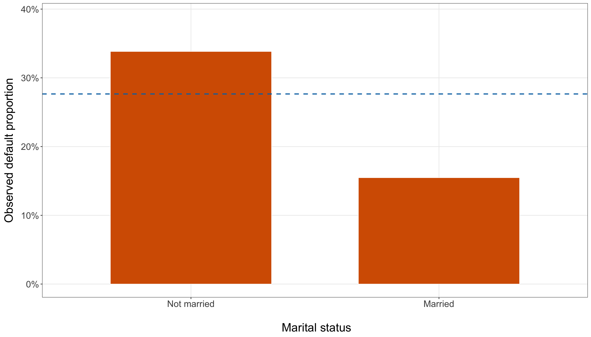
married_plot = make_default_rate_plot(training_data, "married", "Marital status",
)
plt.show()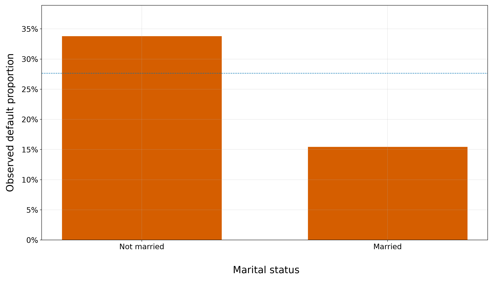
Home Ownership
The home-ownership contrast in Figure 8.16 (or Figure 8.17) is visually larger: borrowers who do not own a home have an observed default proportion above the overall training rate, whereas homeowners have a substantially lower observed proportion. However, the homeowner bar represents a much smaller group and relatively few defaults. We therefore treat the plot as motivation to preserve home ownership as a candidate categorical regressor, not as evidence of a stable independent association.
home_plot <- make_default_rate_plot(training_data, "owns_home", "Home ownership")
home_plot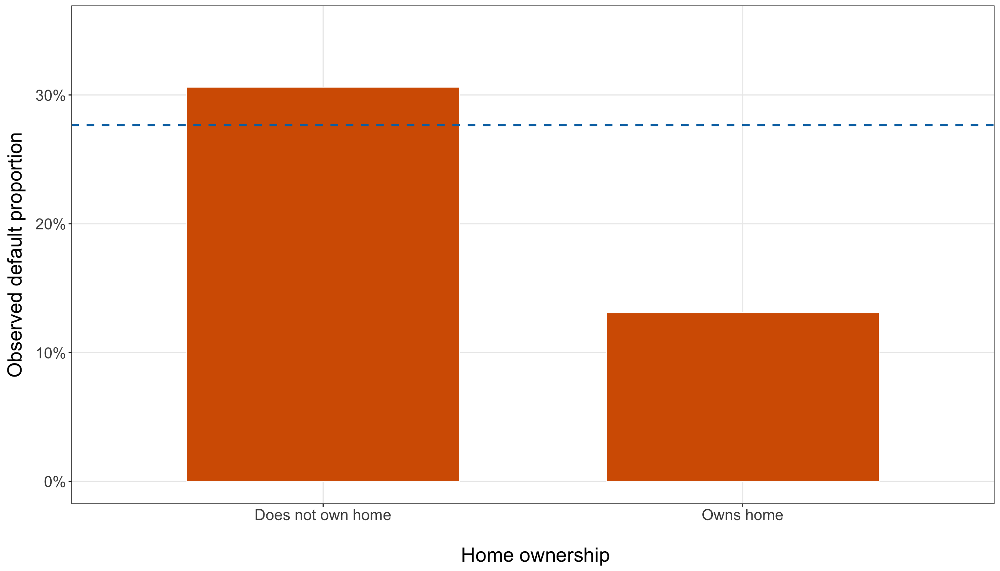
home_plot = make_default_rate_plot(training_data, "owns_home", "Home ownership",
)
plt.show()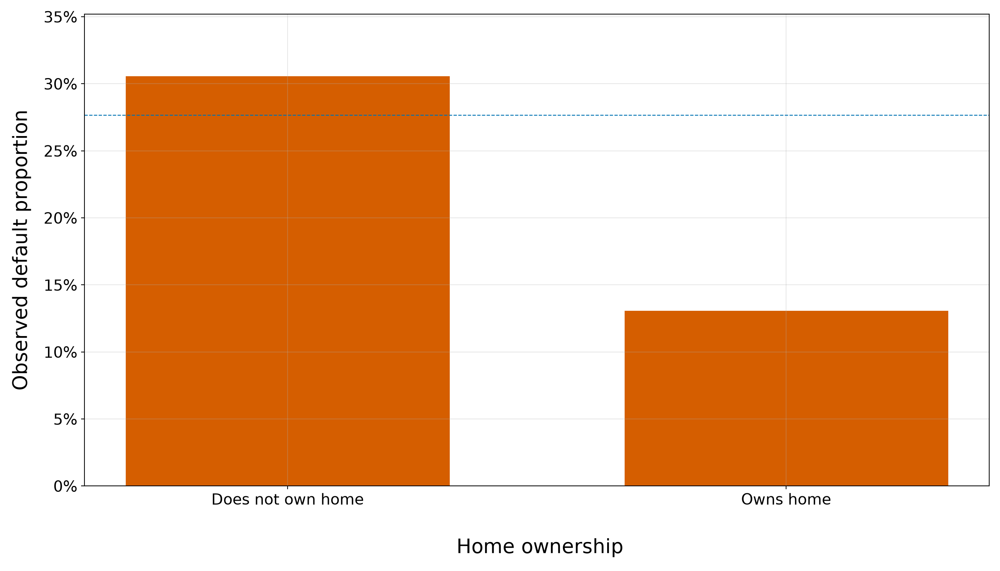
8.7.6 Relationships Among the Regressors
The outcome comparisons above suggest that several borrower characteristics are individually related to default status. Before carrying all of them into a multivariable model, however, we also need to understand how the regressors relate to one another.

In particular, the boxplots already suggested that credit score, age, and education move in similar directions with default status. A correlation matrix will let us check whether those regressors also move together directly. Hence, we calculate Pearson correlations among credit_score, income, age, and education_years. This is an exploratory check of pairwise linear association among the regressors; it is not a test of their relationships with the binary response.
correlation_variables <- c("credit_score", "income", "age", "education_years")
correlation_labels <- c("Credit score", "Income", "Age", "Education years")
correlation_matrix <- training_data |>
select(all_of(correlation_variables)) |>
cor(use = "complete.obs") |>
round(2)
rownames(correlation_matrix) <- correlation_labels
colnames(correlation_matrix) <- correlation_labels
correlation_matrix |>
kable(align = rep("c", ncol(correlation_matrix) + 1))| Credit score | Income | Age | Education years | |
|---|---|---|---|---|
| Credit score | 1.00 | 0.52 | 0.92 | 0.83 |
| Income | 0.52 | 1.00 | 0.47 | 0.47 |
| Age | 0.92 | 0.47 | 1.00 | 0.75 |
| Education years | 0.83 | 0.47 | 0.75 | 1.00 |
correlation_variables = ["credit_score", "income", "age", "education_years",
]
correlation_labels = ["Credit score", "Income", "Age", "Education years",
]
correlation_matrix = (training_data[correlation_variables].corr().round(2))
correlation_matrix.index = (correlation_labels)
correlation_matrix.columns = (correlation_labels)
correlation_matrix_html = (scrollable_table_html(correlation_matrix, index=True,
))| Credit score | Income | Age | Education years | |
|---|---|---|---|---|
| Credit score | 1.00 | 0.52 | 0.92 | 0.83 |
| Income | 0.52 | 1.00 | 0.47 | 0.47 |
| Age | 0.92 | 0.47 | 1.00 | 0.75 |
| Education years | 0.83 | 0.47 | 0.75 | 1.00 |
The strongest relationship is between credit score and age, with a training correlation of 0.92. Credit score is also strongly related to years of education, with a correlation of 0.83, while age and education have a correlation of 0.75. These values confirm that the three regressors contain substantial overlapping linear information. On the other hand, income is less tightly tied to the other continuous regressors. Its correlation with credit score is 0.52, with age 0.47, and with education 0.47. Thus, income is not unrelated to the other borrower characteristics, but its overlap is appreciably smaller than the credit-score/age relationship. This is another reason why income is a particularly useful candidate for extending the credit-score-only model.
The same correlation structure is displayed visually in Figure 8.18 (or Figure 8.19).
correlation_plot_data <- as.data.frame(as.table(correlation_matrix))
names(correlation_plot_data) <- c("Regressor 1", "Regressor 2", "Correlation")
correlation_plot <- ggplot(correlation_plot_data,
aes(x = `Regressor 1`, y = `Regressor 2`, fill = Correlation)) +
geom_tile(colour = "white", linewidth = 0.6) +
geom_text(aes(label = sprintf("%.2f", Correlation)), size = 5) +
scale_fill_gradient2(low = "#D55E00", mid = "white", high = "#0072B2", midpoint = 0,
limits = c(-1, 1), name = "Correlation") +
coord_fixed() +
theme_bw() +
theme(axis.text.x = element_text(size = 13, angle = 30, hjust = 1),
axis.text.y = element_text(size = 13), axis.title = element_blank(),
legend.title = element_text(size = 13, face = "bold"),
legend.text = element_text(size = 12), panel.grid = element_blank())
correlation_plot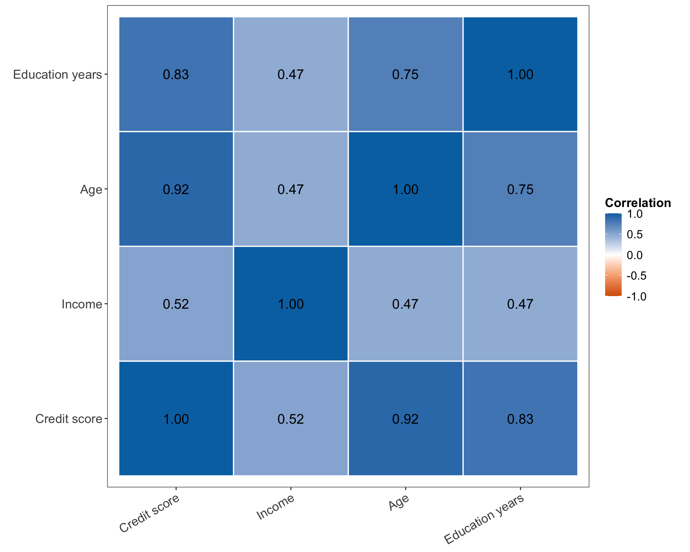
from matplotlib.colors import LinearSegmentedColormap
correlation_colormap = (
LinearSegmentedColormap.from_list("cookbook_diverging", ["#D55E00", "white", "#0072B2",
],
))
correlation_plot, ax = plt.subplots(figsize=(10, 8))
heatmap = ax.imshow(correlation_matrix.to_numpy(), cmap=correlation_colormap, vmin=-1,
vmax=1,
)
_ = ax.set_xticks(np.arange(len(correlation_labels)))
_ = ax.set_yticks(np.arange(len(correlation_labels)))
_ = ax.set_xticklabels(correlation_labels, rotation=30, ha="right", fontsize=13,
)
_ = ax.set_yticklabels(correlation_labels, fontsize=13,
)
for row_index in range(len(correlation_labels)):
for column_index in range(len(correlation_labels)):
_ = ax.text(column_index, row_index,
(f"{correlation_matrix.iloc[row_index, column_index]:.2f}"), ha="center",
va="center", fontsize=12,
)
colour_bar = correlation_plot.colorbar(heatmap, ax=ax,
)
_ = colour_bar.set_label("Correlation", fontsize=13,
)
_ = colour_bar.ax.tick_params(labelsize=12,
)
_ = ax.grid(False)
_ = correlation_plot.tight_layout()
plt.show()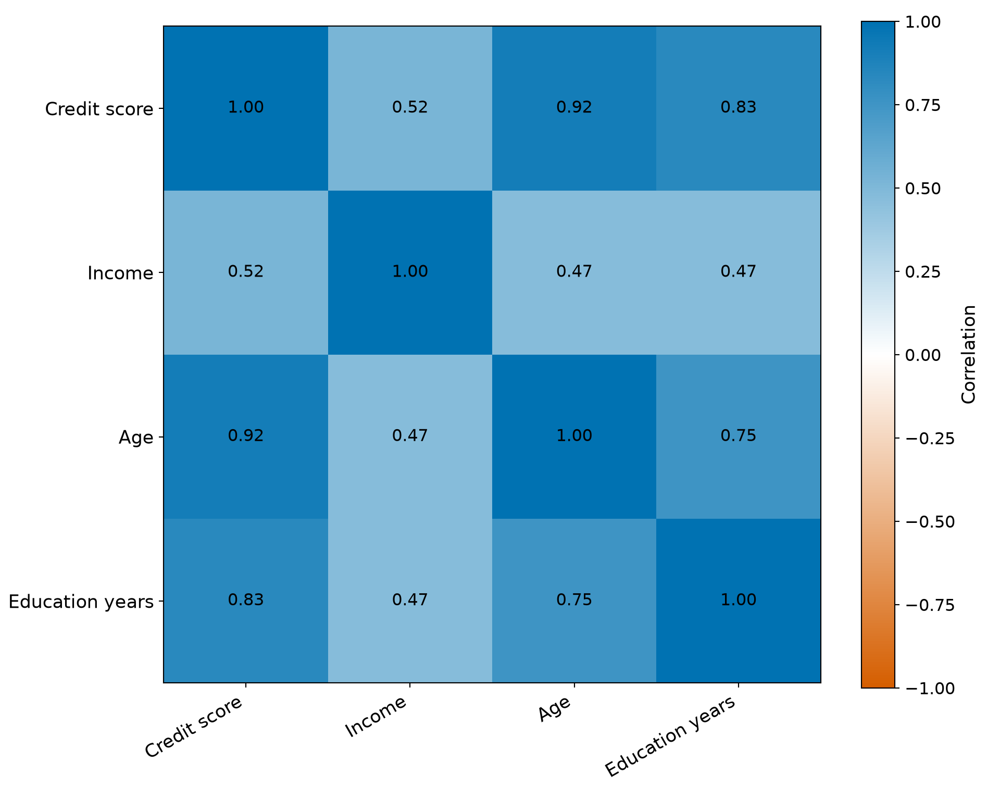
The heatmap emphasizes the same feature that the numerical table reveals: the credit-score, age, and education block is much more tightly related internally than income is to those variables. That structure matters for later multivariable modelling because strongly related regressors can compete to explain the same variation. Their fitted coefficients may therefore be less stable and their standard errors may increase when they are included together, even when each regressor looked strongly related to default in a one-variable-at-a-time EDA.
Heads-up on correlation among regressors!
A correlation matrix answers a question about how the regressors move together. It does not answer the Logistic regression question of how one regressor is associated with default probability or log-odds holding other included regressors fixed.
Strong correlation is also not an automatic instruction to remove a variable. Instead, it tells us to examine coefficient stability and multicollinearity carefully when larger candidate models are compared. The EDA correlation matrix is therefore a planning and diagnostic clue, not a variable-selection rule.
8.7.7 Exploratory Data Analysis Summary
The training-data EDA now gives us a considerably more specific picture of the modelling problem. Table 8.25 records the main descriptive findings and, just as importantly, the limits of what those findings can establish before a model is fitted.

| Feature investigated | What the training data show | What this motivates next | What EDA does not establish |
|---|---|---|---|
| Binary response | Defaults are the minority outcome, but the event is not extremely rare. | Evaluate predicted probabilities and use metrics that do not reward the majority class mechanically. | The class proportions do not determine a classification threshold. |
| Credit score, \(x_{i,1}\) | Defaulting borrowers have substantially lower credit scores; the central distributions are clearly separated, and the observed default proportion is much higher in the lowest credit-score bins than in the highest. | Begin with credit_score_50 in the simple Binary Logistic regression model. |
The pattern is marginal and does not establish a causal relationship or linearity in the log-odds. |
| Income, \(x_{i,2}\) | Defaulting borrowers have lower incomes on average and in the median, but the two income distributions overlap more than the credit-score distributions. Binned default proportions nevertheless decline markedly across the income range. | Add income_10k as the primary extension to the simple model. |
The marginal income gradient does not show what income contributes after credit score is held fixed. |
| Age, \(x_{i,3}\) | Defaulting borrowers are younger, with a strong gradient in observed default proportions across age groups. | Retain age as a candidate borrower characteristic in the larger-model exploration. | Age is strongly related to credit score, so its raw association cannot be interpreted as an independent adjusted association. |
| Education, \(x_{i,4}\) | Defaulting borrowers have fewer years of education, and observed default proportions are largest in the lowest education groups. | Retain education as another candidate continuous regressor. | Education overlaps substantially with credit score and age; the marginal pattern alone does not justify retaining it in the final model. |
| Marital status, \(x_{i,5}\) | The observed default proportion is lower among borrowers recorded as married than among those recorded as not married. | Preserve marital status for the larger candidate model and later categorical-coefficient interpretation. | The category contrast is unadjusted and may partly reflect differences in other borrower characteristics. |
| Home ownership, \(x_{i,6}\) | Homeowners have a lower observed default proportion, but the homeowner category is much smaller and contains relatively few defaults. | Preserve home ownership as a candidate categorical regressor while paying attention to coefficient stability. | A large raw proportion difference based on a smaller category is not evidence of a stable independent association. |
| Relationships among continuous regressors | Credit score, age, and education are strongly positively correlated; income is more moderately related to the other continuous regressors. | Examine multicollinearity and coefficient stability when comparing the larger candidate model with simpler specifications. | Pairwise correlation is not a keep/drop rule and does not describe adjusted associations with default. |
| Functional form | Binned proportions show broad gradients across all four continuous regressors. | Carry the continuous regressors forward and check linearity on the log-odds scale formally in Section 8.10.5. | Monotone-looking empirical proportions do not prove that a linear logit specification is adequate. |
The EDA therefore supports a deliberate modelling sequence rather than an automatic “include everything” strategy. Credit score is the clearest starting point: it shows the strongest marginal separation and will let us introduce Binary Logistic regression with a single continuous regressor. Annual income is the natural first extension because it also shows a substantial default gradient while being less tightly correlated with credit score than age or education are. Age, education, marital status, and home ownership remain important contributions to the chapter as candidate borrower characteristics, but their EDA patterns give us reasons to examine a larger specification carefully rather than assuming that every marginal difference will translate into a stable adjusted coefficient.
Most importantly, none of the EDA results constitutes formal inferential evidence. We have not estimated coefficients, standard errors, CIs, or hypothesis tests, and we have not yet assessed linearity on the log-odds scale. The next section therefore moves from empirical patterns to a formal probability model by introducing Binary Logistic regression as a GLM, with a Bernoulli random component, a linear predictor, and the logit link.
8.8 Binary Logistic Regression as a Generalized Linear Model
The EDA showed that default probability varies across several borrower characteristics, but those empirical comparisons were still descriptive. We now need a probability model that respects the binary nature of the response while allowing its conditional probability to vary systematically with the regressors.

Binary Logistic regression is a GLM with the following three-part structure:
- a random component, which specifies the conditional probability distribution of the response;
- a systematic component, which combines the regressors through a linear predictor; and
- a link function, which connects the conditional mean of the response to that linear predictor.
This GLM view is useful because it makes clear what remains linear in Logistic regression and what does not. The regressors are combined linearly on the log-odds scale, while the conditional probability itself is obtained through a nonlinear transformation.
Recall the response-level linear probability model considered earlier:
\[ Y_i = \beta_0 + \beta_1x_{i,1} + \cdots + \beta_kx_{i,k} + \varepsilon_i, \tag{8.5}\]
where \(\varepsilon_i\) is an additive error term with conditional mean zero. Binary Logistic regression does not replace \(\varepsilon_i\) with a different additive error distribution. Instead, it models the binary response through its conditional Bernoulli distribution. The randomness is therefore represented directly by the distribution of \(Y_i\) given the regressors.
Heads-up on the GLM random component!
In the OLS-style representation in Equation 8.5, it is natural to think of
\[ \text{Response} = \text{Systematic component} + \text{Random error}. \]
That decomposition does not carry over literally to Binary Logistic regression. We do not write a Bernoulli response as a linear predictor plus a new additive error term. Instead, the random component specifies a Bernoulli conditional distribution, the systematic component specifies a linear predictor, and the logit link connects that predictor to the Bernoulli event probability. This distinction is central to understanding Logistic regression as a GLM.
Now, we develop those three components for the loan-default case study.
8.8.1 The Random Component
Let \(Y_i\) denote the default status of the \(i\)th borrower in the training data, for \(i=1,2,\ldots,n\). We use the coding established earlier:
\[ Y_i = \begin{cases} 1, & \text{if borrower } i \text{ defaults},\\ 0, & \text{if borrower } i \text{ does not default}. \end{cases} \]
Let
\[ \mathbf{x}_i = \left( x_{i,1}, x_{i,2}, \ldots, x_{i,k} \right)^\top \]
denote the vector of observed regressor values for borrower \(i\). For the largest candidate specification in this chapter, \(k=6\), corresponding to credit score, income, age, years of education, marital status, and home ownership as defined earlier.
The random component of Binary Logistic regression assumes
\[ Y_i \mid \mathbf{x}_i \sim \operatorname{Bernoulli}(\pi_i), \]
where
\[ \pi_i = \Pr(Y_i=1\mid\mathbf{x}_i) \]
is the conditional probability that borrower \(i\) defaults, given that borrower’s regressor values. Consequently,
\[ 1-\pi_i = \Pr(Y_i=0\mid\mathbf{x}_i) \]
is the corresponding conditional probability of no default.
For a possible realization \(y_i\in\{0,1\}\), the conditional probability mass function (PMF) can be written as
\[ p_Y(y_i;\pi_i) = \Pr(Y_i=y_i\mid\mathbf{x}_i) = \pi_i^{y_i} (1-\pi_i)^{1-y_i}, \qquad y_i\in\{0,1\}. \]
Here:
- \(Y_i\) is the Bernoulli random variable for borrower \(i\);
- \(y_i\) is one possible observed realization of \(Y_i\), either \(0\) or \(1\);
- \(\mathbf{x}_i\) is the borrower’s regressor vector;
- \(\pi_i\) is the borrower’s conditional probability of default;
- \(1-\pi_i\) is the borrower’s conditional probability of no default.
The Bernoulli model also determines the conditional mean and variance:
\[ \mathbb{E}(Y_i\mid\mathbf{x}_i) = \pi_i, \tag{8.6}\]
and
\[ \operatorname{Var}(Y_i\mid\mathbf{x}_i) = \pi_i(1-\pi_i). \tag{8.7}\]
Equation 8.6 is especially important. Because \(Y_i\) is coded \(0/1\), its conditional mean is numerically equal to the conditional probability of the event. Thus, in Binary Logistic regression, modelling the conditional mean means modelling the probability of default. The variance in Equation 8.7 also depends on \(\pi_i\). It is largest when \(\pi_i=0.5\) and becomes smaller as \(\pi_i\) approaches either \(0\) or \(1\). This is the mean-variance relationship that the linear probability model failed to accommodate with a constant-variance error assumption.
Heads-up on the Bernoulli random component!
For an individual-level binary response \(Y_i\in\{0,1\}\) and regressor vector \(\mathbf{x}_i\), the Bernoulli random component assumes
\[ Y_i\mid\mathbf{x}_i \sim \operatorname{Bernoulli}(\pi_i), \]
where
\[ \pi_i = \Pr(Y_i=1\mid\mathbf{x}_i), \qquad 0<\pi_i<1. \]
Under this model,
\[ \mathbb{E}(Y_i\mid\mathbf{x}_i)=\pi_i \]
and
\[ \operatorname{Var}(Y_i\mid\mathbf{x}_i) = \pi_i(1-\pi_i). \]
The symbol \(\pi_i\) is therefore both the Bernoulli parameter and the conditional mean of the binary response.
The random component tells us what kind of response is being modelled, but it does not yet explain why two borrowers with different characteristics may have different values of \(\pi_i\). That role belongs to the systematic component.
8.8.2 The Systematic Component
The systematic component combines the regressors through a linear predictor. With \(k\) regressors,
\[ \eta_i = \beta_0 + \beta_1x_{i,1} + \beta_2x_{i,2} + \cdots + \beta_kx_{i,k}. \tag{8.8}\]
Equivalently,
\[ \eta_i = \beta_0 + \mathbf{x}_i^\top \boldsymbol{\beta}, \]
where
\[ \boldsymbol{\beta} = \left( \beta_1, \beta_2, \ldots, \beta_k \right)^\top. \]
Thus:
- \(\eta_i\) is the linear predictor for borrower \(i\);
- \(\beta_0\) is the intercept;
- \(\beta_1,\ldots,\beta_k\) are fixed but unknown regression coefficients;
- \(x_{i,1},\ldots,x_{i,k}\) are the observed regressor values for borrower \(i\);
- \(\mathbf{x}_i\) collects those \(k\) regressor values; and
- \(\boldsymbol{\beta}\) collects the corresponding \(k\) regression coefficients.
Some texts absorb the intercept into the vector notation by adding a leading \(1\) to the regressor vector. We keep \(\beta_0\) visible here so that \(\mathbf{x}_i\) remains consistent with the regressor-vector notation introduced earlier in the chapter.
For example, a simple candidate model based on the rescaled credit score uses
\[ \eta_i = \beta_0 + \beta_1x_{i,1}^{(50)}, \]
where \(x_{i,1}^{(50)}=\frac{x_{i,1}}{50}\) corresponds to credit_score_50. An extended model may add the rescaled income variable,
\[ \eta_i = \beta_0 + \beta_1x_{i,1}^{(50)} + \beta_2x_{i,2}^{(10\text{k})}, \]
where \(x_{i,2}^{(10\text{k})}=\frac{x_{i,2}}{10{,}000}\) corresponds to income_10k.
The word linear in linear predictor refers to the way the regression coefficients enter \(\eta_i\). It does not mean that the default probability itself is a straight-line function of the regressors.
Heads-up on what is linear in Binary Logistic regression!
The systematic component is \(\eta_i\), not \(\pi_i\). In other words,
\[ \eta_i = \beta_0 + \mathbf{x}_i^\top\boldsymbol{\beta} \]
is linear in the regression coefficients, while
\[ \pi_i = \Pr(Y_i=1\mid\mathbf{x}_i) \]
lives on the probability scale.
Therefore, we still need a link function that connects the unrestricted real-valued linear predictor \(\eta_i\) to a valid probability between \(0\) and \(1\).
This separation between the linear predictor and the response-scale probability is what allows a GLM to retain a regression structure without forcing the conditional probability itself to be linear.
8.8.3 The Logit Link Function
A link function connects the conditional mean of the response to the systematic component. Since
\[ \mathbb{E}(Y_i\mid\mathbf{x}_i)=\pi_i, \]
Binary Logistic regression needs a link that maps a probability in \((0,1)\) to the entire real line.
The standard choice is the logit link:
\[ \operatorname{logit}(\pi_i) = \log\left( \frac{\pi_i}{1-\pi_i} \right) = \eta_i. \tag{8.9}\]
Combining Equation 8.9 with Equation 8.8 gives the familiar Binary Logistic regression model:
\[ \log\left( \frac{\pi_i}{1-\pi_i} \right) = \beta_0 + \beta_1x_{i,1} + \cdots + \beta_kx_{i,k}. \]
The fraction
\[ \frac{\pi_i}{1-\pi_i} \]
is the odds of default for borrower \(i\). The logit is therefore the natural logarithm of those odds, which is why \(\eta_i\) is also called the borrower’s log-odds under the model.
The logit link solves the range problem encountered with the linear probability model:
- when \(0<\pi_i<1\), the odds \(\pi_i/(1-\pi_i)\) are positive;
- taking the logarithm maps those positive odds to any real number;
- therefore, \(\eta_i\) can range freely from \(-\infty\) to \(+\infty\) even though \(\pi_i\) must remain between \(0\) and \(1\).
For example,
\[ \pi_i=0.5 \quad\Longrightarrow\quad \frac{\pi_i}{1-\pi_i}=1 \quad\Longrightarrow\quad \operatorname{logit}(\pi_i)=0. \]
Probabilities below \(0.5\) correspond to negative log-odds, while probabilities above \(0.5\) correspond to positive log-odds.
Definition of the logit link
For an event probability \(\pi_i\) satisfying \(0<\pi_i<1\), the logit function is
\[ \operatorname{logit}(\pi_i) = \log\left( \frac{\pi_i}{1-\pi_i} \right). \]
The quantity \(\pi_i/(1-\pi_i)\) is the odds of the event, and the logit is the log-odds. In Binary Logistic regression, the logit link sets those log-odds equal to the linear predictor with \(k\) regressors:
\[ \begin{aligned} \operatorname{logit}(\pi_i) &= \eta_i \\ &= \beta_0 + \beta_1x_{i,1} + \cdots + \beta_kx_{i,k}. \end{aligned} \]
Notice that the observed response itself can equal exactly \(0\) or \(1\), but the model-based probability generated by a finite value of \(\eta_i\) lies strictly between those endpoints. This distinction between an observed binary outcome and its underlying conditional probability will remain important throughout the chapter.
Tip on the history of Binary Logistic regression!
The ideas behind Binary Logistic regression developed over more than a century, and the logistic curve itself predates Logistic regression by a long way. The story begins with the Belgian mathematician Pierre-François Verhulst, who introduced what we now call the logistic curve in 1838 while studying population growth and later used the term logistic for the curve in 1845. His goal was not to model binary outcomes. Instead, he sought a growth curve that could initially increase rapidly but then slow as a population approached a limiting level. The familiar S-shape of the logistic function therefore has its origins in nineteenth-century population modelling (Cramer 2004).

The statistical role of the logistic function emerged much later. In 1944, Joseph Berkson proposed the logistic function for modelling quantal bio-assay responses and introduced the term logit for the transformation
\[ \operatorname{logit}(\pi) = \log\left( \frac{\pi}{1-\pi} \right). \]
The name was deliberately analogous to the probit, another transformation already being used for binary-response problems. Berkson’s work helped establish the logistic function as a practical model for probabilities associated with binary outcomes (Berkson 1944).
The regression interpretation developed further in the following decades. David Cox, for example, studied regression methods for sequences of binary \(0/1\) responses whose event probabilities depended on one or more regressors (Cox 1958). This moved the Logistic model closer to the regression framework that we use today. Finally, Nelder and Wedderburn introduced the unified framework of GLMs in 1972 (Nelder and Wedderburn 1972). Their formulation brought models for Normal, binomial, Poisson, Gamma, and other responses under a common structure involving a random component, a systematic component, and a link function.
Therefore, Binary Logistic regression brings together several ideas developed at very different times: Verhulst’s nineteenth-century S-shaped growth curve, Berkson’s logit transformation for binary data, subsequent regression methods for binary responses, and the modern GLM framework.
8.8.4 From Log-Odds Back to Probability
The logit link lets us build the model on the unrestricted log-odds scale, but most substantive questions are easier to communicate on the probability scale. We therefore need to invert the logit transformation.
Starting from
\[ \log\left( \frac{\pi_i}{1-\pi_i} \right) = \eta_i, \]
exponentiating both sides gives
\[ \frac{\pi_i}{1-\pi_i} = \exp(\eta_i). \]
Multiplying both sides by \(1-\pi_i\),
\[ \pi_i = \exp(\eta_i)(1-\pi_i). \]
Collecting the terms involving \(\pi_i\),
\[ \pi_i \left[ 1+\exp(\eta_i) \right] = \exp(\eta_i), \]
and therefore
\[ \pi_i = \frac{\exp(\eta_i)} {1+\exp(\eta_i)}. \tag{8.10}\]
An equivalent and often convenient form is
\[ \pi_i = \frac{1} {1+\exp(-\eta_i)}. \]
This transformation is called the inverse-logit function or logistic function. In machine-learning contexts, it is also commonly called the sigmoid function.
The important point is that \(\eta_i\) may take any real value, but the inverse-logit transformation always returns a value strictly between \(0\) and \(1\):
\[ -\infty<\eta_i<\infty \quad\Longrightarrow\quad 0<\pi_i<1. \]
For the full regression model,
\[ \pi_i = \frac{ \exp\left( \beta_0+\beta_1x_{i,1}+\cdots+\beta_kx_{i,k} \right) }{ 1+ \exp\left( \beta_0+\beta_1x_{i,1}+\cdots+\beta_kx_{i,k} \right) }. \]
This is the response-scale form of Binary Logistic regression. It shows directly why the fitted relationship between the regressors and the probability is nonlinear even though the model is linear in the log-odds.
8.8.5 Understanding the Logistic S-Curve
The inverse-logit function in Equation 8.10 produces the characteristic S-shaped curve of Logistic regression. To understand the shape without tying it to any particular fitted coefficient yet, consider the probability as a function of the linear predictor:
\[ \pi(\eta) = \frac{1}{1+\exp(-\eta)}. \]
Three points provide an immediate orientation:
\[ \begin{aligned} \eta &\rightarrow -\infty &\Longrightarrow\quad \pi(\eta) &\rightarrow 0,\\ \eta &=0 &\Longrightarrow\quad \pi(\eta) &=0.5,\\ \eta &\rightarrow +\infty &\Longrightarrow\quad \pi(\eta) &\rightarrow 1. \end{aligned} \]
The curve is steepest around \(\eta=0\), where the probability is \(0.5\), and it flattens as the probability approaches either boundary. This can be seen directly from the derivative of the logistic function:
\[ \frac{d\pi(\eta)}{d\eta} = \pi(\eta) \left[ 1-\pi(\eta) \right]. \]
Because
\[ 0< \pi(\eta) \left[ 1-\pi(\eta) \right] \leq \frac{1}{4}, \]
the derivative is largest when \(\pi(\eta)=0.5\) and becomes progressively smaller toward \(0\) and \(1\). At \(\eta=0\),
\[ \left. \frac{d\pi(\eta)}{d\eta} \right|_{\eta=0} = 0.5(1-0.5) = 0.25. \]
This derivative explains the geometry of the S-curve. Equal-sized movements on the linear-predictor scale do not translate into equal-sized movements on the probability scale. Near the middle of the curve, probability changes more rapidly; near either tail, the same movement in \(\eta\) produces a smaller change in probability. The following comparison illustrates this idea visually. The blue curve is the inverse-logit transformation, while the dashed orange line is a deliberately naive linear probability relationship passing through \((0,0.5)\). The horizontal reference lines mark the valid probability boundaries.
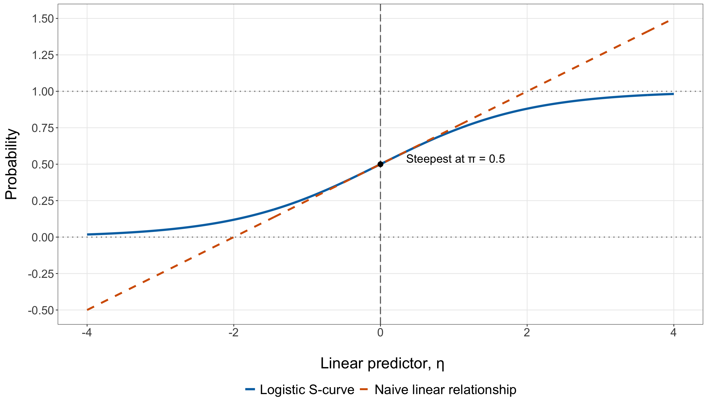
The contrast in Figure 8.20 captures the key advantage over a linear probability relationship. The dashed line eventually moves below \(0\) and above \(1\), whereas the Logistic curve approaches those boundaries asymptotically without crossing them. At the same time, the Logistic curve remains monotone: larger values of \(\eta\) always correspond to larger probabilities.
The direction of the relationship with a particular regressor depends on the corresponding coefficient. If \(\beta_j>0\), increasing \(x_{i,j}\) increases \(\eta_i\) and therefore increases \(\pi_i\). If \(\beta_j<0\), increasing \(x_{i,j}\) decreases \(\eta_i\) and therefore decreases \(\pi_i\). In either case, however, the probability response is steepest around \(\pi_i=0.5\) and flatter near \(0\) and \(1\).
8.8.6 Probabilities, Odds, and Log-Odds

Binary Logistic regression moves among three closely related scales: probability, odds, and log-odds. Keeping them distinct is crucial because regression coefficients are additive on the log-odds scale, multiplicative on the odds scale, and nonlinear on the probability scale.
For an event probability \(\pi\),
\[ 0<\pi<1. \]
The corresponding odds are
\[ \operatorname{odds} = \frac{\pi}{1-\pi}. \]
Odds compare the probability that the event occurs with the probability that it does not occur. For example, if \(\pi=0.20\), then
\[ \operatorname{odds} = \frac{0.20}{0.80} = 0.25. \]
This can be read as odds of \(0.25\) to \(1\), or equivalently \(1\) to \(4\), in favour of the event.
The log-odds are simply the natural logarithm of the odds:
\[ \operatorname{log\text{-}odds} = \log\left( \frac{\pi}{1-\pi} \right). \]
The transformations are reversible. If the odds are known,
\[ \pi = \frac{\operatorname{odds}} {1+\operatorname{odds}}, \]
and if the log-odds are known, applying the exponential function gives the odds before the inverse-logit function gives the probability.
| Probability, \(\pi\) | Odds, \(\pi/(1-\pi)\) | Log-odds, \(\log[\pi/(1-\pi)]\) | Interpretation |
|---|---|---|---|
| \(0.10\) | \(0.111\) | \(-2.197\) | Event much less likely than non-event |
| \(0.20\) | \(0.250\) | \(-1.386\) | Event less likely than non-event |
| \(0.50\) | \(1.000\) | \(0.000\) | Event and non-event equally likely |
| \(0.80\) | \(4.000\) | \(1.386\) | Event more likely than non-event |
| \(0.90\) | \(9.000\) | \(2.197\) | Event much more likely than non-event |
The scales differ in their ranges:
\[ \begin{aligned} \text{Probability:}\quad &0<\pi<1,\\ \text{Odds:}\quad &0<\frac{\pi}{1-\pi}<\infty,\\ \text{Log-odds:}\quad &-\infty< \log\left(\frac{\pi}{1-\pi}\right) <\infty. \end{aligned} \]
These different ranges explain why the log-odds scale is convenient for the systematic component. A linear predictor can take any real value, and the logit link gives it a scale with the same unrestricted range.
There is also an important interpretive distinction. A difference of \(0.10\) on the probability scale always means a ten-percentage-point difference, but a fixed difference on the log-odds scale does not correspond to a fixed probability difference. That is the reason Logistic-regression coefficients can have constant log-odds or odds-ratio interpretations while their probability implications vary across borrowers.
8.8.7 Why a Fixed Odds Ratio Does Not Imply a Fixed Probability Change
Suppose a continuous regressor \(x_j\) enters the linear predictor without an interaction or nonlinear transformation:
\[ \eta = \beta_0 + \beta_jx_j + \text{terms involving the other regressors}. \]
Holding those other regressors fixed, a one-unit increase in \(x_j\) changes the log-odds by the constant amount \(\beta_j\):
\[ \eta(x_j+1)-\eta(x_j) = \beta_j. \]
Exponentiating gives a constant multiplicative change in the odds:
\[ \frac{ \operatorname{odds}(x_j+1) }{ \operatorname{odds}(x_j) } = \exp(\beta_j). \]
Thus, under this simple coefficient structure, \(\exp(\beta_j)\) is the odds ratio associated with a one-unit increase in \(x_j,\) holding the other included regressors fixed.

The corresponding probability change is different. Since
\[ \pi = \frac{1}{1+\exp(-\eta)}, \]
the chain rule gives
\[ \frac{\partial\pi} {\partial x_j} = \frac{d\pi}{d\eta} \frac{\partial\eta}{\partial x_j} = \beta_j \pi(1-\pi). \]
The coefficient \(\beta_j\) is constant, but the factor
\[ \pi(1-\pi) \]
is not. It depends on the borrower’s current fitted probability. Therefore, the probability-scale slope varies across the range of the model even when the log-odds coefficient is fixed.
This also explains why the S-curve is steepest around \(\pi=0.5\). For a fixed \(\beta_j\),
\[ \left| \frac{\partial\pi} {\partial x_j} \right| \]
is largest when \(\pi=0.5\) and becomes smaller as \(\pi\) approaches \(0\) or \(1\).
We can see the same point without calculus. Let
\[ \operatorname{OR} = \exp(\beta_j) \]
denote the odds ratio for a one-unit increase in \(x_j\). If the starting probability is \(\pi\), then the starting odds are \(\pi/(1-\pi)\). Multiplying those odds by \(\operatorname{OR}\) and transforming back to probability gives
\[ \pi_{\text{new}} = \frac{ \operatorname{OR}\,\pi }{ 1-\pi+\operatorname{OR}\,\pi }. \]
The resulting probability change,
\[ \pi_{\text{new}}-\pi, \]
depends on the starting value of \(\pi\).
For example, consider the same odds ratio, \(\operatorname{OR}=2\), at three different starting probabilities as in Table 8.27.
| Starting probability, \(\pi\) | Starting odds | New odds after multiplying by 2 | New probability | Probability change |
|---|---|---|---|---|
| \(0.10\) | \(0.111\) | \(0.222\) | \(0.182\) | \(+0.082\) |
| \(0.50\) | \(1.000\) | \(2.000\) | \(0.667\) | \(+0.167\) |
| \(0.80\) | \(4.000\) | \(8.000\) | \(0.889\) | \(+0.089\) |
The odds are doubled in every row, but the probability increase is not constant. The largest increase occurs near the middle of the probability range, where the Logistic curve is steepest.
Heads-up on odds ratios and probability changes!
An odds ratio is not a probability ratio and is not a percentage-point change in probability. For a coefficient \(\beta_j\), the quantity \(\exp(\beta_j)\) describes a multiplicative change in the odds for the specified regressor contrast, holding the other included regressors fixed. Translating that same odds ratio into a probability difference requires a starting probability (or, equivalently, values for the other regressors that determine the starting linear predictor).
This distinction will become important when we interpret fitted coefficients later. Odds ratios provide a compact coefficient-level summary, whereas predicted probabilities allow us to express what the fitted model implies for particular borrower profiles. The two summaries answer related but different questions.
8.9 Fitting a Simple Binary Logistic Regression Model
The preceding sections established the Binary Logistic regression model mathematically. We now fit the first model in the chapter using the training data only. The EDA in Section 8.7.4 showed that credit score has the clearest marginal separation between borrowers who default and borrowers who do not. The binned default proportions also declined strongly across higher credit-score ranges. For that reason, we begin with a deliberately simple one-regressor model based on the rescaled variable credit_score_50 introduced in Section 8.6.4.

This simple model serves two purposes. First, it lets us connect the GLM formulation from Section 8.8 to an actual fitted model. Second, with only one regressor, the relationships among the coefficient, log-odds, odds, and fitted probability curve remain easy to see.
The model fitted in this section is part of model development. It is not yet the chapter’s final inferential model or final predictive evaluation. Following the workflow in Section 8.5.4, the testing outcomes remain untouched while we fit, inspect, and extend the model using the training data.
8.9.1 Model Specification
For borrower \(i\), let
\[ Y_i = \begin{cases} 1, & \text{if borrower } i \text{ defaults},\\ 0, & \text{if borrower } i \text{ does not default}, \end{cases} \]
and let
\[ x_{i,1}^{(50)} = \frac{x_{i,1}}{50} \]
denote the borrower’s credit score measured in 50-point units. In the data, \(x_{i,1}^{(50)}\) is stored as credit_score_50.
The simple Binary Logistic regression model is
\[ Y_i \mid x_{i,1}^{(50)} \sim \operatorname{Bernoulli}(\pi_i), \]
where
\[ \pi_i = \Pr \left( Y_i=1 \mid x_{i,1}^{(50)} \right) \]
is the conditional probability that borrower \(i\) defaults.
The systematic component is
\[ \eta_i = \beta_0 + \beta_1x_{i,1}^{(50)}, \]
and the logit link gives
\[ \log \left( \frac{\pi_i}{1-\pi_i} \right) = \beta_0 + \beta_1x_{i,1}^{(50)}. \]
Equivalently, on the probability scale,
\[ \pi_i = \frac{ \exp \left( \beta_0 + \beta_1x_{i,1}^{(50)} \right) }{ 1+ \exp \left( \beta_0 + \beta_1x_{i,1}^{(50)} \right) }. \]
In this model:
- \(Y_i\) is the binary default random variable for borrower \(i\);
- \(x_{i,1}\) is the borrower’s original credit score;
- \(x_{i,1}^{(50)}=x_{i,1}/50\) is credit score measured in 50-point units;
- \(\pi_i\) is the conditional probability of default for borrower \(i\);
- \(\eta_i\) is the linear predictor, representing the modelled log-odds before estimation;
- \(\beta_0\) is the intercept; and
- \(\beta_1\) is the change in the log-odds of default associated with a 50-point increase in credit score.
The intercept corresponds to a credit score of zero because \(x_{i,1}^{(50)}=0\) when \(x_{i,1}=0\). That value lies far outside the observed credit-score range in this case study, so \(\beta_0\) is mathematically necessary but is not, by itself, the main substantive quantity of interest.
Heads-up on the word “simple”!
A simple regression model contains one regressor. It does not mean that the probability relationship is linear on its original scale. Here, the model is linear in the log-odds,
\[ \operatorname{logit}(\pi_i) = \beta_0+\beta_1x_{i,1}^{(50)}, \]
but nonlinear in the probability,
\[ \pi_i = \frac{ \exp\left(\beta_0+\beta_1x_{i,1}^{(50)}\right) }{ 1+\exp\left(\beta_0+\beta_1x_{i,1}^{(50)}\right) }. \]

With the model specified, the next question is how to estimate the unknown coefficients \(\beta_0\) and \(\beta_1\) from the training observations.
8.9.2 Estimation by Maximum Likelihood
Binary Logistic regression is estimated using maximum likelihood estimation (MLE). The general likelihood idea was introduced in Section 2.3: once a probability model has been specified, we choose the parameter values that make the observed data most compatible with that model.
For the simple Logistic model, the Bernoulli PMF for observation \(i\) is
\[ p_Y(y_i;\pi_i) = \pi_i^{y_i} (1-\pi_i)^{1-y_i}, \qquad y_i\in\{0,1\}, \]
with
\[ \pi_i = \frac{ \exp\left(\beta_0+\beta_1x_{i,1}^{(50)}\right) }{ 1+\exp\left(\beta_0+\beta_1x_{i,1}^{(50)}\right) }. \]
Assuming the training responses are independent conditional on their observed credit scores, the likelihood for \(\beta_0\) and \(\beta_1\) is
\[ \mathcal{L} \left( \beta_0,\beta_1; \mathbf{y} \right) = \prod_{i=1}^{n_{\mathrm{train}}} \pi_i^{y_i} (1-\pi_i)^{1-y_i}, \]
where
\[ \mathbf{y} = (y_1,\ldots,y_{n_{\mathrm{train}}})^\top \]
is the vector of observed training responses and \(n_{\mathrm{train}}\) is the number of training borrowers.
Taking logarithms gives the log-likelihood
\[ \ell \left( \beta_0,\beta_1; \mathbf{y} \right) = \sum_{i=1}^{n_{\mathrm{train}}} \left[ y_i\log(\pi_i) + (1-y_i)\log(1-\pi_i) \right]. \tag{8.11}\]
Using
\[ \eta_i = \beta_0+\beta_1x_{i,1}^{(50)} \]
and the Logistic transformation, Equation 8.11 can also be written as
\[ \ell \left( \beta_0,\beta_1; \mathbf{y} \right) = \sum_{i=1}^{n_{\mathrm{train}}} \left\{ y_i\eta_i - \log \left[ 1+\exp(\eta_i) \right] \right\}. \]
The observed maximum likelihood estimate is therefore
\[ \begin{bmatrix} \hat{\beta}_0\\ \hat{\beta}_1 \end{bmatrix} = \underset{\beta_0,\beta_1} {\operatorname{argmax}} \; \ell \left( \beta_0,\beta_1; \mathbf{y} \right). \tag{8.12}\]
Unlike OLS, there is no simple closed-form expression that we can plug the data into to obtain Equation 8.12 directly. Numerical optimization is required.
The score equations make the fitting target especially transparent. Differentiating the log-likelihood gives
\[ \frac{\partial\ell} {\partial\beta_0} = \sum_{i=1}^{n_{\mathrm{train}}} (y_i-\pi_i) \]
and
\[ \frac{\partial\ell} {\partial\beta_1} = \sum_{i=1}^{n_{\mathrm{train}}} x_{i,1}^{(50)} (y_i-\pi_i). \]
At the MLE, these score equations are set to zero. After replacing \(\pi_i\) by the fitted probability \(\hat{\pi}_i\), the intercept equation implies
\[ \sum_{i=1}^{n_{\mathrm{train}}} y_i = \sum_{i=1}^{n_{\mathrm{train}}} \hat{\pi}_i. \]
Thus, for a Logistic regression model with an intercept, the total number of observed events is balanced by the sum of the fitted event probabilities. The score equation for the credit-score coefficient adds a second balancing condition:
\[ \sum_{i=1}^{n_{\mathrm{train}}} x_{i,1}^{(50)}y_i = \sum_{i=1}^{n_{\mathrm{train}}} x_{i,1}^{(50)}\hat{\pi}_i. \]
Software typically solves these equations iteratively. One common GLM algorithm is Iteratively Reweighted Least Squares (IRLS). At iteration \(t\), the current linear predictor and fitted probability are
\[ \eta_i^{(t)} = \beta_0^{(t)} + \beta_1^{(t)}x_{i,1}^{(50)} \]
and
\[ \pi_i^{(t)} = \frac{ 1 }{ 1+\exp\left(-\eta_i^{(t)}\right) }. \]
For Binary Logistic regression, IRLS uses the working weight
\[ w_i^{(t)} = \pi_i^{(t)} \left( 1-\pi_i^{(t)} \right) \tag{8.13}\]
and the working response
\[ z_i^{(t)} = \eta_i^{(t)} + \frac{ y_i-\pi_i^{(t)} }{ \pi_i^{(t)} \left( 1-\pi_i^{(t)} \right) }. \]
A temporary weighted least-squares problem is solved, the terms are updated, and the process repeats until the estimates converge. The target is still the Bernoulli maximum likelihood estimate; IRLS is simply a numerical route for reaching it.
Notice the familiar quantity in Equation 8.13:
\[ \pi_i(1-\pi_i). \]
It is both the Bernoulli conditional variance from Section 8.8.1 and the derivative factor that controls the steepness of the Logistic S-curve in Section 8.8.5. The same probability geometry therefore appears in the response variance, the fitted curve, and the numerical estimation algorithm.

The IRLS description above tells us how the maximum likelihood estimates are reached. The same ingredients also explain where the model-based standard errors of those estimates come from. To make that connection explicit, define the simple-model coefficient vector
\[ \boldsymbol{\beta}_{\mathrm{s}} = \begin{pmatrix} \beta_0\\ \beta_1 \end{pmatrix} \]
and the intercept-augmented regressor vector
\[ \widetilde{\mathbf{x}}_i = \begin{pmatrix} 1\\ x_{i,1}^{(50)} \end{pmatrix}. \]
The tilde is important: \(\widetilde{\mathbf{x}}_i\) is being introduced only as a convenient two-element vector for the simple model’s matrix calculations. It does not redefine the chapter’s earlier regressor vector \(\mathbf{x}_i\), which contains the observed borrower characteristics without an intercept.
With this notation,
\[ \eta_i = \widetilde{\mathbf{x}}_i^\top \boldsymbol{\beta}_{\mathrm{s}}, \]
and the score vector can be written compactly as
\[ \mathbf{U} \left( \boldsymbol{\beta}_{\mathrm{s}} \right) = \frac{ \partial \ell( \boldsymbol{\beta}_{\mathrm{s}}; \mathbf{y} ) }{ \partial \boldsymbol{\beta}_{\mathrm{s}} } = \sum_{i=1}^{n_{\mathrm{train}}} \widetilde{\mathbf{x}}_i (y_i-\pi_i). \]
The MLE \(\widehat{\boldsymbol{\beta}}_{\mathrm{s}}\) is the coefficient vector at which this score vector is zero.
The next derivative tells us how sharply the log-likelihood bends around a candidate value of the coefficients. Differentiating the score once more gives the Hessian matrix
\[ \mathbf{H} \left( \boldsymbol{\beta}_{\mathrm{s}} \right) = \frac{ \partial^2 \ell( \boldsymbol{\beta}_{\mathrm{s}}; \mathbf{y} ) }{ \partial \boldsymbol{\beta}_{\mathrm{s}} \partial \boldsymbol{\beta}_{\mathrm{s}}^\top } = - \sum_{i=1}^{n_{\mathrm{train}}} \pi_i(1-\pi_i) \widetilde{\mathbf{x}}_i \widetilde{\mathbf{x}}_i^\top. \tag{8.14}\]
The negative sign reflects the fact that, under the usual regularity conditions, the Bernoulli Logistic log-likelihood is concave in the coefficients. Around its maximum, stronger curvature means that the likelihood falls away more quickly as we move from the MLE; weaker curvature means that a wider range of coefficient values remains comparatively compatible with the observed data.
This curvature is summarized through the Fisher information matrix:
\[ \mathcal{I} \left( \boldsymbol{\beta}_{\mathrm{s}} \right) = \mathbb{E} \left[ - \mathbf{H} \left( \boldsymbol{\beta}_{\mathrm{s}} \right) \mid \mathbf{X} \right]. \]
For Binary Logistic regression,
\[ \mathcal{I} \left( \boldsymbol{\beta}_{\mathrm{s}} \right) = \sum_{i=1}^{n_{\mathrm{train}}} w_i \widetilde{\mathbf{x}}_i \widetilde{\mathbf{x}}_i^\top, \qquad w_i = \pi_i(1-\pi_i). \tag{8.15}\]
Because the Hessian in Equation 8.14 depends on the regressors and fitted probabilities but not directly on the realized binary value \(y_i\), the observed information and expected Fisher information coincide for the standard Bernoulli Logistic model with a fixed design matrix.
If we stack the vectors \(\widetilde{\mathbf{x}}_i^\top\) into the design matrix \(\widetilde{\mathbf{X}}\) and place the weights \(w_i\) along the diagonal of
\[ \mathbf{W} = \operatorname{diag} (w_1,\ldots,w_{n_{\mathrm{train}}}), \]
then Equation 8.15 becomes
\[ \mathcal{I} \left( \boldsymbol{\beta}_{\mathrm{s}} \right) = \widetilde{\mathbf{X}}^\top \mathbf{W} \widetilde{\mathbf{X}}. \]
For this one-regressor model, we can even write the information matrix explicitly:
\[ \mathcal{I} \left( \boldsymbol{\beta}_{\mathrm{s}} \right) = \begin{pmatrix} \displaystyle \sum_i w_i & \displaystyle \sum_i w_i x_{i,1}^{(50)} \\[10pt] \displaystyle \sum_i w_i x_{i,1}^{(50)} & \displaystyle \sum_i w_i \left( x_{i,1}^{(50)} \right)^2 \end{pmatrix}. \tag{8.16}\]
This is the same weighted cross-product matrix that appears inside Fisher scoring and IRLS. In fact, the Fisher-scoring update can be written as
\[ \boldsymbol{\beta}_{\mathrm{s}}^{(t+1)} = \boldsymbol{\beta}_{\mathrm{s}}^{(t)} + \left[ \mathcal{I} \left( \boldsymbol{\beta}_{\mathrm{s}}^{(t)} \right) \right]^{-1} \mathbf{U} \left( \boldsymbol{\beta}_{\mathrm{s}}^{(t)} \right). \]
Thus, the Fisher information has two connected roles:
- during estimation, it determines how the coefficient vector is updated through Fisher scoring/IRLS; and
- after estimation, its inverse provides the large-sample covariance matrix used for the model-based standard errors.
Under the usual regularity conditions for maximum likelihood estimation,
\[ \widehat{\boldsymbol{\beta}}_{\mathrm{s}} \mathrel{\dot{\sim}} \operatorname{Normal} \left[ \boldsymbol{\beta}_{\mathrm{s}}, \, \mathcal{I} \left( \boldsymbol{\beta}_{\mathrm{s}} \right)^{-1} \right], \]
where \(\dot{\sim}\) indicates an asymptotic approximation rather than an exact finite-sample distribution.
Since the unknown probabilities \(\pi_i\) depend on the unknown coefficients, we evaluate the information at the MLE. Let
\[ \widehat{w}_i = \widehat{\pi}_i \left( 1-\widehat{\pi}_i \right). \]
Then, the estimated model-based covariance matrix is
\[ \widehat{ \operatorname{Cov} \left( \widehat{\boldsymbol{\beta}}_{\mathrm{s}} \right) } = \left[ \mathcal{I} \left( \widehat{\boldsymbol{\beta}}_{\mathrm{s}} \right) \right]^{-1} = \left( \widetilde{\mathbf{X}}^\top \widehat{\mathbf{W}} \widetilde{\mathbf{X}} \right)^{-1}. \]
The standard error of coefficient estimate \(\widehat{\beta}_j\) is the square root of the corresponding diagonal element:
\[ \operatorname{SE} \left( \widehat{\beta}_j \right) = \sqrt{ \left[ \widehat{ \operatorname{Cov} \left( \widehat{\boldsymbol{\beta}}_{\mathrm{s}} \right) } \right]_{jj} }. \tag{8.17}\]
Heads-up on Fisher information and model-based standard errors!
For the simple Binary Logistic regression model, let
\[ \widehat{\pi}_i = \Pr \left( Y_i=1 \mid x_{i,1}^{(50)}; \widehat{\boldsymbol{\beta}}_{\mathrm{s}} \right) \]
be the fitted default probability and let
\[ \widehat{w}_i = \widehat{\pi}_i (1-\widehat{\pi}_i). \]
With \(\widetilde{\mathbf{X}}\) denoting the design matrix containing an intercept column and credit_score_50, the estimated Fisher information is
\[ \mathcal{I} \left( \widehat{\boldsymbol{\beta}}_{\mathrm{s}} \right) = \widetilde{\mathbf{X}}^\top \widehat{\mathbf{W}} \widetilde{\mathbf{X}}, \]
where
\[ \widehat{\mathbf{W}} = \operatorname{diag} ( \widehat{w}_1,\ldots,\widehat{w}_{n_{\mathrm{train}}} ). \]
The corresponding model-based covariance matrix is estimated by
\[ \left[ \mathcal{I} \left( \widehat{\boldsymbol{\beta}}_{\mathrm{s}} \right) \right]^{-1}, \]
and the standard error of each coefficient estimate is the square root of the appropriate diagonal element of this inverse matrix.
The simple model lets us see particularly clearly what determines the uncertainty in the credit-score slope. Define the weighted mean
\[ \overline{x}_{\widehat{w}} = \frac{ \sum_i \widehat{w}_i x_{i,1}^{(50)} }{ \sum_i \widehat{w}_i }. \]
Inverting the \(2\times2\) information matrix in Equation 8.16 gives
\[ \operatorname{SE} \left( \widehat{\beta}_1 \right) = \frac{ 1 }{ \sqrt{ \displaystyle \sum_{i=1}^{n_{\mathrm{train}}} \widehat{w}_i \left( x_{i,1}^{(50)} - \overline{x}_{\widehat{w}} \right)^2 } }. \tag{8.18}\]
Equation 8.18 reveals two ingredients behind a precise credit-score estimate.
First, the training data need spread in credit score. If nearly all borrowers had almost the same credit score, there would be little information for estimating how the log-odds change as credit score changes.
Second, the observations are not all weighted equally. The Bernoulli Logistic weight
\[ \widehat{w}_i = \widehat{\pi}_i (1-\widehat{\pi}_i) \]
is largest when \(\widehat{\pi}_i=0.5\), where
\[ \widehat{w}_i=0.25, \]
and becomes smaller as the fitted probability approaches \(0\) or \(1\). Borrowers whose fitted probabilities lie near the middle of the Logistic curve therefore contribute more local curvature information about the coefficients than otherwise similar observations far into the tails.
This does not mean that observations with probabilities near \(0\) or \(1\) are useless. Information also depends on where their credit scores lie and on the overall design. Rather, Equation 8.18 shows why both the distribution of the regressor and the fitted Bernoulli variances matter for coefficient precision.
There is also an important connection to the separation problem that we will check shortly. Under strong or complete separation, coefficient estimates can be pushed toward very large magnitudes, fitted probabilities can be driven increasingly close to \(0\) or \(1\), and the corresponding weights can collapse toward zero. The Fisher information may then become poorly conditioned or effectively singular, making the usual inverse-information standard errors unstable or invalid. In other words, finite coefficients, a well-behaved information matrix, and stable standard errors are all part of the same estimation story.
Heads-up on what these standard errors assume!
The standard errors in Equation 8.17 are model-based maximum likelihood standard errors. They rely on the Bernoulli Logistic model and on the conditional independence structure used to construct the likelihood.
For the Bernoulli response,
\[ \operatorname{Var} \left( Y_i\mid x_{i,1}^{(50)} \right) = \pi_i(1-\pi_i) \]
is built directly into the information matrix through the weights \(w_i\). If the observations have an unmodelled dependence structure (for example, repeated or clustered measurements) the ordinary inverse-Fisher-information standard errors need not correctly represent the sampling variability.

For the current case study, we proceed with the independent Bernoulli model specified above. Formal hypothesis tests and CIs will come later; here, the standard errors first serve as an important measure of estimation precision and numerical stability.
We are now ready to fit the model and let the software carry out the numerical maximization and inverse-information calculations:
- In
R, theformulaargument specifies the model asresponse ~ regressors:defaultedis the binary response andcredit_score_50is the single regressor. The argumentfamily = binomial(link = "logit")tellsglm()to use the Bernoulli/Binomial mean-variance structure together with the logit link. Finally,data = training_dataensures that this model-development fit uses only the training observations. For an individual \(0/1\) response,R’sbinomial()GLM family covers the Bernoulli case used here: each row contributes one binary outcome rather than a grouped count of successes out of several trials. - In
Python, theformulaargument has the same response-versus-regressor role as inR. The argumentdata=training_dataidentifies the training DataFrame.Binomial()supplies the binary-response mean-variance structure, andLogit()explicitly selects the logit link. The firstglm()call constructs the GLM specification, while.fit()performs the numerical maximum likelihood estimation and returns the fitted results object.
simple_model = glm(formula=("defaulted ~ " "credit_score_50"), data=training_data,
family=Binomial(link=sm.families.links.Logit()),
)
simple_model = simple_model.fit()Both languages have now estimated the same simple model from the same training borrowers. We can connect the software output directly back to the Fisher-information derivation rather than treating the reported standard errors as values that appeared automatically.
simple_design_matrix <- model.matrix(simple_model)
simple_fitted_probabilities <- fitted(simple_model)
simple_weights <- simple_fitted_probabilities *
(1 - simple_fitted_probabilities)
simple_fisher_information <- crossprod(simple_design_matrix, simple_weights *
simple_design_matrix)
simple_covariance_matrix <- solve(simple_fisher_information)
simple_fisher_standard_errors <- sqrt(diag(simple_covariance_matrix))
simple_standard_error_check <- tibble(Term = c("Intercept", "Credit score (per 50 points)"),
Estimate = unname(coef(simple_model)), `Software standard error` =
sqrt(diag(vcov(simple_model))), `Inverse-Fisher standard error` =
unname(simple_fisher_standard_errors)) |>
mutate(across(where(is.numeric), ~ round(.x, 4)))
simple_standard_error_check |>
kable(align = c("c", "c", "c", "c"))| Term | Estimate | Software standard error | Inverse-Fisher standard error |
|---|---|---|---|
| Intercept | 10.3326 | 1.0487 | 1.0487 |
| Credit score (per 50 points) | -0.8151 | 0.0772 | 0.0772 |
simple_design_matrix = (simple_model.model.exog)
simple_fitted_probabilities = (simple_model.fittedvalues.to_numpy())
simple_weights = (simple_fitted_probabilities * (1 - simple_fitted_probabilities))
simple_fisher_information = (simple_design_matrix.T
@ (simple_weights[:, None] * simple_design_matrix))
simple_covariance_matrix = (np.linalg.inv(simple_fisher_information))
simple_fisher_standard_errors = (np.sqrt(np.diag(simple_covariance_matrix)))
simple_standard_error_check = pd.DataFrame({
"Term": ["Intercept", "Credit score (per 50 points)",
], "Estimate": (simple_model.params.to_numpy()),
"Software standard error": (simple_model.bse.to_numpy()),
"Inverse-Fisher standard error": (simple_fisher_standard_errors),
}).round(4)
simple_standard_error_check_html = (scrollable_table_html(simple_standard_error_check))| Term | Estimate | Software standard error | Inverse-Fisher standard error |
|---|---|---|---|
| Intercept | 10.3326 | 1.0487 | 1.0487 |
| Credit score (per 50 points) | -0.8151 | 0.0772 | 0.0772 |
The two standard-error columns in Table 8.28 agree up to numerical rounding. This is not a coincidence: for this standard Bernoulli Logistic GLM, the software’s model-based covariance calculation is the inverse of the same Fisher-information matrix constructed above. The table also puts the estimates and their uncertainty on the coefficient scale. The standard error for credit_score_50 describes the sampling variability of the estimated log-odds coefficient for a 50-point credit-score increase. It is not itself an uncertainty measure on the probability scale. Later, when we construct inferential summaries and predicted probabilities, transformations of the coefficient estimates will require the corresponding scale-specific interpretation.
8.9.3 Initial Estimation and Stability Check
Before interpreting the credit-score coefficient substantively, we should verify that the numerical fit is well behaved. Logistic regression can encounter a particularly important estimation problem called complete separation or quasi-complete separation. In this one-regressor setting, complete separation would occur if a credit-score threshold could divide all defaulting borrowers from all non-defaulting borrowers with no mistakes. Quasi-complete separation is a boundary version of the same problem: the groups can be separated except for observations that lie exactly on the separating boundary.
When separation occurs, the likelihood can continue to improve as one or more coefficient estimates move toward \(\pm\infty\). The usual finite MLE may therefore fail to exist. Typical warning signs include:
- failure of the fitting algorithm to converge;
- extremely large or non-finite coefficient estimates;
- very large or non-finite model-based standard errors;
- fitted probabilities driven numerically very close to \(0\) or \(1\);
- a Fisher-information matrix that is singular or poorly conditioned; and
- in a one-regressor model, outcome groups that occupy non-overlapping or merely boundary-touching regressor ranges.

Thus, we run a compact set of sanity checks before interpreting the fit.
default_credit_scores <-
training_data$credit_score[training_data$defaulted == 1]
nondefault_credit_scores <-
training_data$credit_score[training_data$defaulted == 0]
overlap_lower <- max(min(default_credit_scores), min(nondefault_credit_scores))
overlap_upper <- min(max(default_credit_scores), max(nondefault_credit_scores))
score_ranges_overlap <- overlap_lower < overlap_upper
fisher_condition_number <- kappa(simple_fisher_information)
cat(sprintf(paste0("Converged: %s\n", "All coefficients finite: %s\n",
"All standard errors finite: %s\n", "All fitted probabilities finite: %s\n",
"Fitted probabilities strictly inside (0, 1): %s\n",
"Fitted-probability range: %.4f to %.4f\n",
"Fisher-information condition number: %.2f\n\n",
"Default credit-score range: %.0f to %.0f\n",
"No-default credit-score range: %.0f to %.0f\n",
"Outcome-specific credit-score ranges overlap: %s\n"),
ifelse(simple_model$converged, "Yes", "No"),
ifelse(all(is.finite(coef(simple_model))), "Yes", "No"),
ifelse(all(is.finite(sqrt(diag(vcov(simple_model))))), "Yes", "No"),
ifelse(all(is.finite(simple_fitted_probabilities)), "Yes", "No"),
ifelse(all(simple_fitted_probabilities > 0 & simple_fitted_probabilities < 1), "Yes", "No"
), min(simple_fitted_probabilities), max(simple_fitted_probabilities),
fisher_condition_number, min(default_credit_scores), max(default_credit_scores),
min(nondefault_credit_scores), max(nondefault_credit_scores),
ifelse(score_ranges_overlap, "Yes", "No")))Converged: Yes
All coefficients finite: Yes
All standard errors finite: Yes
All fitted probabilities finite: Yes
Fitted probabilities strictly inside (0, 1): Yes
Fitted-probability range: 0.0286 to 0.9322
Fisher-information condition number: 14158.31
Default credit-score range: 473 to 849
No-default credit-score range: 489 to 850
Outcome-specific credit-score ranges overlap: Yesdefault_credit_scores = (training_data.loc[training_data["defaulted"] == 1, "credit_score",
].to_numpy())
nondefault_credit_scores = (
training_data.loc[training_data["defaulted"] == 0, "credit_score",
].to_numpy())
overlap_lower = max(default_credit_scores.min(), nondefault_credit_scores.min(),
)
overlap_upper = min(default_credit_scores.max(), nondefault_credit_scores.max(),
)
score_ranges_overlap = (overlap_lower < overlap_upper)
fisher_condition_number = (np.linalg.cond(simple_fisher_information))
print(f"Converged: " f"{'Yes' if simple_model.converged else 'No'}\n"
f"All coefficients finite: "
f"{'Yes' if np.isfinite(simple_model.params.to_numpy()).all() else 'No'}\n"
f"All standard errors finite: "
f"{'Yes' if np.isfinite(simple_model.bse.to_numpy()).all() else 'No'}\n"
f"All fitted probabilities finite: "
f"{'Yes' if np.isfinite(simple_fitted_probabilities).all() else 'No'}\n"
f"Fitted probabilities strictly inside (0, 1): "
f"{'Yes' if ((simple_fitted_probabilities > 0) & (simple_fitted_probabilities < 1)).all() else 'No'}\n"
f"Fitted-probability range: " f"{simple_fitted_probabilities.min():.4f} to "
f"{simple_fitted_probabilities.max():.4f}\n" f"Fisher-information condition number: "
f"{fisher_condition_number:.2f}\n\n" f"Default credit-score range: "
f"{default_credit_scores.min():.0f} to " f"{default_credit_scores.max():.0f}\n"
f"No-default credit-score range: " f"{nondefault_credit_scores.min():.0f} to "
f"{nondefault_credit_scores.max():.0f}\n"
f"Outcome-specific credit-score ranges overlap: "
f"{'Yes' if score_ranges_overlap else 'No'}")Converged: Yes
All coefficients finite: Yes
All standard errors finite: Yes
All fitted probabilities finite: Yes
Fitted probabilities strictly inside (0, 1): Yes
Fitted-probability range: 0.0286 to 0.9322
Fisher-information condition number: 13263.18
Default credit-score range: 473 to 849
No-default credit-score range: 489 to 850
Outcome-specific credit-score ranges overlap: YesThe two outcome groups occupy overlapping credit-score ranges in the training data: defaults range from 473 to 849, while non-defaults range from 489 to 850. Thus, no single credit-score threshold perfectly separates the observed outcomes.
The fitted model also converges, returns finite coefficients and standard errors, and produces finite fitted probabilities strictly inside \((0,1)\). Taken together with the overlap of the outcome-specific credit-score ranges and the finite Fisher-information calculation, these checks provide no obvious indication of complete or quasi-complete separation in this simple one-regressor fit.
The condition number reported above is included as a numerical warning sign rather than as a universal pass/fail test. A very large value would indicate that the information matrix is poorly conditioned and that some coefficient directions are much less precisely identified than others. Its magnitude also depends on how the regressors are scaled—one practical reason that the 50-point credit-score rescaling is useful computationally as well as interpretively.
Heads-up on separation checks!
The overlap check above is especially informative because the current model contains only one continuous regressor. Strict overlap in the outcome-specific credit-score ranges means that a single threshold in credit score cannot perfectly or quasi-perfectly separate all defaults from all non-defaults.
This does not prove that every larger Logistic regression model will be free of separation. With several continuous and categorical regressors, separation can arise from combinations of regressors even when every one-variable comparison overlaps. We will therefore continue to monitor convergence, finite coefficients, standard errors, fitted probabilities, and information-matrix stability as the specification becomes more complex.
The simple fit is sufficiently stable for us to interpret the estimated credit-score coefficient.
8.9.4 Interpreting the Credit-Score Coefficient
The fitted simple model has the form
\[ \widehat{ \operatorname{logit} (\pi_i) } = \widehat{\beta}_0 + \widehat{\beta}_1 x_{i,1}^{(50)}. \]
From the training fit,
\[ \widehat{\beta}_1 = \text{-0.8151}. \]
Because one unit of credit_score_50 represents 50 credit-score points, the estimate describes a 50-point credit-score contrast.
On the log-odds scale, a 50-point increase in credit score is associated with a change of -0.8151 in the fitted log-odds of default. The estimate is negative, so the fitted log-odds decrease as credit score increases.
Exponentiating the coefficient moves the interpretation to the odds scale:
\[ \exp \left( \widehat{\beta}_1 \right) = \text{0.443}. \]
Thus, for a 50-point increase in credit score, the fitted odds of default are multiplied by approximately 0.443.
Because the estimated odds ratio is below \(1\), the complementary interpretation is that the fitted odds of default are approximately 55.7% lower for a borrower whose credit score is 50 points higher.
These are equivalent descriptions of the same fitted coefficient:
- log-odds change: \(\widehat{\beta}_1\);
- odds ratio: \(\exp(\widehat{\beta}_1)\); and
- percentage decrease in odds: \(100[1-\exp(\widehat{\beta}_1)]\%\) when \(\widehat{\beta}_1<0\).
They are not probability differences. As shown in Section 8.8.7, the same fixed odds ratio can translate into different changes in fitted probability depending on the starting point on the Logistic curve.
The model-based standard error reported in Table 8.28 quantifies the estimation uncertainty of \(\widehat{\beta}_1\) on the log-odds coefficient scale. We will use this standard error for formal inference later rather than turning the current model-development section into a hypothesis-testing exercise.
Heads-up on what this simple coefficient is adjusted for!
This model contains credit score only. Its credit-score coefficient is therefore a single-regressor association. It is not adjusted for income, age, education, marital status, or home ownership. If credit score later appears in a multivariable model, its coefficient will describe the credit-score association holding the other included regressors fixed. That adjusted coefficient need not equal the simple-model coefficient because several borrower characteristics move together in the training data.

The current estimate is also a training-sample model-development result. It is useful for learning the coefficient interpretation and deciding how to develop the specification, but it is not the chapter’s final inferential estimate.
The odds-ratio interpretation is compact, but the fitted probability curve makes the same model easier to visualize on the response scale.
8.9.5 Visualizing the Fitted Probability Curve
The abstract Logistic S-curve in Section 8.8.5 showed how the inverse-logit function transforms a linear predictor into a probability. We can now see that same geometry in the loan-default case study.
We construct a fine grid of credit scores spanning the training-data range, convert the grid to credit_score_50, and use the fitted simple model to calculate
\[ \widehat{\pi}(x) = \frac{ \exp \left( \widehat{\beta}_0 + \widehat{\beta}_1x^{(50)} \right) }{ 1+ \exp \left( \widehat{\beta}_0 + \widehat{\beta}_1x^{(50)} \right) }. \]
The raw \(0/1\) training outcomes are shown with slight vertical jitter only to make overlapping observations visible. The smooth blue curve is the fitted conditional probability of default from the training model. Two orange reference points show the fitted probabilities at credit scores of 550 and 800, both within the observed training range.
credit_curve_data <- tibble(
credit_score = seq(min(training_data$credit_score), max(training_data$credit_score),
length.out = 400)) |>
mutate(credit_score_50 = credit_score / 50)
credit_curve_data[["fitted_probability"]] <- predict(simple_model, newdata =
credit_curve_data, type = "response")
reference_predictions <- tibble(credit_score = c(550, 800)) |>
mutate(credit_score_50 = credit_score / 50)
reference_predictions[["fitted_probability"]] <- predict(simple_model, newdata =
reference_predictions, type = "response")
reference_predictions <-
reference_predictions |>
mutate(probability_label = scales::percent(fitted_probability, accuracy = 0.1))
simple_probability_plot <- ggplot() +
geom_point(data = training_data, aes(x = credit_score, y = defaulted), position =
position_jitter(width = 0, height = 0.025, seed = 123), colour = "grey45",
alpha = 0.28, size = 1.8) +
geom_line(data = credit_curve_data,
aes(x = credit_score, y = fitted_probability, colour = "Fitted default probability"),
linewidth = 1.5) +
geom_segment(data = reference_predictions,
aes(x = credit_score, xend = credit_score, y = 0, yend = fitted_probability),
colour = "#D55E00", linetype = "dotted", linewidth = 0.9) +
geom_point(data = reference_predictions, aes(x = credit_score, y = fitted_probability),
colour = "#D55E00", size = 3.5) +
geom_text(data = reference_predictions,
aes(x = credit_score, y = fitted_probability, label = probability_label),
colour = "#D55E00",
nudge_y = 0.07,
size = 5.2
) +
scale_colour_manual(
breaks =
"Fitted default probability",
values = c("Fitted default probability" = "#0072B2"),
labels =
"Fitted default probability",
name = NULL
) +
scale_y_continuous(
breaks = seq(0, 1, by = 0.2),
labels =
scales::label_percent(accuracy = 1)
) +
coord_cartesian(
ylim = c(-0.05, 1.05)
) +
theme_bw() +
theme(
axis.text = element_text(size = 16.5),
axis.title.x = element_text(size = 22),
axis.title.y = element_text(size = 22, vjust = 0.5, margin = margin(r = 14)),
legend.position = "bottom",
legend.text = element_text(size = 15.5),
panel.grid.minor =
element_blank()
) +
labs(
x = "\n Credit score",
y =
"Fitted probability of default"
)
simple_probability_plot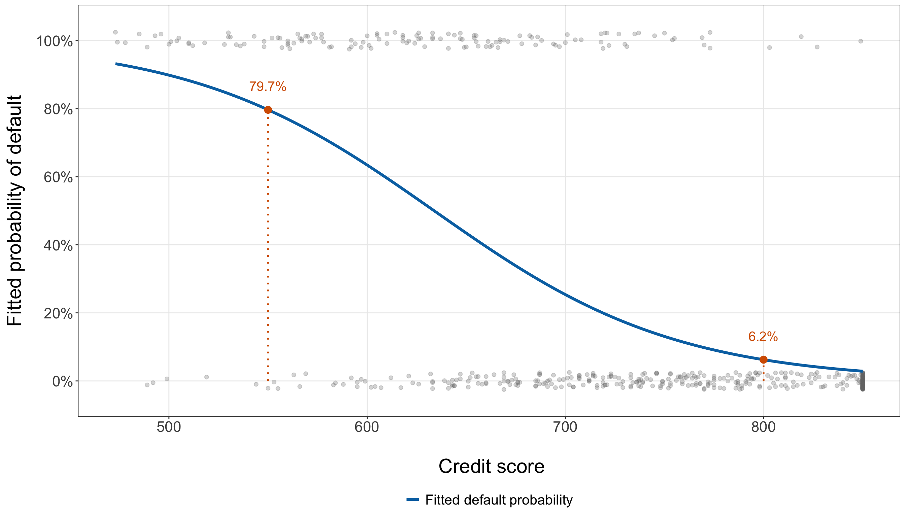
from matplotlib.ticker import PercentFormatter
credit_curve_data = pd.DataFrame({
"credit_score": np.linspace(training_data["credit_score"].min(),
training_data["credit_score"].max(), 400,
)})
credit_curve_data["credit_score_50"] = (credit_curve_data["credit_score"] / 50)
credit_curve_data["fitted_probability"] = simple_model.predict(credit_curve_data)
reference_predictions = pd.DataFrame({"credit_score": [550, 800,
]})
reference_predictions["credit_score_50"] = (reference_predictions["credit_score"] / 50)
reference_predictions["fitted_probability"] = simple_model.predict(reference_predictions)
jitter_generator = (np.random.default_rng(123))
jittered_default = (training_data["defaulted"].to_numpy()
+ jitter_generator.normal(loc=0, scale=0.025, size=len(training_data),
))
simple_probability_plot, ax = plt.subplots(figsize=(14, 8))
_ = ax.scatter(training_data["credit_score"], jittered_default, alpha=0.28, s=28,
color="0.45",
)
_ = ax.plot(credit_curve_data["credit_score"], credit_curve_data["fitted_probability"],
linewidth=2.2, color="#0072B2", label="Fitted default probability",
)
for _, row in (reference_predictions.iterrows()):
_ = ax.plot([row["credit_score"], row["credit_score"],
], [0, row["fitted_probability"],
], linestyle=":", linewidth=1.2, color="#D55E00",
)
_ = ax.scatter([row["credit_score"]], [row["fitted_probability"]], s=65,
color="#D55E00", zorder=3,
)
_ = ax.text(
row["credit_score"],
row["fitted_probability"] + 0.07,
(f"{row['fitted_probability']:.1%}"),
ha="center",
va="center",
fontsize=15,
color="#D55E00",
)
_ = ax.set_ylim(
-0.05,
1.05,
)
_ = ax.set_xlabel(
"\n Credit score",
fontsize=22,
)
_ = ax.set_ylabel(
"Fitted probability of default",
fontsize=22,
labelpad=14,
)
_ = ax.tick_params(
axis="both",
labelsize=16.5,
)
_ = ax.yaxis.set_major_formatter(
PercentFormatter(xmax=1, decimals=0,
)
)
_ = ax.grid(
True,
which="major",
alpha=0.3,
)
_ = ax.grid(
False,
which="minor",
)
_ = ax.legend(
loc="upper center",
bbox_to_anchor=(0.5,-0.2,),
frameon=False,
fontsize=15.5,
)
_ = simple_probability_plot.tight_layout()
plt.show()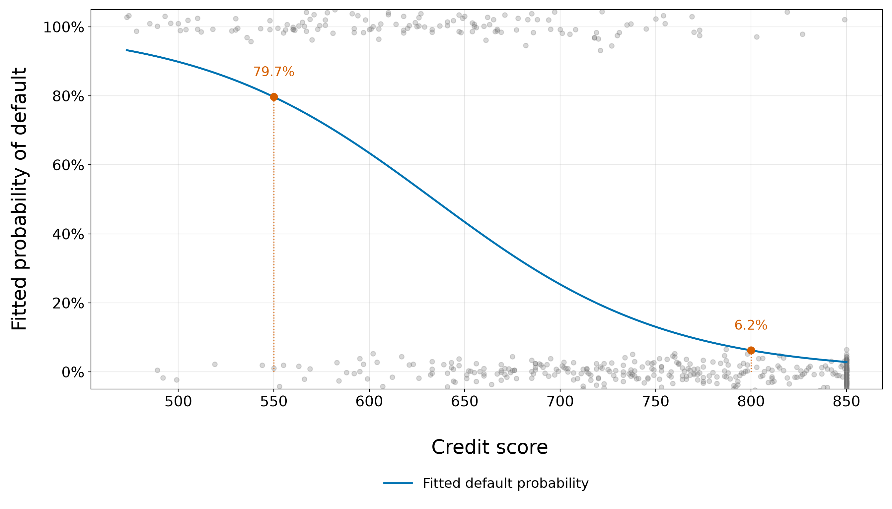
Figure 8.21 (or Figure 8.22) translates the negative credit-score coefficient into the response scale:
- At lower credit scores, the fitted probability of default is high.
- As credit score increases, the curve decreases, with its steepest portion occurring through the middle of the probability range and flatter behaviour as the fitted probability approaches either boundary.
The curve also makes clear why the estimated odds ratio does not correspond to one fixed probability change. Moving 50 credit-score points along the horizontal axis produces different vertical changes depending on where the borrower starts on the S-curve.
Now, the orange reference points make that relationship concrete. At a credit score of 550, the fitted training-model probability is 0.797, whereas at a score of 800 it is 0.062. These are model-based fitted probabilities, not observed proportions and not yet out-of-sample predictions.
Heads-up on fitted probabilities versus predictive evaluation!
The blue curve is calculated from a model fitted to training_data, and the grey points are the same training observations used to estimate that curve. It is therefore useful for understanding the fitted relationship and checking whether the model captures the broad pattern seen during EDA.
It is not an out-of-sample performance assessment. The testing borrowers remain untouched. Later, once the model specification has been fixed, the training-fitted model will be applied to the testing regressors for the predictive inquiry without refitting it on the testing outcomes.
The simple model has now given us a first fitted Logistic relationship, a numerically stable MLE, a direct connection between Fisher information and coefficient precision, an odds-ratio interpretation, and a response-scale probability curve. The next modelling step can ask whether credit score alone is sufficient or whether adding another borrower characteristic improves the model while preserving a stable and interpretable specification.
8.10 Checking Goodness of Fit and Model Stability
Fitting a Binary Logistic regression model is only the beginning. Before extending the model or using it for final inferential and predictive conclusions, we need to ask whether the fitted model behaves in ways that are compatible with the modelling assumptions we wrote down.
For the simple credit-score model, the main questions are:
- Did the maximum likelihood estimation converge to a finite, stable solution, or is there evidence of separation?
- Do the fitted probabilities track the observed default proportions across the credit-score range?
- Does the model appear reasonably calibrated when observations with similar fitted probabilities are grouped together?
- Do the deviance and Pearson residuals reveal observations that the model fits especially poorly?
- Is a linear relationship on the log-odds scale adequate for credit score?
- Are any observations unusually high in leverage or influence?
- Taken together, is the simple model adequate enough to serve as a stable baseline that we can extend and compare?
All diagnostics in this section continue to use only the training data. We are still inside the model-development stage. The testing outcomes remain untouched until the results stage.
Heads-up on diagnostics versus predictive evaluation!
A diagnostic check asks whether the training-data fit behaves in a way that is compatible with the model we are developing. If a serious problem appears, we are allowed to revise the specification because the training data are precisely where model development occurs. On the other hand, predictive evaluation answers a different question:
How well does the fixed training-fitted model perform on observations that were not used for fitting or diagnostic decisions?
That requires the untouched testing data and comes later.
A model that looks adequate on the training diagnostics is therefore not automatically a good predictive model, and a model that predicts well is not automatically well specified for inference. We will keep those roles separate.
8.10.1 Convergence and Separation
We already performed an initial numerical stability check in Section 8.9.3. Here, we place that check in the broader Logistic-regression context. A particularly important problem for ordinary maximum likelihood Logistic regression is separation.
Heads-up on complete and quasi-complete separation!
Consider a Binary Logistic regression model with an intercept-augmented regressor vector \(\widetilde{\mathbf{x}}_i\). Complete separation occurs when there is some nonzero vector \(\mathbf{a}\) such that
\[ \widetilde{\mathbf{x}}_i^\top\mathbf{a}>0 \quad \text{for every observation with }Y_i=1, \]
and
\[ \widetilde{\mathbf{x}}_i^\top\mathbf{a}<0 \quad \text{for every observation with }Y_i=0. \]
In other words, a linear boundary in the regressor space perfectly separates all events from all non-events.
Quasi-complete separation occurs when the same inequalities can be made non-strict,
\[ \widetilde{\mathbf{x}}_i^\top\mathbf{a}\geq0 \quad\text{for }Y_i=1, \]
and
\[ \widetilde{\mathbf{x}}_i^\top\mathbf{a}\leq0 \quad\text{for }Y_i=0, \]
with at least some observations lying exactly on the separating boundary.
For our current one-regressor model, separation has an especially simple geometric interpretation. If all defaulting borrowers appeared below some credit-score threshold and all non-defaulting borrowers appeared above it, credit score alone would perfectly separate the outcomes.
Under complete separation, the ordinary Bernoulli likelihood can keep increasing as one or more coefficient magnitudes grow without bound. A finite ordinary MLE therefore does not exist. Under quasi-complete separation, the same instability occurs along at least one coefficient direction. As a result:
- coefficient estimates may become extremely large;
- standard errors based on the inverse Fisher information may become extremely large or unstable;
- fitted probabilities can be pushed increasingly close to \(0\) or \(1\);
- the Fisher-information matrix can become nearly singular; and
- ordinary Wald-type inference can become unreliable.
Software often alerts us to the problem. In R, common warnings include messages such as
glm.fit: algorithm did not convergeor
glm.fit: fitted probabilities numerically 0 or 1 occurreddepending on the severity of the problem. In Python’s {statsmodels}, a separated or nearly separated fit may generate a PerfectSeparationWarning, fail to converge, or produce extreme coefficient estimates and standard errors.
These warnings are useful, but diagnostics should not rely on warning text alone. Convergence, finite coefficients, finite standard errors, fitted probabilities, regressor overlap, and information-matrix stability should be considered together.
For the simple credit-score model, the checks in Section 8.9.3 showed that:
- the fit converged;
- the coefficient estimates and standard errors were finite;
- the fitted probabilities remained finite and strictly inside \((0,1)\); and
- the observed credit-score ranges for defaults and non-defaults overlap.
The last point is especially informative in this one-dimensional setting: because the two outcome groups occupy overlapping credit-score ranges, no single credit-score threshold can completely or quasi-completely separate the training observations.
Heads-up on separation in larger models!
The absence of separation in a one-regressor model does not guarantee that a larger model will also be free of separation. With several continuous and categorical regressors, a linear combination of the regressors may separate the outcome even when every one-variable comparison shows overlap. Sparse categorical cells can be particularly relevant.
We will therefore continue checking convergence, coefficient magnitudes, fitted probabilities, and influence as the model becomes more complex.
8.10.2 Observed versus Fitted Probabilities
A fitted probability is a model-based quantity,
\[ \widehat{\pi}_i = \Pr \left( Y_i=1 \mid x_{i,1}^{(50)}; \widehat{\beta}_0, \widehat{\beta}_1 \right), \]
whereas an observed event proportion is an empirical summary of the \(0/1\) outcomes in a group of borrowers.
A useful first goodness-of-fit check is therefore to group borrowers into the same interpretable credit-score intervals used during EDA and compare:
- the observed default proportion in each interval; and
- the mean fitted default probability produced by the simple model in that interval.
If the model captures the broad credit-score relationship reasonably well, these quantities should track one another across the observed score range. Thus, we first create a common diagnostic data set that will also support the residual and influence checks later in this section.
simple_gof_data <- training_data |>
mutate(observation_index = row_number(), fitted_probability = fitted(simple_model),
linear_predictor = predict(simple_model, type = "link"), pearson_residual =
residuals(simple_model, type = "pearson"), deviance_residual =
residuals(simple_model, type = "deviance"), leverage = hatvalues(simple_model),
cooks_distance = cooks.distance(simple_model), standardized_pearson_residual =
pearson_residual / sqrt(1 - leverage))simple_gof_data = training_data.copy()
simple_influence = (simple_model.get_influence())
simple_gof_data["observation_index"] = np.arange(1, len(simple_gof_data) + 1, dtype=int,
)
simple_gof_data["fitted_probability"] = (simple_model.fittedvalues.to_numpy())
simple_gof_data["linear_predictor"] = (simple_model.model.exog @ simple_model.params
.to_numpy())
simple_gof_data["pearson_residual"] = (simple_model.resid_pearson.to_numpy())
simple_gof_data["deviance_residual"] = (simple_model.resid_deviance.to_numpy())
simple_gof_data["leverage"] = (simple_influence.hat_matrix_diag)
simple_gof_data["cooks_distance"] = (simple_influence.cooks_distance[0])
simple_gof_data["standardized_pearson_residual"] = (simple_gof_data["pearson_residual"] /
np.sqrt(1 - simple_gof_data["leverage"]))Now, we return to the credit-score bins used in the training EDA.
credit_score_specification <- bin_specifications[["credit_score"]]
observed_fitted_by_credit <- simple_gof_data |>
mutate(credit_score_bin = cut(credit_score, breaks = credit_score_specification$breaks,
labels = credit_score_specification$labels, include.lowest = TRUE, right = TRUE)) |>
group_by(credit_score_bin) |>
summarise(`Borrowers (n)` = n(), mean_credit_score = mean(credit_score),
observed_default_proportion = mean(defaulted == 1), mean_fitted_probability =
mean(fitted_probability),.groups = "drop") |>
mutate(difference = observed_default_proportion - mean_fitted_probability)
max_credit_bin_gap <- max(abs(observed_fitted_by_credit$difference))
observed_fitted_by_credit_table <- observed_fitted_by_credit |>
transmute(`Credit-score bin` = as.character(credit_score_bin), `Borrowers (n)`,
`Observed default proportion` = sprintf("%.3f", observed_default_proportion),
`Mean fitted probability` = sprintf("%.3f", mean_fitted_probability),
`Observed - fitted` = sprintf("%.3f", difference))
observed_fitted_by_credit_table |>
kable(align = c("c", "c", "c", "c", "c"))| Credit-score bin | Borrowers (n) | Observed default proportion | Mean fitted probability | Observed - fitted |
|---|---|---|---|---|
| 550 or below | 31 | 0.806 | 0.872 | -0.065 |
| 551–600 | 43 | 0.698 | 0.719 | -0.021 |
| 601–650 | 54 | 0.574 | 0.522 | 0.052 |
| 651–700 | 73 | 0.356 | 0.342 | 0.014 |
| 701–750 | 80 | 0.200 | 0.186 | 0.014 |
| 751–800 | 78 | 0.077 | 0.093 | -0.016 |
| Above 800 | 140 | 0.029 | 0.034 | -0.006 |
credit_score_specification = (bin_specifications["credit_score"])
observed_fitted_by_credit = (simple_gof_data
.assign(credit_score_bin=pd.cut(simple_gof_data["credit_score"],
bins=credit_score_specification["breaks"],
labels=credit_score_specification["labels"], include_lowest=True, right=True,
)).groupby("credit_score_bin", observed=False,
).agg(borrower_count=("defaulted", "size",
), mean_credit_score=("credit_score", "mean",
), observed_default_proportion=("defaulted", "mean",
), mean_fitted_probability=("fitted_probability", "mean",
),
).reset_index())
observed_fitted_by_credit["difference"] = (
observed_fitted_by_credit["observed_default_proportion"]
- observed_fitted_by_credit["mean_fitted_probability"])
max_credit_bin_gap = (observed_fitted_by_credit["difference"].abs().max())
observed_fitted_by_credit_table = (observed_fitted_by_credit[
["credit_score_bin", "borrower_count", "observed_default_proportion",
"mean_fitted_probability", "difference",
]].copy())
observed_fitted_by_credit_table["credit_score_bin"] = (
observed_fitted_by_credit_table["credit_score_bin"].astype(str))
observed_fitted_by_credit_table = (observed_fitted_by_credit_table.rename(
columns={"credit_score_bin": "Credit-score bin", "borrower_count": "Borrowers (n)",
"observed_default_proportion": "Observed default proportion",
"mean_fitted_probability": "Mean fitted probability", "difference":
"Observed - fitted",
}))
for column_name in ["Observed default proportion", "Mean fitted probability",
"Observed - fitted",
]:
observed_fitted_by_credit_table[column_name] = observed_fitted_by_credit_table[
column_name].map(lambda value: f"{value:.3f}")
observed_fitted_by_credit_table_html = (
scrollable_table_html(observed_fitted_by_credit_table))| Credit-score bin | Borrowers (n) | Observed default proportion | Mean fitted probability | Observed - fitted |
|---|---|---|---|---|
| 550 or below | 31 | 0.806 | 0.872 | -0.065 |
| 551–600 | 43 | 0.698 | 0.719 | -0.021 |
| 601–650 | 54 | 0.574 | 0.522 | 0.052 |
| 651–700 | 73 | 0.356 | 0.342 | 0.014 |
| 701–750 | 80 | 0.200 | 0.186 | 0.014 |
| 751–800 | 78 | 0.077 | 0.093 | -0.016 |
| Above 800 | 140 | 0.029 | 0.034 | -0.006 |
The same comparison is easier to see graphically when we place the observed and fitted proportions against the mean credit score in each bin.
observed_fitted_credit_plot_data <- observed_fitted_by_credit |>
select(mean_credit_score, observed_default_proportion, mean_fitted_probability) |>
pivot_longer(cols = c(observed_default_proportion, mean_fitted_probability),
names_to = "probability_type", values_to = "probability") |>
mutate(probability_type = factor(probability_type,
levels = c("observed_default_proportion", "mean_fitted_probability"),
labels = c("Observed default proportion", "Mean fitted probability")))
observed_fitted_credit_plot <- ggplot(observed_fitted_credit_plot_data,
aes(x = mean_credit_score, y = probability, colour = probability_type)) +
geom_line(linewidth = 1.3) +
geom_point(size = 3.5) +
scale_colour_manual(breaks = c("Observed default proportion", "Mean fitted probability"),
values = c("Observed default proportion" = "#D55E00", "Mean fitted probability" =
"#0072B2"), labels = c("Observed default proportion", "Mean fitted probability"),
name = NULL) +
scale_y_continuous(limits = c(0, 1), labels = scales::label_percent(accuracy = 1)) +
theme_bw() +
theme(axis.text = element_text(size = 16.5), axis.title.x = element_text(size = 22),
axis.title.y = element_text(size = 22, margin = margin(r = 14)),
legend.position = "bottom", legend.text = element_text(size = 15.5), panel.grid.minor =
element_blank()) +
labs(x = "\n Mean credit score within bin", y = "Default probability")
observed_fitted_credit_plot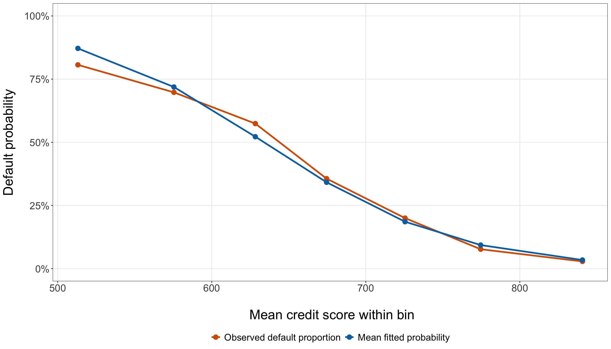
observed_fitted_credit_plot_data = (observed_fitted_by_credit.copy())
observed_fitted_credit_plot, ax = (plt.subplots(figsize=(14, 8)))
_ = ax.plot(observed_fitted_credit_plot_data["mean_credit_score"],
observed_fitted_credit_plot_data["observed_default_proportion"], marker="o",
markersize=7, linewidth=2.0, color="#D55E00", label="Observed default proportion",
)
_ = ax.plot(observed_fitted_credit_plot_data["mean_credit_score"],
observed_fitted_credit_plot_data["mean_fitted_probability"], marker="o", markersize=7,
linewidth=2.0, color="#0072B2", label="Mean fitted probability",
)
_ = ax.set_ylim(0, 1,
)
_ = ax.set_xlabel("Mean credit score within bin", fontsize=22, labelpad=12,
)
_ = ax.set_ylabel("Default probability", fontsize=22, labelpad=14,
)
_ = ax.tick_params(axis="both", labelsize=16.5,
)
_ = ax.yaxis.set_major_formatter(PercentFormatter(xmax=1, decimals=0,
))
_ = ax.legend(loc="upper center", bbox_to_anchor=(0.5, -0.18,
), ncol=2, frameon=False, fontsize=15.5,
)
_ = ax.grid(True, which="major", alpha=0.3,
)
_ = ax.grid(False, which="minor",
)
_ = observed_fitted_credit_plot.tight_layout()
_ = observed_fitted_credit_plot.subplots_adjust(bottom=0.24)
plt.show()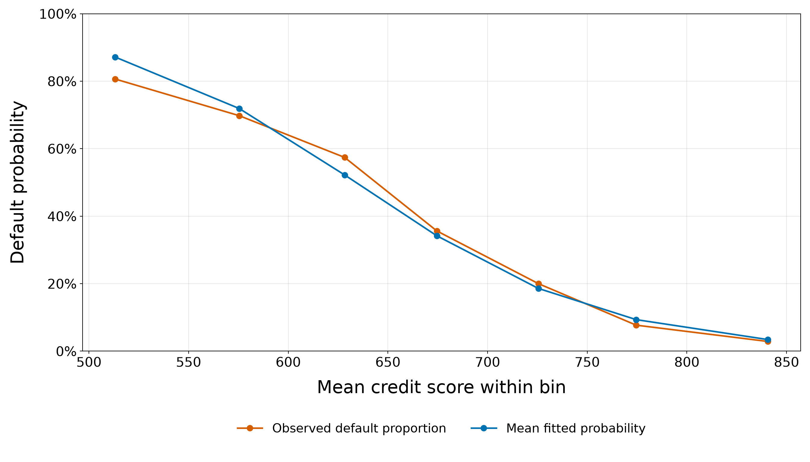
The two series in Figure 8.23 (or Figure 8.24) show that the simple Logistic model reproduces the strong overall decline in default probability as credit score increases. The observed default proportion falls from 0.806 among borrowers with scores of 550 or below to only 0.029 among borrowers with scores above 800, and the fitted probabilities follow the same monotone pattern. However, the agreement is not exact. In the lowest credit-score bin, the model assigns a mean fitted default probability of 0.872, compared with an observed proportion of 0.806. Thus, the model overestimates the observed default proportion by about 6.5 percentage points in this part of the credit-score range. This is also the largest absolute discrepancy across the bins, equal to 6.5%. The direction changes around the middle of the credit-score range. For scores from 601 to 650, the observed default proportion is 0.574, whereas the mean fitted probability is 0.522. The model therefore underestimates the observed default proportion by about 5.2 percentage points in that bin.
Outside these two bins, the discrepancies are comparatively small. For example, the observed and fitted proportions are 0.356 versus 0.342 for scores from 651 to 700, 0.200 versus 0.186 for scores from 701 to 750, and 0.029 versus 0.034 above 800. Importantly, the observed-minus-fitted differences do not remain consistently positive or consistently negative across the credit-score range. We therefore do not see an obvious pattern in which the simple model systematically overpredicts or underpredicts default everywhere. Instead, it captures the dominant decreasing relationship while showing some localized lack of agreement, particularly at the lower end and around scores from 601 to 650.
Some discrepancy is expected because each orange point is a finite-sample event proportion, whereas each blue point averages probabilities from the fitted Logistic curve. The bin sizes also vary substantially (from 31 borrowers in the smallest credit-score bin to 140 in the largest) so the observed proportions are not equally precise across the groups. Table 8.30 makes these differences explicit.
Overall, this comparison gives us encouraging evidence that the one-regressor model captures the broad response-scale pattern associated with credit score, while also showing that the fit is not exact. This is still not a general calibration assessment, however: the groups here were defined using the regressor itself, credit score. In Section 8.10.3, we instead group borrowers according to the model’s fitted probabilities, which addresses calibration more directly.
8.10.3 Calibration
Calibration asks whether predicted probabilities correspond to observed event frequencies. If a collection of borrowers is assigned probabilities near \(0.20\), for instance, a well-calibrated model should produce an observed default proportion reasonably close to \(0.20\) for that collection. Calibration is therefore about agreement between the probability scale of the model and the event frequencies in the data.
For a grouped calibration check, suppose group \(g\) contains \(n_g\) borrowers. Define
\[ \overline{\widehat{\pi}}_g = \frac{1}{n_g} \sum_{i\in g} \widehat{\pi}_i \]
as the group’s mean fitted probability and
\[ \overline{y}_g = \frac{1}{n_g} \sum_{i\in g} y_i \]
as the group’s observed default proportion.
A perfectly calibrated group would satisfy
\[ \overline{y}_g = \overline{\widehat{\pi}}_g. \]
We create ten approximately equal-sized groups ordered by fitted probability. The first group contains borrowers with the smallest fitted probabilities and the tenth group contains those with the largest.
number_of_calibration_groups <- 10
calibration_data <- simple_gof_data |>
arrange(fitted_probability, borrower_id) |>
mutate(calibration_group = ceiling(row_number() * number_of_calibration_groups / n()))
calibration_summary <- calibration_data |>
group_by(calibration_group) |>
summarise(`Borrowers (n)` = n(), mean_fitted_probability = mean(fitted_probability),
observed_default_proportion = mean(defaulted == 1),.groups = "drop") |>
mutate(difference = observed_default_proportion - mean_fitted_probability,
calibration_group = paste0("G", calibration_group))
max_calibration_gap <- max(abs(calibration_summary$difference))
calibration_summary_table <- calibration_summary |>
transmute(Group = calibration_group, `Borrowers (n)`, `Mean fitted probability` =
sprintf("%.3f", mean_fitted_probability), `Observed default proportion` =
sprintf("%.3f", observed_default_proportion), `Observed - fitted` =
sprintf("%.3f", difference))
calibration_summary_table |>
kable(align = c("c", "c", "c", "c", "c"))| Group | Borrowers (n) | Mean fitted probability | Observed default proportion | Observed - fitted |
|---|---|---|---|---|
| G1 | 49 | 0.029 | 0.000 | -0.029 |
| G2 | 50 | 0.029 | 0.020 | -0.009 |
| G3 | 50 | 0.050 | 0.060 | 0.010 |
| G4 | 50 | 0.088 | 0.080 | -0.008 |
| G5 | 50 | 0.138 | 0.120 | -0.018 |
| G6 | 50 | 0.210 | 0.260 | 0.050 |
| G7 | 50 | 0.315 | 0.300 | -0.015 |
| G8 | 50 | 0.443 | 0.460 | 0.017 |
| G9 | 50 | 0.627 | 0.680 | 0.053 |
| G10 | 50 | 0.831 | 0.780 | -0.051 |
number_of_calibration_groups = 10
calibration_data = (simple_gof_data.sort_values(["fitted_probability", "borrower_id",
], kind="mergesort",
).reset_index(drop=True).copy())
calibration_data["calibration_group"] = np.ceil((np.arange(1, len(calibration_data) + 1,
) * number_of_calibration_groups / len(calibration_data))).astype(int)
calibration_summary = (calibration_data.groupby("calibration_group")
.agg(borrower_count=("defaulted", "size",
), mean_fitted_probability=("fitted_probability", "mean",
), observed_default_proportion=("defaulted", "mean",
),
).reset_index())
calibration_summary["difference"] = (calibration_summary["observed_default_proportion"]
- calibration_summary["mean_fitted_probability"])
calibration_summary["calibration_group"] = ("G"
+ calibration_summary["calibration_group"].astype(str))
max_calibration_gap = (calibration_summary["difference"].abs().max())
calibration_summary_table = (calibration_summary
.rename(columns={"calibration_group": "Group", "borrower_count": "Borrowers (n)",
"mean_fitted_probability": "Mean fitted probability",
"observed_default_proportion": "Observed default proportion", "difference":
"Observed - fitted",
}).copy())
for column_name in ["Mean fitted probability", "Observed default proportion",
"Observed - fitted",
]:
calibration_summary_table[column_name] = calibration_summary_table[column_name].map(
lambda value: f"{value:.3f}")
calibration_summary_table_html = (scrollable_table_html(calibration_summary_table))| Group | Borrowers (n) | Mean fitted probability | Observed default proportion | Observed - fitted |
|---|---|---|---|---|
| G1 | 49 | 0.029 | 0.000 | -0.029 |
| G2 | 50 | 0.029 | 0.020 | -0.009 |
| G3 | 50 | 0.050 | 0.060 | 0.010 |
| G4 | 50 | 0.088 | 0.080 | -0.008 |
| G5 | 50 | 0.138 | 0.120 | -0.018 |
| G6 | 50 | 0.210 | 0.260 | 0.050 |
| G7 | 50 | 0.315 | 0.300 | -0.015 |
| G8 | 50 | 0.443 | 0.460 | 0.017 |
| G9 | 50 | 0.627 | 0.680 | 0.053 |
| G10 | 50 | 0.831 | 0.780 | -0.051 |
A calibration plot places the mean fitted probability on the horizontal axis and the observed default proportion on the vertical axis. The diagonal line represents perfect agreement.
calibration_plot <- ggplot(calibration_summary,
aes(x = mean_fitted_probability, y = observed_default_proportion)) +
geom_abline(intercept = 0, slope = 1, colour = "#D55E00", linetype = "dashed",
linewidth = 1.1) +
geom_line(colour = "#0072B2", linewidth = 1.1) +
geom_point(colour = "#0072B2", size = 3.8) +
coord_equal(xlim = c(0, 1), ylim = c(0, 1)) +
scale_x_continuous(labels = scales::label_percent(accuracy = 1)) +
scale_y_continuous(labels = scales::label_percent(accuracy = 1)) +
theme_bw() +
theme(axis.text = element_text(size = 16.5), axis.title = element_text(size = 21),
panel.grid.minor = element_blank()) +
labs(x = "\n Mean fitted probability", y = "Observed default proportion")
calibration_plot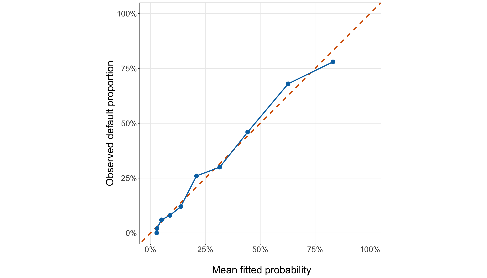
calibration_plot, ax = plt.subplots(figsize=(14, 8))
_ = ax.plot([0,1,], [0,1,], linestyle="--", linewidth=1.8, color="#D55E00",
)
_ = ax.plot(calibration_summary["mean_fitted_probability"],
calibration_summary["observed_default_proportion"], linewidth=1.8, color="#0072B2",
)
_ = ax.scatter(calibration_summary["mean_fitted_probability"],
calibration_summary["observed_default_proportion"], s=70, color="#0072B2", zorder=3,
)
_ = ax.set_xlim(0,1,
)
_ = ax.set_ylim(0,1,
)
_ = ax.set_aspect("equal", adjustable="box",
)
_ = ax.set_xlabel("\n Mean fitted probability", fontsize=21,
)
_ = ax.set_ylabel("Observed default proportion", fontsize=21, labelpad=12,
)
_ = ax.tick_params(axis="both", labelsize=16.5,
)
_ = ax.xaxis.set_major_formatter(PercentFormatter(xmax=1, decimals=0,
))
_ = ax.yaxis.set_major_formatter(PercentFormatter(xmax=1, decimals=0,
))
_ = ax.grid(True, which="major", alpha=0.3,
)
_ = ax.grid(False, which="minor",
)
_ = calibration_plot.tight_layout()
plt.show()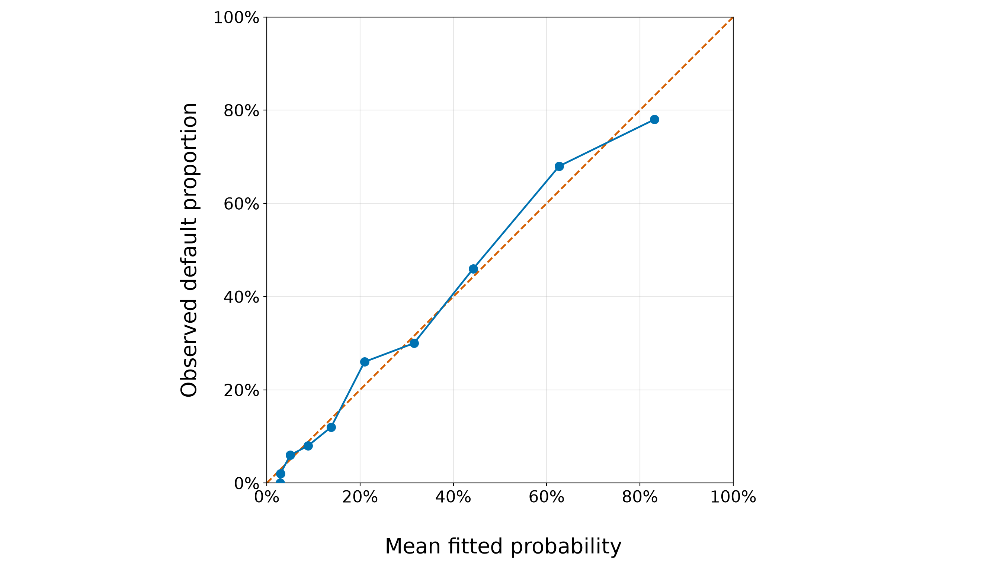
The grouped calibration results in Figure 8.25 (or Figure 8.26) show that the simple credit-score model remains reasonably close to the perfect-calibration diagonal over much of the fitted-probability range, but the agreement is not uniform across all ten groups.
At the lower end of the fitted-probability range, the discrepancies are comparatively small. For example, in Table 8.32, group G1 has a mean fitted default probability of 0.029, while its observed default proportion is 0.000. The model therefore overpredicts the observed proportion in this group by about 2.9 percentage points. Groups G2 through G5 also remain relatively close to the diagonal, with observed and fitted probabilities differing by only a few percentage points.
Larger departures appear as we move toward the middle and upper portions of the fitted-probability range. In group G6, the mean fitted probability is 0.210, compared with an observed default proportion of 0.260. The model therefore underpredicts the observed default proportion by about 5.0 percentage points in this group. The largest absolute grouped calibration difference occurs in group G9. Its mean fitted probability is 0.627, whereas the observed default proportion is 0.680. Hence, the model underpredicts the observed default proportion by approximately 5.3 percentage points. This corresponds to the overall maximum absolute grouped calibration discrepancy of 5.3%. Interestingly, the direction reverses for the highest fitted-probability group. In G10, the model assigns a mean fitted probability of 0.831, while the observed default proportion is 0.780. The fitted probability is therefore about 5.1 percentage points higher than the observed proportion.

The signs of the observed-minus-fitted differences alternate across the ten groups rather than remaining consistently positive or consistently negative. We therefore do not see a simple global pattern in which the model systematically underpredicts or systematically overpredicts default probabilities across the entire range. Instead, the plot suggests generally close agreement at lower fitted probabilities, with somewhat larger localized discrepancies in the middle-to-upper range. Some of this variation is expected because each observed proportion is based on only about 50 borrowers rather than on an infinitely large group.
Overall, this training-sample calibration check is encouraging for a simple one-regressor model, but it also identifies areas where the fitted probabilities are not perfectly aligned with the observed event frequencies. That is consistent with our broader diagnostic picture: credit score captures a strong component of the default pattern, but it need not contain all of the information associated with default.
Heads-up on calibration plots versus residual plots!
A calibration plot and a residual plot are related, but they answer different diagnostic questions. In the calibration plot:
- the horizontal coordinate is a fitted probability;
- the vertical coordinate is an observed event proportion; and
- perfect agreement is represented by the diagonal line \(y=x\).
Thus, a point above the diagonal represents a group for which the observed event proportion exceeds the mean fitted probability (that is, the model underpredicts default for that group). A point below the diagonal represents overprediction.
A residual plot instead places some fitted quantity on the horizontal axis and a residual, such as
\[ y_i-\widehat{\pi}_i, \]
or a standardized version of that discrepancy, on the vertical axis. Its natural reference line is therefore zero, not the 45-degree calibration line.
Finally, the grouped calibration plot above is still an in-sample diagnostic because both the model and these grouped comparisons use the training data. It helps us develop and assess the specification, but final predictive calibration must be evaluated using the held-out testing observations later in the workflow.
8.10.4 Deviance and Pearson Residuals
Individual Bernoulli outcomes are only \(0\) or \(1\), so Logistic-regression residual plots do not look like the familiar continuous clouds from OLS. Nevertheless, residuals remain useful for identifying observations that are difficult for the fitted model to reconcile with their outcomes. Two standard residuals are particularly useful.

For borrower \(i\), the Pearson residual is
\[ r_{P,i} = \frac{ y_i-\widehat{\pi}_i }{ \sqrt{ \widehat{\pi}_i (1-\widehat{\pi}_i) } }. \tag{8.19}\]
It scales the raw response discrepancy by the model-based Bernoulli standard deviation.
The deviance residual is the signed square root of the observation’s contribution to the model deviance:
\[ \begin{aligned} r_{D,i} &= \operatorname{sign} \left( y_i-\widehat{\pi}_i \right) \times \\ & \qquad \sqrt{ 2 \left[ y_i \log \left( \frac{y_i}{\widehat{\pi}_i} \right) + (1-y_i) \log \left( \frac{1-y_i} {1-\widehat{\pi}_i} \right) \right] }, \end{aligned} \]
using the convention that a term of the form \(0\log(0/a)\) contributes zero.
For a Bernoulli response, this simplifies to
\[ r_{D,i} = \begin{cases} \sqrt{ -2\log(\widehat{\pi}_i) }, & y_i=1, \\[8pt] -\sqrt{ -2\log(1-\widehat{\pi}_i) }, & y_i=0. \end{cases} \]
A borrower therefore receives a large positive deviance residual when a default occurs despite a very small fitted default probability, and a large negative residual when a non-default occurs despite a very large fitted default probability.
Deviance Residuals
We first plot the deviance residuals against the fitted probabilities.
deviance_residual_over_2 <- sum(abs(simple_gof_data$deviance_residual) > 2)
deviance_residual_plot <- ggplot(simple_gof_data,
aes(x = fitted_probability, y = deviance_residual)) +
geom_hline(yintercept = 0, colour = "grey35", linetype = "dashed", linewidth = 0.9) +
geom_hline(yintercept = c(-2, 2), colour = "#D55E00", linetype = "dotted", linewidth = 0.9
) +
geom_point(colour = "#0072B2", alpha = 0.45, size = 2.2) +
theme_bw() +
theme(axis.text = element_text(size = 16.5), axis.title = element_text(size = 21),
panel.grid.minor = element_blank()) +
labs(x = "\n Fitted default probability", y = "Deviance residual")
deviance_residual_plot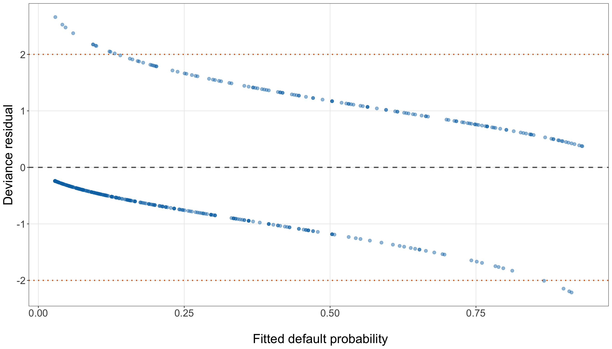
deviance_residual_over_2 = (np.abs(simple_gof_data["deviance_residual"]) > 2).sum()
deviance_residual_plot, ax = (plt.subplots(figsize=(14, 8)))
_ = ax.axhline(0, linestyle="--", linewidth=1.2, color="0.35",
)
_ = ax.axhline(2, linestyle=":", linewidth=1.2, color="#D55E00",
)
_ = ax.axhline(-2, linestyle=":", linewidth=1.2, color="#D55E00",
)
_ = ax.scatter(simple_gof_data["fitted_probability"], simple_gof_data["deviance_residual"],
alpha=0.45, s=32, color="#0072B2",
)
_ = ax.set_xlabel("\n Fitted default probability", fontsize=21,
)
_ = ax.set_ylabel("Deviance residual", fontsize=21, labelpad=12,
)
_ = ax.tick_params(axis="both", labelsize=16.5,
)
_ = ax.grid(True, which="major", alpha=0.3,
)
_ = ax.grid(False, which="minor",
)
_ = deviance_residual_plot.tight_layout()
plt.show()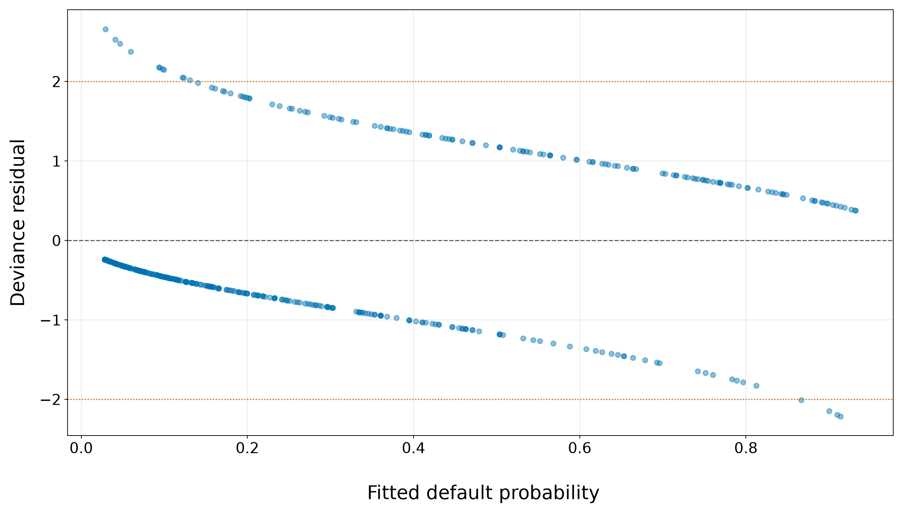
The two curved bands in Figure 8.27 (or Figure 8.28) are a natural consequence of the binary \(0/1\) response. Observations with \(Y_i=1\) (borrowers who defaulted) have positive deviance residuals and form the upper band. Observations with \(Y_i=0\) (borrowers who did not default) have negative deviance residuals and form the lower band. We therefore do not expect the roughly symmetric, unstructured cloud around zero that is familiar from OLS residual plots.
The curvature of the two bands also follows directly from the Bernoulli deviance residual. For a borrower who defaults,
\[ r_{D,i} = \sqrt{ -2\log(\widehat{\pi}_i) }, \]
so the residual becomes increasingly positive when the model assigns a small fitted probability of default to an observed default. Conversely, for a borrower who does not default,
\[ r_{D,i} = - \sqrt{ -2\log(1-\widehat{\pi}_i) }, \]
so the residual becomes increasingly negative when the model assigns a large fitted probability of default to an observed non-default. This is exactly what we see in the figure: the largest positive residuals occur toward the left side of the plot, whereas the most negative residuals occur toward the right.
The dotted lines at \(\pm2\) provide a convenient screening reference rather than a formal rejection threshold. In fact, for a defaulting borrower,
\[ r_{D,i}>2 \quad\Longleftrightarrow\quad \widehat{\pi}_i<\exp(-2) \approx 0.135, \]
whereas for a non-defaulting borrower,
\[ r_{D,i}<-2 \quad\Longleftrightarrow\quad \widehat{\pi}_i> 1-\exp(-2) \approx 0.865. \]
Thus, crossing these lines identifies outcomes that were particularly surprising under the fitted simple model: an observed default despite a fitted default probability below roughly \(13.5\%\), or an observed non-default despite a fitted default probability above roughly \(86.5\%\).
In the training fit, 15 borrowers have absolute deviance residuals greater than \(2\). Of these, 11 are defaults with unexpectedly small fitted default probabilities, while 4 are non-defaults with unexpectedly large fitted default probabilities. The most extreme positive residual is 2.660. It corresponds to a borrower with credit score 849 whose fitted default probability is only 2.9%, despite the borrower having defaulted. At the other end, the most negative residual is -2.214; this borrower has credit score 489 and a fitted default probability of 91.4%, despite not defaulting. These observations are informative because they identify places where credit score alone gives a probability that is difficult to reconcile with the observed outcome. That does not imply that the observations are errors. A borrower can legitimately default despite having a high credit score, or avoid default despite having a low credit score. Such cases may instead remind us that default is associated with characteristics beyond the single regressor in this simple model.
Finally, a large deviance residual does not necessarily mean that an observation has a large effect on the estimated coefficients. Residual size tells us how surprising the outcome is under the fitted model; influence additionally depends on the observation’s position in the regressor space. We therefore return to these potentially unusual observations when examining leverage and Cook’s distance in Section 8.10.6.
Pearson Residuals
The Pearson residual rescales the raw discrepancy directly by the Bernoulli conditional standard deviation. We inspect it separately rather than crowding both residual types into one multi-panel figure.
pearson_residual_over_2 <- sum(abs(simple_gof_data$pearson_residual) > 2)
pearson_residual_plot <- ggplot(simple_gof_data,
aes(x = fitted_probability, y = pearson_residual)) +
geom_hline(yintercept = 0, colour = "grey35", linetype = "dashed", linewidth = 0.9) +
geom_hline(yintercept = c(-2, 2), colour = "#D55E00", linetype = "dotted", linewidth = 0.9
) +
geom_point(colour = "#0072B2", alpha = 0.45, size = 2.2) +
theme_bw() +
theme(axis.text = element_text(size = 16.5), axis.title = element_text(size = 21),
panel.grid.minor = element_blank()) +
labs(x = "\n Fitted default probability", y = "Pearson residual")
pearson_residual_plot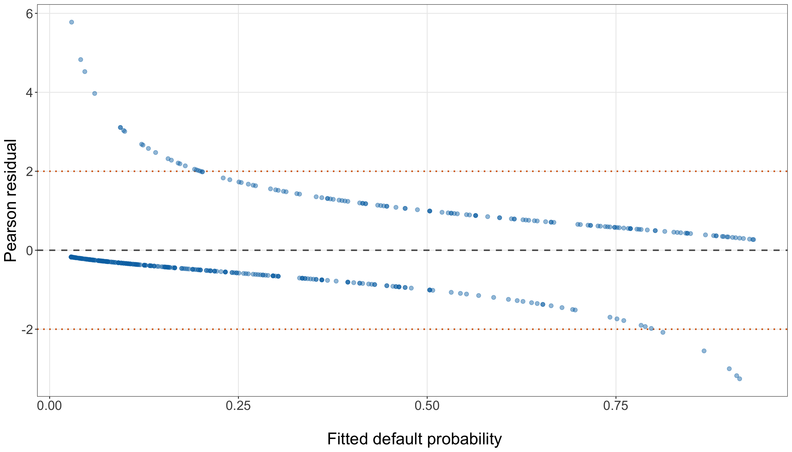
pearson_residual_over_2 = (np.abs(simple_gof_data["pearson_residual"]) > 2).sum()
pearson_residual_plot, ax = (plt.subplots(figsize=(14, 8)))
_ = ax.axhline(0, linestyle="--", linewidth=1.2, color="0.35",
)
_ = ax.axhline(2, linestyle=":", linewidth=1.2, color="#D55E00",
)
_ = ax.axhline(-2, linestyle=":", linewidth=1.2, color="#D55E00",
)
_ = ax.scatter(simple_gof_data["fitted_probability"], simple_gof_data["pearson_residual"],
alpha=0.45, s=32, color="#0072B2",
)
_ = ax.set_xlabel("\n Fitted default probability", fontsize=21,
)
_ = ax.set_ylabel("Pearson residual", fontsize=21, labelpad=12,
)
_ = ax.tick_params(axis="both", labelsize=16.5,
)
_ = ax.grid(True, which="major", alpha=0.3,
)
_ = ax.grid(False, which="minor",
)
_ = pearson_residual_plot.tight_layout()
plt.show()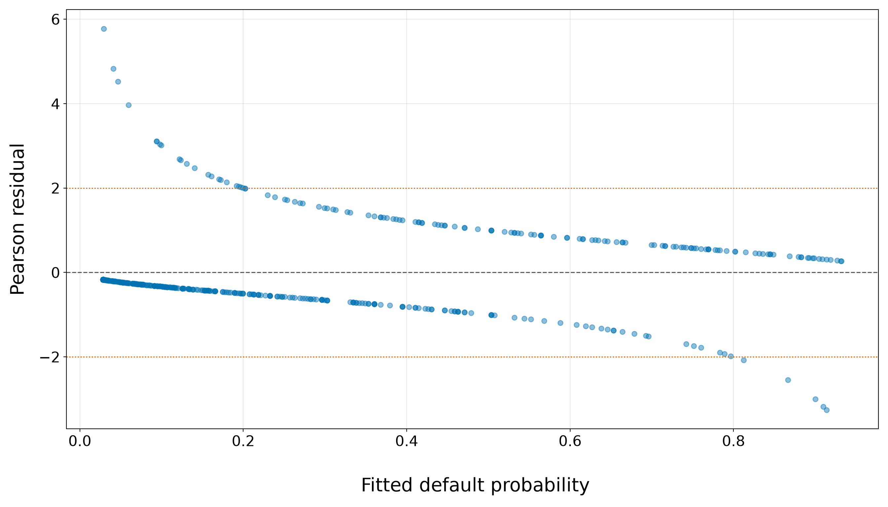
The two curved bands in Figure 8.29 (or Figure 8.30) again arise from the binary nature of the response. Borrowers who defaulted have positive Pearson residuals and form the upper branch, whereas borrowers who did not default have negative Pearson residuals and form the lower branch. As with the deviance residuals, we therefore do not expect an unstructured cloud centred around zero.
For a borrower who defaults, \(y_i=1\), so the Pearson residual (see Equation 8.19) simplifies to
\[ r_{P,i} = \frac{ 1-\widehat{\pi}_i }{ \sqrt{ \widehat{\pi}_i (1-\widehat{\pi}_i) } } = \sqrt{ \frac{ 1-\widehat{\pi}_i }{ \widehat{\pi}_i } }. \]
As the fitted probability of default becomes smaller, this quantity becomes increasingly positive. This explains the upper branch of the figure: the most extreme positive Pearson residuals correspond to borrowers who did default even though the model assigned them a small probability of default.
For a borrower who does not default, \(y_i=0\), and (see Equation 8.19)
\[ r_{P,i} = \frac{ -\widehat{\pi}_i }{ \sqrt{ \widehat{\pi}_i (1-\widehat{\pi}_i) } } = - \sqrt{ \frac{ \widehat{\pi}_i }{ 1-\widehat{\pi}_i } }. \]
The residual therefore becomes increasingly negative as the fitted probability of default approaches \(1\). This produces the lower branch in the figure: its most extreme points correspond to borrowers who did not default even though the model assigned them a comparatively large probability of default.
The dotted lines at \(\pm2\) again provide a convenient screening reference rather than a formal rejection threshold. For an observed default,
\[ r_{P,i}>2 \quad\Longleftrightarrow\quad \widehat{\pi}_i<0.20, \]
whereas for an observed non-default,
\[ r_{P,i}<-2 \quad\Longleftrightarrow\quad \widehat{\pi}_i>0.80. \]
Thus, the reference lines have a direct probability-scale interpretation in this Binary Logistic model: observations above \(2\) are defaults that received fitted probabilities below \(20\%\), while observations below \(-2\) are non-defaults that received fitted default probabilities above \(80\%\).
In the training fit, 26 borrowers have absolute Pearson residuals greater than \(2\). Of these, 21 lie above the upper reference line and therefore represent defaults with fitted default probabilities below \(20\%\), while 5 lie below the lower reference line and represent non-defaults with fitted default probabilities above \(80\%\). The most extreme positive Pearson residual is 5.777. It belongs to a borrower with credit score 849 whose fitted default probability is only 2.9%, despite the borrower having defaulted. At the opposite extreme, the most negative Pearson residual is -3.256. That borrower has credit score 489 and a fitted default probability of 91.4%, despite not defaulting.
The especially large magnitude of the most extreme Pearson residuals is connected directly to the denominator
\[ \sqrt{ \widehat{\pi}_i (1-\widehat{\pi}_i) }. \]
This is the fitted Bernoulli standard deviation. It becomes small as \(\widehat{\pi}_i\) approaches either \(0\) or \(1\), so an outcome that contradicts a fitted probability close to one of those boundaries receives a particularly large standardized discrepancy. This is why the Pearson residuals in the figure become much more extreme toward the far left of the upper branch and the far right of the lower branch.
Compared with the deviance residuals, the Pearson residuals are therefore more sensitive to observations whose fitted probabilities lie close to a boundary. The two diagnostics need not rank every borrower identically, but observations that appear unusually large under both provide stronger evidence that the simple credit-score model has difficulty accommodating their outcomes.
These observations should still not be labelled as errors or automatically removed. A high-credit-score borrower can genuinely default, just as a low-credit-score borrower can genuinely avoid default. Instead, the residuals identify cases where the observed outcome is difficult to reconcile with the fitted probability from credit score alone. Whether those observations also have a substantial effect on the estimated coefficients depends on their leverage and influence, which we examine in Section 8.10.6.
8.10.5 Linearity in the Log-Odds
For a continuous regressor, the standard Logistic model does not assume that probability is linear in the regressor. It assumes instead that the log-odds are linear:
\[ \operatorname{logit}(\pi_i) = \beta_0 + \beta_1x_{i,1}^{(50)}. \]
This distinction is critical since the S-shaped probability curve can look strongly nonlinear even when the logit specification is perfectly linear.

We use two complementary checks:
- a binned empirical-logit plot, which compares observed log-odds summaries with the fitted straight line on the logit scale; and
- a targeted likelihood-ratio check that asks whether adding a quadratic credit-score term materially improves the training-data likelihood.
Binned Empirical Log-Odds
Within each credit-score bin, let \(d_g\) be the number of defaults and \(m_g\) the number of non-defaults. A direct empirical log-odds calculation,
\[ \log \left( \frac{d_g}{m_g} \right), \]
would become infinite if a bin contained only defaults or only non-defaults. For this diagnostic plot, we therefore use the small continuity correction
\[ \widetilde{\eta}_g = \log \left( \frac{ d_g+0.5 }{ m_g+0.5 } \right). \]
The correction keeps the plotted empirical log-odds finite; it is a graphical device and does not modify the fitted Logistic regression model.
empirical_logit_summary <- simple_gof_data |>
mutate(credit_score_bin = cut(credit_score, breaks = credit_score_specification$breaks,
labels = credit_score_specification$labels, include.lowest = TRUE, right = TRUE)) |>
group_by(credit_score_bin) |>
summarise(mean_credit_score = mean(credit_score), defaults = sum(defaulted == 1),
nondefaults = sum(defaulted == 0),.groups = "drop") |>
mutate(empirical_logit = log((defaults + 0.5) / (nondefaults + 0.5)), credit_score_50 =
mean_credit_score / 50)
empirical_logit_summary[["fitted_logit"]] <- predict(simple_model, newdata =
empirical_logit_summary, type = "link")
empirical_logit_summary <- empirical_logit_summary |>
mutate(logit_difference = empirical_logit - fitted_logit)
max_logit_gap <- max(abs(empirical_logit_summary$logit_difference))
linearity_curve_data <- tibble(
credit_score = seq(min(training_data$credit_score), max(training_data$credit_score),
length.out = 400)) |>
mutate(credit_score_50 = credit_score / 50)
linearity_curve_data[["fitted_logit"]] <-
predict(simple_model, newdata = linearity_curve_data, type = "link")
linearity_plot <- ggplot() +
geom_line(data = linearity_curve_data,
aes(x = credit_score, y = fitted_logit, colour = "Fitted linear logit"), linewidth = 1.5
) +
geom_point(data = empirical_logit_summary,
aes(x = mean_credit_score, y = empirical_logit, colour = "Binned empirical log-odds"),
size = 4) +
scale_colour_manual(breaks = c("Fitted linear logit", "Binned empirical log-odds"),
values = c("Fitted linear logit" = "#0072B2", "Binned empirical log-odds" = "#D55E00"),
labels = c("Fitted linear logit", "Binned empirical log-odds"), name = NULL) +
theme_bw() +
theme(axis.text = element_text(size = 16.5), axis.title = element_text(size = 21),
legend.position = "bottom", legend.text = element_text(size = 19), panel.grid.minor =
element_blank()) +
labs(
x =
"\n Credit score",
y =
"Log-odds of default"
)
linearity_plot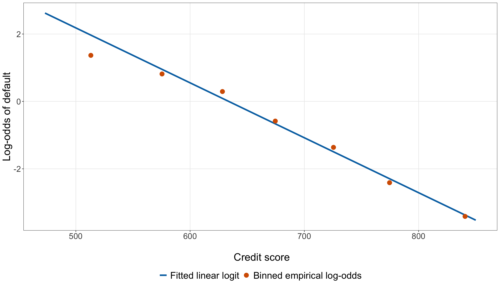
empirical_logit_summary = (simple_gof_data
.assign(credit_score_bin=pd.cut(simple_gof_data["credit_score"],
bins=credit_score_specification["breaks"],
labels=credit_score_specification["labels"], include_lowest=True, right=True,
)).groupby("credit_score_bin", observed=False,
).agg(mean_credit_score=("credit_score", "mean",
), defaults=("defaulted", "sum",
), borrower_count=("defaulted", "size",
),
).reset_index())
empirical_logit_summary["nondefaults"] = (empirical_logit_summary["borrower_count"]
- empirical_logit_summary["defaults"])
empirical_logit_summary["empirical_logit"] = np.log(
(empirical_logit_summary["defaults"] + 0.5) /
(empirical_logit_summary["nondefaults"] + 0.5))
empirical_logit_summary["credit_score_50"] = (empirical_logit_summary["mean_credit_score"]
/ 50)
empirical_logit_summary["fitted_logit"] = (simple_model.params["Intercept"]
+ simple_model.params["credit_score_50"] * empirical_logit_summary["credit_score_50"])
empirical_logit_summary["logit_difference"] = (empirical_logit_summary["empirical_logit"]
- empirical_logit_summary["fitted_logit"])
max_logit_gap = (empirical_logit_summary["logit_difference"]
.abs()
.max()
)
linearity_curve_data = pd.DataFrame({
"credit_score": np.linspace(training_data["credit_score"].min(),
training_data["credit_score"].max(), 400,
)})
linearity_curve_data[
"credit_score_50"
] = (
linearity_curve_data["credit_score"]
/ 50
)
linearity_curve_data[
"fitted_logit"
] = (
simple_model.params["Intercept"]
+ simple_model.params["credit_score_50"]
* linearity_curve_data["credit_score_50"]
)
linearity_plot, ax = plt.subplots(
figsize=(14, 8)
)
_ = ax.plot(
linearity_curve_data["credit_score"],
linearity_curve_data["fitted_logit"],
linewidth=2.2,
color="#0072B2",
label="Fitted linear logit",
)
_ = ax.scatter(
empirical_logit_summary["mean_credit_score"],
empirical_logit_summary["empirical_logit"],
s=75,
color="#D55E00",
label="Binned empirical log-odds",
zorder=3,
)
_ = ax.set_xlabel(
"\n Credit score",
fontsize=21,
)
_ = ax.set_ylabel(
"Log-odds of default",
fontsize=21,
labelpad=12,
)
_ = ax.tick_params(
axis="both",
labelsize=16.5,
)
_ = ax.legend(
loc="upper center",
bbox_to_anchor=(0.5,-0.2,),
ncol=2,
frameon=False,
fontsize=19,
)
_ = ax.grid(
True,
which="major",
alpha=0.3,
)
_ = ax.grid(
False,
which="minor",
)
_ = linearity_plot.tight_layout()
plt.show()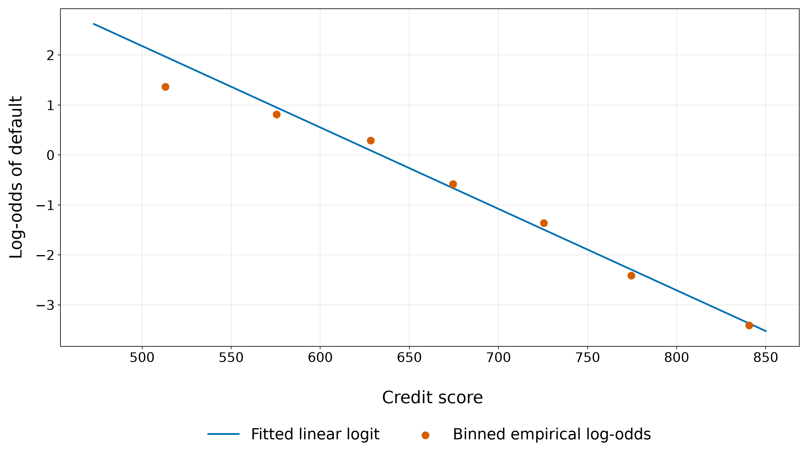
Figure 8.31 (or Figure 8.32) shows a clear downward, approximately linear relationship between credit score and the empirical log-odds of default. As mean credit score increases across the bins, the orange empirical-logit points move from positive log-odds at the lower end to strongly negative log-odds at the upper end. This is consistent with the negative credit-score coefficient estimated by the simple Logistic regression model.
The empirical points do not lie exactly on the fitted blue line, which is expected because each orange point is calculated from a finite group of observed defaults and non-defaults. In the lowest credit-score bin, for example, the empirical log-odds are 1.367, compared with fitted log-odds of 1.968 at that bin’s mean credit score. The empirical point therefore lies 0.601 log-odds units below the fitted line. Around the middle of the credit-score range, the departures change direction rather than showing sustained curvature. For scores from 601 to 650, the empirical log-odds are 0.293, whereas the fitted log-odds at the bin’s mean credit score are 0.090. The orange point therefore lies 0.203 log-odds units above the fitted relationship. At higher credit scores, the empirical points again remain reasonably close to the line. For the 751–800 bin, the empirical and fitted log-odds are -2.412 and -2.295, respectively. Above 800, they are -3.412 and -3.372.
Across all seven credit-score bins, the largest absolute empirical-versus-fitted discrepancy on the log-odds scale is 0.601. More importantly, the departures alternate above and below the fitted line rather than tracing a clear bowed or U-shaped pattern. We therefore do not see an obvious systematic curvature in the empirical log-odds that would immediately contradict the simple linear-logit specification. This visual evidence is encouraging, but it should remain a descriptive functional-form check. The empirical logits depend on the chosen bins, and the \(0.5\) continuity correction affects groups with very small numbers of defaults or non-defaults most strongly. In particular, the points at the extremes of the credit-score range should not be interpreted as exact estimates of the underlying log-odds.
Thus, the plot suggests that treating credit score as linear on the log-odds scale is a plausible first specification for the training data. It does not prove that the relationship is exactly linear, however. We therefore complement this visual assessment with the targeted quadratic likelihood-ratio check below.
Targeted Quadratic Check
A plot cannot settle the functional-form question by itself. We therefore complement the empirical-logit visualization with a targeted likelihood-ratio test for quadratic curvature. We begin by centring the rescaled credit-score regressor:
\[ c_i = x_{i,1}^{(50)} - \overline{x}^{(50)}, \]
where \(x_{i,1}^{(50)}\) is credit score measured in 50-point units and \(\overline{x}^{(50)}\) is its mean in the training data.

Then, we compare two nested Binary Logistic regression models. The simpler model retains the linear-logit specification:
\[ \operatorname{logit}(\pi_i) = \alpha_0 + \alpha_1c_i. \tag{8.20}\]
The larger model adds a quadratic term:
\[ \operatorname{logit}(\pi_i) = \alpha_0 + \alpha_1c_i + \alpha_2c_i^2. \tag{8.21}\]
The linear model is nested within the quadratic model because setting
\[ \alpha_2=0 \]
in Equation 8.21 gives exactly Equation 8.20.
This gives the hypotheses
\[ \begin{gather} H_0\text{: } \alpha_2=0, \\ \text{versus} \\ H_1\text{: } \alpha_2\neq0. \end{gather} \]
Under \(H_0\), adding the squared credit-score term does not improve the population logit specification beyond the linear term. Under \(H_1\), the quadratic coefficient is nonzero, providing evidence of curvature in the relationship between credit score and the log-odds of default.
The likelihood-ratio test compares how well the two nested models maximize the Bernoulli likelihood. Let
\[ \ell_{\mathrm{linear}} \]
denote the maximized log-likelihood under the linear model and
\[ \ell_{\mathrm{quadratic}} \]
the maximized log-likelihood under the quadratic model. The likelihood-ratio test statistic is
\[ G^2 = 2 \left( \ell_{\mathrm{quadratic}} - \ell_{\mathrm{linear}} \right). \]
Because the quadratic model contains the linear model as a special case,
\[ \ell_{\mathrm{quadratic}} \geq \ell_{\mathrm{linear}}, \]
so \(G^2\) is non-negative. A value near zero means that allowing the quadratic term adds little improvement in maximized likelihood, whereas a larger value indicates that the quadratic model fits the training responses appreciably better.
Under \(H_0\) and the usual large-sample regularity conditions for maximum likelihood estimation,
\[ G^2 \mathrel{\dot{\sim}} \chi^2_{\nu}, \]
where
\[ \nu = p_{\mathrm{quadratic}} - p_{\mathrm{linear}} = 3-2 = 1. \]
Thus, the reference distribution for this particular test is a Chi-squared distribution with one degree of freedom, because the quadratic model introduces exactly one additional coefficient, \(\alpha_2\).
The corresponding \(p\)-value is
\[ \Pr \left( \chi_1^2 \geq G^2_{\mathrm{obs}} \right), \]
where \(G^2_{\mathrm{obs}}\) is the likelihood-ratio statistic calculated from the training data. A small \(p\)-value indicates that a likelihood-ratio statistic at least this large would be unusual if \(\alpha_2=0\), providing evidence against the purely linear-logit specification.
Centring credit_score_50 does not change the fitted probabilities of the linear model or the substantive question being tested. It makes the linear and quadratic terms numerically easier to work with and gives the lower-order coefficient a more useful reference point.
linearity_data <- training_data |>
mutate(credit_score_50_centered = credit_score_50 - mean(credit_score_50))
linearity_linear_model <- glm(formula = defaulted ~ credit_score_50_centered, family =
binomial(link = "logit"), data = linearity_data)
linearity_quadratic_model <- glm(formula = defaulted ~ credit_score_50_centered +
I(credit_score_50_centered^2), family = binomial(link = "logit"), data =
linearity_data)
linearity_lrt_statistic <- 2 * (as.numeric(logLik(linearity_quadratic_model)) -
as.numeric(logLik(linearity_linear_model)))
linearity_lrt_df <- 1
linearity_lrt_p_value <- pchisq(linearity_lrt_statistic, df = linearity_lrt_df,
lower.tail = FALSE)
linearity_lrt_summary <- tibble(`Likelihood-ratio statistic` =
round(linearity_lrt_statistic, 3), `Degrees of freedom` = linearity_lrt_df, `p-value` =
sprintf("%.4f", linearity_lrt_p_value))
linearity_lrt_summary |>
kable(align = c("c", "c", "c"))| Likelihood-ratio statistic | Degrees of freedom | p-value |
|---|---|---|
| 2.433 | 1 | 0.1188 |
linearity_data = training_data.copy()
linearity_data["credit_score_50_centered"] = (linearity_data["credit_score_50"]
- linearity_data["credit_score_50"].mean())
linearity_linear_model = glm(formula=("defaulted ~ " "credit_score_50_centered"),
data=linearity_data, family=Binomial(link=sm.families.links.Logit()),
).fit()
linearity_quadratic_model = glm(
formula=("defaulted ~ " "credit_score_50_centered + " "I(credit_score_50_centered ** 2)"
), data=linearity_data, family=Binomial(link=sm.families.links.Logit()),
).fit()
linearity_lrt_statistic = (2 * (linearity_quadratic_model.llf - linearity_linear_model.llf))
linearity_lrt_df = 1
linearity_lrt_p_value = (stats.chi2.sf(linearity_lrt_statistic, linearity_lrt_df,
))
linearity_lrt_summary = pd.DataFrame({
"Likelihood-ratio statistic": [round(linearity_lrt_statistic, 3,
)], "Degrees of freedom": [linearity_lrt_df],
"p-value": [f"{linearity_lrt_p_value:.4f}"],
})
linearity_lrt_summary_html = (scrollable_table_html(linearity_lrt_summary))| Likelihood-ratio statistic | Degrees of freedom | p-value |
|---|---|---|
| 2.433 | 1 | 0.1188 |
For the training data, the observed likelihood-ratio statistic is 2.433 with 1 degree of freedom, giving a \(p\)-value of 0.1188. Using a conventional significance level of
\[ \alpha=0.05, \]
we compare this \(p\)-value with \(0.05\). The result does not lead us to reject the null hypothesis that the quadratic coefficient is zero. In this targeted comparison, the training data do not provide strong evidence that adding a quadratic credit-score term improves the fit beyond the linear logit specification.
It is important to interpret this conclusion narrowly. The null hypothesis is specifically
\[ H_0\text{: }\alpha_2=0, \]
so the test asks whether this particular quadratic extension improves upon the linear specification. Failing to reject \(H_0\) does not prove that the true relationship is exactly linear, nor does it rule out other nonlinear forms. Conversely, rejecting \(H_0\) would indicate evidence of curvature but would not establish that a quadratic polynomial is necessarily the best functional form.
The likelihood-ratio test is also being used here as a training-data model diagnostic, not as the chapter’s final inferential test. Its role is to help us decide whether the linear-logit assumption for credit score appears adequate during model development. We therefore interpret it together with the binned empirical-logit plot above rather than treating either diagnostic in isolation.
8.10.6 Leverage and Influential Observations
Residual size tells us how surprising an outcome is under its fitted probability. Leverage and influence ask a different question:
How much potential or actual impact does an observation have on the fitted coefficients?
For a GLM, the weighted hat matrix is
\[ \mathbf{H} = \widehat{\mathbf{W}}^{1/2} \widetilde{\mathbf{X}} \left( \widetilde{\mathbf{X}}^\top \widehat{\mathbf{W}} \widetilde{\mathbf{X}} \right)^{-1} \widetilde{\mathbf{X}}^\top \widehat{\mathbf{W}}^{1/2}, \]
where \(\widetilde{\mathbf{X}}\) is the model matrix and
\[ \widehat{\mathbf{W}} = \operatorname{diag} \left\{ \widehat{\pi}_i (1-\widehat{\pi}_i) \right\}. \]
Tip on the model matrix and weighted hat matrix!
Earlier in this chapter, we defined
\[ \mathbf{x}_i = \left( x_{i,1}, x_{i,2}, \ldots, x_{i,k} \right)^\top \]
as the vector containing the observed regressors for borrower \(i\). Importantly, \(\mathbf{x}_i\) does not contain the intercept. For the simple credit-score model, the only observed regressor is
\[ x_{i,1}^{(50)} = \frac{x_{i,1}}{50}, \]
so, when we needed matrix notation for estimation, we introduced the separate intercept-augmented vector
\[ \widetilde{\mathbf{x}}_i = \begin{pmatrix} 1\\ x_{i,1}^{(50)} \end{pmatrix}. \]
The tilde reminds us that this is not a redefinition of the original regressor vector. It is the vector of quantities that actually multiply the fitted coefficients in the simple model:
\[ \eta_i = \widetilde{\mathbf{x}}_i^\top \boldsymbol{\beta}_{\mathrm{s}}. \]

The model matrix is obtained by stacking these intercept-augmented vectors row by row. For the \(n_{\mathrm{train}}\) training borrowers in the simple model,
\[ \widetilde{\mathbf{X}} = \begin{pmatrix} \widetilde{\mathbf{x}}_1^\top\\ \widetilde{\mathbf{x}}_2^\top\\ \vdots\\ \widetilde{\mathbf{x}}_{n_{\mathrm{train}}}^\top \end{pmatrix} = \begin{pmatrix} 1 & x_{1,1}^{(50)}\\ 1 & x_{2,1}^{(50)}\\ \vdots & \vdots\\ 1 & x_{n_{\mathrm{train}},1}^{(50)} \end{pmatrix}. \]
Thus, \(\widetilde{\mathbf{X}}\) has one row per borrower and one column per fitted coefficient: an intercept column of \(1\)s and a column containing credit_score_50. In a larger model, additional columns would be created for the additional numerical regressors and for the indicator variables representing categorical regressors.
This model matrix already appeared in our Fisher-information calculation,
\[ \widetilde{\mathbf{X}}^\top \widehat{\mathbf{W}} \widetilde{\mathbf{X}}, \]
where
\[ \widehat{\mathbf{W}} = \operatorname{diag} \left( \widehat{w}_1, \ldots, \widehat{w}_{n_{\mathrm{train}}} \right) \]
and
\[ \widehat{w}_i = \widehat{\pi}_i \left( 1-\widehat{\pi}_i \right). \]
The same ingredients produce the weighted hat matrix
\[ \mathbf{H} = \widehat{\mathbf{W}}^{1/2} \widetilde{\mathbf{X}} \left( \widetilde{\mathbf{X}}^\top \widehat{\mathbf{W}} \widetilde{\mathbf{X}} \right)^{-1} \widetilde{\mathbf{X}}^\top \widehat{\mathbf{W}}^{1/2}. \]
Why is it weighted?
In OLS, every observation enters the familiar hat-matrix geometry with the same variance weighting. Binary Logistic regression is different: the Bernoulli variance
\[ \widehat{\pi}_i \left( 1-\widehat{\pi}_i \right) \]
varies across borrowers. The matrix \(\widehat{\mathbf{W}}\) incorporates that fitted mean-variance relationship into the geometry of the GLM.
The diagonal elements
\[ h_i=H_{ii} \]
then measure how unusual borrower \(i\) is within this weighted model-matrix geometry. Consequently, leverage in Binary Logistic regression depends not only on the borrower’s regressor values but also on the fitted probability through the Logistic weights.
This is why the same matrices keep reappearing in seemingly different parts of the model: \(\widetilde{\mathbf{X}}^\top\widehat{\mathbf{W}}\widetilde{\mathbf{X}}\) helps determine the MLE updates and standard errors, while the weighted hat matrix uses that same information to assess leverage.
Using this notation, the leverage of observation \(i\) is the \(i\)th diagonal element of the weighted hat matrix,
\[ h_i = H_{ii}. \]
A comparatively large value of \(h_i\) indicates that borrower \(i\) occupies an unusual position in the weighted regressor space defined by the fitted model. High leverage does not automatically imply high influence: an observation can have unusual regressor information while still having an outcome that agrees closely with its fitted probability.
A common one-step GLM approximation to Cook’s distance combines leverage with a standardized Pearson residual. Let
\[ r_{P,i}^{*} = \frac{ r_{P,i} }{ \sqrt{1-h_i} }. \]
Then, an approximate Cook’s distance is
\[ D_i \approx \frac{ \left( r_{P,i}^{*} \right)^2 }{p} \times \frac{ h_i }{ 1-h_i }, \]
where \(p\) is the number of fitted coefficients, including the intercept.
Cook’s distance is therefore large when an observation combines:
- a substantial residual discrepancy; and
- enough leverage to move the fitted coefficient vector noticeably.
There is no universal cutoff that turns leverage or Cook’s distance into a formal hypothesis test. Two common screening heuristics are
\[ h_i > \frac{2p}{n} \]
for leverage and
\[ D_i > \frac{4}{n} \]
for Cook’s distance. We use these only to flag observations for closer inspection.
We first summarize the most influential observations according to Cook’s distance.
simple_parameter_count <- length(coef(simple_model))
simple_training_size <- nrow(simple_gof_data)
cooks_threshold <- 4 /
simple_training_size
leverage_threshold <- 2 *
simple_parameter_count /
simple_training_size
cook_flag_count <- sum(simple_gof_data$cooks_distance > cooks_threshold)
leverage_flag_count <- sum(simple_gof_data$leverage > leverage_threshold)
max_cooks_distance <- max(simple_gof_data$cooks_distance)
max_leverage <- max(simple_gof_data$leverage)
influence_summary <- simple_gof_data |>
arrange(desc(cooks_distance)) |>
slice_head(n = 5) |>
transmute(`Borrower ID` = borrower_id, `Credit score` = credit_score, Defaulted =
defaulted, `Fitted probability` = round(fitted_probability, 3), Leverage =
round(leverage, 4), `Cook's distance` = round(cooks_distance, 4))
influence_summary |>
kable(align = c("c", "c", "c", "c", "c", "c"))| Borrower ID | Credit score | Defaulted | Fitted probability | Leverage | Cook’s distance |
|---|---|---|---|---|---|
| 694 | 849 | 1 | 0.029 | 0.0025 | 0.0418 |
| 106 | 489 | 0 | 0.914 | 0.0077 | 0.0413 |
| 412 | 492 | 0 | 0.910 | 0.0078 | 0.0398 |
| 165 | 499 | 0 | 0.900 | 0.0080 | 0.0365 |
| 384 | 827 | 1 | 0.041 | 0.0028 | 0.0329 |
simple_parameter_count = len(simple_model.params)
simple_training_size = len(simple_gof_data)
cooks_threshold = (4 / simple_training_size)
leverage_threshold = (2 * simple_parameter_count / simple_training_size)
cook_flag_count = (simple_gof_data["cooks_distance"] > cooks_threshold).sum()
leverage_flag_count = (simple_gof_data["leverage"] > leverage_threshold).sum()
max_cooks_distance = (simple_gof_data["cooks_distance"].max())
max_leverage = (simple_gof_data["leverage"].max())
influence_summary = (simple_gof_data.sort_values("cooks_distance", ascending=False,
).head(5)
[["borrower_id", "credit_score", "defaulted", "fitted_probability", "leverage",
"cooks_distance",
]].rename(
columns={"borrower_id": "Borrower ID", "credit_score": "Credit score", "defaulted":
"Defaulted", "fitted_probability": "Fitted probability", "leverage":
"Leverage", "cooks_distance": "Cook's distance",
}).copy())
influence_summary["Fitted probability"] = influence_summary["Fitted probability"].round(3)
influence_summary["Leverage"] = influence_summary["Leverage"].round(4)
influence_summary["Cook's distance"] = influence_summary["Cook's distance"].round(4)
influence_summary_html = (scrollable_table_html(influence_summary))| Borrower ID | Credit score | Defaulted | Fitted probability | Leverage | Cook’s distance |
|---|---|---|---|---|---|
| 694 | 849.0 | 1 | 0.029 | 0.0025 | 0.0418 |
| 106 | 489.0 | 0 | 0.914 | 0.0077 | 0.0413 |
| 412 | 492.0 | 0 | 0.910 | 0.0078 | 0.0398 |
| 165 | 499.0 | 0 | 0.900 | 0.0080 | 0.0365 |
| 384 | 827.0 | 1 | 0.041 | 0.0028 | 0.0329 |
Then, we inspect Cook’s distance and leverage in separate figures.
Cook’s Distance
cooks_distance_plot <- ggplot(simple_gof_data,
aes(x = observation_index, y = cooks_distance)) +
geom_segment(
aes(xend = observation_index, y = 0, yend = cooks_distance, colour = cooks_distance >
cooks_threshold), linewidth = 0.7) +
geom_hline(yintercept = cooks_threshold, colour = "#D55E00", linetype = "dashed",
linewidth = 1) +
scale_colour_manual(values = c("FALSE" = "grey55", "TRUE" = "#0072B2"), guide = "none") +
theme_bw() +
theme(axis.text = element_text(size = 16.5), axis.title = element_text(size = 21),
panel.grid.minor = element_blank()) +
labs(x = "\n Training observation index", y = "Cook's distance")
cooks_distance_plot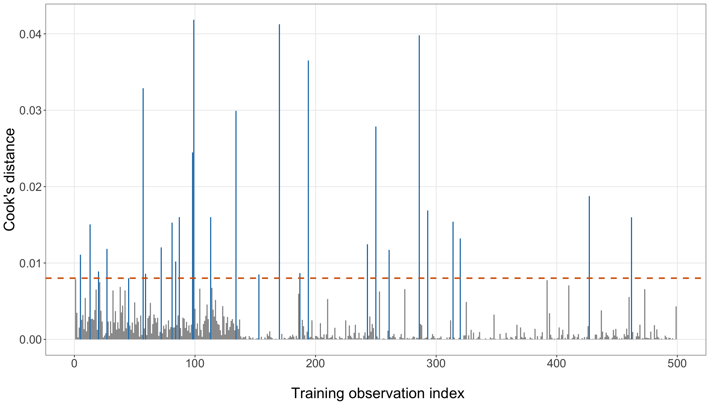
cooks_distance_plot, ax = (plt.subplots(figsize=(14, 8)))
cooks_flagged = (simple_gof_data["cooks_distance"].to_numpy() > cooks_threshold)
for is_flagged in [False, True,
]:
subset = simple_gof_data.loc[cooks_flagged == is_flagged]
_ = ax.vlines(subset["observation_index"], 0, subset["cooks_distance"], linewidth=1.0,
color=("#0072B2" if is_flagged else "0.55"),
)
_ = ax.axhline(cooks_threshold, linestyle="--", linewidth=1.5, color="#D55E00",
)
_ = ax.set_xlabel("\n Training observation index", fontsize=21,
)
_ = ax.set_ylabel("Cook's distance", fontsize=21, labelpad=12,
)
_ = ax.tick_params(axis="both", labelsize=16.5,
)
_ = ax.grid(True, which="major", alpha=0.3,
)
_ = ax.grid(False, which="minor",
)
_ = cooks_distance_plot.tight_layout()
plt.show()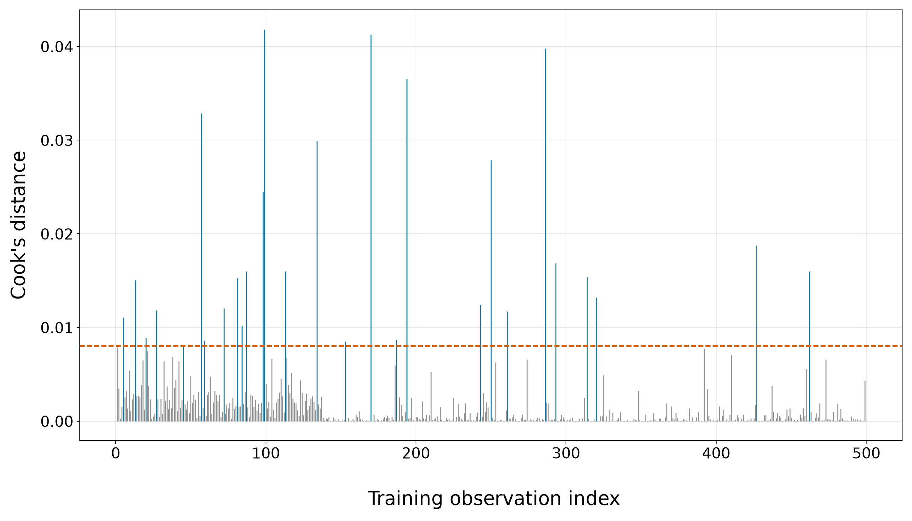
Leverage
leverage_plot <- ggplot(simple_gof_data, aes(x = observation_index, y = leverage)) +
geom_point(aes(colour = leverage > leverage_threshold), alpha = 0.65, size = 2.4) +
geom_hline(yintercept = leverage_threshold, colour = "#D55E00", linetype = "dashed",
linewidth = 1) +
scale_colour_manual(values = c("FALSE" = "grey55", "TRUE" = "#0072B2"), guide = "none") +
theme_bw() +
theme(axis.text = element_text(size = 16.5), axis.title = element_text(size = 21),
panel.grid.minor = element_blank()) +
labs(x = "\n Training observation index", y = "Leverage")
leverage_plot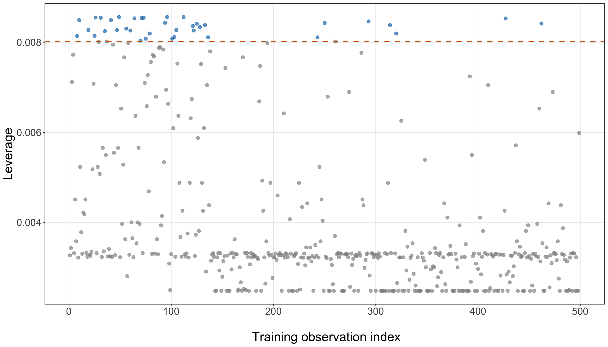
leverage_plot, ax = plt.subplots(figsize=(14, 8))
leverage_flagged = (simple_gof_data["leverage"].to_numpy() > leverage_threshold)
_ = ax.scatter(simple_gof_data.loc[~leverage_flagged, "observation_index",
], simple_gof_data.loc[~leverage_flagged, "leverage",
], s=34, alpha=0.65, color="0.55",
)
_ = ax.scatter(simple_gof_data.loc[leverage_flagged, "observation_index",
], simple_gof_data.loc[leverage_flagged, "leverage",
], s=34, alpha=0.75, color="#0072B2",
)
_ = ax.axhline(leverage_threshold, linestyle="--", linewidth=1.5, color="#D55E00",
)
_ = ax.set_xlabel("\n Training observation index", fontsize=21,
)
_ = ax.set_ylabel("Leverage", fontsize=21, labelpad=12,
)
_ = ax.tick_params(axis="both", labelsize=16.5,
)
_ = ax.grid(True, which="major", alpha=0.3,
)
_ = ax.grid(False, which="minor",
)
_ = leverage_plot.tight_layout()
plt.show()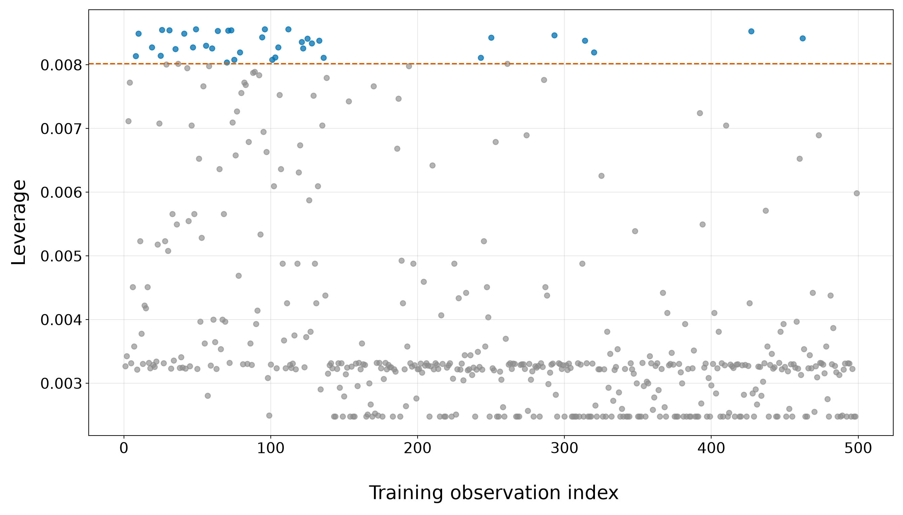
Using the screening rules above, 28 training observations exceed the Cook’s-distance reference value
\[ \frac{4}{n}, \]
which corresponds to 5.6% of the training sample. Meanwhile, 37 observations exceed the leverage reference
\[ \frac{2p}{n}, \]
or 7.4% of the training observations. These counts should not be interpreted as numbers of “bad” observations. Both cutoffs are deliberately sensitive screening heuristics whose purpose is to identify cases deserving closer inspection.
The two figures also show quite different patterns. In the Cook’s-distance plot in Figure 8.33 (or Figure 8.34), most observations lie well below the screening line, while a comparatively small set forms clearly visible spikes above it. The largest Cook’s distance is 0.0418, which is approximately 5.2 times the screening value of 0.0080. Thus, although several observations warrant attention, the plot does not suggest that unusually large influence is spread broadly across the entire training sample.
The top-five Table 8.36 helps explain where those larger Cook’s distances come from. The most influential observation is borrower 694, who has a credit score of 849. This borrower defaulted even though the simple model assigned a fitted default probability of only 2.9%. The corresponding Cook’s distance is 0.0418. This case is especially informative because its leverage is only 0.0025, compared with the screening reference of 0.0080. In other words, the observation does not have unusually large leverage according to the \(2p/n\) rule. Its large Cook’s distance arises primarily because its observed outcome is very difficult for the simple credit-score model to accommodate: a borrower with a very high credit score defaulted despite receiving a very small fitted probability of default. This is the same kind of observation that appeared prominently in our residual diagnostics.
The other highly influential cases reveal the opposite type of disagreement. Among the five largest Cook’s distances are borrowers with comparatively low credit scores who did not default despite receiving very large fitted probabilities of default. For example, borrower 106 has a credit score of 489 and a fitted default probability of 91.4%, yet did not default. Borrower 412 similarly has a credit score of 492 and a fitted default probability of 91.0%, but also did not default.
The fifth-ranked influential cases reinforce the same pattern: the largest Cook’s distances tend to occur for borrowers whose observed binary outcome strongly contradicts what credit score alone would suggest. At one end of the credit-score range, we see high-score borrowers who nevertheless default; at the other, we see low-score borrowers who nevertheless avoid default. These observations are substantively plausible in a loan-default setting and provide another reminder that credit score is informative but cannot deterministically determine an individual borrower’s outcome.
The leverage plot tells a somewhat different story. The screening value is 0.0080, while the largest observed leverage is 0.0086. Thus, the maximum leverage is only about 1.07 times the screening reference. Several borrowers fall just above the dashed line, but the exceedances are relatively modest compared with the much more pronounced Cook’s-distance spikes. Therefore, the plot does not indicate a handful of observations with overwhelmingly dominant positions in the weighted regressor space.
This distinction is crucial because leverage and influence are not interchangeable. Leverage reflects how unusual an observation’s weighted regressor information is, whereas Cook’s distance also incorporates how strongly the observed outcome disagrees with the fitted model. Indeed, 7 observations exceed both screening references. Consequently, not every observation flagged by Cook’s distance is a high-leverage observation, and not every high-leverage observation necessarily has a large Cook’s distance.
The most influential borrower illustrates this point particularly clearly: its credit-score position does not produce high leverage under the weighted hat-matrix criterion, yet its unexpectedly observed default produces a sufficiently large residual discrepancy to make it the largest Cook’s-distance case. Conversely, an observation can lie in an unusual part of the weighted regressor space but agree sufficiently well with its fitted probability that its actual influence on the coefficient estimates remains modest.
Taken together, the table and the two diagnostic plots do not suggest a simple model dominated by one uniquely extreme high-leverage observation. Instead, they identify a modest collection of influential cases whose importance largely reflects combinations of fitted probability, observed outcome, and leverage. In particular, several of the largest Cook’s distances correspond to outcomes that contradict the strong credit-score pattern captured by the fitted Logistic curve.
Heads-up on influence and data removal!
An influential observation is not automatically an erroneous observation, and crossing either \(4/n\) or \(2p/n\) is not an instruction to remove a borrower from the analysis.
Here, the influential observations have an interpretable pattern: some high-credit-score borrowers default despite receiving small fitted probabilities of default, while some low-credit-score borrowers avoid default despite receiving large fitted probabilities. Such borrowers may be entirely legitimate members of the population. Their presence may instead reveal the limitations of trying to describe default using credit score alone.
If an influential case is identified, the appropriate questions are therefore:
- Is the recorded information correct?
- Does the borrower belong to the population represented by the study?
- Is the observation influential because of an unusual regressor value, an unexpected outcome, or both?
- Does the case suggest that important model structure or additional regressors may be missing?
- Would the substantive conclusions change materially if the fitted model were particularly sensitive to that observation?
Diagnostics provide evidence for asking these questions; they do not supply an automatic deletion rule. In the current simple model, the influential cases are therefore another reason to extend and compare the specification rather than a reason to remove observations merely because their outcomes are difficult for the credit-score-only model to predict.
8.10.7 Practical Model Adequacy
Goodness of fit is not a competition to prove that a model is “true.” Every statistical model is a simplification of the data-generating process. At this stage, our practical question is narrower:
Is the simple credit-score Logistic regression model sufficiently stable, interpretable, and compatible with the training data to serve as a useful baseline model for further development?

The diagnostics above address different parts of that question. Some assess whether the model can be estimated reliably, some examine agreement on the probability scale, some investigate the assumed functional form, and others identify individual observations that are difficult for the fitted model to accommodate. No single diagnostic should determine the conclusion by itself.
Table 8.38 brings these pieces together.
| Diagnostic question | What we found in the training data | Implication for the simple model |
|---|---|---|
| Convergence and separation | The MLE converged; the coefficient estimates and model-based standard errors are finite; the fitted probabilities remain strictly inside \((0,1)\); and the default and non-default credit-score ranges overlap. | There is no obvious evidence of complete or quasi-complete separation in this one-regressor model. The fitted coefficient, standard error, and probability curve are therefore numerically interpretable. |
| Observed versus fitted probabilities across credit score | The largest absolute bin-level discrepancy is 6.5%. The discrepancies change sign across the credit-score range rather than remaining consistently positive or negative. | The model captures the dominant decline in default probability as credit score rises. There is localized lack of agreement, but no obvious pattern of systematic overprediction or underprediction across all credit-score bins. |
| Grouped calibration | The largest absolute grouped calibration discrepancy is 5.3%, occurring in group G9. In that group, the mean fitted probability is 0.627 and the observed default proportion is 0.680. | The fitted probabilities generally track the observed proportions reasonably well in sample, although some localized discrepancies remain, particularly toward the middle-to-upper fitted-probability range. This is encouraging but is not a substitute for held-out predictive calibration. |
| Deviance residuals | 15 observations have \(|r_{D,i}|>2\): 11 are defaults assigned unusually small fitted default probabilities, and 4 are non-defaults assigned unusually large fitted default probabilities. | A modest set of borrowers has outcomes that are difficult for credit score alone to explain. These cases deserve inspection but do not, by themselves, indicate data errors or model failure. |
| Pearson residuals | 26 observations have \(|r_{P,i}|>2\): 21 lie above \(2\) and 5 lie below \(-2\). The most extreme residuals occur when observed outcomes contradict fitted probabilities near the boundaries. | The same basic lack-of-fit pattern seen with the deviance residuals is amplified by the Pearson scaling near probabilities close to \(0\) or \(1\). These observations should be considered jointly with leverage and influence rather than treated as automatic outliers. |
| Linearity in the log-odds | Across the prespecified credit-score bins, the largest absolute empirical-versus-fitted log-odds discrepancy is 0.601. The empirical-logit points alternate around the fitted line rather than displaying obvious systematic curvature. The targeted quadratic likelihood-ratio statistic is \(G^2=2.433\) with \(1\) degree of freedom and \(p\)-value equal to 0.1188. | The visual and likelihood-ratio checks do not provide strong evidence of quadratic curvature, so treating credit score as linear on the log-odds scale remains a reasonable working specification. This does not prove exact linearity or rule out every other nonlinear form. |
| Cook’s distance | 28 observations exceed the screening reference \(4/n\), or 5.6% of the training sample. The maximum Cook’s distance is 0.0418, approximately 5.2 times the screening reference. | Influence is concentrated in a comparatively small set of observations rather than being broadly elevated throughout the sample. The most influential cases tend to be borrowers whose outcomes strongly contradict their credit-score-based fitted probabilities. |
| Leverage | 37 observations exceed \(2p/n\). The maximum leverage is 0.0086, approximately 1.07 times the screening reference. Only 7 observations exceed both the Cook’s-distance and leverage screening rules. | The influential cases are not simply a collection of overwhelmingly high-leverage borrowers. Large residual discrepancies play an important role in their influence, reinforcing the distinction between unusual regressor positions and observations that materially affect the fitted coefficients. |
Different matters emerge when these diagnostics are considered together:
- The estimation itself appears stable. We do not see the convergence failure, divergent coefficients, non-finite standard errors, boundary fitted probabilities, or one-dimensional outcome separation that would prevent us from interpreting the ordinary maximum likelihood fit.
- The simple model captures the dominant empirical relationship between credit score and default. Both the observed-versus-fitted comparison and the calibration analysis show probabilities that broadly track the observed event frequencies. The discrepancies are not zero (and we should not expect them to be) but they also do not display a single persistent direction of misfit across the entire probability range.
- The functional-form checks provide no strong indication that a quadratic credit-score term is required. This conclusion combines the empirical-logit plot with the targeted likelihood-ratio test rather than relying on either one in isolation. Even when the quadratic test is not statistically compelling, however, that should be interpreted as support for retaining the linear logit as a working approximation, not as proof that the population relationship is exactly linear.
- The residual and influence diagnostics identify a substantive limitation of the simple model. Several of the observations that are most difficult to fit are borrowers whose outcomes run against the strong overall credit-score pattern: some borrowers with high credit scores nevertheless default, while some borrowers with low credit scores do not. These are not inherently anomalous observations. Rather, they are reminders that credit score alone cannot determine an individual’s default outcome. The Cook’s-distance and leverage diagnostics sharpen that conclusion. The largest influence values are not explained simply by extreme leverage. In several cases, influential observations matter because their outcomes strongly contradict fitted probabilities that the simple model assigns with considerable confidence. This points more naturally toward additional model structure or additional regressors than toward automatic removal of observations.
Heads-up on what “adequate” means here!
Calling the simple model practically adequate does not mean that we have established that
\[ \operatorname{logit}(\pi_i) = \beta_0 + \beta_1x_{i,1}^{(50)} \]
is the true data-generating mechanism.
It means that, for the present training-data model-development stage, we have not found a diagnostic problem severe enough to make the simple fit unusable as a baseline:
- the MLE is numerically stable;
- there is no obvious separation;
- the fitted probabilities reproduce the main credit-score gradient;
- calibration is reasonably close but not perfect;
- the linear-logit form remains a defensible working specification based on the checks performed;
- some borrowers remain poorly explained by credit score alone; and
- influential cases warrant attention but do not provide an automatic reason for deletion.
The model is therefore adequate to extend and compare, not adequate in the sense of having been proven correct.
Taken together, the evidence supports retaining the simple credit-score model as our baseline specification. It provides a stable and interpretable representation of the strongest relationship identified during EDA, while the remaining lack of fit makes clear why model development should continue.
Therefore, the next question is not whether we should discard this model, but whether we can improve upon it. Based on the training-data EDA, annual income is a natural next regressor to consider: it showed a clear marginal relationship with default while being substantially less redundant with credit score than age or years of education. We can now ask whether adding income provides information about default beyond what the simple credit-score model already captures.
8.11 Extending the Model with Additional Regressors
The previous simple credit-score model gave us a useful baseline. Its maximum likelihood fit was numerically stable, the fitted probabilities reproduced the dominant decline in default probability across credit score, and the functional-form checks did not reveal a compelling reason to abandon a linear credit-score term on the log-odds scale. At the same time, the residual and influence diagnostics showed that credit score alone does not account for every borrower outcome.
Model development therefore continues by asking a more focused question:
Does another borrower characteristic contribute useful information beyond credit score, and if so, how much additional complexity is justified?
This is not an invitation to add every available variable automatically. The chapter’s inferential inquiry was framed before model fitting around credit score and annual income, while age, years of education, marital status, and home ownership were identified as additional candidate regressors. We will preserve that distinction here:
- add annual income because it is substantively relevant and part of the planned inquiry;
- fit a larger candidate model containing the remaining borrower characteristics so their potential contributions are not silently discarded;
- compare the candidate models using several complementary criteria;
- select one specification using the training data only; and
- repeat the diagnostic workflow for that selected model before freezing it for the later inferential and predictive stages.
The testing outcomes remain untouched throughout this section.
8.11.1 Adding Annual Income
Annual income is a natural extension for both substantive and statistical reasons. Substantively, income is related to a borrower’s financial capacity and therefore represents information that could plausibly be associated with loan default even among borrowers with similar credit scores. More importantly for this chapter’s workflow, annual income was already part of the inferential and predictive inquiries in Section 8.5. Hence, we are not adding it simply because it happened to look favourable after inspecting the training data.
Nonetheless, the training EDA gives us a useful descriptive reason to expect that income may add information. Borrowers who defaulted had a median annual income of approximately CAD 44,050, compared with CAD 74,600 among borrowers who did not default. The observed default proportions also declined across increasing income bins. At the same time, annual income is not merely a restatement of credit score. Their training-sample Pearson correlation is 0.52, which is appreciably smaller than the correlations between credit score and age or between credit score and years of education examined during EDA. This makes income a particularly useful candidate for asking whether a second regressor contributes information beyond the strong credit-score signal.
Heads-up on why we are adding income!
The justification for adding annual income is not that its marginal EDA association proves that income belongs in the final model. Marginal summaries compare borrowers across income values without holding credit score fixed. The extended Logistic regression asks a different question:
After accounting for credit score in the model, is annual income still associated with the fitted log-odds and probability of default?
Thus, the answer must come from the multivariable model rather than from the marginal EDA alone.
As established in Section 8.6.4, we use
\[ x_{i,2}^{(10\text{k})} = \frac{x_{i,2}}{10000}, \]
so that a one-unit change in income_10k corresponds to a CAD 10,000 increase in annual income. This scaling affects the numerical size of the coefficient but does not change fitted probabilities or overall model fit.
8.11.2 Extended-Model Specification and Estimation
The primary extended model contains the two regressors that define the main chapter inquiries:
- \(x_{i,1}^{(50)}\), credit score measured in 50-point units; and
- \(x_{i,2}^{(10\text{k})}\), annual income measured in CAD 10,000 units.
For borrower \(i\), the random component remains
\[ Y_i \mid x_{i,1}^{(50)}, x_{i,2}^{(10\text{k})} \sim \operatorname{Bernoulli}(\pi_i). \]
The systematic component is now
\[ \eta_i = \beta_0 + \beta_1x_{i,1}^{(50)} + \beta_2x_{i,2}^{(10\text{k})}, \]
and the logit link gives
\[ \log \left( \frac{\pi_i}{1-\pi_i} \right) = \beta_0 + \beta_1x_{i,1}^{(50)} + \beta_2x_{i,2}^{(10\text{k})}. \]
Equivalently,
\[ \pi_i = \frac{ \exp \left( \beta_0 + \beta_1x_{i,1}^{(50)} + \beta_2x_{i,2}^{(10\text{k})} \right) }{ 1+ \exp \left( \beta_0 + \beta_1x_{i,1}^{(50)} + \beta_2x_{i,2}^{(10\text{k})} \right) }. \]
In this model:
- \(\beta_0\) is the intercept;
- \(\beta_1\) is the change in log-odds associated with a 50-point increase in credit score holding annual income fixed; and
- \(\beta_2\) is the change in log-odds associated with a CAD 10,000 increase in annual income holding credit score fixed.
These are adjusted model-based associations. Because the data are observational, neither coefficient should automatically be interpreted as a causal effect.

We fit the model using the same Bernoulli maximum likelihood machinery developed for the simple model.
extended_model <- glm(formula = defaulted ~ credit_score_50 + income_10k, family =
binomial(link = "logit"), data = training_data)
extended_model_summary <- tidy(extended_model) |>
mutate(Term = case_when(term == "(Intercept)" ~ "Intercept", term == "credit_score_50" ~
"Credit score (per 50 points)", term == "income_10k" ~
"Annual income (per CAD 10,000)", TRUE ~ term), `Odds ratio` = exp(estimate),
`Percent change in odds` = 100 * (exp(estimate) - 1)) |>
transmute(Term, Estimate = round(estimate, 4), `Standard error` = round(std.error, 4),
`Odds ratio` = round(`Odds ratio`, 3), `Percent change in odds` =
round(`Percent change in odds`, 1))
extended_model_summary |>
kable(align = c("c", "c", "c", "c", "c"))| Term | Estimate | Standard error | Odds ratio | Percent change in odds |
|---|---|---|---|---|
| Intercept | 10.1922 | 1.1113 | 26692.874 | 2669187.4 |
| Credit score (per 50 points) | -0.6748 | 0.0819 | 0.509 | -49.1 |
| Annual income (per CAD 10,000) | -0.3064 | 0.0616 | 0.736 | -26.4 |
extended_model = glm(formula=("defaulted ~ " "credit_score_50 + " "income_10k"),
data=training_data, family=Binomial(link=sm.families.links.Logit()),
).fit()
extended_model_summary = pd.DataFrame({
"Term": ["Intercept", "Credit score (per 50 points)", "Annual income (per CAD 10,000)",
], "Estimate": [extended_model.params["Intercept"],
extended_model.params["credit_score_50"], extended_model.params["income_10k"],
], "Standard error": [extended_model.bse["Intercept"],
extended_model.bse["credit_score_50"], extended_model.bse["income_10k"],
],
})
extended_model_summary["Odds ratio"] = np.exp(extended_model_summary["Estimate"])
extended_model_summary["Percent change in odds"] = (100
* (extended_model_summary["Odds ratio"] - 1))
extended_model_summary = (extended_model_summary
.round({"Estimate": 4, "Standard error": 4, "Odds ratio": 3,
"Percent change in odds": 1,
}))
extended_model_summary_html = (scrollable_table_html(extended_model_summary))| Term | Estimate | Standard error | Odds ratio | Percent change in odds |
|---|---|---|---|---|
| Intercept | 10.1922 | 1.1113 | 26692.874 | 2669187.4 |
| Credit score (per 50 points) | -0.6748 | 0.0819 | 0.509 | -49.1 |
| Annual income (per CAD 10,000) | -0.3064 | 0.0616 | 0.736 | -26.4 |
Table 8.39 is deliberately descriptive at this stage. It shows the estimated coefficients, model-based standard errors, and corresponding odds ratios, but we do not use these training-data estimates for the chapter’s final coefficient-level hypothesis tests or CIs. Those inferential summaries will be produced later from the fixed-specification testing-data refit.
Before comparing models, we also verify that the extended fit is numerically well behaved.
extended_fitted_probabilities <- fitted(extended_model)
cat(sprintf(paste0("Converged: %s\n", "All coefficients finite: %s\n",
"All standard errors finite: %s\n", "Fitted-probability range: %.4f to %.4f\n"),
ifelse(extended_model$converged, "Yes", "No"),
ifelse(all(is.finite(coef(extended_model))), "Yes", "No"),
ifelse(all(is.finite(sqrt(diag(vcov(extended_model))))), "Yes", "No"),
min(extended_fitted_probabilities), max(extended_fitted_probabilities)))Converged: Yes
All coefficients finite: Yes
All standard errors finite: Yes
Fitted-probability range: 0.0006 to 0.9491extended_fitted_probabilities = (extended_model.fittedvalues.to_numpy())
print(f"Converged: " f"{'Yes' if extended_model.converged else 'No'}\n"
f"All coefficients finite: "
f"{'Yes' if np.isfinite(extended_model.params.to_numpy()).all() else 'No'}\n"
f"All standard errors finite: "
f"{'Yes' if np.isfinite(extended_model.bse.to_numpy()).all() else 'No'}\n"
f"Fitted-probability range: " f"{extended_fitted_probabilities.min():.4f} to "
f"{extended_fitted_probabilities.max():.4f}")Converged: Yes
All coefficients finite: Yes
All standard errors finite: Yes
Fitted-probability range: 0.0006 to 0.9491The extended fit converges and produces finite coefficient estimates and standard errors in the rendered training analysis. This means that adding income does not introduce an obvious numerical instability. That said, we can compare the extended specification with both the simple baseline and a deliberately larger candidate model.
8.11.3 Considering Additional Borrower Characteristics
The dataset contains four additional borrower characteristics that we do not want to discard merely because the primary inquiry focuses on credit score and income:
- age, \(x_{i,3}\);
- years of education, \(x_{i,4}\);
- marital status, \(x_{i,5}\); and
- home ownership, \(x_{i,6}\).
The EDA showed marginal differences in default across all four. At the same time, age and education were strongly correlated with credit score, so adding them may contribute relatively little distinct information after credit score is already in the model. Marital status and home ownership also showed different observed default proportions across their categories, but those marginal contrasts do not tell us whether the differences persist after accounting for the continuous regressors.

Hence, we treat these four characteristics as a larger candidate specification, not as variables that must automatically be retained. For the categorical regressors, define
\[ d_{i,M} = \begin{cases} 1, & \text{if borrower }i\text{ is recorded as Married},\\ 0, & \text{if borrower }i\text{ is recorded as Not married}, \end{cases} \]
and
\[ d_{i,H} = \begin{cases} 1, & \text{if borrower }i\text{ is recorded as Owns home},\\ 0, & \text{if borrower }i\text{ is recorded as Does not own home}. \end{cases} \]
Thus, Not married and Does not own home remain the reference categories established during data wrangling.
The larger candidate model is
\[ \begin{aligned} \operatorname{logit}(\pi_i) = &\ \gamma_0 + \gamma_1x_{i,1}^{(50)} + \gamma_2x_{i,2}^{(10\text{k})} + \gamma_3x_{i,3} + \gamma_4x_{i,4}\\ &+ \gamma_5d_{i,M} + \gamma_6d_{i,H}. \end{aligned} \tag{8.22}\]
The change from \(\boldsymbol{\beta}\) to \(\boldsymbol{\gamma}\) is only a notational convenience to distinguish the larger candidate specification from the two-regressor model. The random component and logit link remain unchanged.
larger_candidate_model <- glm(formula = defaulted ~ credit_score_50 + income_10k + age +
education_years + married + owns_home, family = binomial(link = "logit"), data =
training_data)
larger_candidate_summary <- tidy(larger_candidate_model) |>
mutate(Term = case_when(term == "(Intercept)" ~ "Intercept", term == "credit_score_50" ~
"Credit score (per 50 points)", term == "income_10k" ~
"Annual income (per CAD 10,000)", term == "age" ~ "Age (years)",
term == "education_years" ~ "Education (years)", grepl("^married", term) ~
"Married vs Not married", grepl("^owns_home", term) ~
"Owns home vs Does not own home", TRUE ~ term), `Odds ratio` = exp(estimate)) |>
transmute(Term, Estimate = round(estimate, 4), `Standard error` = round(std.error, 4),
`Odds ratio` = round(`Odds ratio`, 3))
larger_candidate_summary |>
kable(align = c("c", "c", "c", "c"))| Term | Estimate | Standard error | Odds ratio |
|---|---|---|---|
| Intercept | 11.5111 | 1.4823 | 99818.463 |
| Credit score (per 50 points) | -0.8136 | 0.2561 | 0.443 |
| Annual income (per CAD 10,000) | -0.2931 | 0.0629 | 0.746 |
| Age (years) | 0.0417 | 0.0441 | 1.043 |
| Education (years) | -0.0841 | 0.1147 | 0.919 |
| Married vs Not married | 0.2031 | 0.3272 | 1.225 |
| Owns home vs Does not own home | 0.2425 | 0.4466 | 1.274 |
larger_candidate_model = glm(
formula=("defaulted ~ " "credit_score_50 + " "income_10k + " "age + "
"education_years + " "C(married, Treatment(reference='Not married')) + "
"C(owns_home, Treatment(reference='Does not own home'))"), data=training_data,
family=Binomial(link=sm.families.links.Logit()),
).fit()
larger_candidate_term_labels = {"Intercept": "Intercept", "credit_score_50":
"Credit score (per 50 points)", "income_10k": "Annual income (per CAD 10,000)",
"age": "Age (years)", "education_years": "Education (years)",
("C(married, Treatment(reference='Not married'))" "[T.Married]"):
"Married vs Not married",
("C(owns_home, Treatment(reference='Does not own home'))" "[T.Owns home]"):
"Owns home vs Does not own home",
}
larger_candidate_summary = pd.DataFrame({"Term": [larger_candidate_term_labels[term]
for term in (larger_candidate_model.params.index)],
"Estimate": (larger_candidate_model.params.to_numpy()),
"Standard error": (larger_candidate_model.bse.to_numpy()),
})
larger_candidate_summary["Odds ratio"] = np.exp(larger_candidate_summary["Estimate"])
larger_candidate_summary = (larger_candidate_summary
.round({"Estimate": 4, "Standard error": 4, "Odds ratio": 3,
}))
larger_candidate_summary_html = (scrollable_table_html(larger_candidate_summary))| Term | Estimate | Standard error | Odds ratio |
|---|---|---|---|
| Intercept | 11.5111 | 1.4823 | 99818.463 |
| Married vs Not married | 0.2031 | 0.3272 | 1.225 |
| Owns home vs Does not own home | 0.2425 | 0.4466 | 1.274 |
| Credit score (per 50 points) | -0.8136 | 0.2561 | 0.443 |
| Annual income (per CAD 10,000) | -0.2931 | 0.0629 | 0.746 |
| Age (years) | 0.0417 | 0.0441 | 1.043 |
| Education (years) | -0.0841 | 0.1147 | 0.919 |
This larger model preserves the contributions of age, education, marital status, and home ownership during model development. Their inclusion here allows us to ask whether, jointly, they improve the fit enough to justify the additional complexity beyond credit score and income. We do not interpret the larger-model coefficient Table 8.41 as a collection of independent variable-selection tests. Doing so would turn the workflow into a post hoc search through individual \(p\)-values and would ignore the correlations among the regressors. Instead, we compare the candidate specifications as models.
8.11.4 Comparing Candidate Models
Now, we have three nested candidate models fitted to the same training observations:
| Model | Regressors | Role in the workflow |
|---|---|---|
| Simple model | credit_score_50 |
Stable baseline established in Section 8.9. |
| Extended model | credit_score_50 + income_10k |
Primary two-regressor model aligned with the prespecified chapter inquiries. |
| Larger candidate model | credit_score_50 + income_10k + age + education_years + married + owns_home |
Checks whether the remaining recorded borrower characteristics collectively justify greater complexity. |
No single comparison number can establish that one of these models is “true” or globally adequate. Hence, we consider five complementary issues:
- likelihood-ratio tests for nested-model improvement;
- Akaike Information Criterion (AIC) and Bayesian information criterion (BIC) for fit-complexity trade-offs;
- McFadden’s pseudo-\(R^2\) as a descriptive likelihood-based comparison;
- coefficient stability across specifications; and
- substantive parsimony and diagnostic adequacy.
Likelihood-Ratio Comparisons
Because the candidate models are nested, we can compare their maximized Bernoulli log-likelihoods using likelihood-ratio tests. Let
\[ \ell_S = \ell \left( \widehat{\boldsymbol{\beta}}_S; \mathbf{y} \right) \]
denote the maximized log-likelihood for the simple model,
\[ \operatorname{logit}(\pi_i) = \beta_0 + \beta_1x_{i,1}^{(50)}, \]
and let
\[ \ell_E = \ell \left( \widehat{\boldsymbol{\beta}}_E; \mathbf{y} \right) \]
denote the maximized log-likelihood for the extended model,
\[ \operatorname{logit}(\pi_i) = \beta_0 + \beta_1x_{i,1}^{(50)} + \beta_2x_{i,2}^{(10\text{k})}. \]
Here, \(\widehat{\boldsymbol{\beta}}_S\) and \(\widehat{\boldsymbol{\beta}}_E\) are the maximum likelihood estimates under the simple and extended models, respectively, and \(\mathbf{y}\) denotes the vector of observed binary outcomes in the training data.
The simple model estimates
\[ p_S=2 \]
coefficients: the intercept and the credit-score coefficient. The extended model estimates
\[ p_E=3 \]
coefficients: the intercept, credit-score coefficient, and income coefficient.
For the simple-versus-extended comparison, the hypotheses are therefore
\[ \begin{gather} H_0\text{: } \beta_{\text{income}}=0, \\ \text{versus} \\ H_1\text{: } \beta_{\text{income}}\neq0. \end{gather} \]
Under \(H_0\), the income term contributes no additional information to the population logit once credit score is already included, so the extended model reduces to the simple model.
The likelihood-ratio statistic is
\[ G^2_{S,E} = 2 \left( \ell_E-\ell_S \right). \]
Because the extended model contains the simple model as a special case,
\[ \ell_E\geq\ell_S, \]
and therefore \(G^2_{S,E}\geq0\). Larger values indicate that allowing the income coefficient to vary away from zero produces a greater improvement in the maximized log-likelihood.
Under \(H_0\) and the usual large-sample regularity conditions,
\[ G^2_{S,E} \mathrel{\dot{\sim}} \chi^2_{\nu_{S,E}}, \]
where the degrees of freedom are the difference in the numbers of estimated coefficients:
\[ \nu_{S,E} = p_E-p_S = 3-2 = 1. \]
Thus,
\[ G^2_{S,E} \mathrel{\dot{\sim}} \chi^2_1 \qquad \text{under }H_0. \]
The corresponding \(p\)-value is
\[ \Pr \left( \chi_1^2 \geq G^2_{S,E,\mathrm{obs}} \right). \]
A small \(p\)-value provides evidence that adding annual income improves the model beyond the simple credit-score specification.
For the extended-versus-larger comparison, let
\[ \ell_L = \ell \left( \widehat{\boldsymbol{\beta}}_L; \mathbf{y} \right) \]
denote the maximized log-likelihood for the larger candidate model, which adds age, education, marital status, and home ownership to credit score and income.
The extended model estimates
\[ p_E=3 \]
coefficients, whereas the larger candidate model estimates
\[ p_L=7 \qquad \text{(one intercept and six regressor coefficients).} \]
The null hypothesis is that all four coefficients added beyond the extended model are jointly zero:
\[ H_0\text{: } \gamma_{\text{age}} = \gamma_{\text{education}} = \gamma_{\text{married}} = \gamma_{\text{home}} = 0. \]
The alternative is
\[ H_1\text{: } \text{at least one of } \gamma_{\text{age}}, \gamma_{\text{education}}, \gamma_{\text{married}}, \gamma_{\text{home}} \neq0. \]
The likelihood-ratio statistic is
\[ G^2_{E,L} = 2 \left( \ell_L-\ell_E \right). \]
Under \(H_0\),
\[ G^2_{E,L} \mathrel{\dot{\sim}} \chi^2_{\nu_{E,L}}, \]
with
\[ \nu_{E,L} = p_L-p_E = 7-3 = 4. \]
Thus,
\[ G^2_{E,L} \mathrel{\dot{\sim}} \chi^2_4 \qquad \text{under }H_0. \]
Here, the four degrees of freedom correspond directly to the four additional coefficients being tested jointly. A small \(p\)-value indicates that the larger candidate model provides evidence of improved fit beyond the credit-score-plus-income specification, although that result still needs to be considered together with coefficient stability, information criteria, substantive usefulness, and model adequacy.
simple_extended_lr_statistic <- 2 * (as.numeric(logLik(extended_model)) -
as.numeric(logLik(simple_model)))
simple_extended_lr_df <- attr(logLik(extended_model), "df") -
attr(logLik(simple_model), "df")
simple_extended_lr_p_value <- pchisq(simple_extended_lr_statistic, df =
simple_extended_lr_df, lower.tail = FALSE)
extended_larger_lr_statistic <- 2 * (as.numeric(logLik(larger_candidate_model)) -
as.numeric(logLik(extended_model)))
extended_larger_lr_df <- attr(logLik(larger_candidate_model), "df") -
attr(logLik(extended_model), "df")
extended_larger_lr_p_value <- pchisq(extended_larger_lr_statistic, df =
extended_larger_lr_df, lower.tail = FALSE)
likelihood_ratio_comparison <- tibble(
Comparison = c("Simple vs Extended", "Extended vs Larger candidate"),
`LR statistic` = c(simple_extended_lr_statistic, extended_larger_lr_statistic),
`Degrees of freedom` = c(simple_extended_lr_df, extended_larger_lr_df),
`p-value` = c(simple_extended_lr_p_value, extended_larger_lr_p_value)) |>
mutate(`LR statistic` = round(`LR statistic`, 3), `p-value` =
formatC(`p-value`, format = "g", digits = 4))
likelihood_ratio_comparison |>
kable(align = c("c", "c", "c", "c"))| Comparison | LR statistic | Degrees of freedom | p-value |
|---|---|---|---|
| Simple vs Extended | 31.763 | 1 | 1.742e-08 |
| Extended vs Larger candidate | 2.899 | 4 | 0.5749 |
simple_extended_lr_statistic = (2 * (extended_model.llf - simple_model.llf))
simple_extended_lr_df = int(extended_model.df_model - simple_model.df_model)
simple_extended_lr_p_value = (
stats.chi2.sf(simple_extended_lr_statistic, simple_extended_lr_df,
))
extended_larger_lr_statistic = (2 * (larger_candidate_model.llf - extended_model.llf))
extended_larger_lr_df = int(larger_candidate_model.df_model - extended_model.df_model)
extended_larger_lr_p_value = (
stats.chi2.sf(extended_larger_lr_statistic, extended_larger_lr_df,
))
likelihood_ratio_comparison = pd.DataFrame({
"Comparison": ["Simple vs Extended", "Extended vs Larger candidate",
], "LR statistic": [f"{simple_extended_lr_statistic:.3f}",
f"{extended_larger_lr_statistic:.3f}",
], "Degrees of freedom": [simple_extended_lr_df, extended_larger_lr_df,
], "p-value": [f"{simple_extended_lr_p_value:.4g}", f"{extended_larger_lr_p_value:.4g}",
],
})
likelihood_ratio_comparison_html = (scrollable_table_html(likelihood_ratio_comparison))| Comparison | LR statistic | Degrees of freedom | p-value |
|---|---|---|---|
| Simple vs Extended | 31.763 | 1 | 1.742e-08 |
| Extended vs Larger candidate | 2.899 | 4 | 0.5749 |
As indicated in Table 8.44, the simple-versus-extended comparison gives
\[ G^2_{S,E} = \text{31.763}, \]
with
\[ \nu_{S,E} = 1, \]
and a \(p\)-value of 1.742e-08.
This comparison asks whether the additional income coefficient can be set to zero without materially reducing the maximized Bernoulli likelihood. Equivalently,
\[ \begin{gather} H_0\text{: } \beta_{\text{income}}=0, \\ \text{versus} \\ H_1\text{: } \beta_{\text{income}}\neq0. \end{gather} \]
The observed likelihood-ratio statistic is large relative to its \(\chi^2_1\) reference distribution, and the corresponding \(p\)-value is extremely small. We therefore reject the null hypothesis in this targeted comparison. The training data provide strong evidence that annual income contributes information about default beyond what is already captured by credit score alone. This improvement is not merely a consequence of adding another parameter. The likelihood-ratio test explicitly compares the gain in maximized log-likelihood with the amount of additional model flexibility. Here, the extended model gains only one coefficient, yet the improvement in likelihood is sufficiently large to produce
\[ G^2_{S,E} = \text{31.763}. \]
That result supports retaining income as a serious candidate regressor rather than treating the simple credit-score model as sufficient.
The second comparison tells a different story. For the extended-versus-larger candidate model,
\[ G^2_{E,L} = \text{2.899}, \]
with
\[ \nu_{E,L} = 4, \]
and a \(p\)-value of 0.5749.
The null hypothesis here is joint:
\[ H_0\text{: } \gamma_{\text{age}} = \gamma_{\text{education}} = \gamma_{\text{married}} = \gamma_{\text{home}} = 0, \]
so the test asks whether adding age, years of education, marital status, and home ownership together improves the model beyond credit score and annual income.
Although the larger candidate model necessarily has a log-likelihood at least as large as that of the extended model, the observed improvement is small relative to the four extra coefficients being introduced. The likelihood-ratio statistic of 2.899 is therefore not unusual under a \(\chi^2_4\) reference distribution, giving the comparatively large \(p\)-value of 0.5749. We consequently do not reject the joint null hypothesis for these four additional regressors. In this nested-model comparison, the training data do not provide strong evidence that the larger candidate specification improves the likelihood enough to justify its additional complexity beyond the credit-score-plus-income model.
This result should be interpreted carefully. It does not establish that age, education, marital status, and home ownership are unrelated to default. The EDA showed clear marginal patterns for several of these characteristics. Rather, the likelihood-ratio comparison asks whether they provide substantial additional information after credit score and income are already in the model. Because several of the continuous borrower characteristics are strongly correlated (particularly credit score with age and education) their marginal relationships need not translate into large additional conditional contributions once credit score and income are included.
Taken together, the two likelihood-ratio comparisons therefore suggest a useful model-development pattern:
- moving from credit score alone to credit score plus income produces a substantial improvement in the training-data likelihood;
- moving from that extended model to the much larger borrower-characteristics model produces comparatively little additional improvement.
This evidence favours the credit-score-plus-income model from a nested-likelihood perspective. It is not, by itself, sufficient to select the final model, however. We still need to consider the information criteria, coefficient stability, substantive parsimony, and diagnostic adequacy before fixing the final specification.
Information Criteria and Pseudo-\(R^2\)
Likelihood-ratio tests answer targeted nested-model questions. AIC and BIC instead compare a fit-complexity trade-off:
\[ \operatorname{AIC} = -2\ell_{\max} + 2p, \]
and
\[ \operatorname{BIC} = -2\ell_{\max} + p\log(n), \]
where \(\ell_{\max}\) is the maximized log-likelihood, \(p\) is the number of fitted coefficients, and \(n\) is the number of training observations.
Lower values are preferred comparatively. AIC applies a \(2p\) complexity penalty, while BIC’s \(p\log(n)\) penalty is stronger here because \(\log(n)>2\).
We also retain the useful legacy contribution of McFadden’s pseudo-\(R^2\):
\[ R^2_{\mathrm{McFadden}} = 1- \frac{ \ell_{\mathrm{model}} }{ \ell_{\mathrm{null}} }, \]
where \(\ell_{\mathrm{null}}\) is the maximized log-likelihood of an intercept-only model fitted to the same training outcomes.
Heads-up on pseudo-\(R^2\), AIC, and BIC!
McFadden’s pseudo-\(R^2\) is not the proportion of response variance explained and should not be interpreted like the OLS \(R^2\). Likewise, a lower AIC or BIC does not prove that a model fits adequately in an absolute sense. Information criteria rank candidate models relative to one another by balancing likelihood and complexity.
A model can have the lowest AIC or BIC among the candidates and still show poor calibration, problematic residuals, functional-form misspecification, or influential observations. This is why model comparison and goodness-of-fit diagnostics remain separate parts of the workflow.
null_model <- glm(formula = defaulted ~ 1, family = binomial(link = "logit"), data =
training_data)
null_log_likelihood <- as.numeric(logLik(null_model))
candidate_model_comparison <- tibble(Model = c("Simple", "Extended", "Larger candidate"),
Regressors = c("Credit score", "Credit score + income",
paste0("Credit score + income + age + education + ", "marital status + home ownership")
), Parameters = c(attr(logLik(simple_model), "df"), attr(logLik(extended_model), "df"),
attr(logLik(larger_candidate_model), "df")),
`Log-likelihood` = c(as.numeric(logLik(simple_model)), as.numeric(logLik(extended_model)),
as.numeric(logLik(larger_candidate_model))),
AIC = c(AIC(simple_model), AIC(extended_model), AIC(larger_candidate_model)),
BIC = c(BIC(simple_model), BIC(extended_model), BIC(larger_candidate_model))) |>
mutate(`McFadden pseudo-R2` = 1 - `Log-likelihood` / null_log_likelihood)
simple_aic <- candidate_model_comparison$AIC[candidate_model_comparison$Model == "Simple"]
extended_aic <- candidate_model_comparison$AIC[
candidate_model_comparison$Model ==
"Extended"
]
larger_aic <- candidate_model_comparison$AIC[
candidate_model_comparison$Model ==
"Larger candidate"
]
simple_bic <- candidate_model_comparison$BIC[
candidate_model_comparison$Model ==
"Simple"
]
extended_bic <- candidate_model_comparison$BIC[
candidate_model_comparison$Model ==
"Extended"
]
larger_bic <- candidate_model_comparison$BIC[
candidate_model_comparison$Model ==
"Larger candidate"
]
candidate_model_comparison_display <- candidate_model_comparison |>
mutate(
across(c(`Log-likelihood`, AIC, BIC), ~ round(.x, 2)),
`McFadden pseudo-R2` =
round(`McFadden pseudo-R2`, 3)
)
candidate_model_comparison_display |>
kable(
align = c("c", "c", "c", "c", "c", "c", "c")
)| Model | Regressors | Parameters | Log-likelihood | AIC | BIC | McFadden pseudo-R2 |
|---|---|---|---|---|---|---|
| Simple | Credit score | 2 | -203.16 | 410.31 | 418.74 | 0.310 |
| Extended | Credit score + income | 3 | -187.27 | 380.55 | 393.19 | 0.364 |
| Larger candidate | Credit score + income + age + education + marital status + home ownership | 7 | -185.83 | 385.65 | 415.14 | 0.368 |
null_model = glm(formula="defaulted ~ 1", data=training_data,
family=Binomial(link=sm.families.links.Logit()),
).fit()
null_log_likelihood = (null_model.llf)
candidate_model_comparison = pd.DataFrame({
"Model": ["Simple", "Extended", "Larger candidate",
], "Regressors": ["Credit score", "Credit score + income",
("Credit score + income + age + education + " "marital status + home ownership"),
], "Parameters": [len(simple_model.params), len(extended_model.params),
len(larger_candidate_model.params),
], "Log-likelihood": [simple_model.llf, extended_model.llf, larger_candidate_model.llf,
], "AIC": [simple_model.aic, extended_model.aic, larger_candidate_model.aic,
], "BIC": [simple_model.bic_llf, extended_model.bic_llf, larger_candidate_model.bic_llf,
],
})
candidate_model_comparison["McFadden pseudo-R2"] = (1
- candidate_model_comparison["Log-likelihood"] / null_log_likelihood)
simple_aic = (
candidate_model_comparison.loc[candidate_model_comparison["Model"] == "Simple", "AIC",
].iloc[0])
extended_aic = (
candidate_model_comparison.loc[candidate_model_comparison["Model"] == "Extended", "AIC",
].iloc[0])
larger_aic = (candidate_model_comparison.loc[
candidate_model_comparison["Model"] == "Larger candidate", "AIC",
].iloc[0])
simple_bic = (
candidate_model_comparison.loc[candidate_model_comparison["Model"] == "Simple", "BIC",
].iloc[0])
extended_bic = (
candidate_model_comparison.loc[candidate_model_comparison["Model"] == "Extended", "BIC",
].iloc[0])
larger_bic = (candidate_model_comparison.loc[
candidate_model_comparison["Model"] == "Larger candidate", "BIC",
].iloc[0])
candidate_model_comparison_display = (candidate_model_comparison.copy())
candidate_model_comparison_display[["Log-likelihood", "AIC", "BIC",
]] = (candidate_model_comparison_display[["Log-likelihood", "AIC", "BIC",
]].round(2))
candidate_model_comparison_display["McFadden pseudo-R2"
] = (
candidate_model_comparison_display["McFadden pseudo-R2"]
.round(3)
)
candidate_model_comparison_html = (
scrollable_table_html(candidate_model_comparison_display)
)| Model | Regressors | Parameters | Log-likelihood | AIC | BIC | McFadden pseudo-R2 |
|---|---|---|---|---|---|---|
| Simple | Credit score | 2 | -203.16 | 410.31 | 418.74 | 0.310 |
| Extended | Credit score + income | 3 | -187.27 | 380.55 | 393.19 | 0.364 |
| Larger candidate | Credit score + income + age + education + marital status + home ownership | 7 | -185.83 | 385.65 | 415.14 | 0.368 |
Adding income reduces AIC from 410.31 to 380.55 and BIC from 418.74 to 393.19. McFadden’s pseudo-\(R^2\) also increases, which is consistent with a meaningful likelihood improvement but should not be read as a percentage of default variability explained. On the other hand, moving from the extended model to the larger candidate changes AIC by 5.10 and BIC by 21.95, where positive differences favour the simpler extended model. In the rendered training split, AIC favours the extended model over the larger candidate, while BIC also favours the extended model.
Coefficient Stability
A final comparison asks whether the primary credit-score and income associations change drastically as we alter the surrounding specification. This is not a formal goodness-of-fit test. It is a sensitivity check on the quantities that define the main inferential inquiry.
coefficient_stability <- tibble(Model = c("Simple", "Extended", "Larger candidate"),
`Credit-score coefficient` = c(coef(simple_model)[["credit_score_50"]],
coef(extended_model)[["credit_score_50"]],
coef(larger_candidate_model)[["credit_score_50"]]),
`Income coefficient` = c(NA_real_, coef(extended_model)[["income_10k"]],
coef(larger_candidate_model)[["income_10k"]])) |>
mutate(`Credit-score odds ratio` = exp(`Credit-score coefficient`), `Income odds ratio` =
exp(`Income coefficient`), across(where(is.numeric), ~ round(.x, 3)))
coefficient_stability |>
kable(align = c("c", "c", "c", "c", "c"), na = "—")| Model | Credit-score coefficient | Income coefficient | Credit-score odds ratio | Income odds ratio |
|---|---|---|---|---|
| Simple | -0.815 | NA | 0.443 | NA |
| Extended | -0.675 | -0.306 | 0.509 | 0.736 |
| Larger candidate | -0.814 | -0.293 | 0.443 | 0.746 |
coefficient_stability = pd.DataFrame({"Model": ["Simple", "Extended", "Larger candidate",
], "Credit-score coefficient": [simple_model.params["credit_score_50"],
extended_model.params["credit_score_50"],
larger_candidate_model.params["credit_score_50"],
], "Income coefficient": [np.nan, extended_model.params["income_10k"],
larger_candidate_model.params["income_10k"],
],
})
coefficient_stability["Credit-score odds ratio"] = np.exp(
coefficient_stability["Credit-score coefficient"])
coefficient_stability["Income odds ratio"] = np.exp(
coefficient_stability["Income coefficient"])
coefficient_stability = (coefficient_stability.round(3))
coefficient_stability_html = (scrollable_table_html(coefficient_stability, na_rep="—",
))| Model | Credit-score coefficient | Income coefficient | Credit-score odds ratio | Income odds ratio |
|---|---|---|---|---|
| Simple | -0.815 | — | 0.443 | — |
| Extended | -0.675 | -0.306 | 0.509 | 0.736 |
| Larger candidate | -0.814 | -0.293 | 0.443 | 0.746 |
The credit-score coefficient remains negative across all three specifications, and the income coefficient remains negative when it is included. Their magnitudes do change as additional correlated borrower characteristics enter the model, which is expected in multivariable regression. The larger candidate therefore helps us see that coefficient interpretation is conditional on the surrounding specification rather than being a fixed property of a variable in isolation.
8.11.5 Selecting the Final Model
The model-comparison evidence points toward the credit-score-plus-income model as the preferred specification to carry into final-model diagnostic checking for this chapter’s main inquiries. The choice is based on the evidence collectively, not on one metric:
- Substantive alignment: credit score and annual income were identified in advance as the primary regressors for the inferential and predictive inquiries.
- Improvement beyond the simple model: the simple-versus-extended likelihood-ratio test gives \(G^2=31.763\) with a \(p\)-value equal to 1.742e-08, and both AIC and BIC decrease after income is added.
- Limited justification for the larger model: the joint test of age, education, marital status, and home ownership gives a \(p\)-value of 0.5749. In addition, the larger model changes AIC by 5.10 and BIC by 21.95 relative to the extended model.
- Parsimony: the two-regressor model addresses the planned scientific questions without carrying four additional coefficients whose collective contribution must justify their added complexity.
- Coefficient interpretability: the retained specification permits direct adjusted interpretations of a 50-point credit-score difference and a CAD 10,000 income difference while keeping the model straightforward enough for stakeholder communication.

Heads-up on model selection and testing data!
This selection is made entirely from the training data. We have not inspected testing outcomes to decide between candidate specifications, and we will not revisit the model choice after seeing testing performance. Once the selected model passes the final training-data diagnostic checks below, its formula is frozen as
defaulted ~ credit_score_50 + income_10kfor the later workflow.
For the predictive inquiry, the training-fitted model will be applied to testing borrowers without refitting. For the final inferential inquiry, this same fixed specification will be refitted once to the testing data so that coefficient inference is separated from the data used for model development.
We therefore set the selected training model as:
final_model <- extended_modelfinal_model = extended_modelSelection does not end model checking. Before the formula is frozen, we repeat the diagnostic workflow for this two-regressor model.
8.11.6 Final-Model Diagnostic Checks
The simple-model diagnostics taught us how to examine convergence, calibration, residuals, functional form, leverage, and influence. We now repeat those ideas for the selected credit-score-plus-income model. That said, the purpose is not to rederive every diagnostic. Instead, we ask whether adding income created a model that remains numerically stable and whether the selected specification shows any new training-data problem serious enough to reconsider the selection.
Creating Final-Model Diagnostic Quantities
We begin by collecting the fitted probabilities, residuals, leverage, and Cook’s distance from the selected training model.
final_gof_data <- training_data |>
mutate(observation_index = row_number(), fitted_probability = fitted(final_model),
linear_predictor = predict(final_model, type = "link"), pearson_residual =
residuals(final_model, type = "pearson"), deviance_residual =
residuals(final_model, type = "deviance"), leverage = hatvalues(final_model),
cooks_distance = cooks.distance(final_model))
final_design_matrix <- model.matrix(final_model)
final_weights <- final_gof_data$fitted_probability *
(1 - final_gof_data$fitted_probability)
final_fisher_information <- crossprod(final_design_matrix, final_weights *
final_design_matrix)
final_fisher_condition_number <- kappa(final_fisher_information)
final_model_converged <- final_model$converged
final_model_coefficients_finite <- all(is.finite(coef(final_model)))
final_model_standard_errors_finite <- all(is.finite(sqrt(diag(vcov(final_model)))))final_gof_data = training_data.copy()
final_influence = (final_model.get_influence())
final_gof_data["observation_index"] = np.arange(1, len(final_gof_data) + 1, dtype=int,
)
final_gof_data["fitted_probability"] = (final_model.fittedvalues.to_numpy())
final_gof_data["linear_predictor"] = (final_model.model.exog @ final_model.params.to_numpy()
)
final_gof_data["pearson_residual"] = (final_model.resid_pearson.to_numpy())
final_gof_data["deviance_residual"] = (final_model.resid_deviance.to_numpy())
final_gof_data["leverage"] = (final_influence.hat_matrix_diag)
final_gof_data["cooks_distance"] = (final_influence.cooks_distance[0])
final_design_matrix = (final_model.model.exog)
final_weights = (final_gof_data["fitted_probability"].to_numpy()
* (1 - final_gof_data["fitted_probability"].to_numpy()))
final_fisher_information = (final_design_matrix.T
@ (final_weights[:, None] * final_design_matrix))
final_fisher_condition_number = (np.linalg.cond(final_fisher_information))
final_model_converged = (final_model.converged)
final_model_coefficients_finite = (np.isfinite(final_model.params.to_numpy()).all())
final_model_standard_errors_finite = (np.isfinite(final_model.bse.to_numpy()).all())From Section 8.11.2, recall that the selected model converges, has finite coefficients and standard errors, and produces fitted probabilities between 0.0006 and 0.9491. The Fisher-information condition number is 12225.66. As before, the condition number is a numerical warning measure rather than a universal pass/fail threshold and depends partly on regressor scaling. Hence, taken together, these checks provide no obvious numerical indication that adding income has produced a separation or estimation failure. We now examine model adequacy more directly.
Final-Model Calibration
Because the selected model contains two continuous regressors, a calibration grouping based on fitted probabilities is more informative than grouping on either credit score or income alone. We therefore order training borrowers by their final-model fitted probabilities and divide them into ten approximately equal-sized groups.
final_number_of_calibration_groups <- 10
final_calibration_data <- final_gof_data |>
arrange(fitted_probability, borrower_id) |>
mutate(calibration_group =
ceiling(row_number() * final_number_of_calibration_groups / n()))
final_calibration_summary <- final_calibration_data |>
group_by(calibration_group) |>
summarise(`Borrowers (n)` = n(), mean_fitted_probability = mean(fitted_probability),
observed_default_proportion = mean(defaulted == 1),.groups = "drop") |>
mutate(difference = observed_default_proportion - mean_fitted_probability,
calibration_group = paste0("G", calibration_group))
final_max_calibration_gap <- max(abs(final_calibration_summary$difference))
final_calibration_summary_table <- final_calibration_summary |>
transmute(Group = calibration_group, `Borrowers (n)`, `Mean fitted probability` =
sprintf("%.3f", mean_fitted_probability), `Observed default proportion` =
sprintf("%.3f", observed_default_proportion), `Observed - fitted` =
sprintf("%.3f", difference))
final_calibration_summary_table |>
kable(align = c("c", "c", "c", "c", "c"))| Group | Borrowers (n) | Mean fitted probability | Observed default proportion | Observed - fitted |
|---|---|---|---|---|
| G1 | 49 | 0.004 | 0.000 | -0.004 |
| G2 | 50 | 0.015 | 0.000 | -0.015 |
| G3 | 50 | 0.037 | 0.040 | 0.003 |
| G4 | 50 | 0.074 | 0.060 | -0.014 |
| G5 | 50 | 0.127 | 0.080 | -0.047 |
| G6 | 50 | 0.209 | 0.200 | -0.009 |
| G7 | 50 | 0.319 | 0.340 | 0.021 |
| G8 | 50 | 0.454 | 0.520 | 0.066 |
| G9 | 50 | 0.668 | 0.760 | 0.092 |
| G10 | 50 | 0.854 | 0.760 | -0.094 |
final_number_of_calibration_groups = 10
final_calibration_data = (final_gof_data.sort_values(["fitted_probability", "borrower_id",
], kind="mergesort",
).reset_index(drop=True).copy())
final_calibration_data["calibration_group"] = np.ceil(
(np.arange(1, len(final_calibration_data) + 1,
) * final_number_of_calibration_groups / len(final_calibration_data))).astype(int)
final_calibration_summary = (final_calibration_data.groupby("calibration_group")
.agg(borrower_count=("defaulted", "size",
), mean_fitted_probability=("fitted_probability", "mean",
), observed_default_proportion=("defaulted", "mean",
),
).reset_index())
final_calibration_summary["difference"] = (
final_calibration_summary["observed_default_proportion"]
- final_calibration_summary["mean_fitted_probability"])
final_calibration_summary["calibration_group"] = ("G"
+ final_calibration_summary["calibration_group"].astype(str))
final_max_calibration_gap = (final_calibration_summary["difference"].abs().max())
final_calibration_summary_table = (final_calibration_summary
.rename(columns={"calibration_group": "Group", "borrower_count": "Borrowers (n)",
"mean_fitted_probability": "Mean fitted probability",
"observed_default_proportion": "Observed default proportion", "difference":
"Observed - fitted",
}).copy())
for column_name in ["Mean fitted probability", "Observed default proportion",
"Observed - fitted",
]:
final_calibration_summary_table[column_name] = final_calibration_summary_table[
column_name].map(lambda value: f"{value:.3f}")
final_calibration_summary_html = (scrollable_table_html(final_calibration_summary_table))| Group | Borrowers (n) | Mean fitted probability | Observed default proportion | Observed - fitted |
|---|---|---|---|---|
| G1 | 49 | 0.004 | 0.000 | -0.004 |
| G2 | 50 | 0.015 | 0.000 | -0.015 |
| G3 | 50 | 0.037 | 0.040 | 0.003 |
| G4 | 50 | 0.074 | 0.060 | -0.014 |
| G5 | 50 | 0.127 | 0.080 | -0.047 |
| G6 | 50 | 0.209 | 0.200 | -0.009 |
| G7 | 50 | 0.319 | 0.340 | 0.021 |
| G8 | 50 | 0.454 | 0.520 | 0.066 |
| G9 | 50 | 0.668 | 0.760 | 0.092 |
| G10 | 50 | 0.854 | 0.760 | -0.094 |
Now, let us make the same comparison but graphically.
final_calibration_plot <- ggplot(final_calibration_summary,
aes(x = mean_fitted_probability, y = observed_default_proportion)) +
geom_abline(intercept = 0, slope = 1, colour = "#D55E00", linetype = "dashed",
linewidth = 1.1) +
geom_line(colour = "#0072B2", linewidth = 1.1) +
geom_point(colour = "#0072B2", size = 3.8) +
coord_equal(xlim = c(0, 1), ylim = c(0, 1)) +
scale_x_continuous(labels = scales::label_percent(accuracy = 1)) +
scale_y_continuous(labels = scales::label_percent(accuracy = 1)) +
theme_bw() +
theme(axis.text = element_text(size = 16.5), axis.title = element_text(size = 21),
panel.grid.minor = element_blank()) +
labs(x = "\n Mean fitted probability", y = "Observed default proportion")
final_calibration_plot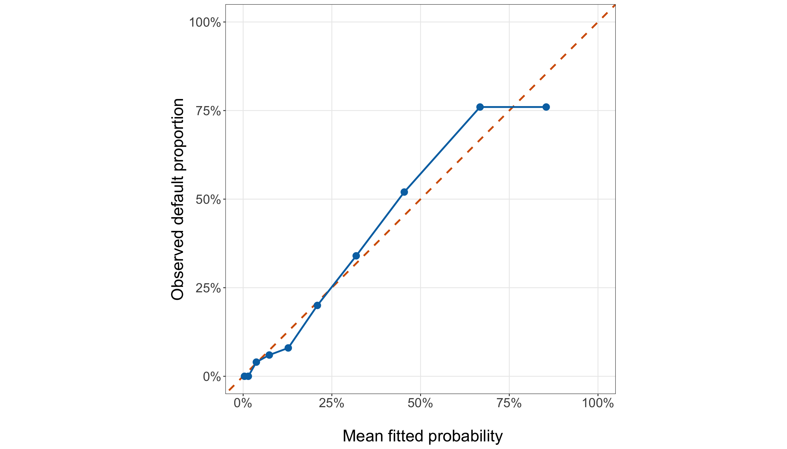
final_calibration_plot, ax = plt.subplots(figsize=(14, 8))
_ = ax.plot([0,1,], [0,1,], linestyle="--", linewidth=1.8, color="#D55E00",
)
_ = ax.plot(final_calibration_summary["mean_fitted_probability"],
final_calibration_summary["observed_default_proportion"], linewidth=1.8,
color="#0072B2",
)
_ = ax.scatter(final_calibration_summary["mean_fitted_probability"],
final_calibration_summary["observed_default_proportion"], s=70, color="#0072B2",
zorder=3,
)
_ = ax.set_xlim(0,1,)
_ = ax.set_ylim(0,1,)
_ = ax.set_aspect("equal", adjustable="box",
)
_ = ax.set_xlabel("\n Mean fitted probability", fontsize=21,
)
_ = ax.set_ylabel("Observed default proportion", fontsize=21, labelpad=12,
)
_ = ax.tick_params(axis="both", labelsize=16.5,
)
_ = ax.xaxis.set_major_formatter(PercentFormatter(xmax=1, decimals=0,
))
_ = ax.yaxis.set_major_formatter(PercentFormatter(xmax=1, decimals=0,
))
_ = ax.grid(True, which="major", alpha=0.3,
)
_ = ax.grid(False, which="minor",
)
_ = final_calibration_plot.tight_layout()
plt.show()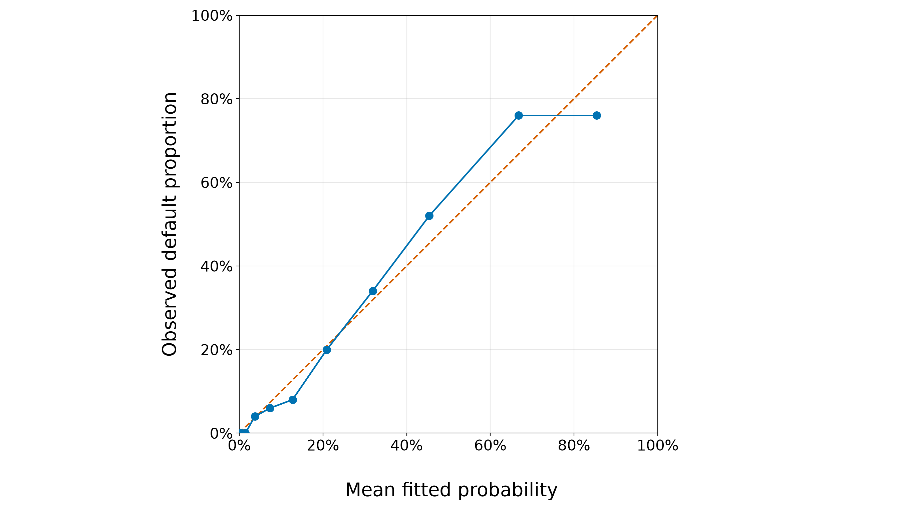
The calibration results in Figure 8.37 (or Figure 8.38) show that the selected credit-score-plus-income model tracks the perfect-calibration diagonal reasonably closely across much of the fitted-probability range, although the agreement becomes less exact toward the upper end.
At low fitted probabilities, the discrepancies are generally small. For example, group G3 has a mean fitted default probability of 0.037 and an observed default proportion of 0.040. Similarly, in group G6, the corresponding values are 0.209 and 0.200. These groups lie close to the diagonal, indicating fairly close agreement between fitted probabilities and observed event frequencies.
The departures become more noticeable in the upper fitted-probability groups. In G8, the mean fitted probability is 0.454, whereas the observed default proportion is 0.520. The model therefore underpredicts the observed proportion in this group by about 6.6 percentage points. In G9, that underprediction grows to approximately 9.2 percentage points.
The direction then reverses in the highest fitted-probability group. The largest absolute calibration discrepancy for the selected model is 9.4%, occurring in group G10. In that group, the mean fitted default probability is 0.854, compared with an observed proportion of 0.760. Because the fitted probability exceeds the observed proportion there, the model overpredicts default for that highest-risk group by approximately 9.4 percentage points. Note that this change in direction is important. The calibration departures do not stay entirely above or entirely below the diagonal: some groups show underprediction, while others show overprediction. Therefore, we do not see an obvious global pattern in which the selected model consistently assigns probabilities that are too small or consistently too large across the full range.
At the same time, the larger discrepancies in the upper fitted-probability groups remind us that even the selected model does not reproduce every grouped event frequency exactly. Each observed proportion is based on a finite group of borrowers, so some deviation from the diagonal is expected simply from sampling variability. Hence, the calibration plot should be read as a diagnostic of the overall probability-scale agreement, not as a requirement that every grouped point fall exactly on the 45-degree line.
Overall, the selected model shows reasonably close in-sample calibration over much of the probability range, with more noticeable localized discrepancies among borrowers assigned relatively high default probabilities. This is still an in-sample calibration check. However, the same training observations were used both to estimate the model and to construct these groups. Final predictive calibration must be assessed later using the held-out testing observations.
Final-Model Residual Checks
Next, we inspect deviance and Pearson residuals separately, using the same \(\pm2\) screening references as before.
final_deviance_residual_plot <- ggplot(final_gof_data,
aes(x = fitted_probability, y = deviance_residual)) +
geom_hline(yintercept = 0, colour = "grey35", linetype = "dashed", linewidth = 0.9) +
geom_hline(yintercept = c(-2, 2), colour = "#D55E00", linetype = "dotted", linewidth = 0.9
) +
geom_point(colour = "#0072B2", alpha = 0.45, size = 2.2) +
theme_bw() +
theme(axis.text = element_text(size = 16.5), axis.title = element_text(size = 21),
panel.grid.minor = element_blank()) +
labs(x = "\n Fitted default probability", y = "Deviance residual")
final_deviance_residual_plot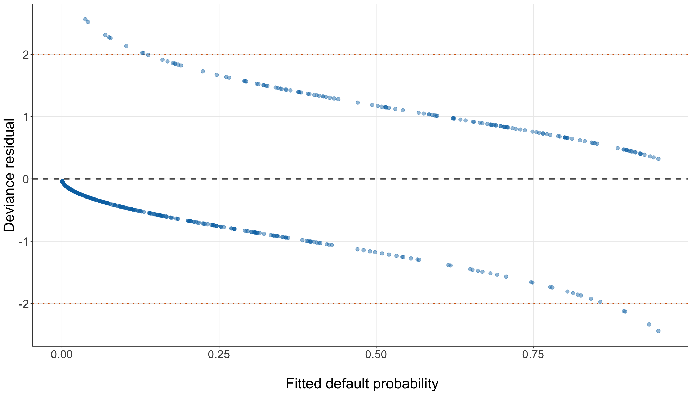
final_deviance_residual_over_2 = (np.abs(final_gof_data["deviance_residual"]) > 2).sum()
final_deviance_residual_plot, ax = (plt.subplots(figsize=(14, 8)))
_ = ax.axhline(0, linestyle="--", linewidth=1.2, color="0.35",
)
_ = ax.axhline(2, linestyle=":", linewidth=1.2, color="#D55E00",
)
_ = ax.axhline(-2, linestyle=":", linewidth=1.2, color="#D55E00",
)
_ = ax.scatter(final_gof_data["fitted_probability"], final_gof_data["deviance_residual"],
alpha=0.45, s=32, color="#0072B2",
)
_ = ax.set_xlabel("\n Fitted default probability", fontsize=21,
)
_ = ax.set_ylabel("Deviance residual", fontsize=21, labelpad=12,
)
_ = ax.tick_params(axis="both", labelsize=16.5,
)
_ = ax.grid(True, which="major", alpha=0.3,
)
_ = ax.grid(False, which="minor",
)
_ = final_deviance_residual_plot.tight_layout()
plt.show()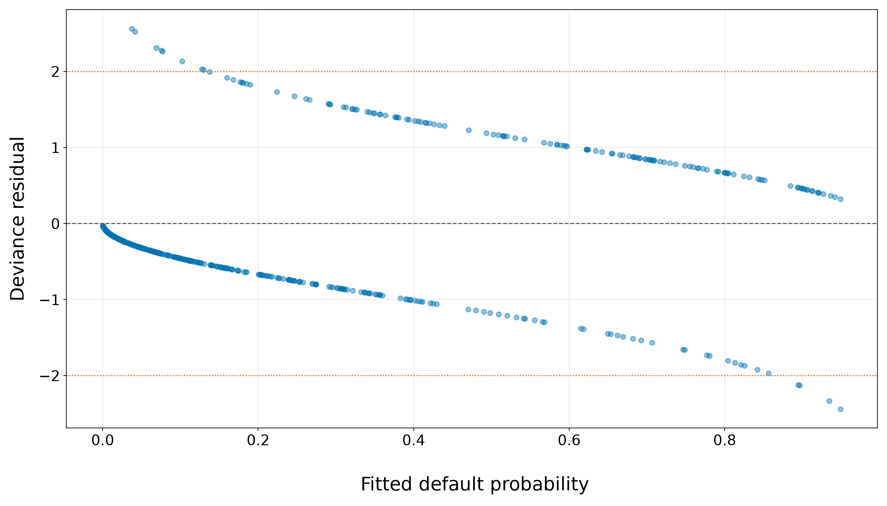
The selected credit-score-plus-income model has 12 observations with absolute deviance residuals greater than \(2\), compared with 15 under the simple credit-score model. Thus, adding income reduces the number of training observations that cross this screening reference by 3.
The overall two-band structure remains, as expected for a Bernoulli response: defaults form the positive branch and non-defaults form the negative branch. What changes is the horizontal position of the observations because the fitted probabilities now depend on both credit score and income rather than on credit score alone. This matters because some borrowers who looked especially surprising under the simple model can become less discrepant once income is taken into account. Conversely, other borrowers may move farther from the centre if their income leads the extended model to assign a fitted probability that contrasts more strongly with the observed outcome.
The largest positive deviance residual in the selected model is 2.564. It corresponds to a borrower whose fitted default probability is 3.7% despite having defaulted. The most negative residual is -2.440, corresponding to a borrower with fitted default probability 94.9% who did not default.
The reduction from 15 to 12 observations beyond \(\pm2\) is encouraging: the added income term helps the model reconcile some outcomes that credit score alone described poorly. At the same time, the remaining large residuals show that even the selected model cannot make every observed default or non-default unsurprising. These cases should still be treated as diagnostically interesting rather than automatically problematic. A large deviance residual identifies an outcome that is difficult to reconcile with the fitted probability, but it does not by itself tell us whether the observation has substantial influence on the coefficient estimates. Therefore, we will interpret these residuals together with the final-model leverage and Cook’s-distance diagnostics below.
Now, let us examine the Pearson residuals versus fitted default probabilities.
final_pearson_residual_plot <- ggplot(final_gof_data,
aes(x = fitted_probability, y = pearson_residual)) +
geom_hline(yintercept = 0, colour = "grey35", linetype = "dashed", linewidth = 0.9) +
geom_hline(yintercept = c(-2, 2), colour = "#D55E00", linetype = "dotted", linewidth = 0.9
) +
geom_point(colour = "#0072B2", alpha = 0.45, size = 2.2) +
theme_bw() +
theme(axis.text = element_text(size = 16.5), axis.title = element_text(size = 21),
panel.grid.minor = element_blank()) +
labs(x = "\n Fitted default probability", y = "Pearson residual")
final_pearson_residual_plot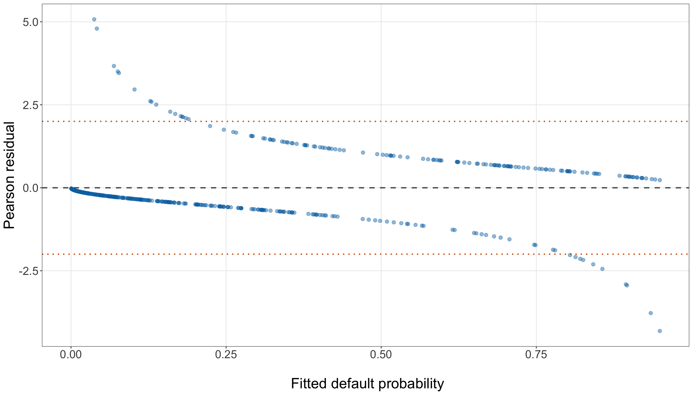
final_pearson_residual_over_2 = (np.abs(final_gof_data["pearson_residual"]) > 2).sum()
final_pearson_residual_plot, ax = (plt.subplots(figsize=(14, 8)))
_ = ax.axhline(0, linestyle="--", linewidth=1.2, color="0.35",
)
_ = ax.axhline(2, linestyle=":", linewidth=1.2, color="#D55E00",
)
_ = ax.axhline(-2, linestyle=":", linewidth=1.2, color="#D55E00",
)
_ = ax.scatter(final_gof_data["fitted_probability"], final_gof_data["pearson_residual"],
alpha=0.45, s=32, color="#0072B2",
)
_ = ax.set_xlabel("\n Fitted default probability", fontsize=21,
)
_ = ax.set_ylabel("Pearson residual", fontsize=21, labelpad=12,
)
_ = ax.tick_params(axis="both", labelsize=16.5,
)
_ = ax.grid(True, which="major", alpha=0.3,
)
_ = ax.grid(False, which="minor",
)
_ = final_pearson_residual_plot.tight_layout()
plt.show()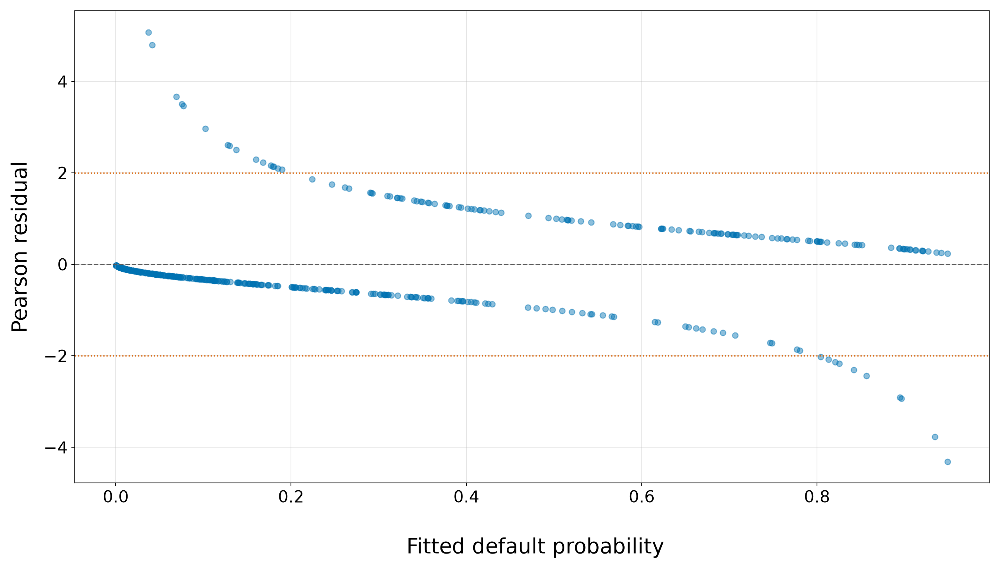
The selected credit-score-plus-income model has 26 observations with absolute Pearson residuals greater than \(2\), compared with 26 under the simple credit-score model. In this case, adding income leaves the number of observations crossing the screening reference unchanged.
As before, in Figure 8.41 (or Figure 8.42), the two curved branches arise from the binary response. Defaults produce positive Pearson residuals, whereas non-defaults produce negative Pearson residuals. What changes under the selected model is the fitted probability assigned to each borrower because that probability now depends jointly on credit score and annual income. This is critical because the Pearson residual
\[ r_{P,i} = \frac{ y_i-\widehat{\pi}_i }{ \sqrt{ \widehat{\pi}_i (1-\widehat{\pi}_i) } } \]
is especially sensitive when the fitted probability lies near \(0\) or \(1\). A default assigned a very small fitted probability produces a large positive residual, while a non-default assigned a very large fitted default probability produces a large negative residual. Hence, adding income can move an observation substantially along the horizontal axis and, in turn, alter the magnitude of its standardized discrepancy.
In the selected model, 16 observations lie above the upper screening line and therefore represent defaults assigned fitted default probabilities below \(20\%\). Likewise, 10 observations lie below the lower line and represent non-defaults assigned fitted default probabilities above \(80\%\).
The most extreme positive Pearson residual is 5.074. It corresponds to a borrower whose fitted default probability is only 3.7% despite having defaulted. At the opposite end, the most negative Pearson residual is -4.316, corresponding to a borrower with fitted default probability 94.9% who did not default.
Compared with the simple model, the fact that the total number of observations beyond ±2 is unchanged does not mean that the same borrowers necessarily remain extreme. Because income changes the fitted probabilities, the identities and magnitudes of the largest residuals can shift even when the overall count is similar. That distinction is useful diagnostically. A new regressor may improve the model for some borrowers while making others more discrepant, so a simple count of residuals beyond \(\pm2\) does not capture the whole story. The plot shows the full distribution of discrepancies across the fitted-probability range and should be considered together with the deviance-residual results.
Overall, the selected model still contains a set of outcomes that are difficult to reconcile with the fitted probabilities, especially near the probability boundaries. These should be interpreted as difficult-to-fit observations rather than automatic outliers. Whether they materially affect the estimated coefficients depends additionally on their leverage and influence, which we examine in the final-model influence diagnostics below.
Final-Model Functional-Form Checks
The simple-model functional-form section used a binned empirical-logit plot because only one continuous regressor was present. That marginal display is less appropriate now: with both credit score and income in the model, a plot of observed log-odds against one regressor would allow the other regressor to vary simultaneously.

That said, we use conditional targeted likelihood-ratio checks for quadratic departures while keeping the other retained regressor in the model. First, centre both scaled regressors:
\[ c_i = x_{i,1}^{(50)} - \overline{x}^{(50)} \]
and
\[ m_i = x_{i,2}^{(10\text{k})} - \overline{x}^{(10\text{k})}. \]
We compare the selected linear-logit model
\[ \operatorname{logit}(\pi_i) = \alpha_0 + \alpha_1c_i + \alpha_2m_i \]
with three larger alternatives:
- add \(c_i^2\) only;
- add \(m_i^2\) only; and
- add both \(c_i^2\) and \(m_i^2\).
The first two tests have one degree of freedom; the joint test has two.
final_linearity_data <- training_data |>
mutate(credit_score_50_centered = credit_score_50 - mean(credit_score_50),
income_10k_centered = income_10k - mean(income_10k))
final_functional_base_model <- glm(formula = defaulted ~ credit_score_50_centered +
income_10k_centered, family = binomial(link = "logit"), data = final_linearity_data)
final_credit_quadratic_model <- glm(formula = defaulted ~ credit_score_50_centered +
income_10k_centered + I(credit_score_50_centered^2), family =
binomial(link = "logit"), data = final_linearity_data)
final_income_quadratic_model <- glm(formula = defaulted ~ credit_score_50_centered +
income_10k_centered + I(income_10k_centered^2), family = binomial(link = "logit"),
data = final_linearity_data)
final_both_quadratic_model <- glm(formula = defaulted ~ credit_score_50_centered +
income_10k_centered + I(credit_score_50_centered^2) + I(income_10k_centered^2),
family =
binomial(link = "logit"),
data =
final_linearity_data
)
final_credit_quadratic_lr <- 2 * (
as.numeric(logLik(final_credit_quadratic_model)) -
as.numeric(logLik(final_functional_base_model))
)
final_income_quadratic_lr <- 2 * (
as.numeric(logLik(final_income_quadratic_model)) -
as.numeric(logLik(final_functional_base_model))
)
final_both_quadratic_lr <- 2 * (
as.numeric(logLik(final_both_quadratic_model)) -
as.numeric(logLik(final_functional_base_model))
)
final_credit_quadratic_p_value <- pchisq(
final_credit_quadratic_lr,
df = 1,
lower.tail = FALSE
)
final_income_quadratic_p_value <- pchisq(
final_income_quadratic_lr,
df = 1,
lower.tail = FALSE
)
final_both_quadratic_p_value <- pchisq(
final_both_quadratic_lr,
df = 2,
lower.tail = FALSE
)
final_functional_form_summary <- tibble(
Check = c("Add credit-score squared term", "Add income squared term",
"Add both squared terms"),
`LR statistic` = c(final_credit_quadratic_lr, final_income_quadratic_lr,
final_both_quadratic_lr),
`Degrees of freedom` = c(1, 1, 2),
`p-value` = c(final_credit_quadratic_p_value, final_income_quadratic_p_value,
final_both_quadratic_p_value)
) |>
mutate(
`LR statistic` =
round(`LR statistic`, 3),
`p-value` =
sprintf("%.4f", `p-value`)
)
final_functional_form_summary |>
kable(
align = c("c", "c", "c", "c")
)| Check | LR statistic | Degrees of freedom | p-value |
|---|---|---|---|
| Add credit-score squared term | 2.025 | 1 | 0.1548 |
| Add income squared term | 6.224 | 1 | 0.0126 |
| Add both squared terms | 8.116 | 2 | 0.0173 |
final_linearity_data = (training_data.copy())
final_linearity_data["credit_score_50_centered"] = (final_linearity_data["credit_score_50"]
- final_linearity_data["credit_score_50"].mean())
final_linearity_data["income_10k_centered"] = (final_linearity_data["income_10k"]
- final_linearity_data["income_10k"].mean())
final_functional_base_model = glm(
formula=("defaulted ~ " "credit_score_50_centered + " "income_10k_centered"),
data=final_linearity_data, family=Binomial(link=sm.families.links.Logit()),
).fit()
final_credit_quadratic_model = glm(
formula=("defaulted ~ " "credit_score_50_centered + " "income_10k_centered + "
"I(credit_score_50_centered ** 2)"), data=final_linearity_data,
family=Binomial(link=sm.families.links.Logit()),
).fit()
final_income_quadratic_model = glm(
formula=("defaulted ~ " "credit_score_50_centered + " "income_10k_centered + "
"I(income_10k_centered ** 2)"), data=final_linearity_data,
family=Binomial(link=sm.families.links.Logit()),
).fit()
final_both_quadratic_model = glm(
formula=("defaulted ~ " "credit_score_50_centered + " "income_10k_centered + "
"I(credit_score_50_centered ** 2) + " "I(income_10k_centered ** 2)"),
data=final_linearity_data, family=Binomial(link=sm.families.links.Logit()),
).fit()
final_credit_quadratic_lr = (2
* (final_credit_quadratic_model.llf - final_functional_base_model.llf))
final_income_quadratic_lr = (2
* (final_income_quadratic_model.llf - final_functional_base_model.llf))
final_both_quadratic_lr = (2
* (final_both_quadratic_model.llf - final_functional_base_model.llf))
final_credit_quadratic_p_value = (stats.chi2.sf(final_credit_quadratic_lr, 1,
))
final_income_quadratic_p_value = (stats.chi2.sf(final_income_quadratic_lr, 1,
))
final_both_quadratic_p_value = (stats.chi2.sf(final_both_quadratic_lr, 2,
))
final_functional_form_summary = pd.DataFrame({
"Check": ["Add credit-score squared term", "Add income squared term",
"Add both squared terms",
],
"LR statistic": [f"{final_credit_quadratic_lr:.3f}", f"{final_income_quadratic_lr:.3f}",
f"{final_both_quadratic_lr:.3f}",
], "Degrees of freedom": [1, 1, 2,
], "p-value": [f"{final_credit_quadratic_p_value:.4f}",
f"{final_income_quadratic_p_value:.4f}", f"{final_both_quadratic_p_value:.4f}",
],
})
final_functional_form_summary_html = (scrollable_table_html(final_functional_form_summary))| Check | LR statistic | Degrees of freedom | p-value |
|---|---|---|---|
| Add credit-score squared term | 2.025 | 1 | 0.1548 |
| Add income squared term | 6.224 | 1 | 0.0126 |
| Add both squared terms | 8.116 | 2 | 0.0173 |
The three likelihood-ratio checks in Table 8.52 give a more nuanced picture than a single overall conclusion. For credit score, adding the centred quadratic term produces
\[ G^2 = \text{2.025} \]
with one degree of freedom and a \(p\)-value of 0.1548. At a significance level of \(\alpha=0.05\), we do not reject the null hypothesis that the credit-score quadratic coefficient is zero. Thus, conditional on income already being in the model, this targeted check provides no strong evidence that credit score requires quadratic curvature on the log-odds scale. This is consistent with the earlier simple-model functional-form assessment, where the linear-logit specification for credit score also appeared reasonably defensible.
The result is different for annual income. Adding the centred income-squared term gives
\[ G^2 = \text{6.224} \]
with one degree of freedom and a \(p\)-value of 0.0126. Because this \(p\)-value is below \(0.05\), we reject the null hypothesis that the income quadratic coefficient is zero in this targeted comparison. Hence, the training data provide evidence that, after accounting for credit score, a purely linear income term may be too restrictive on the log-odds scale.
The joint check leads to the same broader concern. When both squared terms are added simultaneously, the likelihood-ratio statistic is
\[ G^2 = \text{8.116} \]
with two degrees of freedom and a \(p\)-value of 0.0173. At the \(0.05\) level, we reject the joint null hypothesis that both quadratic coefficients are zero. Thus, considered jointly, the two continuous regressors show evidence of at least one quadratic departure from the selected linear-logit specification.
The individual checks help us locate that signal. Because the credit-score quadratic test gives a \(p\)-value equal to 0.1548 while the income quadratic test gives a \(p\)-value equal to 0.0126, the evidence for curvature appears to be associated primarily with annual income rather than credit score. The joint result should not be interpreted as evidence that both continuous regressors necessarily require quadratic terms.
This is an important model-development finding. The credit-score-plus-income model was selected because income added substantial information beyond credit score while the larger six-regressor candidate did not provide enough additional improvement to justify its complexity. These functional-form checks now ask a different question: whether the form in which income enters that selected model is sufficiently flexible. The results suggest that this question should be investigated before the specification is treated as frozen.
At the same time, the conclusion should remain appropriately narrow. These likelihood-ratio tests examine only quadratic departures. Rejecting the income-quadratic null does not establish that a quadratic polynomial is the uniquely correct functional form, just as failing to reject the credit-score quadratic null does not prove exact linearity. The evidence tells us that the current linear income specification may be missing curvature; the next step is to determine whether incorporating that curvature yields a stable, interpretable, and diagnostically improved model.
Iterative Model Development and Final-Model Influence Checks
The functional-form checks above change what we should do next. The credit-score-plus-linear-income model was selected as the preferred candidate on the basis of the model-comparison evidence, but the subsequent diagnostic check found evidence that annual income may require quadratic curvature on the log-odds scale. Thus, we should not calculate the final influence diagnostics for a specification that we already have reason to revise.
This is an important part of the model-development workflow: selection and diagnostics can be iterative. A candidate model can be preferred to its competitors and still require a targeted functional-form refinement before it is frozen. That said, we refine the model by retaining the linear credit-score term and adding a quadratic income term. To make the income terms easier to interpret and more numerically stable, define
\[ m_i = x_{i,2}^{(10\text{k})} - \overline{x}_{2,\mathrm{train}}^{(10\text{k})}, \]
where \(\overline{x}_{2,\mathrm{train}}^{(10\text{k})}\) is the mean of income_10k in the training data. The refined model is
\[ Y_i \mid x_{i,1}^{(50)},m_i \sim \operatorname{Bernoulli}(\pi_i), \]
with
\[ \operatorname{logit}(\pi_i) = \beta_0 + \beta_1x_{i,1}^{(50)} + \beta_2m_i + \beta_3m_i^2. \tag{8.23}\]
The linear income term remains in the model when \(m_i^2\) is added. This follows the hierarchical principle: when a polynomial term is retained, the corresponding lower-order term should ordinarily remain as well.
Heads-up on why the model is being updated here!
The earlier calibration and residual figures were diagnostics for the provisional credit-score-plus-linear-income model. They remain useful because they form part of the diagnostic trail that led us to examine the functional form more carefully. However, once the quadratic income term is retained, the fitted probabilities, residuals, leverage, Cook’s distances, and calibration summaries all change. Those quantities are model-specific, so they must be recalculated before the specification can be frozen. This is not testing-data tuning. Every decision here still uses only the training data.
First, we preserve the key summaries from the provisional model, then refit the refined specification.
provisional_final_model <- final_model
provisional_final_max_calibration_gap <- final_max_calibration_gap
provisional_final_deviance_residual_over_2 <- final_deviance_residual_over_2
provisional_final_pearson_residual_over_2 <- final_pearson_residual_over_2
income_10k_training_mean <- mean(training_data$income_10k)
credit_score_50_training_mean <- mean(training_data$credit_score_50)
final_model_data <- training_data |>
mutate(income_10k_centered = income_10k - income_10k_training_mean,
credit_score_50_centered = credit_score_50 - credit_score_50_training_mean)
final_model <- glm(formula = defaulted ~ credit_score_50 + income_10k_centered +
I(income_10k_centered^2), family = binomial(link = "logit"), data = final_model_data)
final_refinement_lr_statistic <- 2 * (as.numeric(logLik(final_model)) -
as.numeric(logLik(provisional_final_model)))
final_refinement_lr_df <- 1
final_refinement_lr_p_value <- pchisq(final_refinement_lr_statistic, df =
final_refinement_lr_df, lower.tail = FALSE)
final_refinement_comparison <- tibble(
Specification = c("Provisional: linear income", "Refined: quadratic income"),
Parameters = c(length(coef(provisional_final_model)), length(coef(final_model))),
`Log-likelihood` = c(as.numeric(logLik(provisional_final_model)),
as.numeric(logLik(final_model)))) |>
mutate(AIC = -2 * `Log-likelihood` + 2 * Parameters, BIC = -2 * `Log-likelihood` +
log(nrow(final_model_data)) * Parameters,
across(c(`Log-likelihood`, AIC, BIC), ~ round(.x, 3)))
final_refinement_comparison |>
kable(align = c("c", "c", "c", "c", "c"))| Specification | Parameters | Log-likelihood | AIC | BIC |
|---|---|---|---|---|
| Provisional: linear income | 3 | -187.275 | 380.550 | 393.187 |
| Refined: quadratic income | 4 | -184.163 | 376.325 | 393.176 |
provisional_final_model = (final_model)
provisional_final_max_calibration_gap = (final_max_calibration_gap)
provisional_final_deviance_residual_over_2 = (final_deviance_residual_over_2)
provisional_final_pearson_residual_over_2 = (final_pearson_residual_over_2)
income_10k_training_mean = (training_data["income_10k"].mean())
credit_score_50_training_mean = (training_data["credit_score_50"].mean())
final_model_data = (training_data.copy())
final_model_data["income_10k_centered"] = (final_model_data["income_10k"]
- income_10k_training_mean)
final_model_data["credit_score_50_centered"] = (final_model_data["credit_score_50"]
- credit_score_50_training_mean)
final_model = glm(formula=("defaulted ~ " "credit_score_50 + " "income_10k_centered + "
"I(income_10k_centered ** 2)"), data=final_model_data,
family=Binomial(link=sm.families.links.Logit()),
).fit()
final_refinement_lr_statistic = (2 * (final_model.llf - provisional_final_model.llf))
final_refinement_lr_df = 1
final_refinement_lr_p_value = (
stats.chi2.sf(final_refinement_lr_statistic, final_refinement_lr_df,
))
final_refinement_comparison = pd.DataFrame({
"Specification": ["Provisional: linear income", "Refined: quadratic income",
], "Parameters": [len(provisional_final_model.params), len(final_model.params),
], "Log-likelihood": [provisional_final_model.llf, final_model.llf,
],
})
final_refinement_comparison["AIC"] = (-2 * final_refinement_comparison["Log-likelihood"] + 2
* final_refinement_comparison["Parameters"])
final_refinement_comparison["BIC"] = (-2 * final_refinement_comparison["Log-likelihood"]
+ np.log(len(final_model_data)) * final_refinement_comparison["Parameters"])
for column_name in ["Log-likelihood", "AIC", "BIC",
]:
final_refinement_comparison[column_name] = final_refinement_comparison[column_name
].round(3)
final_refinement_comparison_html = (scrollable_table_html(final_refinement_comparison))| Specification | Parameters | Log-likelihood | AIC | BIC |
|---|---|---|---|---|
| Provisional: linear income | 3 | -187.275 | 380.550 | 393.187 |
| Refined: quadratic income | 4 | -184.163 | 376.325 | 393.176 |
The likelihood-ratio comparison between the provisional and refined specifications gives
\[ G^2 = \text{6.224} \]
with one degree of freedom and a \(p\)-value of 0.0126. Recall that the refined model differs from the provisional model by only one additional coefficient: the coefficient of the centred quadratic income term, \(m_i^2\). Hence, the hypotheses are
\[ \begin{gather} H_0\text{: } \beta_3=0, \\ \text{versus} \\ H_1\text{: } \beta_3\neq0. \end{gather} \]
The maximized log-likelihood increases from -187.275 under the provisional linear-income model to -184.163 under the refined model. Thus, allowing quadratic income curvature improves the maximized log-likelihood by 3.112 log-likelihood units. Doubling that gain produces the likelihood-ratio statistic above.
Under \(H_0\) and the usual large-sample regularity conditions,
\[ G^2 \mathrel{\dot{\sim}} \chi_1^2. \]
The observed statistic is sufficiently large relative to this reference distribution that the corresponding \(p\)-value falls below the significance level of \(0.05\). Thus, we reject \(H_0\) in this targeted comparison. This provides evidence that, conditional on credit score and the lower-order income term already being in the model, allowing income to curve on the log-odds scale improves the training-data fit.
The information criteria provide complementary perspectives because they reward fit while penalizing additional complexity. The refined model’s AIC is 376.325, compared with 380.550 for the provisional model. Thus, the refined specification lowers AIC by 4.225 points. By the AIC criterion, the improvement in fit is sufficient to compensate for introducing the additional quadratic coefficient.
BIC is more conservative because its complexity penalty increases with sample size. The refined model has BIC 393.176, compared with 393.187 for the provisional model—a difference of only 0.011. The two models are therefore essentially indistinguishable by BIC: its stronger complexity penalty almost exactly offsets the improvement in maximized likelihood.
Taken together, these criteria give a nuanced but coherent result. The likelihood-ratio test provides evidence for the targeted quadratic income term, and AIC favours the refined specification, while BIC is effectively neutral rather than providing meaningful evidence for either model. That said, we do not retain the quadratic term merely because a more complicated model fits better (as any nested extension must). Rather, the refinement is supported by the targeted functional-form diagnostic and likelihood-ratio comparison, with AIC providing additional support and BIC offering no meaningful preference against it.
This still does not establish that a quadratic curve is the true population relationship between income and the log-odds of default. The refinement addresses the specific functional-form issue detected in the training data and gives us a more defensible working specification. Because the model itself has now changed, all quantities that depend on its fitted probabilities—including calibration, residuals, leverage, and Cook’s distance—must be rebuilt before the specification can be frozen.
final_leverage_values <- hatvalues(final_model)
final_cooks_distance_values <- cooks.distance(final_model)
final_gof_data <- final_model_data |>
mutate(observation_index = row_number(), fitted_probability = fitted(final_model),
linear_predictor = predict(final_model, type = "link"),
pearson_residual = residuals(final_model, type = "pearson"),
deviance_residual = residuals(final_model, type = "deviance"),
leverage = final_leverage_values, cooks_distance = final_cooks_distance_values)
final_design_matrix <- model.matrix(final_model)
final_weights <- final_gof_data$fitted_probability *
(1 - final_gof_data$fitted_probability)
final_fisher_information <- crossprod(final_design_matrix, final_weights *
final_design_matrix)
final_fisher_condition_number <- kappa(final_fisher_information)
final_model_converged <- final_model$converged
final_model_coefficients_finite <- all(is.finite(coef(final_model)))
final_model_standard_errors_finite <- all(is.finite(sqrt(diag(vcov(final_model)))))final_leverage_values = (final_model.get_influence().hat_matrix_diag)
final_cooks_distance_values = (final_model.get_influence().cooks_distance[0])
final_gof_data = (final_model_data.copy())
final_gof_data["observation_index"] = np.arange(1, len(final_gof_data) + 1, dtype=int,
)
final_gof_data["fitted_probability"] = (final_model.fittedvalues.to_numpy())
final_gof_data["linear_predictor"] = (final_model.model.exog @ final_model.params.to_numpy()
)
final_gof_data["pearson_residual"] = (final_model.resid_pearson.to_numpy())
final_gof_data["deviance_residual"] = (final_model.resid_deviance.to_numpy())
final_gof_data["leverage"] = (final_leverage_values)
final_gof_data["cooks_distance"] = (final_cooks_distance_values)
final_design_matrix = (final_model.model.exog)
final_weights = (final_gof_data["fitted_probability"].to_numpy()
* (1 - final_gof_data["fitted_probability"].to_numpy()))
final_fisher_information = (final_design_matrix.T
@ (final_weights[:, None] * final_design_matrix))
final_fisher_condition_number = (np.linalg.cond(final_fisher_information))
final_model_converged = (final_model.converged)
final_model_coefficients_finite = (np.isfinite(final_model.params.to_numpy()).all())
final_model_standard_errors_finite = (np.isfinite(final_model.bse.to_numpy()).all())The refined model estimates four coefficients and converges. Its coefficient estimates are finite, its model-based standard errors are finite, and its fitted probabilities range from 0.0000 to 0.9308. The Fisher-information condition number is 12783.51. As before, the condition number is a warning measure rather than a universal pass/fail threshold.
Also, we recompute the calibration and residual summaries so that the final goodness-of-fit conclusion refers to the refined model, not to the provisional linear-income fit.
final_number_of_calibration_groups <- 10
final_calibration_data <- final_gof_data |>
arrange(fitted_probability, borrower_id) |>
mutate(calibration_group =
ceiling(row_number() * final_number_of_calibration_groups / n()))
final_calibration_summary <- final_calibration_data |>
group_by(calibration_group) |>
summarise(`Borrowers (n)` = n(), mean_fitted_probability = mean(fitted_probability),
observed_default_proportion = mean(defaulted == 1),.groups = "drop") |>
mutate(difference = observed_default_proportion - mean_fitted_probability,
calibration_group = paste0("G", calibration_group))
final_max_calibration_gap <- max(abs(final_calibration_summary$difference))
final_deviance_residual_over_2 <- sum(abs(final_gof_data$deviance_residual) > 2)
final_pearson_residual_over_2 <- sum(abs(final_gof_data$pearson_residual) > 2)
final_diagnostic_comparison_summary <- tibble(
Diagnostic = c("Maximum grouped calibration gap",
"Observations with |deviance residual| > 2", "Observations with |Pearson residual| > 2"
), `Provisional linear-income model` = c(
scales::percent(provisional_final_max_calibration_gap, accuracy = 0.1),
as.character(provisional_final_deviance_residual_over_2),
as.character(provisional_final_pearson_residual_over_2)),
`Refined quadratic-income model` = c(
scales::percent(final_max_calibration_gap, accuracy = 0.1),
as.character(final_deviance_residual_over_2),
as.character(final_pearson_residual_over_2)))
final_diagnostic_comparison_summary |>
kable(align = c("c", "c", "c"))| Diagnostic | Provisional linear-income model | Refined quadratic-income model |
|---|---|---|
| Maximum grouped calibration gap | 9.4% | 6.8% |
| Observations with |deviance residual| > 2 | 12 | 10 |
| Observations with |Pearson residual| > 2 | 26 | 19 |
final_number_of_calibration_groups = 10
final_calibration_data = (final_gof_data.sort_values(["fitted_probability", "borrower_id",
], kind="mergesort",
).reset_index(drop=True).copy())
final_calibration_data["calibration_group"] = np.ceil(
(np.arange(1, len(final_calibration_data) + 1,
) * final_number_of_calibration_groups / len(final_calibration_data))).astype(int)
final_calibration_summary = (final_calibration_data.groupby("calibration_group")
.agg(borrower_count=("defaulted", "size",
), mean_fitted_probability=("fitted_probability", "mean",
), observed_default_proportion=("defaulted", "mean",
),
).reset_index())
final_calibration_summary["difference"] = (
final_calibration_summary["observed_default_proportion"]
- final_calibration_summary["mean_fitted_probability"])
final_calibration_summary["calibration_group"] = ("G"
+ final_calibration_summary["calibration_group"].astype(str))
final_max_calibration_gap = (final_calibration_summary["difference"].abs().max())
final_deviance_residual_over_2 = (np.abs(final_gof_data["deviance_residual"]) > 2).sum()
final_pearson_residual_over_2 = (np.abs(final_gof_data["pearson_residual"]) > 2).sum()
final_diagnostic_comparison_summary = pd.DataFrame({
"Diagnostic": ["Maximum grouped calibration gap",
"Observations with |deviance residual| > 2",
"Observations with |Pearson residual| > 2",
], "Provisional linear-income model": [
(f"{100 * provisional_final_max_calibration_gap:.1f}%"),
str(provisional_final_deviance_residual_over_2),
str(provisional_final_pearson_residual_over_2),
], "Refined quadratic-income model": [(f"{100 * final_max_calibration_gap:.1f}%"),
str(final_deviance_residual_over_2), str(final_pearson_residual_over_2),
],
})
final_diagnostic_comparison_summary_html = (
scrollable_table_html(final_diagnostic_comparison_summary))| Diagnostic | Provisional linear-income model | Refined quadratic-income model |
|---|---|---|
| Maximum grouped calibration gap | 9.4% | 6.8% |
| Observations with |deviance residual| > 2 | 12 | 10 |
| Observations with |Pearson residual| > 2 | 26 | 19 |
The comparison above does not turn calibration or residual counts into model-selection criteria. Its purpose is narrower: once the functional form changes, we verify that the refinement has not created an obvious deterioration in other parts of the diagnostic picture.
In fact, the three summaries in Table 8.56 move in a favourable direction after adding the quadratic income term. The maximum grouped calibration discrepancy decreases from 9.4% under the provisional linear-income model to 6.8% under the refined model. Likewise, the number of observations with absolute deviance residuals greater than \(2\) falls from 12 to 10, while the corresponding Pearson-residual count falls from 26 to 19.
These changes are encouraging because the targeted functional-form refinement is not being accompanied by an obvious worsening of calibration or residual behaviour. If anything, the refined model accommodates the training data somewhat better on all three of these descriptive diagnostics. We should still avoid interpreting the reductions themselves as evidence that the quadratic model is “correct”: the calibration groups are finite-sample summaries, and the residual counts depend on convenient screening thresholds rather than formal goodness-of-fit tests. Their role here is to provide a consistency check alongside the likelihood-ratio and information-criterion evidence that motivated the refinement.

Because the refined model already contains the income quadratic term, the earlier question “should income be quadratic?” has now been resolved for this stage of model development. The remaining targeted functional-form question concerns credit score. Specifically, we need to determine whether adding a credit-score quadratic term conditional on the refined income form produces a further improvement in the training-data likelihood. This conditional recheck is important because changing the income specification can alter the estimated contribution of credit score and, therefore, the evidence for curvature in that regressor as well.
final_remaining_credit_quadratic_model <- glm(formula = defaulted ~ credit_score_50 +
income_10k_centered + I(income_10k_centered^2) + I(credit_score_50_centered^2),
family = binomial(link = "logit"), data = final_model_data)
final_remaining_credit_quadratic_lr <- 2 * (
as.numeric(logLik(final_remaining_credit_quadratic_model)) -
as.numeric(logLik(final_model)))
final_remaining_credit_quadratic_df <- 1
final_remaining_credit_quadratic_p_value <- pchisq(final_remaining_credit_quadratic_lr, df =
final_remaining_credit_quadratic_df, lower.tail = FALSE)
final_remaining_credit_quadratic_summary <- tibble(`LR statistic` =
round(final_remaining_credit_quadratic_lr, 3), `Degrees of freedom` =
final_remaining_credit_quadratic_df, `p-value` =
sprintf("%.4f", final_remaining_credit_quadratic_p_value))
final_remaining_credit_quadratic_summary |>
kable(align = c("c", "c", "c"))| LR statistic | Degrees of freedom | p-value |
|---|---|---|
| 1.892 | 1 | 0.1690 |
final_remaining_credit_quadratic_model = glm(
formula=("defaulted ~ " "credit_score_50 + " "income_10k_centered + "
"I(income_10k_centered ** 2) + " "I(credit_score_50_centered ** 2)"),
data=final_model_data, family=Binomial(link=sm.families.links.Logit()),
).fit()
final_remaining_credit_quadratic_lr = (2
* (final_remaining_credit_quadratic_model.llf - final_model.llf))
final_remaining_credit_quadratic_df = 1
final_remaining_credit_quadratic_p_value = (
stats.chi2.sf(final_remaining_credit_quadratic_lr, final_remaining_credit_quadratic_df,
))
final_remaining_credit_quadratic_summary = pd.DataFrame({
"LR statistic": [f"{final_remaining_credit_quadratic_lr:.3f}"],
"Degrees of freedom": [final_remaining_credit_quadratic_df],
"p-value": [f"{final_remaining_credit_quadratic_p_value:.4f}"],
})
final_remaining_credit_quadratic_summary_html = (
scrollable_table_html(final_remaining_credit_quadratic_summary))| LR statistic | Degrees of freedom | p-value |
|---|---|---|
| 1.892 | 1 | 0.1690 |
From Equation 8.23, recall that the refined model now contains the quadratic income term identified by the previous functional-form check:
\[ \operatorname{logit}(\pi_i) = \beta_0 + \beta_1x_{i,1}^{(50)} + \beta_2m_i + \beta_3m_i^2, \tag{8.24}\]
where
\[ m_i = x_{i,2}^{(10\text{k})} - \overline{x}_{2,\mathrm{train}}^{(10\text{k})} \]
is centred annual income measured in CAD 10,000 units.
In Table 8.58, we ask whether credit score also requires quadratic curvature, conditional on this refined income specification. For this targeted check, define the centred credit-score regressor
\[ c_i = x_{i,1}^{(50)} - \overline{x}_{1,\mathrm{train}}^{(50)}, \]
where \(\overline{x}_{1,\mathrm{train}}^{(50)}\) is the mean training credit score measured in 50-point units.
The larger comparison model adds the squared centred credit-score term:
\[ \operatorname{logit}(\pi_i) = \beta_0 + \beta_1x_{i,1}^{(50)} + \beta_2m_i + \beta_3m_i^2 + \beta_4c_i^2. \]
This model is nested within the comparison because setting
\[ \beta_4=0 \]
returns the refined model in Equation 8.24. Notice that the linear credit-score term remains in both specifications; we are testing whether the additional quadratic component improves the fit.
The hypotheses are therefore
\[ \begin{gather} H_0\text{: } \beta_4=0, \\ \text{versus} \\ H_1\text{: } \beta_4\neq0. \end{gather} \]
Under \(H_0\), credit score remains linear on the log-odds scale after accounting for the refined quadratic income relationship. On the other hand, under \(H_1\), adding the credit-score squared term provides evidence of additional curvature.
Because the larger model introduces exactly one additional coefficient, the likelihood-ratio statistic
\[ G^2 = 2 \left( \ell_{\mathrm{credit\text{-}quadratic}} - \ell_{\mathrm{refined}} \right) \]
has, under \(H_0\) and the usual large-sample regularity conditions,
\[ G^2 \mathrel{\dot{\sim}} \chi_1^2. \]
The observed check gives
\[ G^2 = \text{1.892} \]
with one degree of freedom and a \(p\)-value of 0.1690.
At the \(\alpha=0.05\) level, we do not reject the null hypothesis. The training data therefore do not provide strong evidence that adding a quadratic credit-score term improves the refined model. This conclusion is also consistent with the earlier functional-form check. Before refining income, the targeted credit-score quadratic test gave a \(p\)-value of 0.1548; after incorporating income curvature, the corresponding \(p\)-value is 0.1690. Thus, the evidence against a linear credit-score contribution remains weak even after the income specification has changed.
Importantly, failing to reject \(H_0\) does not prove that the relationship between credit score and the log-odds of default is exactly linear. It tells us only that, within the targeted quadratic alternatives considered here, adding \(c_i^2\) does not provide sufficient additional improvement to warrant another refinement. Combined with the earlier empirical-logit assessment and the previous credit-score quadratic check, this gives us reasonable support for retaining credit score as linear on the log-odds scale in the refined model.
Hence, we can proceed to leverage and influence using the refined specification. Because that model estimates
\[ p=4 \]
coefficients (the intercept, credit-score coefficient, linear centred-income coefficient, and quadratic centred-income coefficient) the leverage screening reference becomes \(2p/n\) with \(p=4\). Cook’s-distance screening continues to use \(4/n\). Both remain screening heuristics rather than deletion rules.
final_parameter_count <- length(coef(final_model))
final_training_size <- nrow(final_gof_data)
final_cooks_threshold <- 4 /
final_training_size
final_leverage_threshold <- 2 *
final_parameter_count /
final_training_size
final_cook_flag_count <- sum(final_gof_data$cooks_distance > final_cooks_threshold)
final_leverage_flag_count <- sum(final_gof_data$leverage > final_leverage_threshold)
final_both_influence_flag_count <- sum(final_gof_data$cooks_distance >
final_cooks_threshold & final_gof_data$leverage > final_leverage_threshold)
final_max_cooks_distance <- max(final_gof_data$cooks_distance)
final_max_leverage <- max(final_gof_data$leverage)
final_influence_summary <- final_gof_data |>
arrange(desc(cooks_distance)) |>
slice_head(n = 5) |>
transmute(`Borrower ID` = borrower_id, `Credit score` = credit_score,
`Annual income (CAD)` = income, Defaulted = defaulted, `Fitted probability` =
round(fitted_probability, 3), Leverage = round(leverage, 4), `Cook's distance` =
round(cooks_distance, 4))
final_influence_summary |>
kable(align = c("c", "c", "c", "c", "c", "c", "c"), format.args = list(big.mark = ","))| Borrower ID | Credit score | Annual income (CAD) | Defaulted | Fitted probability | Leverage | Cook’s distance |
|---|---|---|---|---|---|---|
| 111 | 719 | 96,900 | 1 | 0.041 | 0.0115 | 0.0685 |
| 546 | 770 | 95,800 | 1 | 0.023 | 0.0063 | 0.0682 |
| 106 | 489 | 21,800 | 0 | 0.909 | 0.0152 | 0.0390 |
| 420 | 671 | 91,200 | 1 | 0.114 | 0.0175 | 0.0352 |
| 430 | 550 | 20,000 | 0 | 0.807 | 0.0262 | 0.0290 |
final_parameter_count = len(final_model.params)
final_training_size = len(final_gof_data)
final_cooks_threshold = (4 / final_training_size)
final_leverage_threshold = (2 * final_parameter_count / final_training_size)
final_cook_flag_count = (final_gof_data["cooks_distance"] > final_cooks_threshold).sum()
final_leverage_flag_count = (final_gof_data["leverage"] > final_leverage_threshold).sum()
final_both_influence_flag_count = (
(final_gof_data["cooks_distance"] > final_cooks_threshold)
& (final_gof_data["leverage"] > final_leverage_threshold)).sum()
final_max_cooks_distance = (final_gof_data["cooks_distance"].max())
final_max_leverage = (final_gof_data["leverage"].max())
final_influence_summary = (final_gof_data.sort_values("cooks_distance", ascending=False,
).head(5) [["borrower_id", "credit_score", "income", "defaulted", "fitted_probability",
"leverage", "cooks_distance",
]]
.rename(columns={"borrower_id": "Borrower ID", "credit_score": "Credit score", "income":
"Annual income (CAD)", "defaulted": "Defaulted", "fitted_probability":
"Fitted probability", "leverage": "Leverage", "cooks_distance":
"Cook's distance",
}).copy())
final_influence_summary["Fitted probability"] = final_influence_summary["Fitted probability"
].round(3)
final_influence_summary["Leverage"] = final_influence_summary["Leverage"].round(4)
final_influence_summary["Cook's distance"] = final_influence_summary["Cook's distance"
].round(4)
final_influence_summary_html = (scrollable_table_html(final_influence_summary))| Borrower ID | Credit score | Annual income (CAD) | Defaulted | Fitted probability | Leverage | Cook’s distance |
|---|---|---|---|---|---|---|
| 111 | 719.0 | 96900.0 | 1 | 0.041 | 0.0115 | 0.0685 |
| 546 | 770.0 | 95800.0 | 1 | 0.023 | 0.0063 | 0.0682 |
| 106 | 489.0 | 21800.0 | 0 | 0.909 | 0.0152 | 0.0391 |
| 420 | 671.0 | 91200.0 | 1 | 0.114 | 0.0175 | 0.0352 |
| 430 | 550.0 | 20000.0 | 0 | 0.807 | 0.0262 | 0.0290 |
First, we inspect Cook’s distance.
final_cooks_distance_plot <- ggplot(final_gof_data,
aes(x = observation_index, y = cooks_distance)) +
geom_segment(
aes(xend = observation_index, y = 0, yend = cooks_distance, colour = cooks_distance >
final_cooks_threshold), linewidth = 0.7) +
geom_hline(yintercept = final_cooks_threshold, colour = "#D55E00", linetype = "dashed",
linewidth = 1) +
scale_colour_manual(values = c("FALSE" = "grey55", "TRUE" = "#0072B2"), guide = "none") +
theme_bw() +
theme(axis.text = element_text(size = 16.5), axis.title = element_text(size = 21),
panel.grid.minor = element_blank()) +
labs(x = "\n Training observation index", y = "Cook's distance")
final_cooks_distance_plot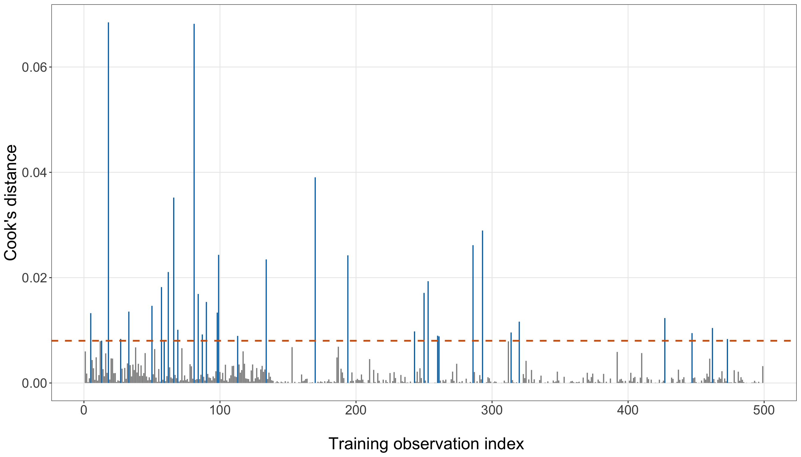
final_cooks_distance_plot, ax = (plt.subplots(figsize=(14, 8)))
final_cooks_flagged = (final_gof_data["cooks_distance"].to_numpy() > final_cooks_threshold)
for is_flagged in [False, True,
]:
subset = final_gof_data.loc[final_cooks_flagged == is_flagged]
_ = ax.vlines(subset["observation_index"], 0, subset["cooks_distance"], linewidth=1.0,
color=("#0072B2" if is_flagged else "0.55"),
)
_ = ax.axhline(final_cooks_threshold, linestyle="--", linewidth=1.5, color="#D55E00",
)
_ = ax.set_xlabel("Training observation index", fontsize=21, labelpad=12,
)
_ = ax.set_ylabel("Cook's distance", fontsize=21, labelpad=12,
)
_ = ax.tick_params(axis="both", labelsize=16.5,
)
_ = ax.grid(True, which="major", alpha=0.3,
)
_ = ax.grid(False, which="minor",
)
_ = final_cooks_distance_plot.tight_layout()
plt.show()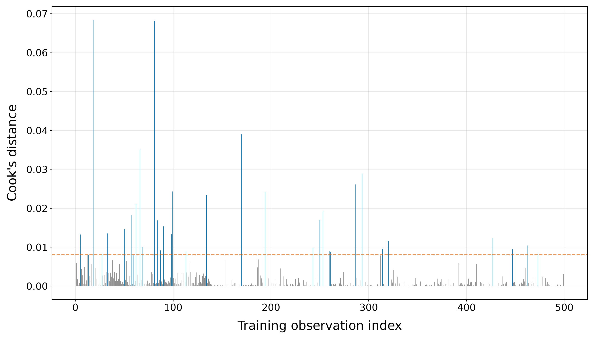
Then, we proceed with leverage.
final_leverage_plot <- ggplot(final_gof_data, aes(x = observation_index, y = leverage)) +
geom_point(aes(colour = leverage > final_leverage_threshold), alpha = 0.65, size = 2.4) +
geom_hline(yintercept = final_leverage_threshold, colour = "#D55E00", linetype = "dashed",
linewidth = 1) +
scale_colour_manual(values = c("FALSE" = "grey55", "TRUE" = "#0072B2"), guide = "none") +
theme_bw() +
theme(axis.text = element_text(size = 16.5), axis.title = element_text(size = 21),
panel.grid.minor = element_blank()) +
labs(x = "\n Training observation index", y = "Leverage")
final_leverage_plot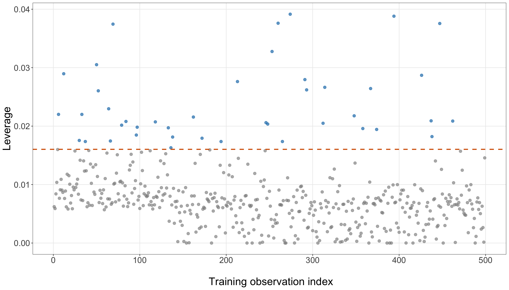
final_leverage_plot, ax = plt.subplots(figsize=(14, 8))
final_leverage_flagged = (final_gof_data["leverage"].to_numpy() > final_leverage_threshold)
_ = ax.scatter(final_gof_data.loc[~final_leverage_flagged, "observation_index",
], final_gof_data.loc[~final_leverage_flagged, "leverage",
], s=34, alpha=0.65, color="0.55",
)
_ = ax.scatter(final_gof_data.loc[final_leverage_flagged, "observation_index",
], final_gof_data.loc[final_leverage_flagged, "leverage",
], s=34, alpha=0.75, color="#0072B2",
)
_ = ax.axhline(final_leverage_threshold, linestyle="--", linewidth=1.5, color="#D55E00",
)
_ = ax.set_xlabel("Training observation index", fontsize=21, labelpad=12,
)
_ = ax.set_ylabel("Leverage", fontsize=21, labelpad=12,
)
_ = ax.tick_params(axis="both", labelsize=16.5,
)
_ = ax.grid(True, which="major", alpha=0.3,
)
_ = ax.grid(False, which="minor",
)
_ = final_leverage_plot.tight_layout()
plt.show()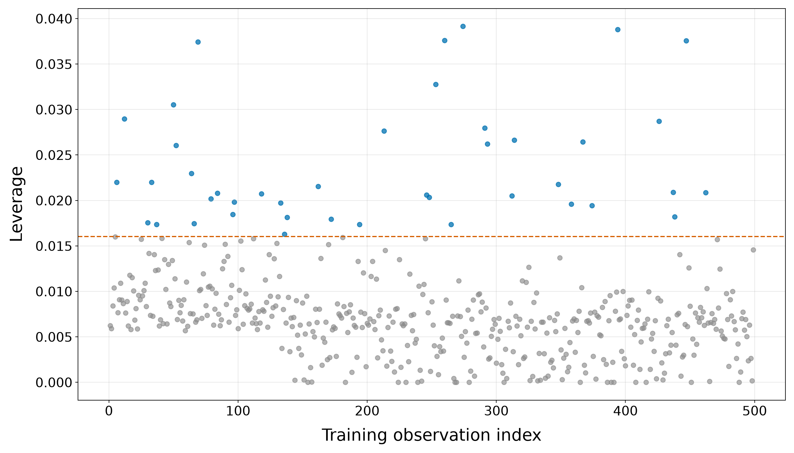
Under the refined model, 34 observations exceed \(4/n\) for Cook’s distance and 42 exceed \(2p/n\) for leverage. Only 12 observations exceed both screening references. The largest Cook’s distance is 0.0685, approximately 8.5 times the \(4/n\) screening value of 0.0080. The largest leverage is 0.0391, or approximately 2.44 times the \(2p/n\) screening reference of 0.0160. The most influential observation is borrower 111, with credit score 719, annual income CAD 96,900, and fitted default probability 4.1%. The top-five Table 8.60 makes it possible to see whether the influential observations arise from unusual credit-score/income combinations, outcomes that strongly contradict their fitted probabilities, or both.
As before, these flags are prompts for inspection rather than deletion rules. The quadratic income term changes the weighted regressor geometry as well as the fitted probabilities, so the identities of the most influential observations need not match those from either the simple model or the provisional linear-income model.
Final Goodness-of-Fit Summary
The diagnostic workflow has done more than evaluate the model initially selected in Section 8.11.5. It has also refined that model in response to information revealed by the training-data diagnostics. Recall that the provisional selected model contained linear terms for credit score and annual income. The functional-form checks subsequently provided evidence that a purely linear income contribution was too restrictive on the log-odds scale. Rather than ignoring that diagnostic finding, we returned to the model specification and retained income through both its centred linear and quadratic terms.
The refined model carried forward from this iterative process is therefore
\[ \operatorname{logit}(\pi_i) = \beta_0 + \beta_1x_{i,1}^{(50)} + \beta_2m_i + \beta_3m_i^2, \]
where
\[ m_i = x_{i,2}^{(10\text{k})} - \overline{x}_{2,\mathrm{train}}^{(10\text{k})} \]
is annual income, measured in CAD 10,000 units and centred using the training-data mean.
This specification retains credit score linearly while allowing the association between income and the log-odds of default to vary across the income range. It contains
\[ p=4 \]
estimated coefficients: the intercept, the credit-score coefficient, the linear centred-income coefficient, and the quadratic centred-income coefficient.
Before declaring this specification fixed, we bring together the entire diagnostic sequence in Table 8.62.
| Diagnostic question | Refined final-model result | Conclusion before freezing the specification |
|---|---|---|
| Income functional-form refinement | Adding the centred income-squared term gives \(G^2=6.224\) with \(1\) degree of freedom and a \(p\)-value equal to 0.0126. | The targeted training-data check supports incorporating income curvature while retaining the lower-order linear income term. |
| Information-criterion support for the refinement | AIC changes from 380.550 to 376.325; BIC changes from 393.187 to 393.176. | AIC provides additional support for the refinement, while BIC is essentially neutral. Neither criterion is treated as proof that the quadratic specification is true. |
| Numerical stability | Convergence: Yes; finite coefficients: Yes; finite standard errors: Yes; fitted probabilities range from 0.0000 to 0.9308; Fisher-information condition number: 12783.51. | No obvious numerical failure is present in the refined training fit. The condition number remains a warning measure rather than a universal pass/fail criterion. |
| Grouped calibration | The maximum absolute grouped discrepancy decreases from 9.4% under the provisional linear-income model to 6.8% after refinement. | The refinement does not create an obvious calibration deterioration; the grouped in-sample agreement instead improves on this descriptive measure. Final predictive calibration still belongs on the held-out testing data. |
| Deviance residuals | The number of observations with \(|r_{D,i}|>2\) decreases from 12 to 10. | Fewer outcomes cross this screening reference after the income functional form is refined, although remaining large residuals continue to identify outcomes that are difficult for the model to accommodate. |
| Pearson residuals | The number of observations with \(|r_{P,i}|>2\) decreases from 26 to 19. | The same favourable movement appears under the boundary-sensitive Pearson residual diagnostic. These counts remain screening summaries rather than formal outlier rules. |
| Remaining credit-score curvature | Conditional on the refined quadratic-income specification, adding \(c_i^2\) gives \(G^2=1.892\) with \(1\) degree of freedom and a \(p\)-value equal to 0.1690. | The targeted recheck does not provide strong evidence that a credit-score quadratic term is needed once income curvature has been incorporated. |
| Cook’s distance | 34 observations exceed \(4/n\); the largest Cook’s distance is 0.0685, approximately 8.5 times the screening reference. | A comparatively small set of cases merits inspection for influence, but crossing \(4/n\) is not an automatic deletion rule. |
| Leverage | 42 observations exceed \(2p/n\) with \(p=4\); the largest leverage is 0.0391, approximately 2.44 times the screening reference. | The quadratic-income specification changes the weighted regressor geometry and identifies unusual borrower profiles, but leverage alone does not determine influence. |
| Joint influence screening | 12 observations exceed both the Cook’s-distance and leverage screening references. | The overlap helps distinguish cases that combine an unusual weighted-regressor position with comparatively large influence, but these observations still require substantive inspection rather than automatic removal. |
Several conclusions emerge when these diagnostics are considered together rather than independently:
- First, the iterative model-development process produced a meaningful functional-form refinement. The likelihood-ratio test provided evidence against the purely linear income specification, and incorporating \(m_i^2\) improved the maximized training-data likelihood. AIC also favours the refined model, whereas BIC is effectively indifferent between the two specifications. Thus, the decision to retain quadratic income is driven primarily by the targeted functional-form evidence and likelihood comparison, with the information criteria providing complementary rather than decisive evidence.
- Second, correcting the income functional form did not appear to create a trade-off elsewhere in the diagnostic picture. The maximum grouped calibration discrepancy decreased from 9.4% to 6.8%. The number of deviance residuals beyond \(\pm2\) fell from 12 to 10, while the Pearson-residual count fell from 26 to 19. These reductions are not themselves formal model-selection criteria, but they provide a useful consistency check: addressing the detected curvature improves, rather than visibly worsens, several other training-data diagnostics.
- Third, after income curvature is incorporated, the targeted credit-score recheck gives a \(p\)-value of 0.1690. That result does not provide strong evidence that an additional credit-score quadratic term is needed. Together with the earlier empirical-logit assessment and quadratic check, this supports retaining credit score as linear on the log-odds scale for the present specification.
- Fourth, the influence diagnostics do not overturn the model-development decision. There are 34 Cook’s-distance flags, 42 leverage flags, and 12 observations satisfying both screening rules. These findings identify borrower profiles that deserve attention, particularly cases combining unusual credit-score/income information with outcomes that are difficult for the fitted model to accommodate. They do not, however, provide an automatic basis for deleting observations or abandoning the specification.
Heads-up on what it means to freeze the model!
Freezing the specification does not mean that the model has been proven correct or that all remaining diagnostic discrepancies have disappeared. At this point, freezing means that the training-data model-development stage has reached a defensible stopping point:
- the model can be estimated stably;
- the income functional-form problem detected during diagnostics has been addressed;
- the refined calibration and residual summaries do not show an obvious deterioration;
- the targeted recheck does not provide strong evidence that another credit-score quadratic term is needed; and
- the remaining leverage and influence flags are treated as observations to understand rather than automatic reasons to modify the model.

Most importantly, testing-data results are not allowed to send us back into model development. Once the model is frozen, the held-out observations are used to answer the prespecified predictive and inferential inquiries, not to decide which regressors or transformations should have been selected.
Taken together, the refined model meets the numerical-stability and targeted functional-form conditions used to conclude training-data model development in this chapter. Accordingly, the credit-score-plus-quadratic-income model is now frozen as the final specification for the chapter’s later predictive and inferential inquiries.
One implementation detail is especially important for preserving that fixed specification. The centring constant
\[ \overline{x}_{2,\mathrm{train}}^{(10\text{k})} \]
is part of the model definition. Its numerical value in the training data is 7.219. When the model is later applied to the testing observations, we must therefore construct
\[ m_i = x_{i,2}^{(10\text{k})} - \overline{x}_{2,\mathrm{train}}^{(10\text{k})} \]
using this same training-data mean. We must not recalculate the centring constant from the testing data. Doing so would allow information from the held-out sample to alter the transformation and would mean that we were no longer evaluating exactly the specification developed and frozen on the training data.
8.11.7 Interpreting Continuous Regressors
The refined final model contains two continuous borrower characteristics, but annual income now enters through both a linear and a quadratic term:
\[ \operatorname{logit}(\pi_i) = \beta_0 + \beta_1x_{i,1}^{(50)} + \beta_2m_i + \beta_3m_i^2, \]
where
\[ m_i = x_{i,2}^{(10\text{k})} - \overline{x}_{2,\mathrm{train}}^{(10\text{k})}. \]
This changes the interpretation of income substantially. Credit score still has a constant log-odds coefficient because it enters linearly and without an interaction. Income no longer has one constant odds ratio for every CAD 10,000 increase because its contribution depends on the starting income level.
Credit Score
For two borrowers with the same annual income whose credit scores differ by 50 points,
\[ \Delta \operatorname{logit}(\pi) = \beta_1. \]
Exponentiating gives
\[ \operatorname{OR}_{50\text{-point credit}} = \exp(\beta_1). \]
In the training-fitted refined model,
\[ \widehat{\beta}_1 = \text{-0.6822} \]
and
\[ \exp(\widehat{\beta}_1) = \text{0.506}. \]
Thus, comparing two borrowers with the same annual income, the borrower whose credit score is 50 points higher has fitted odds of default multiplied by 0.506. The fitted odds are approximately 49.4% lower. This remains an adjusted association with respect to income. It does not imply that experimentally increasing an individual’s credit score would cause the default odds to change by this amount.
Annual Income
Income requires a different interpretation because of the quadratic term. Suppose a borrower’s starting centred income is \(m\). Increasing annual income by CAD 10,000 increases income_10k by one unit, so the centred value changes from
\[ m \]
to
\[ m+1. \]
The change in the fitted log-odds is therefore
\[ \begin{aligned} \Delta\operatorname{logit}(\pi) &= \beta_2 + \beta_3 \left[ (m+1)^2-m^2 \right] \\ &= \beta_2 + \beta_3 (2m+1). \end{aligned} \tag{8.25}\]
The corresponding odds ratio for a CAD 10,000 increase beginning at centred income \(m\) is
\[ \operatorname{OR}_{\text{CAD }10,000}(m) = \exp \left[ \beta_2 + \beta_3 (2m+1) \right]. \]
Unlike the earlier linear-income model, this odds ratio depends on the starting income. For example, using the refined training model:
- increasing annual income from CAD 40,000 to CAD 50,000 multiplies the fitted odds of default by 0.890;
- increasing annual income from CAD 80,000 to CAD 90,000 multiplies the fitted odds by 0.523; and
- increasing annual income from CAD 120,000 to CAD 130,000 multiplies the fitted odds by 0.308.
These different multipliers are not contradictory. They are exactly what the retained quadratic term implies: the fitted association between income and log-odds can change as income changes. The sign of the fitted quadratic coefficient is negative. On the log-odds scale, this corresponds to concave curvature in the fitted income contribution, holding credit score fixed.
Heads-up on interpreting a regressor with a quadratic term!
Once a regressor appears both linearly and quadratically, its linear coefficient should not be interpreted as one universal finite-change odds ratio. In
\[ \beta_2m+\beta_3m^2, \]
the instantaneous slope of the fitted log-odds with respect to income measured in CAD 10,000 units is
\[ \frac{ \partial \operatorname{logit}(\pi) }{ \partial x_{2}^{(10\text{k})} } = \beta_2 + 2\beta_3m. \]
Thus, \(\beta_2\) describes the local log-odds slope at the training mean income, where \(m=0\). A finite CAD 10,000 contrast is instead given by Equation 8.25 and depends on the starting income.
Credit score remains different: because no credit-score quadratic term or interaction is retained, its 50-point odds ratio remains constant across the fitted model.
As throughout this chapter, these are adjusted model-based associations, not causal effects. They describe comparisons among model-comparable borrowers while holding the other retained borrower characteristic fixed. The numerical values above come from the refined training fit and are useful for model-development interpretation. The later predictive inquiry will apply this fixed specification to the testing regressors without refitting, while the final inferential inquiry will refit this same fixed specification on the testing observations.
8.11.8 Interpreting Categorical Regressors
The refined final model contains two continuous borrower characteristics (credit score and income) with income represented by both a linear and a quadratic term. Nevertheless, the larger candidate model gives us an important opportunity to preserve one of the central lessons of regression with categorical regressors: categorical coefficients are interpreted relative to a reference category.
Recall the two reference categories fixed during data wrangling:
-
Not marriedis the reference category for marital status; and -
Does not own homeis the reference category for home ownership.

In the larger candidate model, see Equation 8.22, the marital-status contribution can be written as
\[ \gamma_5d_{i,M}, \]
where \(d_{i,M}=1\) for Married and \(0\) for Not married. Holding credit score, income, age, education, and home ownership fixed, changing from the reference category Not married to Married changes the fitted log-odds of default by
\[ \gamma_5. \]
Exponentiating moves the comparison from the log-odds scale to the odds scale:
\[ \exp(\gamma_5). \]
Thus, \(\exp(\gamma_5)\) is the fitted odds ratio comparing a borrower recorded as Married with an otherwise model-comparable borrower recorded as Not married.
Similarly, the home-ownership contribution is
\[ \gamma_6d_{i,H}, \]
where \(d_{i,H}=1\) for Owns home and \(0\) for Does not own home. Holding credit score, income, age, education, and marital status fixed,
\[ \exp(\gamma_6) \]
is the fitted odds ratio comparing Owns home with the reference category Does not own home.
For the training-fitted larger candidate model,
\[ \exp(\widehat{\gamma}_5) = \text{1.225} \]
for Married versus Not married.
Because this odds ratio is greater than \(1\), the model associates Married with higher fitted odds of default relative to Not married, after holding the other regressors fixed. Numerically, the fitted odds are approximately
\[ 100 \times \left[ \exp(\widehat{\gamma}_5)-1 \right]\% = \text{22.5}\% \]
higher for a borrower recorded as Married than for an otherwise model-comparable borrower recorded as Not married. With the rendered estimate, this corresponds to an odds ratio of about \(1.225\), or approximately 22.5% higher fitted odds of default.
For home ownership,
\[ \exp(\widehat{\gamma}_6) = \text{1.274} \]
for Owns home versus Does not own home.
Again, the estimated odds ratio is greater than \(1\). Holding the other regressors in the larger candidate model fixed, a borrower recorded as Owns home has fitted odds of default approximately
\[ 100 \left[ \exp(\widehat{\gamma}_6)-1 \right]\% = \text{27.4}\% \]
higher than an otherwise model-comparable borrower recorded as Does not own home. With the rendered estimate, the odds ratio is about \(1.274\), corresponding to approximately 27.4% higher fitted odds of default.
These percentages describe relative changes in the odds, not percentage-point changes in the probability of default. For example, an odds ratio of \(1.274\) does not mean that owning a home is associated with a \(27.4\)-percentage-point increase in default probability. As discussed in Section 8.8.7, the probability difference corresponding to a fixed odds ratio depends on the borrower’s starting fitted probability.
The word adjusted is also important here. The marital-status comparison holds credit score, income, age, education, and home ownership fixed; the home-ownership comparison similarly holds the remaining included regressors fixed. These conditional comparisons can therefore differ substantially from the marginal default proportions we observed during EDA.
Finally, these are model-based associations rather than causal effects. The larger candidate model is fitted to observational borrower characteristics, so the coefficients do not imply that changing a person’s marital status or home-ownership status would cause their default odds to change by the estimated amounts.
Heads-up on reference-category interpretations!
A categorical coefficient does not compare a category with “zero” in a quantitative sense. For marital status, the indicator is coded
\[ d_{i,M}=0 \]
for the reference category Not married and
\[ d_{i,M}=1 \]
for Married. The coefficient therefore compares those two categories. Likewise, the home-ownership indicator compares Owns home with Does not own home.
Changing the reference category would change the sign and numerical form of the corresponding coefficient, but it would not change the fitted probabilities produced by the model. In particular, if the reference category were reversed, the corresponding odds ratio would become its reciprocal. For example, an odds ratio of \(1.225\) for Married versus Not married corresponds to an odds ratio of approximately
\[ \frac{1}{1.225} \approx 0.816 \]
for Not married versus Married. The substantive comparison is the same; only its direction has been reversed.
These categorical odds ratios are presented only as an interpretation illustration from the larger candidate model. Marital status and home ownership were not retained in the refined final specification, so these training-data candidate-model coefficients are not part of the chapter’s final inferential conclusions. Their inclusion here nevertheless preserves an important general lesson: when Binary Logistic regression contains categorical regressors, the software’s model matrix represents the non-reference categories with indicator columns, and the resulting coefficients describe log-odds contrasts relative to the chosen reference category, holding the other included regressors fixed.
8.12 Prediction with Binary Logistic Regression
The model-development stage is now complete. Using only the training data, we explored the borrower characteristics, compared candidate specifications, diagnosed the selected model, refined the income functional form, and then froze the final specification. We can therefore turn to the chapter’s predictive inquiry:
How accurately can the frozen training-fitted model estimate the probability of loan default for held-out borrowers, and how does it compare with a simple event-rate baseline?
The distinction between frozen specification and held-out evaluation is crucial. The model used throughout this section is the final_model already fitted to the training data. We will supply the testing regressor values to that fitted model, but we will not refit its coefficients using the testing outcomes before making predictions. The observed testing outcomes enter only when we evaluate those predictions.

The final training specification is
\[ \operatorname{logit}(\pi_i) = \beta_0 + \beta_1x_{i,1}^{(50)} + \beta_2m_i + \beta_3m_i^2, \]
where
\[ m_i = x_{i,2}^{(10\text{k})} - \overline{x}_{2,\mathrm{train}}^{(10\text{k})}. \]
The training-data centring constant is therefore part of the frozen predictive recipe. We must use the same training mean when constructing the income terms for each held-out borrower.
8.12.1 Predicted Event Probabilities
For a held-out borrower \(j\), let
\[ x_{j,1}^{(50)} \]
denote the borrower’s credit score measured in 50-point units and define
\[ m_j = x_{j,2}^{(10\text{k})} - \overline{x}_{2,\mathrm{train}}^{(10\text{k})}. \]
The frozen training fit produces the linear predictor
\[ \widehat{\eta}_j = \widehat{\beta}_0 + \widehat{\beta}_1x_{j,1}^{(50)} + \widehat{\beta}_2m_j + \widehat{\beta}_3m_j^2. \]
Applying the inverse-logit transformation gives the predicted event probability
\[ \widehat{\pi}_j = \frac{ \exp(\widehat{\eta}_j) }{ 1+\exp(\widehat{\eta}_j) }. \tag{8.26}\]
Thus, \(\widehat{\pi}_j\) is the model’s estimated conditional probability of default for a held-out borrower with the recorded regressor values supplied to the frozen model.
A prediction such as
\[ \widehat{\pi}_j=0.30 \]
does not mean that the borrower is predicted to default by \(30\%\), nor does it mean that the observed binary outcome should equal \(0.30\). The eventual response is still either \(0\) or \(1\). The value \(0.30\) instead represents the model’s estimated probability of the event \(Y_j=1\) conditional on the borrower’s regressor information.
First, we construct the testing-data version of the centred income regressor using the training-data mean, then ask the already fitted model for response-scale probabilities.
prediction_testing_data <- testing_data |>
mutate(income_10k_centered = income_10k - income_10k_training_mean)
prediction_testing_data[["predicted_probability"]] <- predict(final_model, newdata =
prediction_testing_data, type = "response")
prediction_preview <- prediction_testing_data |>
select(borrower_id, credit_score, income, predicted_probability) |>
slice_head(n = 10) |>
transmute(`Borrower ID` = borrower_id, `Credit score` = credit_score,
`Annual income (CAD)` = income, `Predicted default probability` =
round(predicted_probability, 3))
prediction_preview |>
kable(align = c("c", "c", "c", "c"), format.args = list(big.mark = ","))| Borrower ID | Credit score | Annual income (CAD) | Predicted default probability |
|---|---|---|---|
| 1 | 850 | 154,100 | 0.000 |
| 2 | 606 | 34,100 | 0.698 |
| 3 | 846 | 73,000 | 0.035 |
| 4 | 702 | 41,300 | 0.381 |
| 5 | 843 | 50,800 | 0.074 |
| 6 | 610 | 33,400 | 0.686 |
| 7 | 572 | 24,600 | 0.772 |
| 8 | 795 | 57,700 | 0.115 |
| 10 | 690 | 72,300 | 0.237 |
| 12 | 840 | 58,200 | 0.065 |
prediction_testing_data = (testing_data.copy())
prediction_testing_data["income_10k_centered"] = (prediction_testing_data["income_10k"]
- income_10k_training_mean)
prediction_testing_data["predicted_probability"] = final_model.predict(
prediction_testing_data)
prediction_preview = (prediction_testing_data[
["borrower_id", "credit_score", "income", "predicted_probability",
]].head(10)
.rename(columns={"borrower_id": "Borrower ID", "credit_score": "Credit score", "income":
"Annual income (CAD)", "predicted_probability":
"Predicted default probability",
}).copy())
prediction_preview["Predicted default probability"] = prediction_preview[
"Predicted default probability"].round(3)
prediction_preview_html = (scrollable_table_html(prediction_preview))| Borrower ID | Credit score | Annual income (CAD) | Predicted default probability |
|---|---|---|---|
| 1 | 850.0 | 154100.0 | 0.000 |
| 2 | 606.0 | 34100.0 | 0.698 |
| 3 | 846.0 | 73000.0 | 0.035 |
| 4 | 702.0 | 41300.0 | 0.381 |
| 5 | 843.0 | 50800.0 | 0.074 |
| 6 | 610.0 | 33400.0 | 0.686 |
| 7 | 572.0 | 24600.0 | 0.772 |
| 8 | 795.0 | 57700.0 | 0.115 |
| 10 | 690.0 | 72300.0 | 0.237 |
| 12 | 840.0 | 58200.0 | 0.065 |
Notice what was not used to create these probabilities: the testing values of defaulted. Equation Equation 8.26 uses only the frozen training coefficients, the held-out regressor values, and the training-derived income centring constant. We now preserve these probabilities and use the observed testing outcomes only for final predictive evaluation.
Heads-up on prediction versus refitting!
Calling predict() does not estimate a new Logistic regression model. For the predictive inquiry, the coefficients
\[ \widehat{\beta}_0, \widehat{\beta}_1, \widehat{\beta}_2, \widehat{\beta}_3 \]
remain exactly those learned from the training data. The testing regressors are inserted into that frozen fitted function to obtain \(\widehat{\pi}_j\).

Later, the inferential inquiry will deliberately refit the fixed specification to the testing observations. That is a different branch of the analysis and must not be confused with the held-out prediction performed here.
8.12.2 Predicted Probabilities versus Predicted Classes
Binary Logistic regression naturally produces probabilities, not class labels. A predicted class requires an additional decision rule. Hence, for a chosen classification threshold \(c\in(0,1)\), we could define
\[ \widehat{Y}_j(c) = \begin{cases} 1, & \widehat{\pi}_j\geq c, \\[4pt] 0, & \widehat{\pi}_j<c. \end{cases} \]
The distinction is critical because the two objects answer different questions.
| Predictive object | Example | What it communicates |
|---|---|---|
| Predicted probability | \(\widehat{\pi}_j=0.47\) | The fitted model assigns a 47% probability of default to this borrower’s regressor profile. |
| Predicted class at \(c=0.50\) | \(\widehat{Y}_j=0\) | Under this particular threshold rule, the borrower is placed in the non-default class. |
| Predicted class at \(c=0.40\) | \(\widehat{Y}_j=1\) | The same probability is placed in the default class under a lower threshold. |
As indicated in Table 8.65, the probability \(\widehat{\pi}_j\) is determined by the fitted Logistic regression model. The class label \(\widehat{Y}_j(c)\) depends on both the model and the chosen threshold. Consequently, two analysts using the same fitted probabilities can obtain different classifications if their decision thresholds differ. Therefore, probability evaluation should come first. A model can produce useful probability estimates even when a particular classification threshold performs poorly, and a seemingly successful threshold can sometimes hide poorly estimated probabilities.
8.12.3 Classification Thresholds and Asymmetric Costs
The familiar threshold
\[ c=0.5 \]
is a convention, not a mathematical property of Binary Logistic regression. Nothing in the Bernoulli random component, the logit link, or maximum likelihood estimation requires a predicted probability above \(0.5\) to be labelled as the event. Instead, a decision threshold should reflect the decision context.
Suppose, only for illustration, that the practical task is to convert a borrower’s predicted default probability into one of two classifications:
- classify the borrower as default; or
- classify the borrower as non-default.
There are then four possible combinations of the classification and the borrower’s eventual outcome.
| Classification | Borrower eventually defaults | Borrower does not default |
|---|---|---|
| Default | Correct classification: cost \(0\) | False positive: cost \(C_{\mathrm{FP}}\) |
| Non-default | False negative: cost \(C_{\mathrm{FN}}\) | Correct classification: cost \(0\) |
Here,
- \(C_{\mathrm{FN}}\) is the cost attached to a false negative, in which a borrower who eventually defaults is classified as non-default; and
- \(C_{\mathrm{FP}}\) is the cost attached to a false positive, in which a borrower who does not default is classified as default.
For simplicity, we assign a cost of zero to correct classifications. This lets us focus entirely on the trade-off between the two kinds of classification errors.
Now, consider a borrower whose fitted model gives predicted default probability
\[ \widehat{\pi}. \]
The corresponding predicted probability of not defaulting is
\[ 1-\widehat{\pi}. \]
The question is:
Which of the two classifications has the smaller expected misclassification cost for this borrower?
Expected Cost of Classifying the Borrower as Non-Default
Suppose first that we classify the borrower as non-default. There are two possible eventual outcomes:
- with predicted probability \(\widehat{\pi}\), the borrower defaults and we incur the false-negative cost \(C_{\mathrm{FN}}\);
- with predicted probability \(1-\widehat{\pi}\), the borrower does not default and the classification is correct, so the cost is \(0\).
The expected cost of choosing non-default is therefore
\[ \begin{aligned} \mathbb{E} \left( \text{cost} \mid \text{classify as non-default} \right) &= C_{\mathrm{FN}} \widehat{\pi} + 0 \left( 1-\widehat{\pi} \right) \\ &= C_{\mathrm{FN}} \widehat{\pi}. \end{aligned} \]
Expected Cost of Classifying the Borrower as Default
Now, suppose instead that we classify the borrower as default. Again, there are two possible eventual outcomes:
- with predicted probability \(\widehat{\pi}\), the borrower defaults and the classification is correct, so the cost is \(0\);
- with predicted probability \(1-\widehat{\pi}\), the borrower does not default and we incur the false-positive cost \(C_{\mathrm{FP}}\).
The expected cost of choosing default is therefore
\[ \begin{aligned} \mathbb{E} \left( \text{cost} \mid \text{classify as default} \right) &= 0 \widehat{\pi} + C_{\mathrm{FP}} \left( 1-\widehat{\pi} \right) \\ &= C_{\mathrm{FP}} \left( 1-\widehat{\pi} \right). \end{aligned} \]
We choose the classification with the smaller expected cost. Therefore, we classify the borrower as default whenever
\[ C_{\mathrm{FP}} \left( 1-\widehat{\pi} \right) < C_{\mathrm{FN}} \widehat{\pi}. \]
We can now solve this inequality explicitly for \(\widehat{\pi}\). Expanding the left-hand side gives
\[ C_{\mathrm{FP}} - C_{\mathrm{FP}} \widehat{\pi} < C_{\mathrm{FN}} \widehat{\pi}. \]
Moving the term involving \(\widehat{\pi}\) on the left to the right gives
\[ C_{\mathrm{FP}} < C_{\mathrm{FP}} \widehat{\pi} + C_{\mathrm{FN}} \widehat{\pi}, \]
and factoring out \(\widehat{\pi}\) gives
\[ C_{\mathrm{FP}} < \left( C_{\mathrm{FP}} + C_{\mathrm{FN}} \right) \widehat{\pi}. \]
Because the two costs are non-negative, we can divide by their sum to obtain
\[ \widehat{\pi} > \frac{ C_{\mathrm{FP}} }{ C_{\mathrm{FP}} + C_{\mathrm{FN}} }. \]
This gives the cost-based classification threshold
\[ c = \frac{ C_{\mathrm{FP}} }{ C_{\mathrm{FP}} + C_{\mathrm{FN}} }. \tag{8.27}\]
The resulting decision rule is therefore
\[ \widehat{Y} = \begin{cases} 1, & \widehat{\pi}>c, \\[4pt] 0, & \widehat{\pi}\leq c, \end{cases} \]
where \(\widehat{Y}=1\) denotes a predicted default and \(\widehat{Y}=0\) denotes a predicted non-default. The treatment of the exact equality \(\widehat{\pi}=c\) is a tie-breaking convention and does not change the main argument.
The formula also makes the role of the two costs transparent. If
\[ C_{\mathrm{FP}} = C_{\mathrm{FN}}, \]
then
\[ c = \frac{ C_{\mathrm{FP}} }{ 2C_{\mathrm{FP}} } = 0.5. \]
Thus, the familiar \(0.5\) threshold emerges only when false positives and false negatives are assigned equal costs under this simple decision framework.
If false negatives are more costly,
\[ C_{\mathrm{FN}} > C_{\mathrm{FP}}, \]
the denominator in Equation 8.27 becomes relatively large compared with its numerator, so \(c<0.5\). Then, we require a smaller predicted probability before classifying a borrower as default, making the rule more sensitive to potential defaults.
Conversely, if false positives are more costly,
\[ C_{\mathrm{FP}} > C_{\mathrm{FN}}, \]
then \(c>0.5\). We require stronger predicted evidence of default before assigning the default classification.
Heads-up on threshold selection and the testing data!
A classification threshold is itself a decision choice. We should not search over many thresholds on the testing outcomes and then report whichever one makes the held-out classification metrics look best. That would turn the testing set into another tuning sample. In a real application, a threshold could be fixed from externally specified costs, operational constraints, regulation, fairness requirements, or a separate validation process. None of those quantities is supplied by this teaching dataset.
For that reason, when we later report threshold-dependent metrics, we will use
\[ c=0.5 \]
only as a transparent conventional illustration. We do not claim that \(0.5\) is an optimal lending threshold.
Probability-based performance, discrimination, and calibration do not require us to commit to this threshold, so they remain the primary evidence for the chapter’s predictive inquiry.
8.12.4 A Baseline Probability Model
A predictive model should be compared with something simpler than itself. Otherwise, even a poor model can look impressive merely because it produces borrower-specific numbers. Our prespecified baseline is the training-set event rate:
\[ \widehat{\pi}_{\mathrm{base}} = \frac{ 1 }{ n_{\mathrm{train}} } \sum_{i\in\mathrm{train}} y_i. \]
This baseline ignores all borrower characteristics and assigns the same probability
\[ \widehat{\pi}_{\mathrm{base}} \]
to every held-out borrower. Importantly, the value is estimated from the training outcomes, not from the testing outcomes.
training_event_rate <- mean(training_data$defaulted)
prediction_testing_data <- prediction_testing_data |>
mutate(baseline_probability = training_event_rate)
cat(sprintf(
"Training-set default proportion: %.3f\nBaseline probability assigned to every held-out borrower: %.3f\n",
training_event_rate, training_event_rate))Training-set default proportion: 0.277
Baseline probability assigned to every held-out borrower: 0.277training_event_rate = (training_data["defaulted"].mean())
prediction_testing_data["baseline_probability"] = training_event_rate
print(f"Training-set default proportion: " f"{training_event_rate:.3f}\n"
f"Baseline probability assigned to every " f"held-out borrower: "
f"{training_event_rate:.3f}")Training-set default proportion: 0.277
Baseline probability assigned to every held-out borrower: 0.277For this training split, the baseline assigns a default probability of 27.7% to every testing borrower. It therefore captures only the overall event frequency learned during training. The Logistic model must improve on this constant benchmark by using credit score and income to distinguish among borrowers. The baseline is especially useful for the probability-based metrics below. A borrower-specific model that cannot improve meaningfully on a constant training-event-rate probability has limited predictive value, regardless of how sophisticated its coefficient structure appears.
8.12.5 Probability-Based Predictive Metrics
The first evaluation asks whether the probabilities themselves are accurate. We use two complementary scoring rules: log loss and the Brier score.
Log Loss
For \(n_{\mathrm{test}}\) held-out borrowers, log loss is
\[ \operatorname{LogLoss} = - \frac{ 1 }{ n_{\mathrm{test}} } \sum_{j=1}^{n_{\mathrm{test}}} \left[ y_j\log(\widehat{\pi}_j) + (1-y_j) \log(1-\widehat{\pi}_j) \right]. \tag{8.28}\]
Smaller values are better. Log loss assigns especially large penalties to confidently wrong probabilities. For example, observing a default when the model assigns a probability extremely close to zero contributes much more loss than observing a default when the model assigns a moderate probability such as \(0.40\).
Brier Score
The Brier score is the mean squared difference between the binary outcome and the predicted probability:
\[ \operatorname{Brier} = \frac{ 1 }{ n_{\mathrm{test}} } \sum_{j=1}^{n_{\mathrm{test}}} \left( y_j-\widehat{\pi}_j \right)^2. \tag{8.29}\]
Again, smaller values are better. Unlike ordinary classification accuracy, both Equation 8.28 and Equation 8.29 preserve the full probability information rather than first reducing predictions to \(0/1\) labels.
Now, we compute both metrics for the frozen Logistic model and for the training-event-rate baseline.
binary_log_loss <- function(observed, predicted) {
predicted_safe <- pmin(pmax(predicted, 1e-15), 1 - 1e-15)
-mean(observed * log(predicted_safe) + (1 - observed) * log(1 - predicted_safe))
}
binary_brier_score <- function(observed, predicted) {
mean((observed - predicted)^2)
}
probability_metric_summary <- tibble(
Model = c("Frozen Binary Logistic regression model", "Training event-rate baseline"),
`Log loss` = c(binary_log_loss(prediction_testing_data$defaulted,
prediction_testing_data$predicted_probability),
binary_log_loss(prediction_testing_data$defaulted,
prediction_testing_data$baseline_probability)),
`Brier score` = c(binary_brier_score(prediction_testing_data$defaulted,
prediction_testing_data$predicted_probability),
binary_brier_score(prediction_testing_data$defaulted,
prediction_testing_data$baseline_probability))) |>
mutate(across(c(`Log loss`, `Brier score`), ~ round(.x, 4)))
probability_metric_summary |>
kable(align = c("c", "c", "c"))| Model | Log loss | Brier score |
|---|---|---|
| Frozen Binary Logistic regression model | 0.3689 | 0.1192 |
| Training event-rate baseline | 0.5905 | 0.2005 |
probability_metric_summary = pd.DataFrame({
"Model": ["Frozen Binary Logistic regression model", "Training event-rate baseline",
], "Log loss": [log_loss(prediction_testing_data["defaulted"],
prediction_testing_data["predicted_probability"], labels=[0, 1,
],
), log_loss(prediction_testing_data["defaulted"],
prediction_testing_data["baseline_probability"], labels=[0, 1,
],
),
], "Brier score": [brier_score_loss(prediction_testing_data["defaulted"],
prediction_testing_data["predicted_probability"],
), brier_score_loss(prediction_testing_data["defaulted"],
prediction_testing_data["baseline_probability"],
),
],
})
probability_metric_summary[["Log loss", "Brier score",
]] = probability_metric_summary[["Log loss", "Brier score",
]].round(4)
probability_metric_summary_html = (scrollable_table_html(probability_metric_summary))| Model | Log loss | Brier score |
|---|---|---|
| Frozen Binary Logistic regression model | 0.3689 | 0.1192 |
| Training event-rate baseline | 0.5905 | 0.2005 |
According to Table 8.66, for the held-out borrowers, the frozen Logistic model has a log loss of 0.3689, compared with 0.5905 for the baseline. This is a reduction of approximately 37.5% relative to the baseline log loss. Recall what this comparison represents. The baseline assigns the same probability of default to every testing borrower, namely the event rate estimated from the training data. The frozen Logistic model instead produces borrower-specific probabilities from credit score and the refined income relationship. Its lower held-out log loss therefore indicates that these borrower-specific probabilities describe the unseen \(0/1\) outcomes better than simply assigning everyone the same training-derived default probability. Because log loss penalizes confidently incorrect probabilities particularly strongly, the improvement also suggests that the gain is not being overwhelmed by a large number of extremely confident mistakes.
The same pattern appears for the Brier score. The frozen Logistic model has a Brier score of 0.1192, compared with 0.2005 for the baseline. This corresponds to a reduction of approximately 40.5% relative to the baseline Brier score.
As indicated in Equation 8.29, because the Brier score averages the squared discrepancies
\[ \left( y_j-\widehat{\pi}_j \right)^2, \]
its smaller value tells us that, on average, the borrower-specific probabilities lie closer to the observed held-out outcomes than the constant baseline probabilities do.
Taken together, the two scoring rules tell a consistent held-out story: the frozen model improves on the training-event-rate baseline under both probability-based scoring rules. This provides evidence that the regressors and functional form developed using the training data add useful predictive information for previously unseen borrowers. That said, these results should still be interpreted narrowly. A lower log loss or Brier score does not by itself establish that the predicted probabilities are perfectly calibrated, nor does either metric tell us how well borrowers are ordered from lower to higher estimated risk. We therefore next examine discrimination and ranking, before returning separately to held-out calibration.
8.12.6 Discrimination and Ranking Metrics
Discrimination asks whether borrowers who default tend to receive higher predicted probabilities than borrowers who do not default. This is different from calibration: a model can rank borrowers well while its numerical probabilities are systematically too high or too low. We use two threshold-free ranking summaries.
Receiver Operating Characteristic Curve and Area Under the Curve
The receiver operating characteristic (ROC) curve evaluates how well the model separates observed defaults from observed non-defaults as we vary the classification threshold. For testing borrower \(j\), let
- \(y_j=1\) denote an observed default and \(y_j=0\) an observed non-default;
- \(\widehat{\pi}_j\) denote the frozen model’s predicted probability of default; and
- \(c\) denote a classification threshold between \(0\) and \(1\).
At threshold \(c\), define the predicted class as
\[ \widehat{y}_j(c) = \begin{cases} 1, & \widehat{\pi}_j>c, \\[4pt] 0, & \widehat{\pi}_j\leq c. \end{cases} \]
Thus, \(\widehat{y}_j(c)=1\) means that borrower \(j\) is classified as a predicted default at threshold \(c\), whereas \(\widehat{y}_j(c)=0\) means that the borrower is classified as a predicted non-default.
For a particular threshold, the testing observations can then be divided into four groups:
- \(TP\), the number of true positives: borrowers who defaulted and were classified as default;
- \(FN\), the number of false negatives: borrowers who defaulted but were classified as non-default;
- \(FP\), the number of false positives: borrowers who did not default but were classified as default; and
- \(TN\), the number of true negatives: borrowers who did not default and were classified as non-default.
More explicitly, at threshold \(c\),
\[ TP(c) = \sum_j \mathbb{1} \left\{ y_j=1, \widehat{y}_j(c)=1 \right\}, \]
\[ FN(c) = \sum_j \mathbb{1} \left\{ y_j=1, \widehat{y}_j(c)=0 \right\}, \]
\[ FP(c) = \sum_j \mathbb{1} \left\{ y_j=0, \widehat{y}_j(c)=1 \right\}, \]
and
\[ TN(c) = \sum_j \mathbb{1} \left\{ y_j=0, \widehat{y}_j(c)=0 \right\}, \]
where \(\mathbb{1}\{\cdot\}\) is an indicator function that equals \(1\) when the condition inside the braces is true and \(0\) otherwise.
Among borrowers who actually defaulted, the proportion correctly classified as default is the sensitivity, also called the true-positive rate:
\[ \operatorname{Sensitivity}(c) = \frac{ TP(c) }{ TP(c)+FN(c) }. \]
The denominator
\[ TP(c)+FN(c) \]
is the total number of observed defaults in the testing data. Sensitivity therefore answers the question:
Among the borrowers who actually defaulted, what proportion did the classification rule identify as defaults?
Among borrowers who did not default, the proportion correctly classified as non-default is the specificity:
\[ \operatorname{Specificity}(c) = \frac{ TN(c) }{ TN(c)+FP(c) }. \]
Its denominator
\[ TN(c)+FP(c) \]
is the total number of observed non-defaults.
The ROC curve uses the complement of specificity, called the false-positive rate:
\[ \operatorname{FPR}(c) = 1- \operatorname{Specificity}(c) = \frac{ FP(c) }{ FP(c)+TN(c) }. \]
This quantity answers a different question:
Among the borrowers who actually did not default, what proportion were incorrectly classified as defaults?
For each possible threshold \(c\), we therefore obtain the coordinate
\[ \left[ \operatorname{FPR}(c), \operatorname{Sensitivity}(c) \right]. \]
The ROC curve plots the false-positive rate on the horizontal axis against sensitivity on the vertical axis as \(c\) varies across the possible thresholds.
Changing \(c\) creates a trade-off. A lower threshold classifies more borrowers as defaults, which usually increases sensitivity but also increases the false-positive rate. A higher threshold classifies fewer borrowers as defaults, which usually decreases both quantities. The ROC curve displays this trade-off over the full collection of thresholds rather than committing to one particular classification rule.
The ROC area under the curve (AUC) summarizes this ranking performance in a single number. Conceptually,
\[ \operatorname{ROC\ AUC} = \int_0^1 \operatorname{Sensitivity}(u) \,du, \]
where \(u\) represents the false-positive rate along the ROC curve. A ROC AUC of \(0.5\) corresponds to no useful ranking beyond chance, while values increasingly closer to \(1\) indicate stronger separation between borrowers who default and borrowers who do not. An AUC below \(0.5\) indicates that the model’s ranking is systematically oriented in the wrong direction.
There is also a useful probability interpretation. Let \(\widehat{\pi}_{D}\) denote the predicted default probability for a randomly selected borrower who actually defaulted, and let \(\widehat{\pi}_{N}\) denote the predicted probability for a randomly selected borrower who did not default. Then
\[ \operatorname{ROC\ AUC} = \Pr \left( \widehat{\pi}_{D} > \widehat{\pi}_{N} \right) + \frac{1}{2} \Pr \left( \widehat{\pi}_{D} = \widehat{\pi}_{N} \right). \]
Thus, ROC AUC measures how often the model assigns the observed default a higher risk score than the observed non-default when one borrower is selected from each group, with tied scores contributing one-half.
Importantly, ROC AUC evaluates ranking or discrimination, not probability accuracy. A model can rank defaults above non-defaults very well while still assigning probabilities that are systematically too high or too low. We therefore examine held-out calibration separately in Section 8.12.8.
Precision–Recall Curve and Precision–Recall Area Under the Curve
The precision–recall (PR) curve instead plots
\[ \operatorname{Precision} = \frac{ TP }{ TP+FP } \]
against sensitivity, which is also called recall. PR curves focus attention on performance for the event class and are particularly informative when the event is less common than the non-event. We summarize the PR curve using its trapezoidal area, denoted PR AUC here. Unlike ROC AUC, the natural no-skill precision reference depends on the event prevalence. For the testing sample, that reference is the held-out default proportion.
Let us begin computing all these metrics.
testing_event_rate <- mean(
prediction_testing_data$defaulted
)
roc_thresholds <- c(Inf,
sort(unique(prediction_testing_data$predicted_probability), decreasing = TRUE),
-Inf
)
roc_curve_data <- bind_rows(
lapply(roc_thresholds, function(threshold_value) {predicted_positive <-
prediction_testing_data$predicted_probability >= threshold_value
true_positive <- sum(prediction_testing_data$defaulted == 1 & predicted_positive)
false_positive <- sum(prediction_testing_data$defaulted == 0 & predicted_positive)
false_negative <- sum(prediction_testing_data$defaulted == 1 & !predicted_positive)
true_negative <- sum(prediction_testing_data$defaulted == 0 & !predicted_positive)
tibble(threshold = threshold_value, false_positive_rate = false_positive /
(false_positive + true_negative), sensitivity = true_positive /
(true_positive + false_negative))})
)
roc_auc_value <- sum(
diff(roc_curve_data$false_positive_rate) *
(head(roc_curve_data$sensitivity, -1) + tail(roc_curve_data$sensitivity, -1)) /
2
)
pr_thresholds <- roc_thresholds
pr_curve_data <- bind_rows(
lapply(pr_thresholds, function(threshold_value) {predicted_positive <-
prediction_testing_data$predicted_probability >= threshold_value
true_positive <- sum(prediction_testing_data$defaulted == 1 & predicted_positive)
false_positive <- sum(prediction_testing_data$defaulted == 0 & predicted_positive)
false_negative <- sum(prediction_testing_data$defaulted == 1 & !predicted_positive)
predicted_positive_count <- true_positive + false_positive
tibble(threshold = threshold_value, recall = true_positive /
(true_positive + false_negative),
precision = ifelse(predicted_positive_count == 0, 1, true_positive /
predicted_positive_count))})
) |>
arrange(recall)
pr_auc_value <- sum(
diff(pr_curve_data$recall) *
(head(pr_curve_data$precision, -1) + tail(pr_curve_data$precision, -1)) /
2
)
discrimination_summary <- tibble(
Metric = c("ROC AUC", "PR AUC"),
`Selected model` = c(roc_auc_value, pr_auc_value),
`Reference value` = c(0.5, testing_event_rate)
) |>
mutate(
across(c(`Selected model`, `Reference value`), ~ round(.x, 4))
)testing_event_rate = (prediction_testing_data["defaulted"].mean())
false_positive_rate, sensitivity, _ = roc_curve(prediction_testing_data["defaulted"],
prediction_testing_data["predicted_probability"], drop_intermediate=False,
)
roc_curve_data = pd.DataFrame({"false_positive_rate": false_positive_rate, "sensitivity":
sensitivity,
})
roc_auc_value = roc_auc_score(prediction_testing_data["defaulted"],
prediction_testing_data["predicted_probability"],
)
precision_values, recall_values, _ = (
precision_recall_curve(prediction_testing_data["defaulted"],
prediction_testing_data["predicted_probability"],
))
pr_curve_data = pd.DataFrame({"recall": recall_values[::-1], "precision":
precision_values[::-1],
})
pr_auc_value = np.trapezoid(pr_curve_data["precision"], pr_curve_data["recall"],
)
discrimination_summary = pd.DataFrame({"Metric": ["ROC AUC", "PR AUC",
], "Selected model": [roc_auc_value, pr_auc_value,
], "Reference value": [0.5, testing_event_rate,
],
})
discrimination_summary[["Selected model", "Reference value",
]] = discrimination_summary[["Selected model", "Reference value",
]].round(4)First, we visualize the ROC curve.
roc_plot <- ggplot(roc_curve_data, aes(x = false_positive_rate, y = sensitivity)) +
geom_abline(intercept = 0, slope = 1, colour = "#D55E00", linetype = "dashed",
linewidth = 1) +
geom_line(colour = "#0072B2", linewidth = 1.4) +
coord_equal(xlim = c(0, 1), ylim = c(0, 1)) +
scale_x_continuous(labels = scales::label_percent(accuracy = 1)) +
scale_y_continuous(labels = scales::label_percent(accuracy = 1)) +
theme_bw() +
theme(axis.text = element_text(size = 15.5), axis.title = element_text(size = 20),
panel.grid.minor = element_blank()) +
labs(x = "\n False-positive rate", y = "Sensitivity")
roc_plot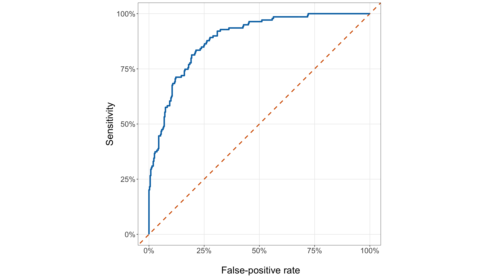
from matplotlib.ticker import PercentFormatter
roc_plot, ax = plt.subplots(figsize=(14, 8))
_ = ax.plot([0,1,], [0,1,], linestyle="--", linewidth=1.5, color="#D55E00",
)
_ = ax.plot(roc_curve_data["false_positive_rate"], roc_curve_data["sensitivity"],
linewidth=2.0, color="#0072B2",
)
_ = ax.set_xlim(0,1,)
_ = ax.set_ylim(0,1,)
_ = ax.set_aspect("equal", adjustable="box",
)
_ = ax.set_xlabel("\n False-positive rate", fontsize=20,
)
_ = ax.set_ylabel("Sensitivity", fontsize=20, labelpad=12,
)
_ = ax.tick_params(axis="both", labelsize=15.5,
)
_ = ax.xaxis.set_major_formatter(PercentFormatter(xmax=1, decimals=0,
))
_ = ax.yaxis.set_major_formatter(PercentFormatter(xmax=1, decimals=0,
))
_ = ax.grid(True, which="major", alpha=0.3,
)
_ = ax.grid(False, which="minor",
)
_ = roc_plot.tight_layout()
plt.show()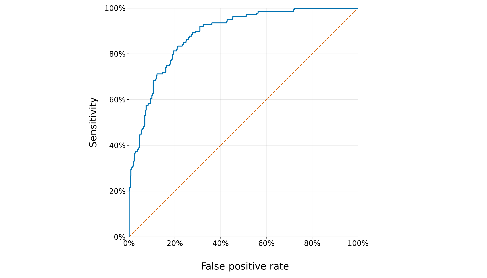
The held-out ROC AUC is 0.886. Relative to the no-discrimination reference of \(0.5\), this value indicates strong separation of observed defaults from non-defaults in the held-out sample. It remains a ranking measure: ROC AUC does not tell us whether a predicted probability such as \(0.70\) corresponds to an event frequency close to \(70\%\).
Next, we inspect the precision–recall curve.
pr_plot <- ggplot(pr_curve_data, aes(x = recall, y = precision)) +
geom_hline(yintercept = testing_event_rate, colour = "#D55E00", linetype = "dashed",
linewidth = 1) +
geom_line(colour = "#0072B2", linewidth = 1.4) +
coord_equal(xlim = c(0, 1), ylim = c(0, 1)) +
scale_x_continuous(labels = scales::label_percent(accuracy = 1)) +
scale_y_continuous(labels = scales::label_percent(accuracy = 1)) +
theme_bw() +
theme(axis.text = element_text(size = 15.5), axis.title = element_text(size = 20),
panel.grid.minor = element_blank()) +
labs(x = "\n Recall (sensitivity)", y = "Precision")
pr_plot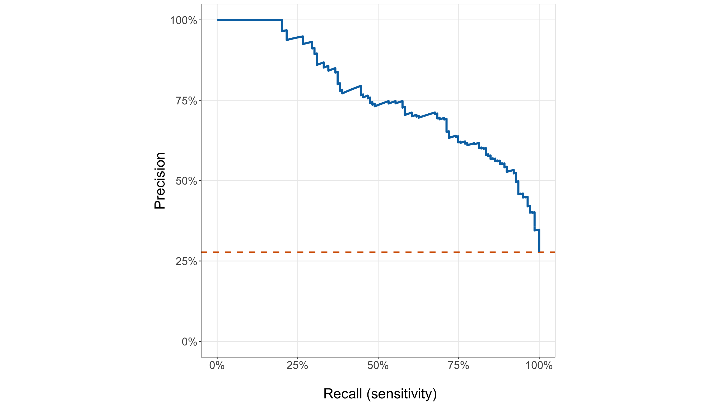
pr_plot, ax = plt.subplots(figsize=(14, 8))
_ = ax.axhline(testing_event_rate, linestyle="--", linewidth=1.5, color="#D55E00",
)
_ = ax.plot(pr_curve_data["recall"], pr_curve_data["precision"], linewidth=2.0,
color="#0072B2",
)
_ = ax.set_xlim(0,1,)
_ = ax.set_ylim(0,1,)
_ = ax.set_aspect("equal", adjustable="box",
)
_ = ax.set_xlabel("\n Recall (sensitivity)", fontsize=20,
)
_ = ax.set_ylabel("Precision", fontsize=20, labelpad=12,
)
_ = ax.tick_params(axis="both", labelsize=15.5,
)
_ = ax.xaxis.set_major_formatter(PercentFormatter(xmax=1, decimals=0,
))
_ = ax.yaxis.set_major_formatter(PercentFormatter(xmax=1, decimals=0,
))
_ = ax.grid(True, which="major", alpha=0.3,
)
_ = ax.grid(False, which="minor",
)
_ = pr_plot.tight_layout()
plt.show()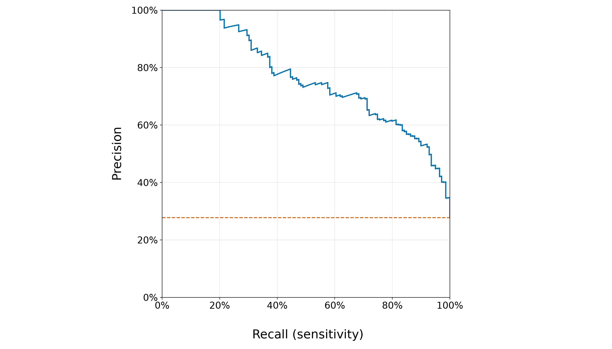
The held-out PR AUC is 0.765, while the testing-sample default proportion is 27.7%. The latter determines the horizontal no-skill precision reference in the plot. Because PR performance depends on event prevalence, PR AUC values should not be interpreted using universal cutoffs in the way people sometimes informally describe ROC AUC.
Taken together, the ROC and PR analyses answer a ranking or discrimination question: whether borrowers who actually default tend to receive higher predicted default probabilities than borrowers who do not. The two summaries emphasize somewhat different aspects of that ranking. The ROC curve describes the trade-off between sensitivity and the false-positive rate over all possible thresholds, whereas the precision–recall curve focuses more directly on the trade-off between finding observed defaults and maintaining a high proportion of actual defaults among those classified as default. This distinction is especially useful when the event of interest is less common than the non-event.
For the held-out borrowers, both analyses indicate that the frozen model contains useful ranking information: observed defaults tend to occur toward the higher end of the fitted-risk ordering rather than being intermingled randomly with non-defaults. The ROC AUC summarizes this separation relative to a no-ranking benchmark of \(0.5\), while the PR curve can be compared with the testing-sample default proportion that determines its no-skill precision reference.
However, good ranking does not imply accurate probability estimation. A model could assign systematically exaggerated probabilities (say, values around \(0.80\) to borrowers whose actual event frequency is closer to \(0.60\)) and still rank those borrowers above lower-risk cases correctly. In that situation, ROC AUC and PR AUC could remain strong even though the numerical probabilities are poorly calibrated. Thus, discrimination tells us who tends to be ranked higher, whereas calibration asks whether the predicted probabilities themselves have the right numerical meaning. We examine that second question separately in Section 8.12.8.
8.12.7 Threshold-Dependent Classification Metrics
We now deliberately convert the held-out probabilities into classes using the previously fixed illustrative threshold
\[ c=0.5. \]
This step is secondary to the probability-based analysis. Its purpose is to show what threshold-dependent classification summaries look like (not to claim that \(0.5\) is an application-optimal decision rule). At this threshold, four outcomes are possible as indicated in Table 8.68.
| Observed outcome | Predicted class | Name |
|---|---|---|
| Default \((Y=1)\) | Default \((\widehat{Y}=1)\) | True positive (\(TP\)) |
| Default \((Y=1)\) | No default \((\widehat{Y}=0)\) | False negative (\(FN\)) |
| No default \((Y=0)\) | Default \((\widehat{Y}=1)\) | False positive (\(FP\)) |
| No default \((Y=0)\) | No default \((\widehat{Y}=0)\) | True negative (\(TN\)) |
As we partially explained in Section 8.12.6, from these counts, we calculate:
\[ \operatorname{Sensitivity} = \frac{TP}{TP+FN}, \]
\[ \operatorname{Specificity} = \frac{TN}{TN+FP}, \]
\[ \operatorname{Precision} = \frac{TP}{TP+FP}, \]
and
\[ \operatorname{Balanced\ Accuracy} = \frac{ \operatorname{Sensitivity} + \operatorname{Specificity} }{ 2 }. \]
We also report the F1 score,
\[ F_1 = 2 \times \left( \frac{ \operatorname{Precision} \times \operatorname{Sensitivity} }{ \operatorname{Precision} + \operatorname{Sensitivity} } \right), \]
which combines precision and sensitivity but does not incorporate specificity directly.
Now, let us code up these metrics.
prediction_testing_data <- prediction_testing_data |>
mutate(predicted_class = ifelse(predicted_probability >= classification_threshold, 1L, 0L)
)
true_positive <- sum(prediction_testing_data$defaulted == 1 &
prediction_testing_data$predicted_class == 1)
false_negative <- sum(prediction_testing_data$defaulted == 1 &
prediction_testing_data$predicted_class == 0)
false_positive <- sum(prediction_testing_data$defaulted == 0 &
prediction_testing_data$predicted_class == 1)
true_negative <- sum(prediction_testing_data$defaulted == 0 &
prediction_testing_data$predicted_class == 0)
confusion_matrix_summary <- tibble(`Observed outcome` = c("No default", "Default"),
`Predicted no default` = c(true_negative, false_negative),
`Predicted default` = c(false_positive, true_positive))
confusion_matrix_summary |>
kable(align = c("c", "c", "c"))| Observed outcome | Predicted no default | Predicted default |
|---|---|---|
| No default | 325 | 37 |
| Default | 53 | 86 |
prediction_testing_data["predicted_class"] = (
prediction_testing_data["predicted_probability"] >= classification_threshold
).astype(int)
true_positive = ((prediction_testing_data["defaulted"] == 1)
& (prediction_testing_data["predicted_class"] == 1)).sum()
false_negative = ((prediction_testing_data["defaulted"] == 1)
& (prediction_testing_data["predicted_class"] == 0)).sum()
false_positive = ((prediction_testing_data["defaulted"] == 0)
& (prediction_testing_data["predicted_class"] == 1)).sum()
true_negative = ((prediction_testing_data["defaulted"] == 0)
& (prediction_testing_data["predicted_class"] == 0)).sum()
confusion_matrix_summary = pd.DataFrame({"Observed outcome": ["No default", "Default",
], "Predicted no default": [true_negative, false_negative,
], "Predicted default": [false_positive, true_positive,
],
})
confusion_matrix_summary_html = (scrollable_table_html(confusion_matrix_summary))| Observed outcome | Predicted no default | Predicted default |
|---|---|---|
| No default | 325 | 37 |
| Default | 53 | 86 |
Then, we summarize the corresponding rates.
safe_ratio <- function(numerator, denominator) {
ifelse(denominator == 0, NA_real_, numerator / denominator)
}
sensitivity_value <- safe_ratio(true_positive, true_positive + false_negative)
specificity_value <- safe_ratio(true_negative, true_negative + false_positive)
precision_value <- safe_ratio(true_positive, true_positive + false_positive)
balanced_accuracy_value <- mean(c(sensitivity_value, specificity_value))
f1_value <- ifelse(is.na(precision_value) || (precision_value + sensitivity_value) == 0,
NA_real_, 2 * precision_value * sensitivity_value /
(precision_value + sensitivity_value))
classification_metric_summary <- tibble(
Metric = c("Sensitivity", "Specificity", "Precision", "Balanced accuracy", "F1 score"),
Value = c(sensitivity_value, specificity_value, precision_value, balanced_accuracy_value,
f1_value)) |>
mutate(Value = round(Value, 4))
classification_metric_summary |>
kable(align = c("c", "c"))| Metric | Value |
|---|---|
| Sensitivity | 0.6187 |
| Specificity | 0.8978 |
| Precision | 0.6992 |
| Balanced accuracy | 0.7582 |
| F1 score | 0.6565 |
sensitivity_value = recall_score(prediction_testing_data["defaulted"],
prediction_testing_data["predicted_class"], zero_division=0,
)
specificity_value = recall_score(prediction_testing_data["defaulted"],
prediction_testing_data["predicted_class"], pos_label=0, zero_division=0,
)
precision_value = precision_score(prediction_testing_data["defaulted"],
prediction_testing_data["predicted_class"], zero_division=0,
)
balanced_accuracy_value = (balanced_accuracy_score(prediction_testing_data["defaulted"],
prediction_testing_data["predicted_class"],
))
f1_value = f1_score(prediction_testing_data["defaulted"],
prediction_testing_data["predicted_class"], zero_division=0,
)
classification_metric_summary = pd.DataFrame({
"Metric": ["Sensitivity", "Specificity", "Precision", "Balanced accuracy", "F1 score",
], "Value": [sensitivity_value, specificity_value, precision_value,
balanced_accuracy_value, f1_value,
],
})
classification_metric_summary["Value"] = classification_metric_summary["Value"].round(4)
classification_metric_summary_html = (scrollable_table_html(classification_metric_summary))| Metric | Value |
|---|---|
| Sensitivity | 0.6187 |
| Specificity | 0.8978 |
| Precision | 0.6992 |
| Balanced accuracy | 0.7582 |
| F1 score | 0.6565 |
From Table 8.69 and Table 8.71, at the illustrative threshold \(c=0.5\), the frozen model correctly classifies 86 of the 139 borrowers who actually defaulted. Its sensitivity is therefore 61.9%. Equivalently, 53 observed defaults are classified as non-default, so the model misses approximately 38.1% of the defaults at this particular threshold. For the borrowers who did not default, the model correctly classifies 325 of 362, giving a specificity of 89.8%. The remaining 37 non-defaulting borrowers are classified as defaults. Thus, at \(c=0.5\), the model is noticeably better at correctly identifying non-defaults than at identifying defaults: specificity is 89.8%, compared with sensitivity of 61.9%.
Precision answers a different question. Among the 123 borrowers that the model classifies as default, 86 actually defaulted. The resulting precision is 69.9%. In other words, at this threshold, about 69.9% of the positive classifications correspond to observed defaults, while the remainder are false positives.
Balanced accuracy is 75.8%. Because balanced accuracy averages sensitivity and specificity,
\[ \operatorname{Balanced\ Accuracy} = \frac{ \operatorname{Sensitivity} + \operatorname{Specificity} }{ 2 }, \]
it gives equal weight to performance among observed defaults and observed non-defaults rather than allowing the more common outcome to dominate the summary. The F1 score is 0.656; it summarizes the balance between precision and sensitivity for the default class and therefore focuses specifically on how successfully the classification rule identifies the event of interest.
Taken together, these values show the particular trade-off produced by the \(0.5\) rule: the model has relatively high specificity but more moderate sensitivity. That does not imply that the fitted Logistic regression model intrinsically favours non-defaults. It reflects the classification decision created by applying this particular threshold to its predicted probabilities.
If we lowered \(c\), more borrowers would be classified as defaults. Sensitivity would generally increase because fewer observed defaults would be missed, but specificity and often precision would decline as more observed non-defaults were also classified as defaults. Raising \(c\) would generally move the trade-off in the opposite direction.
Consequently, sensitivity, specificity, precision, balanced accuracy, and F1 are properties of the fitted probabilities together with the chosen classification threshold, not immutable properties of the Logistic regression model itself. The \(0.5\) results are useful as a transparent illustration, but we should not search across thresholds using the testing outcomes and then report whichever threshold makes these held-out metrics look best.
8.12.8 Held-Out Calibration
The final predictive check returns to the question that a ranking metric cannot answer:
When the model assigns a particular level of default probability, do held-out borrowers default at roughly that frequency?
This is the idea of calibration.
Good discrimination does not guarantee good calibration. For example, if one model’s probabilities were transformed so that every high-risk borrower still ranked above every low-risk borrower, its ROC AUC could remain excellent even if the numerical probabilities became systematically too large or too small. Therefore, a model intended to communicate risk probabilities should be assessed on both dimensions.
We construct ten approximately equal-sized groups ordered by the held-out fitted probabilities. Within each group, we compare:
- the mean fitted default probability; and
- the observed default proportion.
Unlike the earlier observed-versus-fitted plot based on credit-score bins, these groups are formed directly from the model’s predicted probabilities, so this is a genuine grouped calibration diagnostic.
held_out_number_of_calibration_groups <- 10
held_out_calibration_data <- prediction_testing_data |>
arrange(predicted_probability, borrower_id) |>
mutate(calibration_group =
ceiling(row_number() * held_out_number_of_calibration_groups / n()))
held_out_calibration_summary <- held_out_calibration_data |>
group_by(calibration_group) |>
summarise(`Borrowers (n)` = n(), mean_fitted_probability = mean(predicted_probability),
observed_default_proportion = mean(defaulted == 1),.groups = "drop") |>
mutate(difference = observed_default_proportion - mean_fitted_probability,
calibration_group = paste0("G", calibration_group))
held_out_max_calibration_gap <- max(abs(held_out_calibration_summary$difference))
held_out_calibration_table <- held_out_calibration_summary |>
transmute(Group = calibration_group, `Borrowers (n)` = `Borrowers (n)`,
`Mean fitted probability` = round(mean_fitted_probability, 3),
`Observed default proportion` = round(observed_default_proportion, 3),
`Observed - fitted` = round(difference, 3))
held_out_calibration_table |>
kable(align = c("c", "c", "c", "c", "c"))| Group | Borrowers (n) | Mean fitted probability | Observed default proportion | Observed - fitted |
|---|---|---|---|---|
| G1 | 50 | 0.000 | 0.000 | 0.000 |
| G2 | 50 | 0.007 | 0.000 | -0.007 |
| G3 | 50 | 0.033 | 0.040 | 0.007 |
| G4 | 50 | 0.071 | 0.060 | -0.011 |
| G5 | 50 | 0.146 | 0.100 | -0.046 |
| G6 | 50 | 0.241 | 0.240 | -0.001 |
| G7 | 50 | 0.348 | 0.360 | 0.012 |
| G8 | 50 | 0.494 | 0.480 | -0.014 |
| G9 | 50 | 0.655 | 0.620 | -0.035 |
| G10 | 51 | 0.838 | 0.863 | 0.024 |
held_out_number_of_calibration_groups = 10
held_out_calibration_data = (prediction_testing_data
.sort_values(["predicted_probability", "borrower_id",
], kind="mergesort",
).reset_index(drop=True).copy())
held_out_calibration_data["calibration_group"] = np.ceil(
(np.arange(1, len(held_out_calibration_data) + 1,
) * held_out_number_of_calibration_groups / len(held_out_calibration_data))
).astype(int)
held_out_calibration_summary = (held_out_calibration_data.groupby("calibration_group")
.agg(borrower_count=("defaulted", "size",
), mean_fitted_probability=("predicted_probability", "mean",
), observed_default_proportion=("defaulted", "mean",
),
).reset_index())
held_out_calibration_summary["difference"] = (
held_out_calibration_summary["observed_default_proportion"]
- held_out_calibration_summary["mean_fitted_probability"])
held_out_calibration_summary["calibration_group"] = ("G"
+ held_out_calibration_summary["calibration_group"].astype(str))
held_out_max_calibration_gap = (held_out_calibration_summary["difference"].abs().max())
held_out_calibration_table = (held_out_calibration_summary
.rename(columns={"calibration_group": "Group", "borrower_count": "Borrowers (n)",
"mean_fitted_probability": "Mean fitted probability",
"observed_default_proportion": "Observed default proportion", "difference":
"Observed - fitted",
})
[["Group", "Borrowers (n)", "Mean fitted probability", "Observed default proportion",
"Observed - fitted",
]].copy())
for column_name in ["Mean fitted probability", "Observed default proportion",
"Observed - fitted",
]:
held_out_calibration_table[column_name] = held_out_calibration_table[column_name
].round(3)
held_out_calibration_table_html = (scrollable_table_html(held_out_calibration_table))| Group | Borrowers (n) | Mean fitted probability | Observed default proportion | Observed - fitted |
|---|---|---|---|---|
| G1 | 50 | 0.000 | 0.000 | -0.000 |
| G2 | 50 | 0.007 | 0.000 | -0.007 |
| G3 | 50 | 0.033 | 0.040 | 0.007 |
| G4 | 50 | 0.071 | 0.060 | -0.011 |
| G5 | 50 | 0.146 | 0.100 | -0.046 |
| G6 | 50 | 0.241 | 0.240 | -0.001 |
| G7 | 50 | 0.348 | 0.360 | 0.012 |
| G8 | 50 | 0.494 | 0.480 | -0.014 |
| G9 | 50 | 0.655 | 0.620 | -0.035 |
| G10 | 51 | 0.838 | 0.863 | 0.024 |
Then, we visualize these grouped probabilities against the perfect-calibration line.
held_out_calibration_plot <- ggplot(held_out_calibration_summary,
aes(x = mean_fitted_probability, y = observed_default_proportion)) +
geom_abline(intercept = 0, slope = 1, colour = "#D55E00", linetype = "dashed",
linewidth = 1) +
geom_line(colour = "#0072B2", linewidth = 1.2) +
geom_point(colour = "#0072B2", size = 3.5) +
coord_equal(xlim = c(0, 1), ylim = c(0, 1)) +
scale_x_continuous(labels = scales::label_percent(accuracy = 1)) +
scale_y_continuous(labels = scales::label_percent(accuracy = 1)) +
theme_bw() +
theme(axis.text = element_text(size = 15.5), axis.title = element_text(size = 20),
panel.grid.minor = element_blank()) +
labs(x = "\n Mean predicted probability", y = "Observed default proportion")
held_out_calibration_plot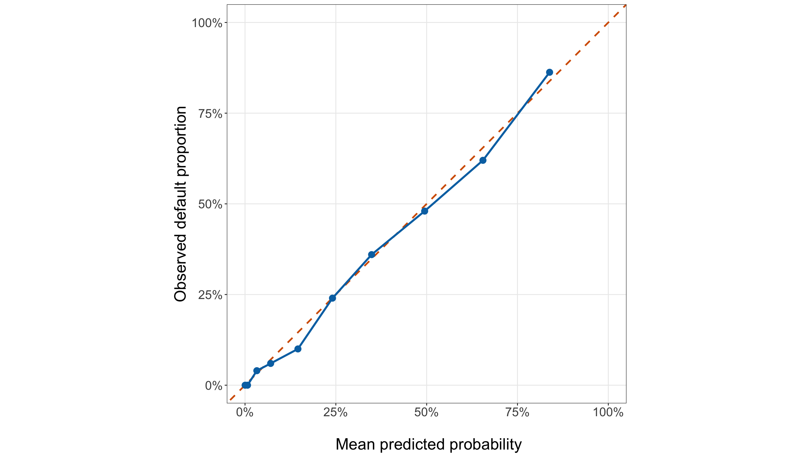
held_out_calibration_plot, ax = (plt.subplots(figsize=(14, 8)))
_ = ax.plot([0,1,], [0,1,], linestyle="--", linewidth=1.5, color="#D55E00",
)
_ = ax.plot(held_out_calibration_summary["mean_fitted_probability"],
held_out_calibration_summary["observed_default_proportion"], marker="o", markersize=7,
linewidth=2.0, color="#0072B2",
)
_ = ax.set_xlim(0,1,)
_ = ax.set_ylim(0,1,)
_ = ax.set_aspect("equal", adjustable="box",
)
_ = ax.set_xlabel("\n Mean predicted probability", fontsize=20,
)
_ = ax.set_ylabel("Observed default proportion", fontsize=20, labelpad=12,
)
_ = ax.tick_params(axis="both", labelsize=15.5,
)
_ = ax.xaxis.set_major_formatter(PercentFormatter(xmax=1, decimals=0,
))
_ = ax.yaxis.set_major_formatter(PercentFormatter(xmax=1, decimals=0,
))
_ = ax.grid(True, which="major", alpha=0.3,
)
_ = ax.grid(False, which="minor",
)
_ = held_out_calibration_plot.tight_layout()
plt.show()According to Table 8.73 and Figure 8.51 (or Figure 8.52), the largest absolute grouped held-out calibration discrepancy is 4.6%, occurring in group G5. In that group, the mean predicted default probability is 0.146, compared with an observed default proportion of 0.100. The agreement is particularly close in several parts of the fitted-probability range. For example, in group G6 the mean predicted probability is 0.241, while the observed default proportion is 0.240. Likewise, group G7 has a mean predicted probability of 0.348 and an observed proportion of 0.360. These points lie close to the perfect-calibration diagonal.
The most noticeable discrepancies are still modest and occur in both directions. In G5, the model assigns a mean predicted default probability of 0.146, compared with an observed proportion of 0.100. Because the predicted probability is larger, the model overpredicts default in this group by approximately 4.6%. The, at the upper end of the predicted-risk range, the direction is not uniform either. In G9, the model overpredicts default by approximately 3.5%, whereas in G10 it underpredicts default by approximately 2.4%. Thus, even among borrowers assigned relatively high default probabilities, the departures do not point consistently in one direction.
Overall, there are 3 groups above the diagonal, where the observed default proportion exceeds the mean predicted probability and the model therefore underpredicts default on that grouped comparison. There are 7 groups below the diagonal, where the model overpredicts default, and 0 groups with no displayed discrepancy at the reported precision.
Because the departures occur in both directions, the grouped plot does not show a simple pattern of uniform overprediction or uniform underprediction across the full probability range. This held-out calibration plot should not be expected to fall exactly on the diagonal. Each observed proportion is calculated from a finite group of testing borrowers, so some discrepancy arises from sampling variability alone. Moreover, grouping necessarily compresses borrowers with different predicted probabilities into a common summary point. The purpose of the plot is therefore not to demand exact equality in every group, but to look for substantial or systematic departures between predicted probabilities and observed event frequencies.
Taken together, the grouped results suggest reasonably close held-out probability agreement over much of the predicted-risk range, with some localized overprediction and underprediction but no obvious global shift in one direction. This complements the earlier predictive results: the log loss and Brier score showed that the borrower-specific probabilities improve on the constant baseline, while ROC and PR analyses showed useful ranking. The calibration analysis now asks the separate question of whether the numerical values of those probabilities correspond reasonably well to observed held-out frequencies.
Most importantly, these testing results are final assessment, not another model-development stage. A disappointing calibration point, ROC curve, Brier score, or threshold metric would be a result to report (not a reason to return to the testing sample and alter the frozen regressors, transformations, or coefficients). That separation is what makes the evaluation genuinely held out.
8.13 Results and Statistical Interpretation
The chapter now returns to the two questions defined in the study design. Although both use the testing observations, they use them in different statistical roles:
- For the inferential inquiry, we refit the already frozen model specification on the testing data and use that independent refit to estimate coefficients, standard errors, CIs, and hypothesis tests.
- For the predictive inquiry, we do something fundamentally different: we retain the coefficients estimated from the training data and evaluate the probabilities they produced for the held-out testing borrowers.
These two analyses must remain separate. The testing-set inferential refit does not replace the training-fitted model used for held-out prediction, and the held-out predictive results do not trigger another round of model selection.

The frozen specification developed using the training data is
\[ \operatorname{logit}(\pi_j) = \beta_0 + \beta_1x_{j,1}^{(50)} + \beta_2m_j + \beta_3m_j^2, \tag{8.30}\]
where
\[ m_j = x_{j,2}^{(10\text{k})} - \overline{x}_{2,\mathrm{train}}^{(10\text{k})}. \]
Here, \(j\) indexes borrowers in the testing data, \(x_{j,1}^{(50)}\) is credit score measured in 50-point units, \(x_{j,2}^{(10\text{k})}\) is annual income measured in CAD 10,000 units, and \(\overline{x}_{2,\mathrm{train}}^{(10\text{k})}\) is the training-data mean used to define the centred income regressor. Keeping this same centring constant preserves the specification that was fixed before the testing outcomes were used.
8.13.1 Inferential Results: Refit the Final Model on the Testing Data
For inference, the testing outcomes now enter the likelihood. We fit the same prespecified functional form to the testing observations, but estimate a new coefficient vector from those testing observations alone. Hence, let
\[ \widehat{\boldsymbol{\beta}}_{\mathrm{test}} = \begin{pmatrix} \widehat{\beta}_{0,\mathrm{test}}\\ \widehat{\beta}_{1,\mathrm{test}}\\ \widehat{\beta}_{2,\mathrm{test}}\\ \widehat{\beta}_{3,\mathrm{test}} \end{pmatrix} \]
denote the maximum likelihood estimate from this testing-set refit. These estimates are distinct from the coefficients in final_model, which were estimated on the training data and remain the coefficients used for the held-out predictive inquiry.
Before fitting, we construct the centred income term using the training centring constant.
inference_testing_data <- testing_data |>
mutate(income_10k_centered = income_10k - income_10k_training_mean)
inferential_model <- glm(formula = defaulted ~ credit_score_50 + income_10k_centered +
I(income_10k_centered^2), family = binomial(link = "logit"), data =
inference_testing_data)
inferential_model_converged <- inferential_model$converged
inferential_model_coefficients_finite <- all(is.finite(coef(inferential_model)))
inferential_model_standard_errors_finite <- all(
is.finite(sqrt(diag(vcov(inferential_model)))))
inferential_fitted_probabilities <- fitted(inferential_model)
inferential_fitted_probabilities_finite <- all(is.finite(inferential_fitted_probabilities))
inferential_fitted_probabilities_inside_unit_interval <- all(
inferential_fitted_probabilities > 0 & inferential_fitted_probabilities < 1)
cat(sprintf(paste0("Converged: %s\n", "All coefficients finite: %s\n",
"All standard errors finite: %s\n", "All fitted probabilities finite: %s\n",
"Fitted probabilities strictly inside (0, 1): %s\n",
"Fitted-probability range: %.4f to %.4f\n"),
ifelse(inferential_model_converged, "Yes", "No"),
ifelse(inferential_model_coefficients_finite, "Yes", "No"),
ifelse(inferential_model_standard_errors_finite, "Yes", "No"),
ifelse(inferential_fitted_probabilities_finite, "Yes", "No"),
ifelse(inferential_fitted_probabilities_inside_unit_interval, "Yes", "No"),
min(inferential_fitted_probabilities), max(inferential_fitted_probabilities)))Converged: Yes
All coefficients finite: Yes
All standard errors finite: Yes
All fitted probabilities finite: Yes
Fitted probabilities strictly inside (0, 1): Yes
Fitted-probability range: 0.0007 to 0.9728inference_testing_data = (testing_data.copy())
inference_testing_data["income_10k_centered"] = (inference_testing_data["income_10k"]
- income_10k_training_mean)
inferential_model = glm(
formula=("defaulted ~ " "credit_score_50 + " "income_10k_centered + "
"I(income_10k_centered ** 2)"), data=inference_testing_data,
family=Binomial(link=sm.families.links.Logit()),
).fit()
inferential_model_converged = (inferential_model.converged)
inferential_model_coefficients_finite = (np.isfinite(inferential_model.params.to_numpy())
.all())
inferential_model_standard_errors_finite = (np.isfinite(inferential_model.bse.to_numpy())
.all())
inferential_fitted_probabilities = (inferential_model.fittedvalues.to_numpy())
inferential_fitted_probabilities_finite = (np.isfinite(inferential_fitted_probabilities)
.all())
inferential_fitted_probabilities_inside_unit_interval = (
(inferential_fitted_probabilities > 0) & (inferential_fitted_probabilities < 1)).all()
print(f"Converged: " f"{'Yes' if inferential_model_converged else 'No'}\n"
f"All coefficients finite: "
f"{'Yes' if inferential_model_coefficients_finite else 'No'}\n"
f"All standard errors finite: "
f"{'Yes' if inferential_model_standard_errors_finite else 'No'}\n"
f"All fitted probabilities finite: "
f"{'Yes' if inferential_fitted_probabilities_finite else 'No'}\n"
f"Fitted probabilities strictly inside (0, 1): "
f"{'Yes' if inferential_fitted_probabilities_inside_unit_interval else 'No'}\n"
f"Fitted-probability range: " f"{inferential_fitted_probabilities.min():.4f} to "
f"{inferential_fitted_probabilities.max():.4f}")Converged: Yes
All coefficients finite: Yes
All standard errors finite: Yes
All fitted probabilities finite: Yes
Fitted probabilities strictly inside (0, 1): Yes
Fitted-probability range: 0.0007 to 0.9728The testing-set refit converges, with finite coefficient estimates and finite model-based standard errors. The fitted probabilities range from 0.0007 to 0.9728. The role of these checks is to verify that the prespecified testing-set refit is numerically usable before we interpret coefficient-level uncertainty.
Now, we construct a coefficient summary on both the log-odds and exponentiated scales.
wald_critical_value <- qnorm(0.975)
inferential_coefficient_matrix <- summary(inferential_model)$coefficients
inferential_term_labels <- c("(Intercept)" = "Intercept", "credit_score_50" =
"Credit score (per 50 points)", "income_10k_centered" =
"Centred income (per CAD 10,000)", "I(income_10k_centered^2)" = "Centred income squared"
)
inferential_summary <- tibble(term = rownames(inferential_coefficient_matrix), estimate =
inferential_coefficient_matrix[, "Estimate"], std_error =
inferential_coefficient_matrix[, "Std. Error"], wald_statistic =
inferential_coefficient_matrix[, "z value"], p_value =
inferential_coefficient_matrix[, "Pr(>|z|)"]) |>
mutate(conf_low = estimate - wald_critical_value * std_error, conf_high = estimate +
wald_critical_value * std_error, exponentiated_estimate = exp(estimate),
exponentiated_conf_low = exp(conf_low), exponentiated_conf_high = exp(conf_high), Term =
unname(inferential_term_labels[term]),.after = term)
inferential_summary_display <- inferential_summary |>
transmute(Term, Estimate = sprintf("%.4f", estimate), `Standard error` =
sprintf("%.4f", std_error), `Wald z` = sprintf("%.3f", wald_statistic), `p-value` =
ifelse(p_value < 0.001, "<0.001", sprintf("%.3f", p_value)), `exp(Estimate)` =
sprintf("%.3f", exponentiated_estimate), `95% CI for exp(beta)` =
sprintf("[%.3f, %.3f]", exponentiated_conf_low, exponentiated_conf_high))
inferential_summary_display |>
kable(align = c("c", "c", "c", "c", "c", "c", "c"))| Term | Estimate | Standard error | Wald z | p-value | exp(Estimate) | 95% CI for exp(beta) |
|---|---|---|---|---|---|---|
| Intercept | 10.0874 | 1.3137 | 7.679 | <0.001 | 24038.701 | [1830.924, 315610.737] |
| Credit score (per 50 points) | -0.8312 | 0.0950 | -8.748 | <0.001 | 0.436 | [0.362, 0.525] |
| Centred income (per CAD 10,000) | -0.2713 | 0.0664 | -4.083 | <0.001 | 0.762 | [0.669, 0.868] |
| Centred income squared | 0.0013 | 0.0178 | 0.074 | 0.941 | 1.001 | [0.967, 1.037] |
wald_critical_value = stats.norm.ppf(0.975)
inferential_term_labels = {"Intercept": "Intercept", "credit_score_50":
"Credit score (per 50 points)", "income_10k_centered":
"Centred income (per CAD 10,000)", "I(income_10k_centered ** 2)":
"Centred income squared",
}
inferential_summary = pd.DataFrame({"term": inferential_model.params.index, "estimate":
inferential_model.params.to_numpy(), "std_error": inferential_model.bse.to_numpy(),
"wald_statistic":
(inferential_model.params.to_numpy() / inferential_model.bse.to_numpy()), "p_value":
inferential_model.pvalues.to_numpy(),
})
inferential_summary["conf_low"] = (inferential_summary["estimate"] - wald_critical_value
* inferential_summary["std_error"])
inferential_summary["conf_high"] = (inferential_summary["estimate"] + wald_critical_value
* inferential_summary["std_error"])
inferential_summary["exponentiated_estimate"] = np.exp(
inferential_summary["estimate"]
)
inferential_summary[
"exponentiated_conf_low"
] = np.exp(
inferential_summary["conf_low"]
)
inferential_summary[
"exponentiated_conf_high"
] = np.exp(
inferential_summary["conf_high"]
)
inferential_summary[
"Term"
] = (
inferential_summary["term"]
.map(inferential_term_labels)
.fillna(inferential_summary["term"])
)
inferential_summary_display = pd.DataFrame({"Term": inferential_summary["Term"], "Estimate":
inferential_summary["estimate"].map(lambda value: f"{value:.4f}"), "Standard error":
inferential_summary["std_error"].map(lambda value: f"{value:.4f}"), "Wald z":
inferential_summary["wald_statistic"].map(lambda value: f"{value:.3f}"), "p-value":
inferential_summary["p_value"].map(lambda value:
("<0.001" if value < 0.001 else f"{value:.3f}")), "exp(Estimate)":
inferential_summary["exponentiated_estimate"].map(lambda value: f"{value:.3f}"),
"95% CI for exp(beta)": [(f"[{lower:.3f}, " f"{upper:.3f}]")
for lower, upper in zip(inferential_summary["exponentiated_conf_low"],
inferential_summary["exponentiated_conf_high"],
)],
})
inferential_summary_display_html = (
scrollable_table_html(inferential_summary_display)
)| Term | Estimate | Standard error | Wald z | p-value | exp(Estimate) | 95% CI for exp(beta) |
|---|---|---|---|---|---|---|
| Intercept | 10.0874 | 1.3137 | 7.679 | <0.001 | 24038.701 | [1830.924, 315610.737] |
| Credit score (per 50 points) | -0.8312 | 0.0950 | -8.748 | <0.001 | 0.436 | [0.362, 0.525] |
| Centred income (per CAD 10,000) | -0.2713 | 0.0664 | -4.083 | <0.001 | 0.762 | [0.669, 0.868] |
| Centred income squared | 0.0013 | 0.0178 | 0.074 | 0.941 | 1.001 | [0.967, 1.037] |
The first five numerical columns in Table 8.75 describe the testing-set refit on the log-odds scale. Then, the final two columns exponentiate the coefficient and its Wald CI. For the credit-score coefficient, exponentiation produces the directly interpretable odds ratio for a 50-point increase, holding income fixed. However, for the income terms, the model contains both \(m_j\) and \(m_j^2\). Their individual exponentiated coefficients should therefore not be read as universal odds ratios for a CAD 10,000 increase in income. We construct meaningful finite-change income odds ratios below.
8.13.2 Wald Tests and Confidence Intervals
For coefficient \(\beta_k\), the coefficient-level two-sided Wald test is
\[ \begin{gather} H_0\text{: } \beta_k=0, \\ \text{versus} \\ H_1\text{: } \beta_k\neq0. \end{gather} \]
The corresponding Wald statistic is
\[ z_k = \frac{ \widehat{\beta}_{k,\mathrm{test}} }{ \operatorname{SE} \left( \widehat{\beta}_{k,\mathrm{test}} \right) }. \]
Under \(H_0\) and the usual large-sample regularity conditions,
\[ z_k \mathrel{\dot{\sim}} \operatorname{Normal}(0,1). \]
Therfore, the two-sided \(p\)-value is
\[ p\text{-value} = 2 \Pr \left( Z \geq |z_k| \right), \qquad Z \sim \operatorname{Normal}(0,1). \]
An approximate 95% Wald CI on the log-odds scale is
\[ \widehat{\beta}_{k,\mathrm{test}} \pm z_{0.975} \operatorname{SE} \left( \widehat{\beta}_{k,\mathrm{test}} \right). \]
Exponentiating the endpoints gives the corresponding interval on the exponentiated-coefficient scale.
For a coefficient with a direct odds-ratio interpretation, such as the linear credit-score coefficient,
\[ H_0\text{: } \beta_1=0 \]
is equivalent to
\[ H_0\text{: } \exp(\beta_1)=1. \]
Thus, the Wald test asks whether the adjusted odds ratio differs from \(1\).
Heads-up on Wald tests for a polynomial income term!
In Equation 8.30, the refined model contains both
\[ \beta_2m_j \]
and
\[ \beta_3m_j^2. \]
Consequently, the individual test
\[ H_0\text{: } \beta_2=0 \]
does not test whether income has no association with the log-odds of default. Likewise,
\[ H_0\text{: } \beta_3=0 \]
tests the quadratic component specifically, not the entire income contribution.
A natural overall Wald test for the income terms is instead
\[ H_0\text{: } \beta_2=\beta_3=0, \]
which removes both income terms simultaneously. Hence, we report that joint test in addition to the coefficient-level Wald statistics.
To make the coefficient-level decisions explicit, we use
\[ \alpha=0.05. \]
significance_level <- 0.05
wald_test_decisions <- inferential_summary |>
mutate(Decision = if_else(p_value < significance_level, "Reject H0", "Fail to reject H0")
) |>
transmute(Term, `p-value` = ifelse(p_value < 0.001, "<0.001", sprintf("%.3f", p_value)),
Decision)
wald_test_decisions |>
kable(align = c("c", "c", "c"))| Term | p-value | Decision |
|---|---|---|
| Intercept | <0.001 | Reject H0 |
| Credit score (per 50 points) | <0.001 | Reject H0 |
| Centred income (per CAD 10,000) | <0.001 | Reject H0 |
| Centred income squared | 0.941 | Fail to reject H0 |
income_joint_terms <- c("income_10k_centered", "I(income_10k_centered^2)")
income_joint_estimates <- coef(inferential_model)[income_joint_terms]
income_joint_covariance <- vcov(inferential_model)[income_joint_terms, income_joint_terms]
income_joint_wald_statistic <- as.numeric(t(income_joint_estimates) %*%
solve(income_joint_covariance, income_joint_estimates))
income_joint_wald_df <- 2
income_joint_wald_p_value <- pchisq(income_joint_wald_statistic, df = income_joint_wald_df,
lower.tail = FALSE)
income_joint_wald_summary <- tibble(Test = "Joint income contribution", `Wald Chi-squared` =
round(income_joint_wald_statistic, 3), `Degrees of freedom` = income_joint_wald_df,
`p-value` = ifelse(income_joint_wald_p_value < 0.001, "<0.001",
sprintf("%.3f", income_joint_wald_p_value)))
income_joint_wald_summary |>
kable(align = c("c", "c", "c", "c"))| Test | Wald Chi-squared | Degrees of freedom | p-value |
|---|---|---|---|
| Joint income contribution | 18.787 | 2 | <0.001 |
significance_level = 0.05
wald_test_decisions = (inferential_summary[["Term", "p_value",
]].copy())
wald_test_decisions["Decision"] = np.where(
wald_test_decisions["p_value"] < significance_level, "Reject H0", "Fail to reject H0",
)
wald_test_decisions["p-value"] = wald_test_decisions["p_value"].map(lambda value:
("<0.001" if value < 0.001 else f"{value:.3f}"))
wald_test_decisions = (wald_test_decisions[["Term", "p-value", "Decision",
]])
income_joint_terms = ["income_10k_centered", "I(income_10k_centered ** 2)",
]
income_joint_estimates = (inferential_model.params.loc[income_joint_terms].to_numpy())
income_joint_covariance = (inferential_model.cov_params()
.loc[income_joint_terms, income_joint_terms,
].to_numpy())
income_joint_wald_statistic = float(income_joint_estimates.T
@ np.linalg.solve(income_joint_covariance, income_joint_estimates,
))
income_joint_wald_df = 2
income_joint_wald_p_value = (
stats.chi2.sf(income_joint_wald_statistic, income_joint_wald_df,
))
income_joint_wald_summary = pd.DataFrame({"Test": ["Joint income contribution"],
"Wald Chi-squared": [f"{income_joint_wald_statistic:.3f}"],
"Degrees of freedom": [income_joint_wald_df],
"p-value": [("<0.001" if income_joint_wald_p_value < 0.001
else f"{income_joint_wald_p_value:.3f}")],
})
wald_test_decisions_html = (scrollable_table_html(wald_test_decisions))
income_joint_wald_summary_html = (scrollable_table_html(income_joint_wald_summary))| Term | p-value | Decision |
|---|---|---|
| Intercept | <0.001 | Reject H0 |
| Credit score (per 50 points) | <0.001 | Reject H0 |
| Centred income (per CAD 10,000) | <0.001 | Reject H0 |
| Centred income squared | 0.941 | Fail to reject H0 |
| Test | Wald Chi-squared | Degrees of freedom | p-value |
|---|---|---|---|
| Joint income contribution | 18.787 | 2 | <0.001 |
In Table 8.78, the joint income test uses the statistic
\[ W_{\mathrm{income}} = \widehat{\boldsymbol{\beta}}_{\mathrm{income}}^\top \widehat{\operatorname{Var}} \left( \widehat{\boldsymbol{\beta}}_{\mathrm{income}} \right)^{-1} \widehat{\boldsymbol{\beta}}_{\mathrm{income}}, \]
where
\[ \widehat{\boldsymbol{\beta}}_{\mathrm{income}} = \begin{pmatrix} \widehat{\beta}_{2,\mathrm{test}}\\ \widehat{\beta}_{3,\mathrm{test}} \end{pmatrix}. \]
Under
\[ H_0\text{: } \beta_2=\beta_3=0, \]
and the usual large-sample regularity conditions,
\[ W_{\mathrm{income}} \mathrel{\dot{\sim}} \chi^2_2. \]
For the testing-set refit,
\[ W_{\mathrm{income}} = \text{18.787} \]
with a \(p\)-value of 0.0001. At \(\alpha=0.05\), we reject the joint null hypothesis. Under the prespecified testing-set refit, the data provide evidence that the two income terms are not jointly zero after accounting for credit score.
8.13.3 Statistical Interpretation of the Testing-Set Refit
The testing-set refit lets us answer the inferential inquiry using the specification selected before these testing outcomes were brought into the likelihood.
Credit Score
Because credit score enters linearly and does not interact with income, its coefficient retains a constant adjusted odds-ratio interpretation. For two borrowers with the same annual income whose credit scores differ by 50 points,
\[ \operatorname{OR}_{50\text{-point credit}} = \exp( \beta_1 ). \]
Via Table 8.75, the testing-set refit estimates this odds ratio as 0.436, with an approximate 95% Wald CI from 0.362 to 0.525. Thus, holding annual income fixed, a borrower whose credit score is 50 points higher has estimated odds of default multiplied by 0.436. Equivalently, the fitted odds are approximately 56.4% lower. The coefficient-level Wald \(p\)-value is 0.0000, so at \(\alpha=0.05\) we reject the null hypothesis that the 50-point credit-score odds ratio equals 1. Note that this is an adjusted association, not a causal effect. The model does not imply that deliberately changing a borrower’s credit score would cause the borrower’s default odds to change by this amount.
Annual Income
Income requires a more careful interpretation because the model contains both \(m_j\) and \(m_j^2\). For a borrower whose starting centred income is \(m\), increasing annual income by CAD 10,000 changes the centred income from \(m\) to \(m+1\). The resulting log-odds contrast (see Equation 8.25) is
\[ \Delta_{\mathrm{income}}(m) = \beta_2 + \beta_3 (2m+1), \]
and the corresponding adjusted odds ratio is
\[ \operatorname{OR}_{\text{CAD }10,000}(m) = \exp \left[ \beta_2 + \beta_3 (2m+1) \right]. \]
Because this contrast is a linear combination of two estimated coefficients, its uncertainty must also use their covariance. If
\[ \mathbf{a}(m) = \begin{pmatrix} 1\\ 2m+1 \end{pmatrix} \]
and
\[ \widehat{\mathbf{V}}_{\mathrm{income}} = \widehat{\operatorname{Var}} \begin{pmatrix} \widehat{\beta}_{2,\mathrm{test}}\\ \widehat{\beta}_{3,\mathrm{test}} \end{pmatrix}, \]
then
\[ \operatorname{SE} \left[ \widehat{\Delta}_{\mathrm{income}}(m) \right] = \sqrt{ \mathbf{a}(m)^\top \widehat{\mathbf{V}}_{\mathrm{income}} \mathbf{a}(m) }. \]
Exponentiating the endpoints of the corresponding Wald interval gives an approximate 95% CI for the finite-change odds ratio.
We illustrate this at three prespecified starting income levels.
testing_income_start_values <- c(40000, 80000, 120000)
testing_income_terms <- c("income_10k_centered", "I(income_10k_centered^2)")
testing_income_estimates <- coef(inferential_model)[testing_income_terms]
testing_income_covariance <- vcov(inferential_model)[testing_income_terms,
testing_income_terms]
testing_income_contrast_summary <- bind_rows(
lapply(testing_income_start_values, function(starting_income) {starting_m <-
starting_income / 10000 - income_10k_training_mean
contrast_vector <- c(1, 2 * starting_m + 1)
log_odds_contrast <- sum(contrast_vector * testing_income_estimates)
contrast_se <- sqrt(
as.numeric(t(contrast_vector) %*% testing_income_covariance %*% contrast_vector))
tibble(`Starting annual income (CAD)` = starting_income,
`Ending annual income (CAD)` = starting_income + 10000, `Odds ratio` =
exp(log_odds_contrast), `Lower 95% CI` =
exp(log_odds_contrast - wald_critical_value * contrast_se), `Upper 95% CI` =
exp(log_odds_contrast + wald_critical_value * contrast_se))})) |>
mutate(across(c(`Odds ratio`, `Lower 95% CI`, `Upper 95% CI`), ~ round(.x, 3)))
testing_income_contrast_summary |>
kable(align = c("c", "c", "c", "c", "c"), format.args = list(big.mark = ","))| Starting annual income (CAD) | Ending annual income (CAD) | Odds ratio | Lower 95% CI | Upper 95% CI |
|---|---|---|---|---|
| 40,000 | 50,000 | 0.757 | 0.624 | 0.918 |
| 80,000 | 90,000 | 0.765 | 0.639 | 0.916 |
| 120,000 | 130,000 | 0.773 | 0.504 | 1.185 |
testing_income_start_values = [40000, 80000, 120000,
]
testing_income_terms = ["income_10k_centered", "I(income_10k_centered ** 2)",
]
testing_income_estimates = (inferential_model.params.loc[testing_income_terms].to_numpy())
testing_income_covariance = (inferential_model.cov_params()
.loc[testing_income_terms, testing_income_terms,
].to_numpy())
testing_income_contrast_rows = []
for starting_income in testing_income_start_values:
starting_m = (starting_income / 10000 - income_10k_training_mean)
contrast_vector = np.array([1, 2 * starting_m + 1,
])
log_odds_contrast = float(contrast_vector @ testing_income_estimates)
contrast_se = float(
np.sqrt(contrast_vector @ testing_income_covariance @ contrast_vector))
testing_income_contrast_rows.append({"Starting annual income (CAD)": starting_income,
"Ending annual income (CAD)": starting_income + 10000, "Odds ratio":
np.exp(log_odds_contrast), "Lower 95% CI":
np.exp(log_odds_contrast - wald_critical_value * contrast_se), "Upper 95% CI":
np.exp(log_odds_contrast + wald_critical_value * contrast_se),
})
testing_income_contrast_summary = pd.DataFrame(testing_income_contrast_rows)
testing_income_contrast_summary[["Odds ratio", "Lower 95% CI", "Upper 95% CI",
]] = testing_income_contrast_summary[["Odds ratio", "Lower 95% CI", "Upper 95% CI",
]].round(3)
testing_income_contrast_summary_html = (
scrollable_table_html(testing_income_contrast_summary))| Starting annual income (CAD) | Ending annual income (CAD) | Odds ratio | Lower 95% CI | Upper 95% CI |
|---|---|---|---|---|
| 40000 | 50000 | 0.757 | 0.624 | 0.918 |
| 80000 | 90000 | 0.765 | 0.639 | 0.916 |
| 120000 | 130000 | 0.773 | 0.504 | 1.185 |
The contrast Table 8.81 makes the quadratic interpretation concrete. A CAD 10,000 increase does not have one universal odds ratio: the fitted multiplier changes with the starting income because the model contains \(m_j^2\). For example, the estimated odds ratio for increasing income from CAD 40,000 to CAD 50,000 is 0.757, whereas the estimated odds ratio for increasing income from CAD 120,000 to CAD 130,000 is 0.773. These income contrasts are interpreted holding credit score fixed. As with credit score, they describe model-based associations among otherwise model-comparable borrowers, not causal effects of changing income.
8.13.4 Probability-Scale Comparisons
Odds ratios describe multiplicative changes in odds, but the corresponding probability differences depend on the starting point. To complement the coefficient-scale results, we use the testing-set refit to calculate fitted probabilities for several prespecified borrower profiles. These are inferentially fitted profile summaries from inferential_model; they are not held-out predictions. The same testing observations were used to estimate the coefficients in this refit. Their purpose is to translate the fitted testing-set relationship onto the probability scale.
We consider two sets of profiles:
- credit scores of 600, 700, and 800 while annual income is fixed at CAD 80,000; and
- annual incomes of CAD 40,000, CAD 80,000, and CAD 120,000 while credit score is fixed at 700.
For each profile, we compute the fitted linear predictor,
\[ \widehat{\eta} = \mathbf{x}_{\mathrm{profile}}^\top \widehat{\boldsymbol{\beta}}_{\mathrm{test}}, \]
its model-based standard error,
\[ \operatorname{SE} ( \widehat{\eta} ) = \sqrt{ \mathbf{x}_{\mathrm{profile}}^\top \widehat{\operatorname{Var}} ( \widehat{\boldsymbol{\beta}}_{\mathrm{test}} ) \mathbf{x}_{\mathrm{profile}} }, \]
and then transform the estimate and Wald interval through the inverse logit.
probability_profile_data <- bind_rows(
tibble(Comparison = "Credit-score contrast at income CAD 80,000",
credit_score = c(600, 700, 800), income = 80000),
tibble(Comparison = "Income contrast at credit score 700", credit_score = 700,
income = c(40000, 80000, 120000))) |>
mutate(credit_score_50 = credit_score / 50, income_10k = income / 10000,
income_10k_centered = income_10k - income_10k_training_mean)
probability_profile_design <- cbind(`(Intercept)` = 1, credit_score_50 =
probability_profile_data$credit_score_50, income_10k_centered =
probability_profile_data$income_10k_centered, `I(income_10k_centered^2)` =
probability_profile_data$income_10k_centered^2)
probability_profile_coefficients <- coef(inferential_model)[
colnames(probability_profile_design)]
probability_profile_covariance <- vcov(inferential_model)[
colnames(probability_profile_design), colnames(probability_profile_design)]
probability_profile_linear_predictor <- as.vector(probability_profile_design %*%
probability_profile_coefficients)
probability_profile_linear_predictor_se <- sqrt(
rowSums((probability_profile_design %*% probability_profile_covariance) *
probability_profile_design))
probability_profile_summary <- probability_profile_data |>
mutate(fitted_probability = plogis(probability_profile_linear_predictor), lower_95_ci =
plogis(probability_profile_linear_predictor - wald_critical_value *
probability_profile_linear_predictor_se), upper_95_ci =
plogis(probability_profile_linear_predictor + wald_critical_value *
probability_profile_linear_predictor_se)) |>
transmute(Comparison, `Credit score` = credit_score, `Annual income (CAD)` = income,
`Fitted default probability` = fitted_probability, `Lower 95% CI` = lower_95_ci,
`Upper 95% CI` = upper_95_ci)
probability_profile_summary |>
mutate(across(c(`Fitted default probability`, `Lower 95% CI`, `Upper 95% CI`),
~ scales::percent(.x, accuracy = 0.1))) |>
kable(align = c("c", "c", "c", "c", "c", "c"), format.args = list(big.mark = ","))| Comparison | Credit score | Annual income (CAD) | Fitted default probability | Lower 95% CI | Upper 95% CI |
|---|---|---|---|---|---|
| Credit-score contrast at income CAD 80,000 | 600 | 80,000 | 47.5% | 34.2% | 61.2% |
| Credit-score contrast at income CAD 80,000 | 700 | 80,000 | 14.7% | 9.8% | 21.3% |
| Credit-score contrast at income CAD 80,000 | 800 | 80,000 | 3.2% | 1.7% | 5.7% |
| Income contrast at credit score 700 | 700 | 40,000 | 34.0% | 27.0% | 41.8% |
| Income contrast at credit score 700 | 700 | 80,000 | 14.7% | 9.8% | 21.3% |
| Income contrast at credit score 700 | 700 | 120,000 | 5.6% | 1.8% | 16.1% |
probability_profile_data = pd.concat(
[pd.DataFrame({"Comparison": ["Credit-score contrast at income CAD 80,000"] * 3,
"credit_score": [600, 700, 800,
], "income": [80000, 80000, 80000,
],
}), pd.DataFrame({"Comparison": ["Income contrast at credit score 700"] * 3,
"credit_score": [700, 700, 700,
], "income": [40000, 80000, 120000,
],
}),
], ignore_index=True,
)
probability_profile_data[
"credit_score_50"
] = (
probability_profile_data["credit_score"]
/ 50
)
probability_profile_data[
"income_10k"
] = (
probability_profile_data["income"]
/ 10000
)
probability_profile_data[
"income_10k_centered"
] = (
probability_profile_data["income_10k"]
- income_10k_training_mean
)
probability_profile_term_names = [
"Intercept",
"credit_score_50",
"income_10k_centered",
"I(income_10k_centered ** 2)",
]
probability_profile_design = np.column_stack(
[np.ones(len(probability_profile_data)),
probability_profile_data["credit_score_50"].to_numpy(),
probability_profile_data["income_10k_centered"].to_numpy(),
(probability_profile_data["income_10k_centered"].to_numpy() ** 2),
]
)
probability_profile_coefficients = (
inferential_model
.params
.loc[probability_profile_term_names]
.to_numpy()
)
probability_profile_covariance = (
inferential_model
.cov_params()
.loc[probability_profile_term_names, probability_profile_term_names,
]
.to_numpy()
)
probability_profile_linear_predictor = (
probability_profile_design
@ probability_profile_coefficients
)
probability_profile_linear_predictor_se = np.sqrt(
np.sum((probability_profile_design @ probability_profile_covariance)
* probability_profile_design, axis=1,
)
)
probability_profile_summary = (
probability_profile_data
.copy()
)
probability_profile_summary[
"fitted_probability"
] = (
1
/ (1 + np.exp(-probability_profile_linear_predictor))
)
probability_profile_summary[
"lower_95_ci"
] = (
1
/ (1 + np.exp(-(probability_profile_linear_predictor - wald_critical_value
* probability_profile_linear_predictor_se)))
)
probability_profile_summary[
"upper_95_ci"
] = (
1
/ (1 + np.exp(-(probability_profile_linear_predictor + wald_critical_value
* probability_profile_linear_predictor_se)))
)
probability_profile_display = pd.DataFrame({"Comparison":
probability_profile_summary["Comparison"], "Credit score":
probability_profile_summary["credit_score"], "Annual income (CAD)":
probability_profile_summary["income"], "Fitted default probability":
probability_profile_summary["fitted_probability"].map(lambda value:
f"{100 * value:.1f}%"), "Lower 95% CI":
probability_profile_summary["lower_95_ci"].map(lambda value: f"{100 * value:.1f}%"),
"Upper 95% CI":
probability_profile_summary["upper_95_ci"].map(lambda value: f"{100 * value:.1f}%"),
})
probability_profile_display_html = (
scrollable_table_html(probability_profile_display)
)| Comparison | Credit score | Annual income (CAD) | Fitted default probability | Lower 95% CI | Upper 95% CI |
|---|---|---|---|---|---|
| Credit-score contrast at income CAD 80,000 | 600 | 80000 | 47.5% | 34.2% | 61.2% |
| Credit-score contrast at income CAD 80,000 | 700 | 80000 | 14.7% | 9.8% | 21.3% |
| Credit-score contrast at income CAD 80,000 | 800 | 80000 | 3.2% | 1.7% | 5.7% |
| Income contrast at credit score 700 | 700 | 40000 | 34.0% | 27.0% | 41.8% |
| Income contrast at credit score 700 | 700 | 80000 | 14.7% | 9.8% | 21.3% |
| Income contrast at credit score 700 | 700 | 120000 | 5.6% | 1.8% | 16.1% |
From Table 8.83, at annual income CAD 80,000, the testing-set fitted default probability changes from 47.5% at credit score 600 to 3.2% at credit score 800. Then, holding credit score at 700 instead, the fitted default probability is 34.0% at annual income CAD 40,000 and 5.6% at annual income CAD 120,000.
These probability-scale summaries show why odds-ratio and probability interpretations should not be conflated. Even when a log-odds contrast has a simple multiplicative interpretation, the corresponding probability difference depends on the borrower’s location on the Logistic S-curve. The quadratic income term adds another layer: the income log-odds contrast itself changes with starting income.
8.13.5 Predictive Results: Held-Out Performance on the Testing Data
We now return to the predictive inquiry. Nothing in the testing-set inferential refit above changes the predictions already produced by final_model. Those probabilities came from the model fitted on the training data and were generated before the testing outcomes were used for inferential estimation.
The predictive question remains:
How well did the training-fitted models predict default probabilities for borrowers whose outcomes were held out during model development?
The earlier prediction section compared the frozen final model with the training-event-rate baseline. For the final results, we add the simple credit-score Logistic model to that comparison. This lets us distinguish three levels of predictive information:
- the training event-rate baseline, which ignores borrower characteristics;
- the simple Logistic model, which uses credit score alone; and
- the frozen final Logistic model, which uses credit score together with the refined quadratic income contribution.
The simple model is applied to the same testing borrowers without refitting.
simple_prediction_testing_data <- testing_data
simple_prediction_testing_data[["predicted_probability"]] <- predict(simple_model, newdata =
simple_prediction_testing_data, type = "response")
binary_roc_auc <- function(observed, predicted) {
positive <- observed == 1
n_positive <- sum(positive)
n_negative <- sum(!positive)
prediction_ranks <- rank(predicted, ties.method = "average")
(sum(prediction_ranks[positive]) - n_positive * (n_positive + 1) / 2) /
(n_positive * n_negative)
}
binary_pr_auc <- function(observed, predicted) {
thresholds <- c(Inf, sort(unique(predicted), decreasing = TRUE), -Inf)
curve_data <- bind_rows(lapply(thresholds, function(threshold_value) {
predicted_positive <- predicted >= threshold_value
true_positive_count <- sum(observed == 1 & predicted_positive)
false_positive_count <- sum(observed == 0 & predicted_positive)
false_negative_count <- sum(observed == 1 & !predicted_positive)
predicted_positive_count <- true_positive_count + false_positive_count
tibble(recall = true_positive_count / (true_positive_count + false_negative_count),
precision = ifelse(predicted_positive_count == 0, 1, true_positive_count /
predicted_positive_count))})) |>
arrange(recall)
sum(diff(curve_data$recall) *
(head(curve_data$precision, -1) + tail(curve_data$precision, -1)) / 2)
}
baseline_log_loss <- binary_log_loss(prediction_testing_data$defaulted,
prediction_testing_data$baseline_probability)
simple_log_loss <- binary_log_loss(simple_prediction_testing_data$defaulted,
simple_prediction_testing_data$predicted_probability)
final_log_loss <- binary_log_loss(prediction_testing_data$defaulted,
prediction_testing_data$predicted_probability)
baseline_brier_score <- binary_brier_score(prediction_testing_data$defaulted,
prediction_testing_data$baseline_probability)
simple_brier_score <- binary_brier_score(simple_prediction_testing_data$defaulted,
simple_prediction_testing_data$predicted_probability)
final_brier_score <- binary_brier_score(prediction_testing_data$defaulted,
prediction_testing_data$predicted_probability)
baseline_roc_auc <- 0.5
simple_roc_auc <- binary_roc_auc(simple_prediction_testing_data$defaulted,
simple_prediction_testing_data$predicted_probability)
final_roc_auc <- roc_auc_value
simple_pr_auc <- binary_pr_auc(simple_prediction_testing_data$defaulted,
simple_prediction_testing_data$predicted_probability)
final_pr_auc <- pr_auc_value
baseline_pr_reference <- testing_event_ratesimple_prediction_testing_data = (testing_data.copy())
simple_prediction_testing_data["predicted_probability"] = simple_model.predict(
simple_prediction_testing_data)
baseline_log_loss = log_loss(prediction_testing_data["defaulted"],
prediction_testing_data["baseline_probability"], labels=[0,1,],
)
simple_log_loss = log_loss(simple_prediction_testing_data["defaulted"],
simple_prediction_testing_data["predicted_probability"], labels=[0,1,],
)
final_log_loss = log_loss(prediction_testing_data["defaulted"],
prediction_testing_data["predicted_probability"], labels=[0,1,],
)
baseline_brier_score = brier_score_loss(prediction_testing_data["defaulted"],
prediction_testing_data["baseline_probability"],
)
simple_brier_score = brier_score_loss(simple_prediction_testing_data["defaulted"],
simple_prediction_testing_data["predicted_probability"],
)
final_brier_score = brier_score_loss(prediction_testing_data["defaulted"],
prediction_testing_data["predicted_probability"],
)
baseline_roc_auc = 0.5
simple_roc_auc = roc_auc_score(simple_prediction_testing_data["defaulted"],
simple_prediction_testing_data["predicted_probability"],
)
final_roc_auc = roc_auc_value
simple_precision_values, simple_recall_values, _ = (
precision_recall_curve(simple_prediction_testing_data["defaulted"],
simple_prediction_testing_data["predicted_probability"],
))
simple_pr_auc = np.trapezoid(simple_precision_values[::-1], simple_recall_values[::-1],
)
final_pr_auc = pr_auc_value
baseline_pr_reference = (testing_event_rate)The simple-model predictions are still genuinely held out: simple_model was estimated on the training observations and is applied here to the testing regressor values without refitting. The same is true of final_model.
8.13.6 Predictive Results Table
Table 8.85 brings the primary held-out predictive summaries together. For the event-rate baseline, ROC AUC is \(0.5\) because every borrower receives the same ranking score. A constant probability does not generate a meaningful non-degenerate PR curve; we therefore report the testing event rate as the no-skill PR precision reference rather than pretending that a trapezoidal PR AUC from tied constant scores is directly comparable with the model curves.
predictive_results_summary <- tibble(
Model = c("Training event-rate baseline", "Simple credit-score model",
"Frozen final model"),
`Log loss` = c(baseline_log_loss, simple_log_loss, final_log_loss),
`Brier score` = c(baseline_brier_score, simple_brier_score, final_brier_score),
`ROC AUC` = c(baseline_roc_auc, simple_roc_auc, final_roc_auc),
`PR AUC` = c(NA_real_, simple_pr_auc, final_pr_auc))
predictive_results_display <- predictive_results_summary |>
transmute(Model, `Log loss` = sprintf("%.4f", `Log loss`),
`Brier score` = sprintf("%.4f", `Brier score`), `ROC AUC` = sprintf("%.3f", `ROC AUC`),
`PR AUC / no-skill reference` = c(
paste0(sprintf("%.3f", baseline_pr_reference), " (reference)"),
sprintf("%.3f", simple_pr_auc), sprintf("%.3f", final_pr_auc)))
predictive_results_display |>
kable(align = c("c", "c", "c", "c", "c"))| Model | Log loss | Brier score | ROC AUC | PR AUC / no-skill reference |
|---|---|---|---|---|
| Training event-rate baseline | 0.5905 | 0.2005 | 0.500 | 0.277 (reference) |
| Simple credit-score model | 0.3821 | 0.1224 | 0.877 | 0.758 |
| Frozen final model | 0.3689 | 0.1192 | 0.886 | 0.765 |
predictive_results_summary = pd.DataFrame({
"Model": ["Training event-rate baseline", "Simple credit-score model",
"Frozen final model",
], "Log loss": [baseline_log_loss, simple_log_loss, final_log_loss,
], "Brier score": [baseline_brier_score, simple_brier_score, final_brier_score,
], "ROC AUC": [baseline_roc_auc, simple_roc_auc, final_roc_auc,
], "PR AUC": [np.nan, simple_pr_auc, final_pr_auc,
],
})
predictive_results_display = pd.DataFrame({"Model": predictive_results_summary["Model"],
"Log loss": predictive_results_summary["Log loss"].map(lambda value: f"{value:.4f}"),
"Brier score":
predictive_results_summary["Brier score"].map(lambda value: f"{value:.4f}"),
"ROC AUC": predictive_results_summary["ROC AUC"].map(lambda value: f"{value:.3f}"),
"PR AUC / no-skill reference": [(f"{baseline_pr_reference:.3f} " f"(reference)"),
f"{simple_pr_auc:.3f}", f"{final_pr_auc:.3f}",
],
})
predictive_results_display_html = (scrollable_table_html(predictive_results_display))| Model | Log loss | Brier score | ROC AUC | PR AUC / no-skill reference |
|---|---|---|---|---|
| Training event-rate baseline | 0.5905 | 0.2005 | 0.500 | 0.277 (reference) |
| Simple credit-score model | 0.3821 | 0.1224 | 0.877 | 0.758 |
| Frozen final model | 0.3689 | 0.1192 | 0.886 | 0.765 |
The baseline provides a useful reference point: it assigns every testing borrower the same training-derived default probability and therefore uses no borrower-specific information. The simple model introduces credit score, while the frozen final model additionally incorporates the nonlinear income contribution selected during training. From Table 8.85, the findings are the following:
- The largest predictive improvement occurs when we move from the constant baseline to the simple credit-score model. For log loss, the value decreases from 0.5905 to 0.3821, a relative reduction of approximately 35.3%. Likewise, the Brier score decreases from 0.2005 to 0.1224, corresponding to a relative reduction of approximately 39.0%. These are substantial improvements over assigning every borrower the same default probability. They reinforce what we saw throughout the chapter: credit score carries considerable information about default risk in this teaching dataset.
- The move from the simple model to the frozen final model is more modest. Log loss decreases from 0.3821 to 0.3689, an additional relative reduction of approximately 3.4%. The Brier score similarly decreases from 0.1224 to 0.1192, an additional relative reduction of approximately 2.6%. Thus, incorporating the nonlinear income contribution improves both probability-based scoring rules on the held-out borrowers, but the incremental gain is considerably smaller than the gain obtained by introducing credit score in the first place. Hence, the final model should be described as a modest predictive refinement of an already informative simple model rather than as a dramatic improvement.
- The ranking metrics tell the same story. The simple credit-score model attains ROC AUC 0.877 and PR AUC 0.758. The corresponding values for the frozen final model are 0.886 and 0.765. On the ROC scale, the absolute improvement is therefore only \[ \Delta_{\mathrm{ROC}} = \text{0.009}, \] while for PR AUC it is \[ \Delta_{\mathrm{PR}} = \text{0.007}. \] Both move in the favourable direction, but neither represents a large change in held-out ranking performance. In practical terms, credit score alone already establishes most of the ordering of borrowers from lower to higher estimated default risk, while income provides some additional refinement to that ordering.
All these distinctions are important when interpreting model complexity. The final model was not retained simply because we expected a large increase in predictive metrics. During training, income contributed information beyond credit score, and the subsequent functional-form diagnostics showed that its relationship with the log-odds was better represented with curvature. The held-out results now show that this refinement generalizes in the expected direction, but its incremental predictive benefit over the simple model is fairly modest.
Nonetheless, relative to the baseline, the final model remains substantially better. Its log loss is lower by approximately 37.5%, and its Brier score is lower by approximately 40.6%. The appropriate predictive conclusion is therefore not that the nonlinear income term transforms performance, but that the final model preserves the large improvement achieved by borrower-specific modelling and adds a smaller, consistent gain beyond credit score alone.
The broader held-out assessment should also retain the results already established in Section 8.12.7 and Section 8.12.8. At the illustrative threshold \(c=0.5\), the frozen final model has sensitivity 61.9%, specificity 89.8%, precision 69.9%, balanced accuracy 75.8%, and F1 score 0.656. These threshold-dependent results also reveal an important trade-off: at \(c=0.5\), specificity is substantially higher than sensitivity. Hence, the classification rule identifies non-defaults more successfully than it identifies defaults at this particular threshold. This is a property of the chosen \(0.5\) decision rule together with the fitted probabilities, not an immutable property of Logistic regression.
Finally, the largest grouped held-out calibration discrepancy is 4.6%. Together with the probability-based and ranking metrics, this indicates that the frozen model performs reasonably well across several distinct predictive dimensions (probability scoring, discrimination, and calibration) without implying that its improvement over the simpler credit-score model is large. The overall held-out evidence is therefore deliberately modest: the frozen final model performs consistently, but only incrementally, better than the simple model. Most of the predictive signal appears to have already been captured by credit score, with the refined income relationship contributing additional but comparatively limited predictive information.
8.13.7 Integrated Inferential and Predictive Conclusions
We can now bring the two branches of the analysis together, while preserving the different questions they were designed to answer.
| Inquiry | Model used | Role of the testing outcomes | Main type of conclusion |
|---|---|---|---|
| Inferential | The frozen specification is refitted on the testing data as inferential_model. |
Testing outcomes enter the Bernoulli likelihood and determine the testing-set coefficient estimates, standard errors, Wald tests, CIs, and fitted probability profiles. | Adjusted associations between borrower characteristics and default under the prespecified Binary Logistic regression model. |
| Predictive | The training-fitted simple_model and final_model are applied to testing regressors without refitting. |
Testing outcomes are consulted only after the probabilities have been generated, to assess probability quality, ranking, threshold-dependent classifications, and calibration. | Out-of-sample performance of models whose coefficients were estimated without using the testing outcomes. |
The distinction in Table 8.87 is not merely computational. The two analyses use the same testing borrowers in different statistical roles. For inference, the testing outcomes supply the data from which a new set of coefficient estimates and their uncertainty are obtained under the already frozen specification. On the other hand, for prediction, those same outcomes never enter the fitting of simple_model or final_model; they are revealed only after the training-fitted models have generated their predictions.
What the Inferential Branch Tells Us
For credit score, the testing-set refit estimates a 50-point odds ratio of 0.436, with an approximate 95% Wald CI from 0.362 to 0.525. At \(\alpha=0.05\), the coefficient-level Wald test provides evidence that the adjusted credit-score odds ratio differs from 1. Thus, holding annual income fixed, the testing-set refit associates a 50-point increase in credit score with fitted odds of default multiplied by 0.436. Equivalently, those odds are approximately 56.4% lower. This is an adjusted model-based association, not a causal claim about what would happen if a borrower’s credit score were deliberately changed.
Income requires a different inferential summary because it enters through both the centred linear term \(m_j\) and the quadratic term \(m_j^2\). The joint Wald test evaluates (see Equation 8.30)
\[ H_0\text{: } \beta_2=\beta_3=0 \]
and gives
\[ W_{\mathrm{income}} = \text{18.787} \]
with two degrees of freedom and a \(p\)-value of 0.0001. The testing-set refit therefore provides evidence that income contributes to the fitted log-odds structure after accounting for credit score.
Importantly, the nonlinear income contribution cannot be summarized by one universal odds ratio. The finite-change contrasts reported earlier show how the fitted odds ratio for a CAD 10,000 increase varies with the starting income level, while the probability profiles in Table 8.83 show the same fitted relationship on the probability scale. Those probability profiles also reinforce an important interpretive point. At annual income CAD 80,000, changing the credit score from 600 to 800 moves the testing-refit fitted default probability from 47.5% to 3.2%. Holding credit score at 700 instead, changing annual income from CAD 40,000 to CAD 120,000 moves the fitted probability from 34.0% to 5.6%. These are testing-refit fitted summaries, not held-out predictions. They help translate the inferential model from log-odds and odds ratios back to the probability scale.
What the Predictive Branch Tells Us
The predictive comparison gives a complementary result. The training-event-rate baseline has held-out log loss 0.5905 and Brier score 0.2005. Introducing borrower-specific information through the simple credit-score model reduces these to 0.3821 and 0.1224, respectively. Then, the frozen final model improves them further, to log loss 0.3689 and Brier score 0.1192. Relative to the baseline, these correspond to reductions of approximately 37.5% in log loss and 40.6% in Brier score.
However, the comparison with the simple model is more revealing about what the additional income structure contributes predictively. Moving from credit score alone to the frozen final specification reduces log loss by only about 3.4% and the Brier score by about 2.6%. The ranking metrics show the same pattern. ROC AUC increases from 0.877 under the simple model to 0.886 under the final model, an absolute gain of 0.009. PR AUC increases from 0.758 to 0.765, an absolute gain of 0.007. Thus, the held-out evidence does not suggest that the refined income contribution transforms predictive performance. Rather, credit score alone captures much of the useful predictive ordering in this dataset, and the frozen final model supplies a smaller but consistently favourable incremental refinement. This is fully compatible with income being worth retaining in the statistical model: a regressor can contribute information to the fitted conditional relationship without producing a dramatic increase in out-of-sample prediction metrics.
The remaining predictive diagnostics complete rather than contradict that picture. At the illustrative threshold \(c=0.5\), the final model has sensitivity 61.9% and specificity 89.8%, showing that this particular decision rule identifies non-defaults more successfully than defaults. Precision is 69.9%, balanced accuracy is 75.8%, and the F1 score is 0.656. Then, held-out calibration addresses yet another aspect of predictive behaviour. The largest grouped observed-versus-predicted discrepancy is 4.6%, and the departures occur in both directions across the displayed groups. Consequently, the probability scoring, ranking metrics, threshold-dependent results, and calibration plot should be viewed as complementary descriptions of predictive performance, not as interchangeable measures.
Bringing the Two Inquiries Together
The inferential and predictive findings therefore tell a coherent but deliberately nuanced story. Credit score emerges as the dominant borrower characteristic in both branches. In the testing-set inferential refit, its coefficient quantifies a substantial adjusted association with default under the prespecified model. In the held-out predictive analysis, the simple credit-score model already captures most of the improvement over the constant event-rate baseline. Income adds a second layer. Inferentially, the joint testing-set Wald test supports a contribution from the nonlinear income terms after credit score is accounted for. Predictively, the training-developed nonlinear income contribution improves all four primary held-out summaries relative to the simple credit-score model, but the improvements are modest rather than dramatic.
This illustrates why statistical association and predictive usefulness should not be treated as synonyms. A coefficient or group of coefficients can represent a detectable conditional association without producing a large incremental improvement in prediction. Conversely, a model can predict well without every included coefficient being individually compelling from an inferential perspective.
Heads-up on why the two conclusions are not interchangeable!
A statistically significant association does not guarantee a large improvement in out-of-sample prediction, and good prediction does not make a coefficient causal or scientifically important. The testing-set inferential refit answers questions about model-based associations and uncertainty under the frozen specification. Its coefficient estimates, standard errors, Wald tests, CIs, and probability profiles are calculated using the testing outcomes. On the other hand, the held-out predictive evaluation asks whether the training-fitted model generalizes to borrowers whose outcomes were not used to estimate its coefficients. Its predictions were fixed before those testing outcomes were consulted.
Thus, the same testing sample appears in both branches, but the statistical operations are different. We should not call the testing-set refit “held-out prediction,” nor should we interpret the held-out predictive scores as coefficient-level inference. Most importantly, neither branch is used to reopen model development. The regressors, transformations, nonlinear income term, and predictive coefficients were frozen using the training data before these final testing results were examined.
The responsible final conclusion therefore keeps both types of evidence visible. The testing-set refit describes how credit score and the nonlinear income contribution are associated with default under the prespecified Binary Logistic regression model, together with the uncertainty surrounding those associations. The held-out predictive analysis shows that borrower-specific modelling performs substantially better than the constant baseline, while the nonlinear income refinement produces a smaller additional improvement beyond the already informative credit-score model.
Having said all this, the chapter’s two inquiries support the final specification for different reasons: inference provides a structured description of adjusted relationships, while prediction evaluates how well the training-fitted model transports to unseen borrowers. Neither result substitutes for the other, and neither establishes that the model is the true data-generating mechanism or that the estimated associations are causal.
8.14 Storytelling
Statistical modelling is not finished when the last coefficient, CI, or predictive metric has been reported. A useful analysis must also explain what the results mean for the people who asked the original question, which features of the evidence are strongest, where the remaining uncertainty lies, and how the model should—and should not—be used.

For this student-loan case study, the technical workflow has produced a fairly clear practical message. Credit score carries most of the predictive information captured by the models considered here. The nonlinear income contribution adds information after credit score is included, but its incremental improvement in held-out prediction is modest. The final model also produces probabilities rather than decisions: any action based on those probabilities requires a separate policy about thresholds, costs, fairness, and review.
The storytelling stage translates those points without erasing the distinction between the chapter’s two inquiries. The inferential branch describes adjusted associations under the prespecified Binary Logistic regression model, whereas the predictive branch describes how the training-fitted model performs on held-out borrowers. A stakeholder-facing story should preserve both roles rather than blending them into one claim.
8.14.1 Stakeholder Briefing
Imagine that the lending stakeholder asks a practical question:
What did we learn about default risk, how much predictive value did the final model add, and how cautiously should we use these results?
A concise briefing could emphasize the points from Table 8.88.
| Stakeholder question | Evidence from the analysis | Plain-language reading |
|---|---|---|
| Which recorded characteristic carries the clearest signal? | In the independent testing-set refit, the 50-point credit-score odds ratio is 0.436 with an approximate 95% CI from 0.362 to 0.525. | Credit score has a strong adjusted association with default in this dataset. Holding income fixed, borrowers with higher credit scores have substantially different fitted odds of default. This is an association, not evidence that changing a person’s credit score would cause their risk to change by that amount. |
| Does income contribute beyond credit score? | The two income terms give a joint testing-set Wald \(p\)-value of 0.0001. During model development, the income relationship required a quadratic term rather than a single linear slope. | Income contributes a second layer to the fitted relationship, but its association is nonlinear: the model does not support one universal odds ratio for every CAD 10,000 income increase. |
| How much does borrower-specific modelling improve prediction? | The frozen final model reduces held-out log loss from 0.5905 for the event-rate baseline to 0.3689, and Brier score from 0.2005 to 0.1192. | Using borrower characteristics is substantially more informative than assigning everyone the same default probability. |
| How much does the final model improve on credit score alone? | Relative to the simple model, final-model log loss improves by about 3.4% and Brier score by about 2.6%. ROC AUC moves from 0.877 to 0.886. | Most of the predictive gain is already captured by credit score. The nonlinear income term gives a consistent but modest incremental refinement, not a dramatic jump in performance. |
| Do the probabilities behave reasonably on unseen borrowers? | The largest grouped held-out calibration discrepancy is 4.6%, with grouped departures occurring in both directions. | The held-out probabilities show useful numerical agreement with observed event frequencies, although no finite-sample calibration plot should be expected to sit exactly on the diagonal. |
| Can the model decide who should receive a loan? | At the illustrative threshold \(c=0.5,\) sensitivity is 61.9% and specificity is 89.8%. A different threshold changes that trade-off. | A predicted probability is an input to a decision process. The threshold and the consequences of false positives and false negatives must be specified separately from the Logistic regression model. |
The central message is intentionally more restrained than “the final model is much better.” The evidence supports a stronger statement about the move from a constant baseline to borrower-specific modelling than it does about the move from the simple credit-score model to the final model. Credit score does most of the predictive heavy lifting in this example; the nonlinear income contribution fine-tunes the risk estimates and provides a richer conditional description. Hence, this distinction matters for communication. Stakeholders should hear not only that the final model performs better, but where the gain comes from and how large it is. A small but consistent improvement can still be worthwhile, especially when the added structure was motivated by training-data diagnostics, but it should not be advertised as transformational.
8.14.2 Bringing the Model to Life
Statistical models become easier to understand when we translate odds, log-odds, and performance metrics into concrete probability stories. Hence, consider three hypothetical borrower profiles within the ranges represented in this dataset. These are not three identified borrowers from the dataset. They are deliberately simple combinations of credit score and annual income used to show what the frozen training-fitted model predicts.
story_profile_data <- tibble(Profile = c("A", "B", "C"), credit_score = c(600, 700, 800),
income = c(40000, 80000, 120000)) |>
mutate(credit_score_50 = credit_score / 50, income_10k = income / 10000,
income_10k_centered = income_10k - income_10k_training_mean)
story_profile_data$fitted_probability <- predict(final_model, newdata = story_profile_data,
type = "response")
story_profile_summary <- story_profile_data |>
transmute(Profile, `Credit score` = credit_score, `Annual income (CAD)` = income,
`Predicted default probability` = scales::percent(fitted_probability, accuracy = 0.1))
story_profile_summary |>
kable(align = c("c", "c", "c", "c"), format.args = list(big.mark = ","))| Profile | Credit score | Annual income (CAD) | Predicted default probability |
|---|---|---|---|
| A | 600 | 40,000 | 71.4% |
| B | 700 | 80,000 | 15.3% |
| C | 800 | 120,000 | 0.2% |
story_profile_data = pd.DataFrame({"Profile": ["A", "B", "C",],
"credit_score": [600, 700, 800,], "income": [40000, 80000, 120000,],
})
story_profile_data["credit_score_50"] = (story_profile_data["credit_score"] / 50)
story_profile_data["income_10k"] = (story_profile_data["income"] / 10000)
story_profile_data["income_10k_centered"] = (story_profile_data["income_10k"]
- income_10k_training_mean)
story_profile_data["fitted_probability"] = final_model.predict(story_profile_data)
story_profile_summary = (
story_profile_data[["Profile", "credit_score", "income", "fitted_probability",
]].rename(columns={"credit_score": "Credit score", "income": "Annual income (CAD)",
"fitted_probability": "Predicted default probability",
}).copy())
story_profile_summary["Annual income (CAD)"] = (story_profile_summary["Annual income (CAD)"]
.map(lambda value: f"{value:,.0f}"))
story_profile_summary["Predicted default probability"] = (
story_profile_summary["Predicted default probability"]
.map(lambda value: f"{100 * value:.1f}%"))
story_profile_summary_html = (scrollable_table_html(story_profile_summary))| Profile | Credit score | Annual income (CAD) | Predicted default probability |
|---|---|---|---|
| A | 600 | 40,000 | 71.4% |
| B | 700 | 80,000 | 15.3% |
| C | 800 | 120,000 | 0.2% |
As shown in Table 8.89, Profile A receives a predicted default probability of 71.4%, Profile B receives 15.3%, and Profile C receives 0.2%. The point of these examples is not to label any profile as “safe” or “unsafe.” Instead, they show how the model converts a combination of borrower characteristics into a probability on an interpretable scale. A stakeholder can read 20% as an estimated one-in-five probability under the fitted model much more naturally than a linear predictor or a log-odds value.
Also, these profiles remind us why the final model cannot be reduced to a slogan such as “higher income always changes the odds by the same percentage.” Income enters both linearly and quadratically. Its fitted contribution varies with the starting income level, while the credit-score term remains linear on the log-odds scale. The resulting probability reflects both characteristics simultaneously.
8.14.3 The Default-Risk Landscape
The three profiles in Table 8.89 provide useful snapshots, but the fitted model defines a probability for every credit-score and income combination supplied to it. We can make that two-dimensional structure visible by evaluating the frozen training-fitted model on a grid spanning the observed training ranges. The visualization below calculates a predicted default probability at every grid location from the fitted Logistic regression equation itself.
risk_landscape_credit_values <- seq(min(training_data$credit_score),
max(training_data$credit_score), length.out = 140)
risk_landscape_income_values <- seq(min(training_data$income), max(training_data$income),
length.out = 140)
risk_landscape_data <- tidyr::expand_grid(credit_score = risk_landscape_credit_values,
income = risk_landscape_income_values) |>
mutate(credit_score_50 = credit_score / 50, income_10k = income / 10000,
income_10k_centered = income_10k - income_10k_training_mean, income_thousands =
income / 1000)
risk_landscape_data$fitted_probability <- predict(final_model, newdata =
risk_landscape_data, type = "response")
risk_landscape_plot <- ggplot(risk_landscape_data,
aes(x = credit_score, y = income_thousands)) +
geom_raster(aes(fill = fitted_probability), interpolate = TRUE) +
geom_contour(aes(z = fitted_probability), breaks = c(0.10, 0.25, 0.50, 0.75, 0.90),
colour = "white", linewidth = 0.7, alpha = 0.85) +
geom_point(data = training_data,
aes(x = credit_score, y = income / 1000, shape = default_status), inherit.aes = FALSE,
colour = "grey20", alpha = 0.30, size = 1.7) +
geom_point(data = story_profile_data, aes(x = credit_score, y = income / 1000),
inherit.aes = FALSE, shape = 21, fill = "white", colour = "black", size = 4.2,
stroke = 1.1) +
geom_text(data = story_profile_data,
aes(x = credit_score, y = income / 1000, label = Profile), inherit.aes = FALSE,
colour = "black", fontface = "bold", nudge_y = 7, size = 7.5) +
scale_fill_gradient2(
low = "#0072B2",
mid = "white",
high = "#D55E00",
midpoint = 0.5,
limits = c(0, 1),
labels =
scales::label_percent(accuracy = 1),
name =
"Predicted default\nprobability\n"
) +
scale_shape_manual(
values = c("No default" = 16, "Default" = 17),
name =
"Observed training\noutcome"
) +
theme_bw() +
theme(
axis.text = element_text(size = 15.5),
axis.title.x = element_text(size = 20),
axis.title.y = element_text(size = 20, margin = margin(r = 12)),
legend.title = element_text(size = 13.5, face = "bold"),
legend.text = element_text(size = 12.5),
legend.position = "right",
panel.grid =
element_blank()
) +
labs(
x =
"\n Credit score",
y =
"Annual income (CAD thousands)"
)
risk_landscape_plotfrom matplotlib.colors import LinearSegmentedColormap
from matplotlib.ticker import PercentFormatter
risk_landscape_credit_values = np.linspace(training_data["credit_score"].min(),
training_data["credit_score"].max(), 140,
)
risk_landscape_income_values = np.linspace(training_data["income"].min(),
training_data["income"].max(), 140,
)
credit_grid, income_grid = np.meshgrid(risk_landscape_credit_values,
risk_landscape_income_values,
)
risk_landscape_data = pd.DataFrame({"credit_score": credit_grid.ravel(), "income":
income_grid.ravel(),
})
risk_landscape_data["credit_score_50"] = (risk_landscape_data["credit_score"] / 50)
risk_landscape_data["income_10k"] = (risk_landscape_data["income"] / 10000)
risk_landscape_data["income_10k_centered"] = (risk_landscape_data["income_10k"]
- income_10k_training_mean)
risk_landscape_data["fitted_probability"] = final_model.predict(risk_landscape_data)
risk_landscape_probability_grid = (risk_landscape_data["fitted_probability"].to_numpy()
.reshape(income_grid.shape))
risk_landscape_colormap = (
LinearSegmentedColormap.from_list("risk_landscape", ["#0072B2", "white", "#D55E00",
],
))
risk_landscape_plot, ax = plt.subplots(figsize=(14, 8))
filled_contours = ax.contourf(credit_grid, income_grid / 1000,
risk_landscape_probability_grid, levels=np.linspace(0,1,21,),
cmap=risk_landscape_colormap, vmin=0, vmax=1,
)
_ = ax.contour(credit_grid, income_grid / 1000, risk_landscape_probability_grid,
levels=[0.10,0.25,0.50,0.75,0.90,], colors="white", linewidths=0.8, alpha=0.85,
)
_ = ax.scatter(training_data.loc[training_data["defaulted"] == 0, "credit_score",
], training_data.loc[training_data["defaulted"] == 0, "income",
] / 1000,
marker="o",
s=28,
alpha=0.30,
color="0.20",
label="No default",
)
_ = ax.scatter(
training_data.loc[training_data["defaulted"] == 1, "credit_score",
],
training_data.loc[training_data["defaulted"] == 1, "income",
] / 1000,
marker="^",
s=34,
alpha=0.30,
color="0.20",
label="Default",
)
_ = ax.scatter(
story_profile_data["credit_score"],
story_profile_data["income"] / 1000,
marker="o",
s=120,
facecolors="white",
edgecolors="black",
linewidths=1.2,
zorder=5,
)
for _, profile_row in story_profile_data.iterrows():
_ = ax.text(
profile_row["credit_score"],
(profile_row["income"] / 1000 + 7),
profile_row["Profile"],
ha="center",
va="bottom",
fontsize=17,
fontweight="bold",
zorder=6,
)
colour_bar = risk_landscape_plot.colorbar(
filled_contours,
ax=ax,
pad=0.03,
)
_ = colour_bar.set_label(
"Predicted default probability",
fontsize=14,
)
_ = colour_bar.ax.tick_params(
labelsize=12.5,
)
_ = colour_bar.ax.yaxis.set_major_formatter(
PercentFormatter(xmax=1, decimals=0,
)
)
_ = ax.set_xlabel(
"Credit score",
fontsize=20,
labelpad=14,
)
_ = ax.set_ylabel(
"Annual income (CAD thousands)",
fontsize=20,
labelpad=12,
)
_ = ax.tick_params(
axis="both",
labelsize=15.5,
)
_ = ax.legend(
title="Observed training outcome",
loc="upper right",
fontsize=12.5,
title_fontsize=13.5,
frameon=True,
)
_ = ax.grid(
False
)
_ = risk_landscape_plot.tight_layout()
plt.show()The coloured surface in Figure 8.53 (or Figure 8.54) is a direct visualization of the frozen model’s predicted probabilities. Blue regions correspond to lower fitted default probabilities, orange regions to higher fitted probabilities, and the white contour lines mark selected probability levels. The small symbols show where the observed training borrowers lie in the credit-score/income plane; they are not used to recolour or smooth the probability surface.
Moving across credit score, the model-predicted probability generally declines as credit score increases, consistent with the strong credit-score signal seen throughout the chapter. Income produces a less uniform pattern because its contribution contains both \(m_i\) and \(m_i^2\). The bending and spacing of the probability contours make that nonlinearity visible in a way that a single income odds ratio could not. Profiles A, B, and C provide landmarks on the same surface. Their probabilities are not separate calculations from a different model; they are simply three points evaluated on this fitted landscape. This connects the numerical profile table to the full two-regressor probability structure.
Heads-up on reading a fitted risk landscape!
The surface is a model visualization, not a map of observed default frequencies and not evidence of a causal mechanism. It is evaluated on a rectangular grid spanning the marginal training ranges of credit score and income. Some corners of that rectangle may contain few observed borrowers even though the two variables separately fall within their observed ranges. Predictions in sparsely supported combinations should be read more cautiously than predictions in well-populated regions.
The colours also do not create natural categories such as “safe” and “dangerous.” Any decision threshold is an external choice whose consequences depend on the relative costs of false positives and false negatives, as discussed in Section 8.12.3.
8.14.4 Responsible Interpretation and Use
As indicated in Table 8.91, a clear story should make the model useful without making it sound more authoritative than the evidence warrants. That matters especially in lending, where a probability estimate could influence a consequential decision.
| Issue | What it means in this chapter | Responsible interpretation or practice |
|---|---|---|
| Association is not causation | Credit score and the nonlinear income terms are associated with default under the fitted model. The data are observational. | Do not describe the fitted coefficients or probability contrasts as the effects of changing a borrower’s credit score or income. |
| Thresholds encode consequences | Logistic regression produces probabilities. The illustrative \(0.5\) threshold gives different sensitivity and specificity, and another threshold would change the balance. | Choose an operational threshold from externally justified costs, policy, and regulatory considerations—not by searching the held-out outcomes for the most flattering metric. |
| Relevant information may be omitted | The final model uses credit score and income, but real repayment behaviour can depend on debt obligations, employment stability, payment history, loan terms, macroeconomic conditions, and other factors not represented here. | Treat the probability as conditional on the information supplied to the model, not as a complete measure of a person’s ability or willingness to repay. |
| Economic conditions can change | Relationships learned in one period may shift under recessions, interest-rate changes, labour-market shocks, policy changes, or changes in the borrower population. | Monitor predictive performance and calibration over time, and validate a model again when the population or operating environment changes materially. |
| Fairness requires separate evaluation | Variables such as credit score and income can reflect broader socioeconomic structures, and predictive errors may not be distributed equally across groups. | A real lending application requires legal, domain, and fairness review, including examination of subgroup performance and disparate consequences. Removing protected attributes from the fitted equation alone does not establish fairness. |
| A probability is decision support, not a decision | The model estimates default probability under a specified statistical relationship. It does not encode the full institutional, ethical, or legal decision process. | Use predictions within a documented governance process with appropriate review, auditability, and avenues for correction or appeal rather than as an automatic approval or denial rule. |
The distinction between risk estimation and decision making is especially critical. Even a well-calibrated probability does not tell an institution what action to take. Two organizations facing different consequences for missed defaults and false alarms could rationally choose different thresholds while using the same fitted probability model. Also, omitted variables deserve similar care. A model based on two recorded borrower characteristics can be statistically useful while remaining incomplete. Its probabilities summarize what the fitted relationship says given those regressors. They should not be interpreted as exhaustive descriptions of creditworthiness, financial responsibility, or future behaviour.
Model performance is also time-dependent. The held-out results in this chapter evaluate one random testing split from the same teaching dataset. They do not establish that the same calibration or ranking would persist after a major economic shift, under a different lending policy, or in another borrower population. Operational use would require external or prospective validation and continued monitoring.
Fairness cannot be inferred from overall AUC, Brier score, or calibration alone. A model may perform well on average while producing different error rates or probability quality across groups. In a consequential real-world setting, those patterns need their own assessment alongside legal and institutional requirements. Nor should a manual review process be assumed to remove bias automatically; the full decision system requires governance.
Heads-up on using predicted probabilities in consequential decisions!
A predicted default probability is best understood as one model-based piece of evidence. It is not a diagnosis of a borrower, a guarantee of what will happen, or an automatic instruction to approve or deny credit. The model is uncertain, its regressors are incomplete, its relationships may drift over time, and its errors can have unequal consequences.
The final story is consequently a measured one. Binary Logistic regression turns borrower characteristics into interpretable probabilities, and the chapter’s frozen model performs substantially better than a constant event-rate baseline on held-out data. Credit score accounts for most of that predictive improvement, while the nonlinear income contribution adds a smaller refinement. Those probabilities can inform reasoning about uncertainty, but responsible use requires context, validation, explicit decision costs, fairness assessment, and governance beyond the regression equation itself.
8.15 Limitations and Extensions
Binary Logistic regression is handy because it combines a probability model for a binary response with an interpretable regression structure. Nevertheless, its usefulness depends on whether that structure is adequate for the data and the inquiry. The diagnostics and training/testing workflow in this chapter helped us address several problems, but they do not remove the broader limitations of the modelling approach.
This final methodological section keeps those limitations in view and briefly points to extensions that are useful when the classical Binary Logistic regression model is no longer enough. The goal is orientation rather than a second survey of regression methods.
8.15.1 Limitations
The most important limitations can be organized around the model specification, the available information, and the data-generating design as shown in Table 8.92.
| Limitation | What it means for Binary Logistic regression | What to watch for in practice |
|---|---|---|
| Functional form on the log-odds scale | A Logistic regression model is linear in the terms included in its linear predictor. A raw continuous regressor does not have to enter only as a straight-line term, but any nonlinear structure must be represented explicitly. | Residual, empirical-logit, or targeted functional-form checks may reveal curvature. In this chapter, income required a quadratic term before the model was frozen. |
| Separation and small event counts | With complete or quasi-complete separation, ordinary maximum-likelihood estimates can become extremely large or fail to exist as finite values. Sparse events can also produce unstable estimates, wide CIs, and weak tests even without perfect separation. | Check convergence, coefficient magnitudes, fitted probabilities, and overlap between outcome groups. Severe class imbalance is not by itself a reason to abandon Logistic regression, but a small number of events relative to the model’s complexity deserves particular caution. |
| Influential observations | A small number of unusual regressor combinations or surprising outcomes can materially affect fitted coefficients and probabilities. | Use leverage, residuals, and Cook’s distance together. A flagged observation is a reason for investigation and sensitivity analysis, not an automatic deletion rule. |
| Multicollinearity | Strong relationships among regressors can make individual coefficient estimates unstable and inflate their standard errors, especially when the model tries to separate highly overlapping contributions. | Examine relationships among regressors and interpret adjusted coefficients carefully. Prediction can remain useful even when individual coefficient interpretation becomes uncertain. |
| Omitted variables | The fitted probability is conditional only on the regressors included in the model. Important unmeasured characteristics can limit prediction and can also distort adjusted associations when they are related to included regressors and the response. | Do not describe a short list of regressors as a complete explanation of default risk. Domain knowledge should guide which variables are needed and which important mechanisms remain unmeasured. |
| Transportability over time or across populations | A model fitted in one population or economic period need not retain the same calibration, discrimination, or coefficient relationships elsewhere. | Reassess performance when borrower populations, lending policies, interest rates, labour markets, or other operating conditions change. Held-out performance within one dataset is not the same as external validation. |
| Observational-design limitations | Regression adjustment does not turn observational data into a randomized experiment. Estimated odds ratios and probability contrasts remain conditional associations unless a separate causal design and identification strategy justify stronger claims. | Use noncausal language, identify plausible confounding and selection mechanisms, and distinguish prediction from causal explanation. If observations are repeated or clustered, the ordinary independent-Bernoulli model is also no longer the appropriate data structure. |
A useful clarification concerns linearity in the log-odds. The limitation is not that Logistic regression can only represent straight-line relationships in the original regressors. Our final model already demonstrates otherwise: annual income enters through both a linear and a quadratic term. The real requirement is that the chosen linear predictor adequately represents how the regressors relate to the log-odds. If the chosen terms are too rigid, the fitted probabilities can be systematically distorted.
Separation and sparse events present a different problem. They concern whether the likelihood contains enough information to estimate the coefficients stably. The convergence and overlap checks used earlier in the chapter are important precisely because ordinary maximum-likelihood inference can become unreliable when one or more regressors almost perfectly distinguish the two outcomes.
Multicollinearity and influence should also be kept conceptually separate. Multicollinearity concerns redundancy among regressors, whereas influence concerns the impact of particular observations on the fitted model. Both can destabilize coefficient interpretation, but they call for different diagnostic questions.
Finally, no diagnostic plot can solve an omitted-variable or transportability problem by itself. A model can fit one sample well and still fail when the relevant population changes or when important regressors are missing. Those limitations require better data, stronger design, external validation, or a different modelling framework rather than another residual plot.
8.15.2 Extensions
The extensions below address different limitations. They should not be viewed as a ladder in which every analysis automatically progresses toward a more complicated model. The appropriate extension depends on what problem the ordinary Logistic regression model is failing to address.
Nonlinear Terms and Generalized Additive Models
The simplest way to relax a rigid functional form is often to remain within Logistic regression and add carefully chosen nonlinear terms. This is what we did with the quadratic income contribution:
\[ \beta_2m_i+\beta_3m_i^2. \]
Polynomial terms are useful when the shape is simple enough to describe with a small number of coefficients. They also preserve a familiar parametric model and can be interpreted through fitted probabilities or finite contrasts.
When the relationship is more complicated, a generalized additive model (GAM) can replace a prespecified polynomial with one or more smooth functions. For a binary response, the Bernoulli probability model and logit link can remain in place; what changes is the systematic component. Conceptually, instead of forcing a term such as
\[ \beta_1x_i \]
or a low-degree polynomial, a GAM can estimate a smooth function
\[ f(x_i) \]
from the data.
This added flexibility can capture shapes that a linear or quadratic term misses, but it also introduces decisions about smoothness, model complexity, interpretation, and validation. A GAM is most useful when there is substantive or diagnostic reason to expect nonlinear structure (not simply because a flexible curve can be fitted).
Tip on further reading about GAMs!
For a comprehensive treatment of GAMs, penalized regression splines, model checking, and implementation, see Wood (2017). The book develops GAMs as an extension of generalized linear modelling and is a useful next step for readers who want to move beyond the low-order polynomial terms used in this chapter.
Penalized and Firth Logistic Regression
Two approaches that involve a penalty are especially relevant to Logistic regression, but they solve different problems:
- Ridge, lasso, and elastic-net Logistic regression are useful when there are many candidate regressors, substantial multicollinearity, or a prediction problem in which shrinking coefficients can improve stability. Ridge shrinks coefficients toward zero, lasso can shrink some coefficients exactly to zero, and elastic net combines aspects of both. These methods are commonly paired with cross-validation to choose the amount of regularization.
- Firth Logistic regression has a different motivation. Firth’s bias-reduction method modifies the likelihood in a way that can produce finite estimates when ordinary maximum likelihood is affected by separation. It can also reduce small-sample bias. Firth regression should not be described as a variable-selection version of lasso or ridge simply because all of these approaches involve penalization.
For the loan-default example, we did not need either approach: the fitted models converged, the outcome-specific credit-score ranges overlapped, and the final model had only a small number of regressors. In a higher-dimensional lending dataset or one with separation, these alternatives could become much more relevant.
Tip on further reading about penalized and bias-reduced Logistic regression!
For ridge, lasso, and elastic-net estimation in generalized linear models, see Friedman, Hastie, and Tibshirani (2010). Moreover, for the bias-reduction approach underlying Firth Logistic regression, see Firth (1993). Heinze and Schemper (2002) gives a focused applied discussion of Firth’s method as a response to separation in Logistic regression.
Mixed-Effects Logistic Regression
The Binary Logistic regression model in this chapter treats each borrower as an independent observational unit. That structure is inappropriate when binary outcomes are clustered or repeatedly observed. Examples include:
- repeated loan-status measurements for the same borrower;
- borrowers nested within branches or lending institutions;
- students nested within schools; or
- patients nested within hospitals.
A mixed-effects Logistic regression model, also called a Binary Logistic generalized linear mixed model, extends the linear predictor with random effects that represent cluster-specific or subject-specific variation. A random intercept, for example, can allow different clusters to have different baseline log-odds while retaining population-level regression terms.
The interpretation and estimation of mixed models require additional care, especially when deciding which random effects are justified and whether a coefficient has a subject-specific or population-level interpretation. Those issues are beyond the scope of this chapter; the key point is that ordinary Logistic regression should not be used as though clustered observations were independent.
Tip on further reading about generalized linear mixed models!
For a practical overview of generalized linear mixed models, including binary responses and the role of random effects, see Bolker et al. (2009). The paper discusses both the usefulness and the additional estimation and inference challenges that arise once random effects are introduced.
Bayesian Logistic Regression
A Bayesian Logistic regression model retains the Bernoulli response distribution and logit relationship while placing probability distributions (called prior distributions) on the unknown regression parameters. After combining those priors with the observed data, inference proceeds through the resulting posterior distribution. This framework can be useful when prior information is scientifically defensible, when partial regularization is desirable, or when ordinary maximum likelihood becomes unstable. Weakly informative priors can also help keep coefficient estimates in plausible ranges and can prevent the infinite-estimate behaviour associated with complete separation.
Bayesian modelling does not make model-specification problems disappear. Prior choices must be justified, posterior computation must be checked, and omitted-variable, transportability, and causal-design limitations remain. The main difference is the framework used to represent parameter uncertainty and combine prior information with the likelihood.
Tip on further reading about Bayesian Logistic regression!
For a focused treatment of weakly informative priors for Logistic and other regression models, including their stabilizing role under separation, see Gelman et al. (2008). This paper provides a useful bridge from the frequentist Logistic regression developed in this chapter to Bayesian regularization and posterior inference.
These extensions reinforce a broader modelling lesson: when diagnostics or study design reveal a problem, the next step should target that specific problem. Nonlinearity suggests richer functional forms; separation or high-dimensional estimation may motivate penalization or bias reduction; clustering calls for a multilevel structure; and a Bayesian analysis changes how parameter uncertainty and prior information are represented. More complexity is useful only when it addresses a concrete modelling need.
8.16 Chapter Summary
In this chapter, we introduced Binary Logistic regression as a regression model for an individual-level binary response. Rather than modelling observed zeros and ones with an unbounded linear mean, Binary Logistic regression models the conditional probability of an event through a Bernoulli random component and a logit link. We developed this framework through the loan-default case study, where each borrower either defaulted or did not default. The analysis was guided by the two inquiries summarized in Table 8.93.
| Inquiry type | Guiding question | Main takeaway |
|---|---|---|
| Inferential inquiry | How are borrower characteristics, especially credit score and annual income, associated with the odds and probability of default after accounting for one another? | The testing-set refit showed a strong adjusted association between credit score and default. The joint Wald test also supported a contribution from the nonlinear income terms after credit score was accounted for. |
| Predictive inquiry | How accurately can borrower characteristics predict default probabilities for held-out borrowers? | The frozen final model substantially improved on the constant event-rate baseline. Most of that gain was already captured by credit score, while the nonlinear income contribution produced a smaller but consistent improvement over the simple model. |
Binary Logistic regression is a GLM with three central components. For the \(i\)th observational unit, the random component assumes
\[ Y_i\mid\mathbf{x}_i \sim \operatorname{Bernoulli}(\pi_i), \]
where \(Y_i\in\{0,1\}\) is the binary response, \(\mathbf{x}_i\) is the vector of observed regressor values, and
\[ \pi_i = \Pr(Y_i=1\mid\mathbf{x}_i) \]
is the conditional event probability. The systematic component combines the \(k\) regressors through the linear predictor
\[ \eta_i = \beta_0 + \beta_1x_{i,1} + \cdots + \beta_kx_{i,k}, \]
and the logit link connects that predictor to the event probability:
\[ \operatorname{logit}(\pi_i) = \log\left( \frac{\pi_i}{1-\pi_i} \right) = \eta_i. \]
Equivalently, the inverse-logit transformation returns the model to the probability scale:
\[ \pi_i = \frac{\exp(\eta_i)} {1+\exp(\eta_i)}. \]
This structure solves two important problems that arise when OLS regression is applied directly to a binary response. The fitted probabilities remain between \(0\) and \(1\), and the model uses the Bernoulli mean–variance relationship
\[ \operatorname{Var}(Y_i\mid\mathbf{x}_i) = \pi_i(1-\pi_i) \]
rather than a constant conditional variance. Therefore, this chapter reinforced a broader GLM lesson: the response distribution, the systematic component, and the link function must work together in a way that respects the support and variability of the response.
We estimated the regression coefficients by MLE. Because the Binary Logistic likelihood does not generally produce a closed-form solution for the coefficient vector, software uses iterative numerical methods to obtain the MLE. This connection between the likelihood, score equations, information matrix, model-based covariance matrix, and standard errors is essential because the inferential outputs produced by software are consequences of the probability model rather than separate add-ons to the regression fit.
The loan-default workflow also showed why model fitting cannot be separated from model checking. We began with a simple credit-score model, then examined convergence, possible separation, observed-versus-fitted behaviour, calibration, residual patterns, the functional form of continuous regressors on the log-odds scale, leverage, and influential observations. The training-data diagnostics indicated that annual income should not be represented by one universal linear log-odds slope. This motivated the quadratic income specification that became part of the final model. Importantly, that refinement occurred using the training data. Once the final model specification was chosen and checked, it was frozen before the testing outcomes were used for final assessment.
Coefficient interpretation also required careful attention to scale. A coefficient \(\beta_j\) is additive on the log-odds scale, whereas
\[ \exp(\beta_j) \]
is an odds ratio for the corresponding one-unit regressor comparison, holding the remaining regressors fixed. Rescaling credit score into 50-point units made that odds-ratio interpretation more meaningful for the case study. The quadratic income terms required a different approach: because the fitted income relationship changes with the income level, there is no single odds ratio that describes every CAD 10,000 increase. Thus, probability-scale profiles and contrasts were more informative for communicating how the fitted default probability changes across income values.
For the inferential inquiry, the final, prespecified model was refitted on the testing data. The resulting coefficient estimates, model-based standard errors, Wald tests, CIs, odds ratios, and probability-scale comparisons were used to describe adjusted associations under the fitted model. These conclusions remained explicitly noncausal because the loan data are observational. The testing-set refit was used for final coefficient-level inference only; it was not used to redesign the model.
For the predictive inquiry, we instead kept the model fitted on the training data and generated predicted default probabilities for the held-out borrowers. Predictive performance was evaluated from several complementary perspectives. Log loss and Brier score assessed the quality of the predicted probabilities; ROC AUC and precision-recall summaries examined ranking and discrimination; calibration compared predicted probabilities with observed event frequencies; and threshold-dependent quantities such as sensitivity, specificity, precision, balanced accuracy, and the F1 score illustrated what changes when probabilities are converted into class labels. The constant event-rate baseline provided an essential reference point. The final model clearly improved on that baseline, while the simple credit-score model captured most of the predictive improvement and the nonlinear income terms provided a more modest refinement.
This distinction between probability estimation and classification is one of the chapter’s most important practical lessons. Binary Logistic regression produces fitted or predicted event probabilities. A classification threshold is a separate decision rule whose consequences depend on the application. A threshold of \(0.5\) may be useful for illustration, but it is not automatically optimal, fair, or operationally appropriate. The costs of false positives and false negatives, institutional policies, fairness considerations, and regulatory requirements must be considered separately from the statistical model.
Hence, the chapter closes with the same workflow principle that has guided the cookbook from the beginning: a useful regression analysis is more than a fitted equation. We must define the inquiry, choose a probability model that matches the response, separate training-stage model development from final assessment, diagnose the fitted model, interpret coefficients on appropriate scales, evaluate predictions against meaningful benchmarks, and communicate what the model can and cannot establish. In the loan-default case, Binary Logistic regression provided an interpretable and useful probability model, but responsible use still required attention to omitted information, transportability, fairness, decision costs, and the observational nature of the data.
Tip on how Binary and Binomial Logistic regression are connected!
The Binary Logistic regression model developed in this chapter and a Binomial Logistic regression model for grouped successes and trials use the same fundamental logistic relationship. The main difference is the response structure represented by each row of the dataset.
In the individual-level setting used throughout this chapter, one row corresponds to one observational unit and one binary trial. For example, suppose a small study records whether each student passes an assessment:
| Student | Study hours | Passed |
|---|---|---|
| 1 | 2 | 0 |
| 2 | 2 | 1 |
| 3 | 2 | 0 |
| 4 | 5 | 1 |
| 5 | 5 | 1 |
| 6 | 5 | 0 |
Here, the response for student \(i\) can be written as
\[ Y_i\mid\mathbf{x}_i \sim \operatorname{Bernoulli}(\pi_i), \qquad Y_i\in\{0,1\}, \]
where \(\mathbf{x}_i\) contains the student’s regressor values and \(\pi_i=\Pr(Y_i=1\mid\mathbf{x}_i)\) is the conditional probability of passing.
Now, suppose that study_hours is the only regressor and that students with the same study-hours value are grouped together. The same six observations can be summarized as:
| Study hours | Students who passed | Number of students |
|---|---|---|
| 2 | 1 | 3 |
| 5 | 2 | 3 |
For group \(g\), let \(S_g\) denote the number of successes among \(m_g\) trials. A grouped Binomial (see Section D.2) model writes
\[ S_g\mid\mathbf{x}_g \sim \operatorname{Binomial}(m_g,\pi_g), \qquad S_g\in\{0,1,\ldots,m_g\}, \]
where \(\mathbf{x}_g\) is the regressor vector shared by the observations in group \(g\), \(m_g\) is the known number of trials, and \(\pi_g\) is the conditional probability of success for one trial in that group. The same logit link can then be used:
\[ \log\left( \frac{\pi_g}{1-\pi_g} \right) = \beta_0 + \mathbf{x}_g^\top\boldsymbol{\beta}. \]
The connection is especially direct because a Bernoulli random variable is simply a Binomial random variable with one trial (see Equation 2.9):
\[ \operatorname{Bernoulli}(\pi) \equiv \operatorname{Binomial}(1,\pi). \]
Thus, Binary Logistic regression is the one-trial-per-row version of the broader Binomial Logistic regression framework. The regression coefficients still describe changes in log-odds, exponentiated coefficients still produce odds ratios when the model terms permit that interpretation, and the inverse logit still converts the linear predictor into an event probability.
However, the two data structures should not be treated as interchangeable without checking how the grouping was created. Grouping is appropriate only when the observations combined into one row share the regressor values represented by that row and can reasonably be modelled as trials with the same conditional success probability. If students at the same study-hours value also differ on regressors that belong in the model, aggregating them only by study hours would discard information. Likewise, grouping does not solve dependence among repeated or clustered observations; a dependence structure may require a different model.
When individual Bernoulli observations with identical regressor patterns are aggregated correctly, the grouped Binomial likelihood contains the same coefficient information, apart from combinatorial factors that do not depend on the regression coefficients. Nevertheless, the form of some residual and goodness-of-fit diagnostics can depend on whether the data are represented as individual Bernoulli observations or grouped Binomial counts. Therefore, the response representation should always match the actual observational structure and the modelling question.
Terminology varies across references: some authors use Binomial Logistic regression broadly enough to include both Bernoulli and grouped Binomial responses. In this cookbook, Binary Logistic regression refers specifically to the individual-level Bernoulli formulation developed in this chapter, while grouped Binomial Logistic regression refers to data recorded as successes out of known numbers of trials. For a deeper treatment of Binomial responses, grouped data, and Logistic regression within categorical-data analysis, see Agresti (2013).
8.17 Practice Exercises
The following practice exercises reinforce the main ideas developed throughout this chapter. They are designed to help you move between the conceptual, mathematical, computational, and interpretive parts of Binary Logistic regression. Some questions focus on the model itself: recognizing when a binary response is appropriate, identifying the Bernoulli random component, writing the systematic component and logit link, moving among probabilities, odds, and log-odds, and interpreting regression coefficients and odds ratios. Others ask you to reason through maximum likelihood estimation, model-based uncertainty, Wald inference, model adequacy, and the distinction between association and causation.

The exercises also revisit the chapter’s predictive workflow. You will distinguish fitted and held-out event probabilities from threshold-based class predictions, interpret probability-based measures such as log loss and Brier score, reason about discrimination and calibration, and examine how classification metrics change once a decision threshold is introduced. As in the chapter analysis, prediction should be judged against a meaningful baseline rather than from a performance number in isolation.
The conceptual questions use applied settings beyond the loan-default case study so that you can practice transferring the modelling ideas to new problems rather than recalling one analysis. Question types are intentionally mixed among true/false, multiple-choice, and open-ended formats. After this conceptual bank, a separate case study will ask you to carry out the broader Binary Logistic regression workflow on a new dataset, from study design and EDA through model fitting, diagnostics, interpretation, final inference, held-out prediction, and stakeholder-facing communication. The goal is not simply to fit a Logistic regression model, but to decide when its conclusions and predictions are statistically defensible and how they should be communicated responsibly.
8.17.1 Conceptual Questions
Question 8.1
True or False
A response coded as \(0\) and \(1\) is, by itself, enough to justify an ordinary Binary Logistic regression model, even when several observations come from the same individual and the resulting dependence is ignored.
Answer 8.1
Click here to reveal the answer!
Correct answer: False.
Rationale:
Having an individual-level response with two mutually exclusive outcomes is an important requirement for Binary Logistic regression, but it is not the only consideration. For the \(i\)th observational unit, the model uses a Bernoulli random component,
\[ Y_i\mid\mathbf{x}_i \sim \operatorname{Bernoulli}(\pi_i), \]
where \(\pi_i=\Pr(Y_i=1\mid\mathbf{x}_i)\).
The observational structure must also be compatible with the model. If repeated or clustered observations remain dependent after conditioning on the included regressors, an ordinary Binary Logistic regression model that treats those observations as conditionally independent may not provide an adequate uncertainty model. Hence, a binary response is necessary for the formulation developed in this chapter, but it is not sufficient by itself to justify the complete model.
Question 8.2
Open-ended Question
You are studying whether a student passes an exam, where \(Y_i=1\) represents a pass and \(Y_i=0\) represents a fail, using the number of hours studied as a regressor. An OLS linear probability model produces the fitted values
\[ \widehat{y}_1=1.12 \qquad\text{and}\qquad \widehat{y}_2=-0.18 \]
for two students.
Why can neither fitted value be interpreted as a valid event probability?
What feature of the linear probability model allows this problem to occur?
Suppose every fitted value in the observed dataset happened to lie between \(0\) and \(1\). Would that remove all of the reasons for preferring a Bernoulli Logistic regression model for probability modelling? Explain.
Answer 8.2
Click here to reveal the answer!
Probabilities must lie in the interval \([0,1]\). Therefore, \(1.12\) cannot represent a probability because it is larger than \(1\), and \(-0.18\) cannot represent a probability because it is negative.
In a linear probability model, \[ \pi_i = \beta_0+\beta_1x_i, \] the right-hand side is an unrestricted linear expression. Depending on the coefficient and regressor values, it can take values below \(0\) or above \(1\).
No. OLS can be fitted to a binary response, so the problem is not that the calculation is impossible. However, even if the fitted values happen to remain inside \([0,1]\) over the observed range, the linear form does not guarantee valid probabilities for other regressor values. In addition, a Bernoulli response has conditional variance \[ \operatorname{Var}(Y_i\mid\mathbf{x}_i) = \pi_i(1-\pi_i), \] which changes with the event probability rather than remaining constant. Heteroscedasticity-robust standard errors can address part of the uncertainty problem for a linear probability model, but they do not impose the probability bounds or replace the Bernoulli probability model. When the goal is to model conditional event probabilities directly, Binary Logistic regression provides the more natural framework developed in this chapter.
Question 8.3
Multiple Choice
Suppose an event has probability
\[ \pi=0.75. \]
Which pair correctly gives the odds and log-odds of the event?
A. \(\text{Odds}=3\) and \(\text{log-odds}=\log(3) \approx 1.10\).
B. \(\text{Odds}=0.75\) and \(\text{log-odds}=\log(0.75) \approx -0.29\).
C. \(\text{Odds}=0.25\) and \(\text{log-odds}=\log(0.25) \approx -1.39\).
D. \(\text{Odds}=4\) and \(\text{log-odds}=\log(4)\approx1.39\).
Answer 8.3
Click here to reveal the answer!
Correct answer: A.
Rationale:
The odds are
\[ \frac{\pi}{1-\pi} = \frac{0.75}{0.25} = 3. \]
Thus, the log-odds are
\[ \log\left(\frac{\pi}{1-\pi}\right) = \log(3) \approx 1.10. \]
A probability of \(0.75\) means that the event is three times as likely as the non-event in the odds sense. Probability, odds, and log-odds are related quantities, but they are not numerically interchangeable.
Question 8.4
Open-ended Question
For an individual-level binary response, suppose
\[ Y_i\mid\mathbf{x}_i \sim \operatorname{Bernoulli}(\pi_i). \]
Binary Logistic regression uses
\[ \log\left( \frac{\pi_i}{1-\pi_i} \right) = \beta_0+\beta_1x_{i,1}. \]
Why is modelling the log-odds as a linear function more compatible with probability modelling than setting \(\pi_i=\beta_0+\beta_1x_{i,1}\) directly? In your answer, compare the ranges of probabilities, odds, log-odds, and the linear predictor.
Answer 8.4
Click here to reveal the answer!
A probability is constrained to
\[ 0\leq\pi_i\leq1, \]
whereas an unrestricted linear predictor,
\[ \eta_i=\beta_0+\beta_1x_{i,1}, \]
can take any real value. Modelling \(\pi_i\) directly with an unrestricted linear expression can therefore produce values outside the probability range.
For \(0<\pi_i<1\), the odds
\[ \frac{\pi_i}{1-\pi_i} \]
range from \(0\) to \(+\infty\). Taking the logarithm maps those positive odds to the entire real line:
\[ -\infty < \log\left( \frac{\pi_i}{1-\pi_i} \right) < +\infty. \]
That range matches the unrestricted range of the linear predictor. The inverse-logit transformation,
\[ \pi_i = \frac{\exp(\eta_i)} {1+\exp(\eta_i)}, \]
then maps every finite value of \(\eta_i\) back into \((0,1)\). Hence, the logit link solves a genuine structural constraint: it lets the systematic component remain linear while ensuring that the corresponding fitted event probabilities are valid.
Question 8.5
True or False
For a Bernoulli response, the conditional variance is constant as long as the observations are independent.
Answer 8.5
Click here to reveal the answer!
Correct answer: False.
Rationale:
For
\[ Y_i\mid\mathbf{x}_i \sim \operatorname{Bernoulli}(\pi_i), \]
the conditional variance is
\[ \operatorname{Var}(Y_i\mid\mathbf{x}_i) = \pi_i(1-\pi_i). \]
Therefore, the variance changes with the conditional event probability. Conditional independence concerns dependence across observations; it does not make the Bernoulli variance constant. This mean–variance relationship is one reason an OLS homoscedastic-error model is not the natural probability model for a binary response.
Question 8.6
Open-ended Question
Consider the model
\[ \operatorname{logit}(\pi_i) = \beta_0+\beta_1x_{i,1}. \]
What does the intercept \(\beta_0\) represent on:
- the log-odds scale;
- the odds scale; and
- the probability scale?
When might the intercept have little substantive meaning even though it is still needed mathematically?
Answer 8.6
Click here to reveal the answer!
When \(x_{i,1}=0\), the model gives
\[ \operatorname{logit}(\pi_i)=\beta_0. \]
Therefore:
- \(\beta_0\) is the fitted log-odds of the event when \(x_{i,1}=0\).
- \(\exp(\beta_0)\) is the fitted odds of the event when \(x_{i,1}=0\).
- The corresponding fitted probability is
\[ \frac{\exp(\beta_0)} {1+\exp(\beta_0)}. \]
The intercept may have little substantive meaning if \(x_{i,1}=0\) is impossible, outside the observed range, or scientifically uninteresting. It remains part of the systematic component even when that reference point is not substantively central.
Question 8.7
Multiple Choice
Suppose a Logistic regression model for whether a job applicant receives an offer includes a binary regressor has_job. Let \(x_{i,1}=1\) for applicants who currently have a job and \(x_{i,1}=0\) otherwise. The fitted coefficient corresponding to this regressor is
\[ \widehat{\beta}_1=0.70. \]
Which interpretation is correct, holding the other regressors fixed?
A. Having a job is associated with a \(70\) percentage-point increase in the probability of receiving an offer.
B. Having a job is associated with multiplying the odds of receiving an offer by \(\exp(0.70)\approx2.01\).
C. Having a job is associated with multiplying the probability of receiving an offer by \(\exp(0.70)\approx2.01\).
D. Having a job causes the odds of receiving an offer to double.
Answer 8.7
Click here to reveal the answer!
Correct answer: B.
Rationale:
The coefficient \(0.70\) is an additive difference on the log-odds scale. Exponentiating gives
\[ \exp(0.70)\approx2.01. \]
Hence, applicants with has_job = 1 have estimated odds of receiving an offer that are about \(2.01\) times the estimated odds for otherwise comparable applicants with has_job = 0, holding the other regressors fixed.
This is not a \(70\) percentage-point change in probability, and the odds ratio is not a probability ratio. Because the model is observational in this example, the coefficient also does not by itself establish that having a job causes the change in odds.
Question 8.8
Open-ended Question
A Logistic regression model for employee turnover contains a continuous regressor experience_years. Let \(x_{i,1}\) denote employee \(i\)’s years of experience. The fitted coefficient corresponding to this regressor is
\[ \widehat{\beta}_1=0.25. \]
How would you interpret this coefficient on the log-odds scale?
How would you interpret \(\exp(0.25)\approx1.28\) on the odds scale?
Why does this coefficient not imply the same increase in turnover probability for every employee?
Answer 8.8
Click here to reveal the answer!
Holding the other regressors fixed, a one-year increase in experience is associated with an increase of \(0.25\) in the fitted log-odds of turnover.
Since \[ \exp(0.25)\approx1.28, \] a one-year increase in experience is associated with multiplying the fitted odds of turnover by about \(1.28\), or increasing the fitted odds by about \(28\%\), holding the other regressors fixed.
The corresponding change in probability is not constant because the inverse-logit transformation is nonlinear. If the original linear predictor is \(\eta\), then the probability change associated with the one-year increase is \[ \begin{gather} \frac{\exp(\eta+0.25)} {1+\exp(\eta+0.25)} - \frac{\exp(\eta)} {1+\exp(\eta)}. \end{gather} \] This difference depends on the starting value of \(\eta\), which in turn depends on the employee’s other regressor values.
Question 8.9
Open-ended Question
A Logistic regression model includes a categorical regressor transport_mode with three levels:
-
Walk(reference category), -
Transit, -
Drive.
Let
\[ x_{i,1} = \begin{cases} 1, & \text{if individual } i \text{ uses Transit},\\ 0, & \text{otherwise}, \end{cases} \]
and
\[ x_{i,2} = \begin{cases} 1, & \text{if individual } i \text{ uses Drive},\\ 0, & \text{otherwise}. \end{cases} \]
With Walk as the reference category, the fitted model contains coefficients \(\beta_1\) and \(\beta_2\) for these two indicators.
What comparison does \(\exp(\beta_1)\) represent?
What comparison does \(\exp(\beta_2)\) represent?
Why can you not obtain the
TransitversusDriveodds ratio by interpreting either coefficient alone?
Answer 8.9
Click here to reveal the answer!
Because Walk is the reference category:
\(\exp(\beta_1)\) is the fitted odds ratio comparing
TransitwithWalk, holding the other regressors fixed.\(\exp(\beta_2)\) is the fitted odds ratio comparing
DrivewithWalk, holding the other regressors fixed.Neither coefficient directly compares
TransitwithDrive. That comparison requires the contrast \[ \beta_1-\beta_2, \] so the corresponding odds ratio is \[ \exp(\beta_1-\beta_2). \]
The interpretation of dummy-variable coefficients is tied to the chosen reference category unless a different contrast is constructed.
Question 8.10
True or False
If a fitted coefficient in Binary Logistic regression is \(\widehat{\beta}_j=0.40\), then \(\exp(0.40)\) is both the odds ratio and the probability ratio for a one-unit increase in the corresponding regressor.
Answer 8.10
Click here to reveal the answer!
Correct answer: False.
Rationale:
The quantity
\[ \exp(0.40) \]
is the multiplicative change in the fitted odds for the specified one-unit regressor comparison, holding the other regressors fixed. It is an odds ratio, not a probability ratio.
Probability changes depend on the starting linear predictor because the inverse-logit transformation is nonlinear. Two observations can therefore have the same one-unit odds ratio while experiencing different changes in fitted probability.
Question 8.11
Open-ended Question
A university models whether an applicant accepts an admission offer using one regressor, an application score. In the training data, every applicant who accepted has a score above \(80\), and every applicant who did not accept has a score below \(80\).
What problem does this pattern suggest for ordinary maximum likelihood Binary Logistic regression? Describe what can happen to the coefficient estimates, standard errors, and fitted probabilities.
Answer 8.11
Click here to reveal the answer!
This pattern suggests complete separation. In the one-regressor setting, a threshold near \(80\) perfectly separates the events from the non-events.
Under complete separation, the ordinary Bernoulli likelihood can continue increasing as the magnitude of one or more regression coefficients grows. Thus, a finite ordinary maximum likelihood estimate does not exist in the usual sense. In practice:
- coefficient estimates can become extremely large in magnitude;
- model-based standard errors can become extremely large or unstable;
- fitted probabilities can be pushed increasingly close to \(0\) or \(1\); and
- the information matrix can become nearly singular.
Software may fail to converge or issue a separation-related warning. Perfect classification of the training observations is therefore not automatically a sign of a successful ordinary Logistic regression fit; it can instead indicate an estimation problem.
Question 8.12
Multiple Choice
Which statement best distinguishes class imbalance from complete separation?
A. They are the same problem described with different terminology.
B. Class imbalance guarantees that the ordinary maximum likelihood estimate does not exist.
C. Complete separation can occur only when the event class contains fewer than \(10\%\) of the observations.
D. Class imbalance concerns unequal event/non-event frequencies, whereas complete separation means that some linear combination of the regressors perfectly separates the two response classes.
Answer 8.12
Click here to reveal the answer!
Correct answer: D.
Rationale:
Class imbalance concerns the relative frequencies of events and non-events. Complete separation concerns the geometry of the regressors: a linear combination of them perfectly distinguishes all events from all non-events.
A dataset can be highly imbalanced without being separated, and it can be separated even when the two classes are roughly balanced. Severe imbalance can still make estimation and prediction more difficult, especially when the number of events is small relative to model complexity, but it does not by itself imply separation or nonexistence of the MLE.
Question 8.13
Open-ended Question
Suppose Logistic regression software reports very large coefficient estimates, very large standard errors, fitted probabilities extremely close to \(0\) and \(1\), and a convergence warning.
Why should you investigate separation or near-separation before interpreting the coefficient table? Why would simply reporting the odds ratios from these coefficients be potentially misleading?
Answer 8.13
Click here to reveal the answer!
Those symptoms can occur when the data are separated or nearly separated in regressor space. In such cases, the likelihood surface may not have a stable finite maximum, or it may be very flat in some directions.
Exponentiating an extremely large coefficient can produce an enormous odds ratio, but that number may reflect unstable estimation rather than a precisely estimated substantive association. Likewise, the model-based standard errors and Wald statistics may be unreliable when the information matrix is poorly behaved.
Therefore, the appropriate workflow is to diagnose the estimation problem before interpreting the coefficients. Convergence and separation checks are part of model adequacy, not optional software housekeeping.
Question 8.14
Open-ended Question
A fraud-detection model has a ROC AUC of \(0.90\), so it usually ranks fraudulent transactions above non-fraudulent transactions. However, among transactions for which the model predicts a fraud probability close to \(0.80\), only about half are actually fraudulent.
What do these two findings suggest about the model’s discrimination and calibration? Why are these different properties?
Answer 8.14
Click here to reveal the answer!
The ROC AUC of \(0.90\) suggests strong discrimination: the model is generally effective at ranking fraudulent transactions above non-fraudulent transactions.
The second finding suggests poor calibration in that region of the probability scale. If predictions near \(0.80\) were well calibrated, we would expect roughly \(80\%\) of comparable transactions to be fraudulent, subject to sampling variability. Observing a proportion closer to \(50\%\) suggests that those probabilities are systematically too large.
Discrimination and calibration answer different questions:
- Discrimination asks whether higher predicted probabilities tend to be assigned to events than to non-events.
- Calibration asks whether the numerical predicted probabilities agree with observed event frequencies.
A model can rank observations well while still assigning poorly calibrated probabilities.
Question 8.15
True or False
If a Binary Logistic regression model has a ROC AUC close to \(1\), its predicted probabilities must also be well calibrated.
Answer 8.15
Click here to reveal the answer!
Correct answer: False.
Rationale:
ROC AUC is a discrimination or ranking measure. It evaluates how well the model orders events above non-events across possible thresholds. It does not require the predicted probabilities to have the correct numerical magnitude.
A model could assign systematically exaggerated probabilities while preserving nearly the same ranking of observations. Hence, it could have a high ROC AUC and still be poorly calibrated. Calibration must be examined separately.
Question 8.16
Multiple Choice
Which statement best distinguishes log loss or Brier score from accuracy at a threshold of \(0.50\)?
A. All three evaluate exactly the same aspect of predictive performance.
B. Log loss and Brier score evaluate the predicted probabilities themselves, whereas accuracy evaluates class labels after a threshold has been applied.
C. Accuracy is threshold-free, whereas log loss and Brier score require a threshold.
D. Log loss and Brier score can be computed only after the predicted probabilities have been converted into \(0/1\) classes.
Answer 8.16
Click here to reveal the answer!
Correct answer: B.
Rationale:
Log loss and Brier score evaluate the probability predictions themselves. They therefore retain information about whether the model assigns probabilities such as \(0.55\), \(0.80\), or \(0.99\).
Accuracy first requires a decision threshold that converts predicted probabilities into class labels. Once that conversion occurs, much of the probability information is discarded. Consequently, probability-based metrics and threshold-based metrics answer different predictive questions.
Question 8.17
Open-ended Question
A hospital uses a Logistic regression model to estimate whether a patient is at risk of developing a condition. For one patient \(i\), the model produces the predicted event probability
\[ \widehat{\pi}_i=0.47. \]
Has the Logistic regression model itself assigned this patient to class \(0\) or class \(1\)?
What class would be assigned if a decision rule used a threshold of \(\tau=0.50\)? What about \(\tau=0.40\)?
Why is the classification threshold conceptually separate from the fitted Logistic regression model?
Answer 8.17
Click here to reveal the answer!
No. The Logistic regression model has produced a predicted event probability of \(0.47\). A class label requires an additional decision rule.
If \(\tau=0.50\), then \[ 0.47<0.50, \] so the decision rule would assign class \(0\). If \(\tau=0.40\), then \[ 0.47\geq0.40, \] so the same predicted probability would be assigned class \(1\).
Logistic regression estimates conditional event probabilities. A threshold converts those probabilities into actions or class labels. The threshold should therefore reflect the consequences of false positives and false negatives, operational capacity, policy requirements, and other application-specific considerations. Those considerations are external to the probability model itself.
Question 8.18
Open-ended Question
Consider a cancer-screening application in which a false negative (failing to flag a patient who truly has cancer) is considered substantially more costly than a false positive.
How would lowering the classification threshold generally change sensitivity, false negatives, false positives, and specificity? Why can this decision be made without refitting the Logistic regression model, and why should the exact threshold not be chosen arbitrarily?
Answer 8.18
Click here to reveal the answer!
Lowering the classification threshold generally makes it easier for an observation to be assigned to the event class. Therefore, all else being equal:
- sensitivity tends to increase;
- the number of false negatives tends to decrease;
- the number of false positives tends to increase; and
- specificity tends to decrease.
The Logistic regression model itself produces predicted probabilities. Changing the threshold changes only the downstream decision rule, so the model does not need to be refitted simply to examine a different threshold.
However, the threshold should not be chosen by inserting an arbitrary numerical value. A defensible choice should reflect the relative consequences or costs of the two error types, the intended use of the model, operational constraints, and evidence from validation data. ROC or precision-recall summaries can help describe trade-offs, but a genuinely application-specific threshold should be connected to the actual decision problem.
Question 8.19
True or False
A threshold of \(\tau=0.50\) is an inherent part of every Binary Logistic regression model and should therefore be used unless the model is refitted.
Answer 8.19
Click here to reveal the answer!
Correct answer: False.
Rationale:
Binary Logistic regression estimates conditional event probabilities. The threshold is a separate decision rule applied afterward when a binary action or class label is needed.
Changing the threshold does not alter the fitted Logistic regression coefficients or require the model to be refitted. A threshold of \(0.50\) is convenient for illustration because it corresponds to equal predicted probabilities for the event and non-event, but it is not automatically optimal, fair, or appropriate for a particular application.
Question 8.20
Multiple Choice
A screening dataset contains \(95\%\) non-events and \(5\%\) events. A rule that assigns every observation to the non-event class achieves \(95\%\) accuracy.
Which conclusion is most appropriate?
A. The rule is an excellent classifier because \(95\%\) accuracy is necessarily high.
B. The result proves that a threshold of \(0.50\) is optimal.
C. Accuracy is misleading here because the rule detects none of the events; its sensitivity is \(0\).
D. Class imbalance does not affect how classification summaries should be interpreted.
Answer 8.20
Click here to reveal the answer!
Correct answer: C.
Rationale:
The rule obtains high accuracy simply by exploiting the majority class. Every event is missed, so its sensitivity is
\[ 0. \]
The example shows why a threshold-dependent summary such as accuracy should not be interpreted in isolation when the outcome classes are strongly imbalanced. Measures such as sensitivity, specificity, precision, balanced accuracy, and the F1 score can reveal different consequences of the decision rule. Threshold-free ranking summaries and probability-based measures can provide still other information about the underlying probability predictions.
Question 8.21
Open-ended Question
A university studies whether first-year students return for their second year using academic and demographic characteristics.
Formulate:
- one reasonable inferential inquiry; and
- one reasonable predictive inquiry.
Then explain how the final statistical outputs needed for the two inquiries would differ.
Answer 8.21
Click here to reveal the answer!
A possible inferential inquiry is:
Which included student characteristics are associated with the odds or probability of returning for the second year, after accounting for the other regressors in the model?
This inquiry would emphasize regression coefficients, model-based standard errors, CIs, Wald tests where appropriate, odds-ratio interpretations, and selected probability-scale comparisons.
A possible predictive inquiry is:
How accurately can second-year return probabilities be predicted for held-out first-year students using the available characteristics?
This inquiry would emphasize predictions from the training-fitted model on held-out observations and compare their performance with an appropriate baseline using probability-based, calibration, discrimination, and possibly threshold-dependent summaries.
The same Logistic regression model can contribute to both inquiries, but inferential evidence about coefficients and predictive performance are not the same target.
Question 8.22
True or False
A statistically significant Logistic regression coefficient at \(\alpha=0.05\) does not necessarily imply that the corresponding regressor improves the model’s held-out predictive performance.
Answer 8.22
Click here to reveal the answer!
Correct answer: True.
Rationale:
A coefficient-level hypothesis test and held-out prediction answer different questions. A small p-value can provide evidence that a coefficient differs from its null value under the fitted model and its assumptions, but this does not guarantee a meaningful improvement in out-of-sample probability predictions.
Conversely, a model can obtain useful predictive performance even when individual coefficients are estimated with substantial uncertainty. Predictive value must therefore be assessed directly on held-out observations using appropriate metrics and a meaningful baseline rather than inferred from coefficient p-values.
Question 8.23
Open-ended Question
Explain why the training data and testing data play different roles in the workflow used in this chapter.
Your answer should distinguish:
- EDA and model development;
- model diagnostics and refinement;
- final coefficient-level inference; and
- held-out predictive evaluation.
Answer 8.23
Click here to reveal the answer!
The training data are used for:
- EDA;
- selecting and fitting candidate model specifications;
- diagnosing convergence, separation, functional form, calibration, residual patterns, leverage, and influence;
- making justified model refinements.
Once the final specification is selected and checked, it is frozen.
For the inferential inquiry, the fixed specification is then refitted on the testing data to obtain the final coefficient-level inferential summary from observations that were not used for model development. On the other hand, for the predictive inquiry, the model is not refitted on the testing responses. The training-fitted model generates predicted probabilities for the testing observations, and those predictions are compared with the held-out outcomes.
This separation protects the final assessment from reusing the same observations for exploration, model development, diagnostics, and final claims.
Question 8.24
Multiple Choice
A Binary Logistic regression specification has been developed and checked using the training data. The model form is now fixed, and the testing outcomes have not yet been used.
Under the split-sample workflow used in this chapter, which next step is correct?
A. Refit the model on the testing data before generating testing-set predictions, then evaluate those predictions on the same observations.
B. Use the testing data to decide whether additional polynomial terms or regressors should be added.
C. For final coefficient-level inference, refit the fixed specification on the testing data; for held-out prediction, use the training-fitted model to predict the testing observations.
D. Repeat EDA on the testing outcomes and use the patterns to revise the final specification.
Answer 8.24
Click here to reveal the answer!
Correct answer: C.
Rationale:
The two final inquiries use the testing data differently:
- For the inferential inquiry, the selected specification is refitted on the testing data to obtain the final coefficient-level inferential summary.
- For the predictive inquiry, the model remains the one fitted on the training data. Its predicted probabilities are generated for the testing observations and then compared with the testing outcomes.
Using the testing data to choose regressors, transformations, or model refinements would compromise their role as final assessment data. Likewise, refitting on the testing responses before evaluating prediction would no longer provide a genuine held-out predictive assessment.
Question 8.25
Open-ended Question
An observational study fits a Logistic regression model for whether a job applicant receives an offer. After adjusting for the regressors included in the model, applicants who already have a job have higher fitted odds of receiving an offer than applicants who do not.
Can the analysis conclude that having a job causes an applicant to receive an offer? How should the fitted relationship be described instead?
Answer 8.25
Click here to reveal the answer!
No. The regression coefficient describes a model-based adjusted association under the fitted observational model. It does not, by itself, identify a causal effect.
A suitable interpretation would be:
Holding the other included regressors fixed, having a job is associated with different fitted odds of receiving an offer compared with not having a job.
The two groups may still differ in omitted characteristics, selection mechanisms, prior experience, professional networks, or other factors not represented in the model. Moreover, “holding regressors fixed” is a conditional model comparison; it is not the same as experimentally intervening to change someone’s employment status. A causal conclusion requires a study design and assumptions that justify causal identification.
Question 8.26
Open-ended Question
A Logistic regression model initially uses annual income through one linear term on the log-odds scale:
\[ \operatorname{logit}(\pi_i) = \beta_0+\beta_1x_{i,1}. \]
A training-data functional-form diagnostic shows systematic curvature, and a revised model uses
\[ \operatorname{logit}(\pi_i) = \beta_0+\beta_1x_{i,1}+\beta_2x_{i,1}^2. \]
What modelling problem is the quadratic term intended to address?
Why should this refinement be motivated by diagnostics and substantive plausibility rather than added automatically?
Why does the revised model no longer have one universal odds ratio for every one-unit increase in income?
Answer 8.26
Click here to reveal the answer!
The quadratic term is intended to address nonlinearity in the relationship between income and the log-odds of the event. The original specification assumes one constant income slope on the log-odds scale; the curved pattern suggests that assumption may be too restrictive.
Model refinement should respond to a concrete modelling need. Adding polynomial terms automatically can increase complexity and make interpretation harder without solving a demonstrated problem. Training-data diagnostics and subject-matter reasoning provide the justification for the additional structure.
With \[ \eta_i = \beta_0+\beta_1x_{i,1}+\beta_2x_{i,1}^2, \] the change in log-odds for increasing income from \(x_{i,1}\) to \(x_{i,1}+1\) is \[ \beta_1+\beta_2\left[(x_{i,1}+1)^2-x_{i,1}^2\right] = \beta_1+\beta_2(2x_{i,1}+1). \] The corresponding odds ratio is therefore \[ \exp\left[ \beta_1+\beta_2(2x_{i,1}+1) \right], \] which depends on the starting income level \(x_{i,1}\). There is no single odds ratio that applies to every one-unit increase.
Question 8.27
True or False
If a Logistic regression model contains both \(x_{i,1}\) and \(x_{i,1}^2\),
\[ \operatorname{logit}(\pi_i) = \beta_0+\beta_1x_{i,1}+\beta_2x_{i,1}^2, \]
then the model is no longer linear in the regression parameters and therefore is not a GLM.
Answer 8.27
Click here to reveal the answer!
Correct answer: False.
Rationale:
The model is nonlinear in the original regressor \(x_{i,1}\), but it is still linear in the regression parameters:
\[ \eta_i = \beta_0 + \beta_1x_{i,1} + \beta_2x_{i,1}^2. \]
The quantities \(x_{i,1}\) and \(x_{i,1}^2\) act as two model terms with coefficients \(\beta_1\) and \(\beta_2\). This is the same principle used in the chapter’s quadratic-income refinement.
Question 8.28
Open-ended Question
Why are MLE, the score function, the information matrix, model-based standard errors, and Wald tests conceptually connected in Binary Logistic regression rather than being unrelated software outputs?
Give a brief explanation of the chain linking these quantities.
Answer 8.28
Click here to reveal the answer!
The regression parameters are estimated by maximizing the Bernoulli likelihood. The score function is the gradient of the log-likelihood with respect to the parameter vector, and the maximum likelihood estimate is found where the score is approximately zero.
The curvature of the log-likelihood is summarized through the Hessian or information matrix. Under the fitted model and regularity conditions, the inverse information matrix provides the model-based covariance matrix for the parameter estimator. The square roots of its diagonal entries are the model-based standard errors.
A Wald statistic then compares an estimated parameter with a null value relative to that estimated uncertainty:
\[ Z_j = \frac{ \widehat{\beta}_j-\beta_{j,0} }{ \operatorname{SE}(\widehat{\beta}_j) }. \]
Thus, Wald inference depends on the likelihood-based estimate and on the model-based uncertainty derived from the same fitted probability model.
Question 8.29
Open-ended Question
A Binary Logistic regression model achieves a lower log loss and lower Brier score than a constant event-rate baseline on the testing data, but its ROC AUC improves only modestly over a simpler Logistic regression model.
How would you interpret this pattern? Why is a baseline comparison essential when judging predictive usefulness?
Answer 8.29
Click here to reveal the answer!
Lower log loss and lower Brier score than the constant event-rate baseline indicate that the model’s predicted probabilities carry useful information beyond simply assigning the same training-derived event rate to every testing observation.
A modest ROC AUC improvement over the simpler Logistic regression model suggests that the more elaborate model provides only a small additional gain in ranking or discrimination. The lower log loss and Brier score nevertheless indicate improved numerical quality of the predicted probabilities. Whether the more elaborate model also improves calibration must be assessed separately rather than inferred from those two metrics alone.
The baseline is essential because an isolated metric value does not tell us whether the model improves on a simple reference strategy. Predictive usefulness is inherently comparative. A model should demonstrate that it adds value beyond an appropriate baseline, not merely that a metric can be computed.
Question 8.30
Open-ended Question
A data science team compares a Binary Logistic regression model with a more flexible classification model. On held-out data, the flexible model has a slightly larger ROC AUC, while the Logistic regression model has better calibration and provides a clearly interpretable coefficient structure for the team’s inferential inquiry.
A colleague concludes:
“The flexible model has the larger AUC, so it is automatically the better model for every purpose.”
Why is this conclusion too strong?
Answer 8.30
Click here to reveal the answer!
The conclusion treats one predictive metric as if it answered every statistical question. ROC AUC measures discrimination: how well the model ranks events above non-events. A slightly larger AUC does not establish that the predicted probabilities are better calibrated, that probability-based losses are smaller, or that the model is preferable for a particular threshold-dependent decision.
The appropriate comparison depends on the inquiry:
- For prediction, the team should compare the models on held-out data using the aspects of performance that matter for the application, such as log loss or Brier score, calibration, discrimination, and relevant threshold-based consequences.
- For inference, an adequately specified Logistic regression model provides a direct coefficient-based framework for model-based standard errors, CIs, Wald tests, odds ratios, and probability-scale contrasts. A more flexible classifier does not automatically provide the same simple inferential target or interpretation.
The more flexible model may ultimately be preferable for a particular predictive task, while Logistic regression may be preferable for another purpose. Model choice should therefore be driven by the statistical inquiry, model adequacy, held-out evidence, interpretability requirements, and the consequences of the intended use—not by one performance number alone.
8.17.2 Case Study
Mathematics Course Success and Student Characteristics
Two Portuguese secondary schools collected student grades together with demographic, social, and school-related information using school reports and questionnaires. The resulting Student Performance data are available from the UC Irvine (UCI) Machine Learning Repository (Cortez 2008) and were introduced by Cortez and Silva (2008). The repository provides separate files for Mathematics and Portuguese-language courses. In this exercise, we use the Mathematics file, student-mat.csv, which is stored directly in the cookbook repository under book/data/student-mat.csv.
The original Mathematics file contains 395 students and 33 variables. The original dataset records the final Mathematics grade in the continuous variable G3. Let \(g_i\) denote the final Mathematics grade for student \(i\) in variable G3. We define
\[ Y_i = \begin{cases} 1, & g_i \geq 10,\\ 0, & g_i < 10. \end{cases} \]
Thus, \(Y_i=1\) represents passing and \(Y_i=0\) represents not passing.
The case study supports two complementary goals:
- From an inferential perspective, we will investigate how the number of past class failures is associated with the odds of passing Mathematics after accounting for selected study-behaviour and school-related characteristics.
- From a predictive perspective, we will evaluate how well the resulting model predicts pass probabilities for held-out students.
A crucial design decision is that we do not use variables G1 or G2 as regressors. These variables are the first and second-period Mathematics grades from the same course whose final grade G3 defines the response. The UCI documentation explicitly notes that G3 is strongly correlated with G1 and G2 and that predicting final performance without those earlier-period grades is more difficult but more useful (Cortez 2008). Excluding them keeps this exercise focused on earlier academic history, study behaviour, school attendance, educational support, and school context rather than allowing two earlier grades from the same course to dominate the analysis.
You will reproduce the complete Binary Logistic regression workflow developed in this chapter:
- Formulate the inferential and predictive inquiries.
- Define the Bernoulli response model and logit link.
- Understand the study design, provenance, and variables.
- Wrangle the local copy of
student-mat.csv. - Construct the binary pass/fail response.
- Create aligned stratified training and testing sets.
- Explore the training data only.
- Fit and diagnose a simple Binary Logistic regression model.
- Extend the model using additional prespecified regressors.
- Recheck model adequacy before freezing the specification.
- Obtain coefficient-level inference from a testing-set refit.
- Evaluate held-out predicted probabilities from the training-fitted model.
- Communicate the findings in plain language without making causal claims.
Table 8.94 summarizes the variables retained for this exercise.
| Raw variable | Working variable | Role | Description |
|---|---|---|---|
G3 |
final_grade |
Response source only | Final Mathematics grade on the original 0–20 scale. Used only to construct passed. |
| — | passed |
Binary response |
1 if final_grade >= 10; 0 otherwise. |
failures |
failures |
Primary regressor | Number of past class failures recorded for the student. |
absences |
absences |
Regressor | Number of school absences. |
| — | absences_5 |
Rescaled regressor | Number of absences divided by 5, so one unit represents five additional absences. |
studytime |
study_time |
Categorical regressor | Weekly study-time category: <2 hours, 2 to 5 hours, 5 to 10 hours, or >10 hours. |
schoolsup |
school_support |
Categorical regressor | Whether the student receives extra educational support from the school. |
paid |
paid_classes |
Categorical regressor | Whether the student receives extra paid classes within the Mathematics subject. |
school |
school |
Categorical regressor | Gabriel Pereira (GP) or Mousinho da Silveira (MS). |
Because the source data are observational, every coefficient interpretation in this exercise concerns an adjusted association under the fitted model. For example, a negative coefficient for past class failures would not prove that somehow preventing one recorded failure would causally increase a student’s chance of passing Mathematics. The observed association may also reflect prior academic preparation, unmeasured learning needs, socioeconomic factors, or other characteristics not represented in the model.
Tip on libraries for this exercise!
The case study uses packages that already appear elsewhere in this chapter:
-
R: {tidyverse}, {broom}, {knitr}, {rsample}, and {reticulate}. -
Python: {pandas}, {numpy}, {matplotlib}, {statsmodels}, {scipy}, and {scikit-learn}.
The exact student-mat.csv file used by the exercise is stored in the cookbook repository.
Study Design
Before touching the data, we must translate our objectives into statistical questions. As throughout this chapter, the inferential and predictive inquiries are related but are not interchangeable.
Question 8.31 — Inferential Inquiry
Formulate an inferential inquiry centred on the number of past class failures while recognizing that the data are observational.
Answer 8.31
Click here to reveal the answer!
A suitable inferential inquiry is:
After accounting for school absences, weekly study-time category, school-provided educational support, extra paid Mathematics classes, and school, how is the number of past class failures associated with the odds of passing the Mathematics course?
The phrase associated with is essential. The dataset is observational, so the fitted coefficient does not identify a causal effect.
Question 8.32 — Predictive Inquiry
Formulate a predictive inquiry for this case study.
Answer 8.32
Click here to reveal the answer!
A suitable predictive inquiry is:
How accurately can the probability of passing Mathematics be predicted for held-out students using past class failures, school absences, weekly study time, educational support, extra paid Mathematics classes, and school?
This inquiry concerns out-of-sample probability prediction rather than coefficient statistical significance.
Question 8.33 — Statistical Model
Define the observational units, binary response, and random component for this study. Then, state the role of the systematic component and link function.
Answer 8.33
Click here to reveal the answer!
The observational units are students enrolled in the Mathematics course.
For student \(i\), define
\[ Y_i = \begin{cases} 1, & \text{student }i\text{ passes Mathematics},\\ 0, & \text{student }i\text{ does not pass Mathematics}. \end{cases} \]
The random component is
\[ Y_i\mid\mathbf{x}_i \sim \operatorname{Bernoulli}(\pi_i), \]
where
\[ \pi_i = \Pr(Y_i=1\mid\mathbf{x}_i) \]
is the conditional probability that student \(i\) passes.
Binary Logistic regression links this probability to a systematic component through
\[ \operatorname{logit}(\pi_i) = \log\left( \frac{\pi_i}{1-\pi_i} \right) = \eta_i, \]
where \(\eta_i\) is a linear combination of the model terms. We will specify the exact terms after we understand and wrangle the available regressors.
Data Understanding
The UCI Student Performance data were collected from two Portuguese secondary schools using school reports and questionnaires. The UCI repository provides both Mathematics and Portuguese-language datasets. Our local file is the Mathematics dataset.
Question 8.34 — Understanding the Dataset and Variables
Using Table 8.94:
- Identify the source variable used to construct the response.
- Identify the primary inferential regressor.
- Identify the numerical regressors.
- Identify the categorical regressors.
- Explain why
G3itself should not also appear as a regressor.
Answer 8.34
Click here to reveal the answer!
- The binary response is constructed from
G3, which we renamefinal_grade. - The primary inferential regressor is
failures, the number of past class failures. - The numerical regressors are
failuresandabsences_5. - The categorical regressors are
study_time,school_support,paid_classes, andschool. -
G3defines whetherpassedequals \(1\) or \(0\). Once that response is constructed,G3is part of the response definition and cannot also be used as an explanatory regressor for that same response.
Question 8.35 — Constructing the Binary Response and Excluding Earlier Grades
For this exercise, let \(g_i\) denote student \(i\)’s final Mathematics grade, corresponding to the dataset variable G3, and define
\[ Y_i=1 \quad\text{if}\quad g_i\geq10, \]
with \(Y_i=0\) otherwise.
Explain why G1 and G2 should not be used as regressors in the case study, even though they could improve predictive accuracy.
Answer 8.35
Click here to reveal the answer!
G1 and G2 are the first and second-period grades from the same Mathematics course whose final grade G3 defines our binary response. The UCI documentation notes that G3 is strongly correlated with G1 and G2 and that prediction without those earlier-period grades is more difficult but more useful.
Therefore, we exclude them for a design and usefulness reason, not because such variables would always constitute data leakage in every application. If a prediction were intentionally made after the second grading period, G2 might genuinely be available. However, including G1 and G2 here would make the exercise largely about carrying forward earlier grades from the same course. Our intended question is more demanding: what can earlier academic history, absences, study behaviour, educational support, and school context tell us about final course success?
Hence:
-
G3is used only to constructpassed; -
G1andG2are deliberately excluded from EDA, model fitting, and prediction; - the resulting predictive task is harder, but better aligned with the chapter’s pedagogical goal.
Question 8.36 — Statistical Notation
Assign notation to the response and selected regressors. Indicate how the four-level study_time variable will enter the later extended model.
Answer 8.36
Click here to reveal the answer!
We use the following notation:
| Working variable | Notation |
|---|---|
passed |
\(Y_i\) |
failures |
\(x_{i,1}\) |
absences_5 |
\(x_{i,2}\) |
study_time |
represented through three indicator regressors in Equation 8.31, Equation 8.32, and Equation 8.33 |
school_support |
\(x_{i,6}\), a binary indicator |
paid_classes |
\(x_{i,7}\), a binary indicator |
school |
\(x_{i,8}\), a binary indicator |
The three study-time categories are represented by indicator regressors:
\[ x_{i,3} = \begin{cases} 1, & \text{if student } i \text{ studies 2 to 5 hours per week},\\ 0, & \text{otherwise}, \end{cases} \tag{8.31}\]
\[ x_{i,4} = \begin{cases} 1, & \text{if student } i \text{ studies 5 to 10 hours per week},\\ 0, & \text{otherwise}, \end{cases} \tag{8.32}\]
and
\[ x_{i,5} = \begin{cases} 1, & \text{if student } i \text{ studies more than 10 hours per week},\\ 0, & \text{otherwise}. \end{cases} \tag{8.33}\]
The less than 2 hours category is the reference category, so it does not receive its own indicator regressor. For a student in that category,
\[ x_{i,3}=x_{i,4}=x_{i,5}=0. \]
For a student in any of the other study-time categories, exactly one of these three indicators equals \(1\), while the other two equal \(0\). Consequently, the corresponding regression coefficient compares that study-time category with the less than 2 hours reference category, holding the remaining regressors fixed.
Data Wrangling
We first load and verify the full local CSV. Only after checking the raw structure do we construct the working response and selected regressors.
Question 8.37 — Importing and Inspecting the Dataset
Via the cookbook repository, load the local Mathematics student-performance file using the chapter-relative path data/student-mat.csv in both languages.
- Remember that the original UCI file is separated by semicolons rather than commas.
- Store the complete imported dataset as
student_performance_raw. - Report the number of observations and variables.
- Inspect the names of all variables in the original dataset.
- To obtain a readable first look at the data, display the first 10 observations for the variables that are most relevant to this exercise:
school,studytime,failures,schoolsup,paid,absences,G1,G2, andG3.
Why is it preferable to display this selected preview rather than all 33 columns at once?
Answer 8.37
Click here to reveal the answer!
student_performance_raw <- read.csv("data/student-mat.csv", sep = ";",
stringsAsFactors = FALSE)
cat(sprintf("Rows: %d\nColumns: %d\n", nrow(student_performance_raw),
ncol(student_performance_raw)))Rows: 395
Columns: 33names(student_performance_raw) [1] "school" "sex" "age" "address" "famsize"
[6] "Pstatus" "Medu" "Fedu" "Mjob" "Fjob"
[11] "reason" "guardian" "traveltime" "studytime" "failures"
[16] "schoolsup" "famsup" "paid" "activities" "nursery"
[21] "higher" "internet" "romantic" "famrel" "freetime"
[26] "goout" "Dalc" "Walc" "health" "absences"
[31] "G1" "G2" "G3" student_preview_variables <- c("school", "studytime", "failures", "schoolsup", "paid",
"absences", "G1", "G2", "G3")
student_performance_preview <- student_performance_raw |>
select(all_of(student_preview_variables)) |>
slice_head(n = 10)| school | studytime | failures | schoolsup | paid | absences | G1 | G2 | G3 |
|---|---|---|---|---|---|---|---|---|
| GP | 2 | 0 | yes | no | 6 | 5 | 6 | 6 |
| GP | 2 | 0 | no | no | 4 | 5 | 5 | 6 |
| GP | 2 | 3 | yes | yes | 10 | 7 | 8 | 10 |
| GP | 3 | 0 | no | yes | 2 | 15 | 14 | 15 |
| GP | 2 | 0 | no | yes | 4 | 6 | 10 | 10 |
| GP | 2 | 0 | no | yes | 10 | 15 | 15 | 15 |
| GP | 2 | 0 | no | no | 0 | 12 | 12 | 11 |
| GP | 2 | 0 | yes | no | 6 | 6 | 5 | 6 |
| GP | 2 | 0 | no | yes | 0 | 16 | 18 | 19 |
| GP | 2 | 0 | no | yes | 0 | 14 | 15 | 15 |
import pandas as pd
student_performance_raw = pd.read_csv("data/student-mat.csv", sep=";",
)
print(f"Rows: {student_performance_raw.shape[0]}\n"
f"Columns: {student_performance_raw.shape[1]}")Rows: 395
Columns: 33print(student_performance_raw.columns.tolist())['school', 'sex', 'age', 'address', 'famsize', 'Pstatus', 'Medu', 'Fedu', 'Mjob', 'Fjob', 'reason', 'guardian', 'traveltime', 'studytime', 'failures', 'schoolsup', 'famsup', 'paid', 'activities', 'nursery', 'higher', 'internet', 'romantic', 'famrel', 'freetime', 'goout', 'Dalc', 'Walc', 'health', 'absences', 'G1', 'G2', 'G3']
student_preview_variables = ["school", "studytime", "failures", "schoolsup", "paid",
"absences", "G1", "G2", "G3",
]
student_performance_preview = (student_performance_raw[student_preview_variables].head(10))
binary_logistic_exercise_student_first_rows_py_html = (
scrollable_table_html(student_performance_preview))| school | studytime | failures | schoolsup | paid | absences | G1 | G2 | G3 |
|---|---|---|---|---|---|---|---|---|
| GP | 2 | 0 | yes | no | 6 | 5 | 6 | 6 |
| GP | 2 | 0 | no | no | 4 | 5 | 5 | 6 |
| GP | 2 | 3 | yes | yes | 10 | 7 | 8 | 10 |
| GP | 3 | 0 | no | yes | 2 | 15 | 14 | 15 |
| GP | 2 | 0 | no | yes | 4 | 6 | 10 | 10 |
| GP | 2 | 0 | no | yes | 10 | 15 | 15 | 15 |
| GP | 2 | 0 | no | no | 0 | 12 | 12 | 11 |
| GP | 2 | 0 | yes | no | 6 | 6 | 5 | 6 |
| GP | 2 | 0 | no | yes | 0 | 16 | 18 | 19 |
| GP | 2 | 0 | no | yes | 0 | 14 | 15 | 15 |
Both imports should report 395 rows and 33 columns. Printing the complete set of variable names verifies the structure of the original file, whereas restricting the displayed observations to a purposeful subset keeps the table readable within the chapter layout.
The preview also makes an important modelling decision visible before any variables are removed. In particular, G1, G2, and G3 all appear in the original data. We will construct the binary response from the final Mathematics grade G3, while deliberately excluding G1 and G2 from the regressors for the reasons discussed in the case-study introduction. The other displayed variables anticipate several of the regressors that will be prepared and examined in the subsequent exercises.
Question 8.38 — Creating the Working Dataset
Create student_performance_data with (see Table 8.94 for further reference):
- a row identifier
student_id; -
final_grade; - the binary response
passed; -
failures; -
absences; - the rescaled variable
absences_5; - labelled versions of
study_time,school_support,paid_classes, andschool.
Do not include G1 or G2.
Answer 8.38
Click here to reveal the answer!
student_performance_data <- student_performance_raw |>
transmute(student_id = row_number(), final_grade = as.integer(G3), passed =
if_else(final_grade >= 10, 1L, 0L), failures = as.integer(failures), absences =
as.integer(absences), absences_5 = absences / 5, study_time =
factor(studytime, levels = c(1, 2, 3, 4),
labels = c("<2 hours", "2 to 5 hours", "5 to 10 hours", ">10 hours")),
school_support = factor(schoolsup, levels = c("no", "yes"), labels = c("No", "Yes")),
paid_classes = factor(paid, levels = c("no", "yes"), labels = c("No", "Yes")), school =
factor(school, levels = c("GP", "MS"),
labels = c("Gabriel Pereira", "Mousinho da Silveira")))import numpy as np
student_performance_data = pd.DataFrame({
"student_id": np.arange(1, len(student_performance_raw) + 1, dtype=int,
), "final_grade": (student_performance_raw["G3"].astype(int)),
"failures": (student_performance_raw["failures"].astype(int)),
"absences": (student_performance_raw["absences"].astype(int)),
})
student_performance_data["passed"] = (student_performance_data["final_grade"] >= 10
).astype(int)
student_performance_data["absences_5"] = (student_performance_data["absences"] / 5)
student_performance_data["study_time"] = pd.Categorical(
student_performance_raw["studytime"].map({1: "<2 hours", 2: "2 to 5 hours",
3: "5 to 10 hours", 4: ">10 hours",
}), categories=["<2 hours", "2 to 5 hours", "5 to 10 hours", ">10 hours",
], ordered=True,
)
student_performance_data["school_support"] = pd.Categorical(
student_performance_raw["schoolsup"].map({"no": "No", "yes": "Yes",
}), categories=["No", "Yes"],
)
student_performance_data["paid_classes"] = pd.Categorical(
student_performance_raw["paid"].map({"no": "No", "yes": "Yes",
}), categories=["No", "Yes"],
)
student_performance_data["school"] = pd.Categorical(
student_performance_raw["school"].map({"GP": "Gabriel Pereira",
"MS": "Mousinho da Silveira",
}), categories=["Gabriel Pereira", "Mousinho da Silveira",
],
)The working dataset deliberately contains only the variables required for this exercise. The two earlier course grades G1 and G2 never enter student_performance_data.
Question 8.39 — Data-Integrity and Range Checks
Before splitting the data:
- Check for missing values.
- Check for duplicated rows in the original file.
- Verify that
passedcontains only0and1. - Verify the observed ranges of
final_grade,failures,absences, and the original study-time categories. - Identify any unusually large absence values. Should they automatically be deleted?
Answer 8.39
Click here to reveal the answer!
student_missing_values <- sum(is.na(student_performance_raw))
student_duplicate_rows <- sum(duplicated(student_performance_raw))
student_range_checks <- tibble(
Variable = c("final_grade", "failures", "absences", "studytime (original code)"),
Minimum = c(min(student_performance_data$final_grade),
min(student_performance_data$failures), min(student_performance_data$absences),
min(student_performance_raw$studytime)),
Maximum = c(max(student_performance_data$final_grade),
max(student_performance_data$failures), max(student_performance_data$absences),
max(student_performance_raw$studytime)))
cat(sprintf("Missing values: %d\nDuplicated rows: %d\n", student_missing_values,
student_duplicate_rows))Missing values: 0
Duplicated rows: 0[1] 0 1| Variable | Minimum | Maximum |
|---|---|---|
| final_grade | 0 | 20 |
| failures | 0 | 3 |
| absences | 0 | 75 |
| studytime (original code) | 1 | 4 |
student_missing_values = (student_performance_raw.isna().sum().sum())
student_duplicate_rows = (student_performance_raw.duplicated().sum())
print(f"Missing values: {student_missing_values}\n"
f"Duplicated rows: {student_duplicate_rows}")Missing values: 0
Duplicated rows: 0print(sorted(student_performance_data["passed"].unique()))[np.int64(0), np.int64(1)]
student_range_checks_py = pd.DataFrame(
{"Variable": ["final_grade", "failures", "absences", "studytime (original code)",
], "Minimum": [student_performance_data["final_grade"].min(),
student_performance_data["failures"].min(),
student_performance_data["absences"].min(),
student_performance_raw["studytime"].min(),
], "Maximum": [student_performance_data["final_grade"].max(),
student_performance_data["failures"].max(),
student_performance_data["absences"].max(),
student_performance_raw["studytime"].max(),
],
})
binary_logistic_exercise_student_ranges_py_html = (
scrollable_table_html(student_range_checks_py))| Variable | Minimum | Maximum |
|---|---|---|
| final_grade | 0 | 20 |
| failures | 0 | 3 |
| absences | 0 | 75 |
| studytime (original code) | 1 | 4 |
For this file, the checks should show:
- no missing values;
- no exact duplicated rows;
-
passedrestricted to \(\{0,1\}\); - final grades between 0 and 20;
- past-failure counts between 0 and 3;
- study-time categories between the four documented levels;
- absences ranging from 0 to a relatively large upper value.
A large absence count is not a data-entry error merely because it is unusual. We retain such observations unless there is evidence that the value is impossible or incorrectly recorded. Later influence diagnostics will tell us whether unusual observations have disproportionate impact on the fitted model.
Question 8.40 — Coding Weekly Study Time and Setting Baselines
The variable study_time is ordinal: the categories have a natural ordering from less to more weekly study time. Explain how we will code this variable in the regression model and why we will not:
- enter the raw codes
1, 2, 3, 4as one numerical regressor; or - use ordinal polynomial contrasts.
Also identify the baseline categories for all categorical regressors.
Answer 8.40
Click here to reveal the answer!
We will use ordinary treatment coding: one reference category plus indicator (dummy) regressors for the remaining categories.
For study_time, the reference category is
<2 hours.
Recall from Answer 8.36 that the three non-reference study-time categories are represented by the indicator regressors \(x_{i,3}\), \(x_{i,4}\), and \(x_{i,5}\), defined in Equation 8.31, Equation 8.32, and Equation 8.33, respectively. Thus, for a student in the less than 2 hours reference category,
\[ x_{i,3}=x_{i,4}=x_{i,5}=0. \]
For a student in any of the other study-time categories, exactly one of these three indicators equals \(1\), while the other two equal \(0\). Consequently, the corresponding regression coefficient compares that study-time category with the less than 2 hours reference category, holding the remaining regressors fixed.
Although study_time is ordinal, entering the codes 1,2,3,4 as one numerical regressor would impose a single constant log-odds increment between every adjacent pair of categories. It would assume that the change from <2 hours to 2 to 5 hours has the same log-odds effect as the change from 2 to 5 hours to 5 to 10 hours, and again the same change from 5 to 10 hours to >10 hours. The category labels do not provide a strong reason to assume such equal spacing on the log-odds scale.
We also avoid ordered polynomial contrasts. Linear, quadratic, and cubic contrasts can exploit the category ordering, but they produce less transparent coefficient interpretations and introduce machinery not developed in this chapter. The goal here is to practice Binary Logistic regression, not to introduce a separate contrast-analysis framework. Hence, treatment coding is deliberately flexible and interpretable:
-
<2 hoursis thestudy_timereference; -
Nois the reference forschool_support; -
Nois the reference forpaid_classes; -
Gabriel Pereirais the reference forschool.
In R, the order supplied when the factors were created establishes these reference categories. In Python, we will make the same contrasts explicit in the model formula through Treatment(reference=...).
Heads-up on ordinal variables!
Calling a variable ordinal tells us that its categories can be ranked. It does not automatically tell us that the gaps between categories are numerically equal, nor that one coefficient should summarize the entire relationship. Treating an ordinal regressor as categorical is often a defensible starting point when a constant numerical increment is not substantively justified.
Exploratory Data Analysis
From this point onward, model development uses the training data only. The testing responses remain untouched until the results section.
Question 8.41 — Creating and Aligning the Training and Testing Sets
Using student_performance_data:
- Create a stratified 50/50 training/testing split in
Rusing a seed of123. - Create the analogous independent split in
Pythonusing the same numerical seed. - Explain why the two independently generated splits need not contain the same students.
- Import the
R-generated subsets intoPythonthroughreticulate. - Confirm the sizes of the common training and testing subsets and visualize those subset sizes without inspecting the testing response distribution.
- Use the common
R-generated subsets for every subsequent result in both languages.
Answer 8.41
Click here to reveal the answer!
Because the response is binary, we stratify on passed so that the splitting procedure preserves the response composition approximately across the two halves. However, once the split is created, we do not inspect the testing response distribution during EDA or model development.
library(rsample)
library(reticulate)
set.seed(123)
student_data_split <- initial_split(student_performance_data, prop = 0.5, strata = passed)
student_training_data <- training(student_data_split)
student_testing_data <- testing(student_data_split)
stopifnot(
length(intersect(student_training_data$student_id, student_testing_data$student_id)) == 0,
nrow(student_training_data) + nrow(student_testing_data) == nrow(student_performance_data)
)
student_split_size_summary <- tibble(
Subset = factor(c("Training", "Testing"), levels = c("Training", "Testing")),
Students = c(nrow(student_training_data), nrow(student_testing_data)))| Subset | Students |
|---|---|
| Training | 197 |
| Testing | 198 |
student_split_size_plot <- ggplot(student_split_size_summary, aes(x = Subset, y = Students)
) +
geom_col(fill = "#0072B2", width = 0.65) +
geom_text(aes(label = Students), vjust = -0.5, size = 6) +
scale_y_continuous(expand = expansion(mult = c(0, 0.10))) +
theme_bw() +
theme(axis.text = element_text(size = 15.5), axis.title.x = element_text(size = 20),
axis.title.y = element_text(size = 20, margin = margin(r = 12)),
panel.grid.minor = element_blank()) +
labs(x = "Subset", y = "Number of students")
student_split_size_plotfrom sklearn.model_selection import train_test_split
(student_training_data_py_independent, student_testing_data_py_independent,
) = train_test_split(student_performance_data, test_size=0.5, random_state=123,
stratify=student_performance_data["passed"],
)
print(student_training_data_py_independent.shape, student_testing_data_py_independent.shape,
)(197, 10) (198, 10)The same seed value does not identify the same observations across R and Python. The two software ecosystems use different random-number and splitting machinery. Therefore, we keep the R split as the common reference and import it into Python.
student_training_data = (r.student_training_data.copy().reset_index(drop=True))
student_testing_data = (r.student_testing_data.copy().reset_index(drop=True))
student_category_levels = {
"study_time": ["<2 hours", "2 to 5 hours", "5 to 10 hours", ">10 hours",
], "school_support": ["No", "Yes",
], "paid_classes": ["No", "Yes",
], "school": ["Gabriel Pereira", "Mousinho da Silveira",
],
}
for student_subset in [student_training_data, student_testing_data,
]:
for variable_name, categories in student_category_levels.items():
student_subset[variable_name] = pd.Categorical(student_subset[variable_name],
categories=categories, ordered=(variable_name == "study_time"),
)
student_split_size_summary_py = pd.DataFrame({"Subset": ["Training", "Testing"],
"Students": [len(student_training_data), len(student_testing_data),
],
})
binary_logistic_exercise_student_split_size_py_html = (
scrollable_table_html(student_split_size_summary_py))| Subset | Students |
|---|---|
| Training | 197 |
| Testing | 198 |
import matplotlib.pyplot as plt
(student_split_size_figure, student_split_size_axis,
) = plt.subplots(figsize=(14, 8))
_ = student_split_size_axis.bar(student_split_size_summary_py["Subset"],
student_split_size_summary_py["Students"], width=0.65, color="#0072B2",
)
for subset_index, student_count in enumerate(student_split_size_summary_py["Students"]):
student_split_size_axis.text(subset_index, student_count, f"{student_count}",
ha="center", va="bottom", fontsize=16,
)
_ = student_split_size_axis.set_xlabel("Subset", fontsize=20,
)
_ = student_split_size_axis.set_ylabel("Number of students", fontsize=20, labelpad=12,
)
student_split_size_axis.tick_params(axis="both", labelsize=15.5,
)
student_split_size_axis.grid(True, axis="y", alpha=0.3,
)
student_split_size_figure.tight_layout()
plt.show()Figure 8.55 (or Figure 8.56) confirms that the data have been divided into two nearly equal halves. The purpose of this plot is only to verify the allocation of observations. We intentionally do not display the testing-set pass/fail composition here: the testing responses remain unavailable for exploratory interpretation and model development.
Henceforth, student_training_data and student_testing_data refer to the same observations in both languages. All EDA and model-development decisions below use only the training students.
Question 8.42 — Exploring the Binary Response
Using the training set only:
- Report the numbers and proportions of students who passed and did not pass.
- Construct a plot showing the training-set response composition.
- Determine whether the response is so imbalanced that accuracy alone could become misleading.
- Explain why a constant training-set pass-rate model will later be a useful predictive baseline.
Answer 8.42
Click here to reveal the answer!
The response summary provides the exact class counts and proportions, while the accompanying plot makes the amount of class imbalance visually explicit.
student_response_summary <- student_training_data |>
count(passed, name = "Students") |>
mutate(Outcome = if_else(passed == 1, "Pass", "Did not pass"), Proportion = Students /
sum(Students)) |>
select(Outcome, Students, Proportion)
student_training_pass_rate <- mean(student_training_data$passed)
student_response_summary |>
kable(digits = 3, align = c("c", "c", "c"))| Outcome | Students | Proportion |
|---|---|---|
| Did not pass | 65 | 0.33 |
| Pass | 132 | 0.67 |
student_response_plot <- ggplot(student_response_summary, aes(x = Outcome, y = Proportion)
) +
geom_col(fill = "#0072B2", width = 0.65) +
geom_text(aes(label = sprintf("%d (%.1f%%)", Students, 100 * Proportion)), vjust = -0.5,
size = 5.5) +
scale_y_continuous(limits = c(0, 0.8), breaks = seq(0, 0.8, by = 0.2),
labels = function(values) {sprintf("%.0f%%", 100 * values)},
expand = expansion(mult = c(0, 0.03))) +
theme_bw() +
theme(axis.text = element_text(size = 15.5), axis.title.x = element_text(size = 20),
axis.title.y = element_text(size = 20, margin = margin(r = 12)),
panel.grid.minor = element_blank()) +
labs(x = "Final Mathematics outcome", y = "Proportion of training students")
student_response_plotstudent_response_summary = (student_training_data["passed"].value_counts().sort_index()
.rename_axis("passed").reset_index(name="Students"))
student_response_summary["Outcome"] = (student_response_summary["passed"]
.map({0: "Did not pass", 1: "Pass",
}))
student_response_summary["Proportion"] = (student_response_summary["Students"]
/ student_response_summary["Students"].sum())
student_training_pass_rate = (student_training_data["passed"].mean())
student_response_summary_display = (
student_response_summary[["Outcome", "Students", "Proportion",
]].copy())
student_response_summary_display["Proportion"] = student_response_summary_display[
"Proportion"].map(lambda value: f"{value:.3f}")
binary_logistic_exercise_student_response_py_html = (
scrollable_table_html(student_response_summary_display))| Outcome | Students | Proportion |
|---|---|---|
| Did not pass | 65 | 0.330 |
| Pass | 132 | 0.670 |
(student_response_figure, student_response_axis,
) = plt.subplots(figsize=(14, 8))
_ = student_response_axis.bar(student_response_summary["Outcome"],
student_response_summary["Proportion"], width=0.65, color="#0072B2",
)
for outcome_index, response_row in (
student_response_summary.reset_index(drop=True).iterrows()):
student_response_axis.text(outcome_index, response_row["Proportion"],
(f"{int(response_row['Students'])} " f"({100 * response_row['Proportion']:.1f}%)"),
ha="center", va="bottom", fontsize=15,
)
_ = student_response_axis.set_xlabel("Final Mathematics outcome", fontsize=20,
)
_ = student_response_axis.set_ylabel("Proportion of training students", fontsize=20,
labelpad=12,
)
student_response_axis.set_ylim(0, 0.8,
)
student_response_axis.set_yticks(np.arange(0, 0.81, 0.2))
student_response_axis.set_yticklabels(
[f"{100 * value:.0f}%" for value in np.arange(0, 0.81, 0.2)])
student_response_axis.tick_params(axis="both", labelsize=15.5,
)
student_response_axis.grid(True, axis="y", alpha=0.3,
)
student_response_figure.tight_layout()
plt.show()Figure 8.57 (or Figure 8.58) shows that passing is the more common outcome in the training data, but the students who do not pass still form a substantial minority. The response is therefore moderately imbalanced rather than extremely imbalanced.
This distinction is important for prediction. A classifier that tends to predict the majority class can achieve an apparently respectable raw accuracy without necessarily distinguishing the two outcomes well. Consequently, accuracy will later be accompanied by probability-based metrics, discrimination measures, and balanced threshold-based summaries rather than interpreted in isolation.
The later baseline will assign every held-out student the same probability:
\[ \widehat{\pi}_{\text{baseline}} = \frac{ \text{number of training passes} }{ \text{number of training students} }. \]
That baseline represents what we can predict using only the overall training-set pass frequency. Any useful predictive model should therefore be compared with this training-derived reference rather than judged from an isolated metric.
Question 8.43 — Exploring Past Failures and School Absences
Using the training data:
- Summarize the observed pass proportion for each value of
failuresand plot those proportions against the number of past class failures. - Examine the raw distribution of
absenceswith a histogram. - Group absences into interpretable ranges, summarize the observed pass proportions, and plot those grouped proportions.
- Compare the visual evidence for
failuresandabsences. - Describe all patterns as unadjusted associations, without making causal claims.
Answer 8.43
Click here to reveal the answer!
We begin with failures, the regressor most directly connected to our primary inferential inquiry.
student_failures_summary <- student_training_data |>
group_by(failures) |>
summarise(Students = n(), `Pass proportion` = mean(passed),.groups = "drop")
student_failures_summary |>
kable(digits = 3, align = c("c", "c", "c"))| failures | Students | Pass proportion |
|---|---|---|
| 0 | 147 | 0.755 |
| 1 | 32 | 0.500 |
| 2 | 10 | 0.200 |
| 3 | 8 | 0.375 |
student_failures_plot <- ggplot(student_failures_summary,
aes(x = failures, y = `Pass proportion`)) +
geom_line(color = "#0072B2", linewidth = 1.1) +
geom_point(color = "#0072B2", size = 4) +
scale_x_continuous(breaks = sort(unique(student_failures_summary$failures))) +
scale_y_continuous(limits = c(0, 1), breaks = seq(0, 1, by = 0.2),
labels = function(values) {sprintf("%.0f%%", 100 * values)}) +
theme_bw() +
theme(axis.text = element_text(size = 15.5), axis.title.x = element_text(size = 20),
axis.title.y = element_text(size = 20, margin = margin(r = 12)),
panel.grid.minor = element_blank()) +
labs(x = "Number of past class failures", y = "Observed pass proportion")
student_failures_plotstudent_absences_distribution_plot <- ggplot(student_training_data, aes(x = absences)) +
geom_histogram(binwidth = 5, boundary = 0, closed = "left", fill = "#0072B2",
color = "white") +
scale_x_continuous(breaks = seq(0, max(student_training_data$absences), by = 10)) +
scale_y_continuous(expand = expansion(mult = c(0, 0.05))) +
theme_bw() +
theme(axis.text = element_text(size = 15.5), axis.title.x = element_text(size = 20),
axis.title.y = element_text(size = 20, margin = margin(r = 12)),
panel.grid.minor = element_blank()) +
labs(x = "Number of school absences", y = "Number of students")
student_absences_distribution_plotstudent_absence_summary <- student_training_data |>
mutate(absence_group = cut(absences, breaks = c(-Inf, 0, 4, 9, Inf),
labels = c("0", "1 to 4", "5 to 9", "10 or more"))) |>
group_by(absence_group) |>
summarise(Students = n(), `Pass proportion` = mean(passed),.groups = "drop")
student_absence_summary |>
kable(digits = 3, align = c("c", "c", "c"))| absence_group | Students | Pass proportion |
|---|---|---|
| 0 | 67 | 0.567 |
| 1 to 4 | 60 | 0.750 |
| 5 to 9 | 28 | 0.786 |
| 10 or more | 42 | 0.643 |
student_absence_groups_plot <- ggplot(student_absence_summary,
aes(x = absence_group, y = `Pass proportion`)) +
geom_col(fill = "#0072B2", width = 0.7) +
scale_y_continuous(limits = c(0, 1), breaks = seq(0, 1, by = 0.2),
labels = function(values) {sprintf("%.0f%%", 100 * values)}) +
theme_bw() +
theme(axis.text = element_text(size = 15.5), axis.title.x = element_text(size = 20),
axis.title.y = element_text(size = 20, margin = margin(r = 12)),
panel.grid.minor = element_blank()) +
labs(x = "School-absence range", y = "Observed pass proportion")
student_absence_groups_plotstudent_failures_summary = (student_training_data.groupby("failures", observed=False,
)["passed"].agg(Students="size", Pass_proportion="mean",
).reset_index())
student_failures_summary_display = (student_failures_summary
.rename(columns={"Pass_proportion": "Pass proportion",
}).copy())
student_failures_summary_display["Pass proportion"] = student_failures_summary_display[
"Pass proportion"].map(lambda value: f"{value:.3f}")
binary_logistic_exercise_student_failures_py_html = (
scrollable_table_html(student_failures_summary_display))| failures | Students | Pass proportion |
|---|---|---|
| 0 | 147 | 0.755 |
| 1 | 32 | 0.500 |
| 2 | 10 | 0.200 |
| 3 | 8 | 0.375 |
(student_failures_figure, student_failures_axis,
) = plt.subplots(figsize=(14, 8))
_ = student_failures_axis.plot(student_failures_summary["failures"],
student_failures_summary["Pass_proportion"], marker="o", linewidth=2, markersize=9,
color="#0072B2",
)
_ = student_failures_axis.set_xlabel("Number of past class failures", fontsize=20,
)
_ = student_failures_axis.set_ylabel("Observed pass proportion", fontsize=20, labelpad=12,
)
student_failures_axis.set_ylim(0, 1,
)
student_failures_axis.set_xticks(student_failures_summary["failures"])
student_failures_axis.set_yticks(np.arange(0, 1.01, 0.2))
student_failures_axis.set_yticklabels(
[f"{100 * value:.0f}%" for value in np.arange(0, 1.01, 0.2)])
student_failures_axis.tick_params(axis="both", labelsize=15.5,
)
student_failures_axis.grid(True, alpha=0.3,
)
student_failures_figure.tight_layout()
plt.show()student_absence_bin_edges = np.arange(0, student_training_data["absences"].max() + 6, 5,
)
(student_absences_distribution_figure, student_absences_distribution_axis,
) = plt.subplots(figsize=(14, 8))
_ = student_absences_distribution_axis.hist(student_training_data["absences"],
bins=student_absence_bin_edges, color="#0072B2", edgecolor="white",
)
_ = student_absences_distribution_axis.set_xlabel("Number of school absences", fontsize=20,
)
_ = student_absences_distribution_axis.set_ylabel("Number of students", fontsize=20,
labelpad=12,
)
student_absences_distribution_axis.set_xticks(
np.arange(0, student_training_data["absences"].max() + 1, 10,
))
student_absences_distribution_axis.tick_params(axis="both", labelsize=15.5,
)
student_absences_distribution_axis.grid(True, axis="y", alpha=0.3,
)
student_absences_distribution_figure.tight_layout()
plt.show()student_training_data["absence_group"] = pd.cut(student_training_data["absences"],
bins=[-np.inf, 0, 4, 9, np.inf,
], labels=["0", "1 to 4", "5 to 9", "10 or more",
],
)
student_absence_summary = (student_training_data.groupby("absence_group", observed=False,
)["passed"].agg(Students="size", Pass_proportion="mean",
).reset_index())
student_absence_summary_display = (student_absence_summary
.rename(columns={"absence_group": "Absence range", "Pass_proportion": "Pass proportion",
}).copy())
student_absence_summary_display["Pass proportion"] = student_absence_summary_display[
"Pass proportion"].map(lambda value: f"{value:.3f}")
binary_logistic_exercise_student_absences_py_html = (
scrollable_table_html(student_absence_summary_display))| Absence range | Students | Pass proportion |
|---|---|---|
| 0 | 67 | 0.567 |
| 1 to 4 | 60 | 0.750 |
| 5 to 9 | 28 | 0.786 |
| 10 or more | 42 | 0.643 |
(student_absence_groups_figure, student_absence_groups_axis,
) = plt.subplots(figsize=(14, 8))
_ = student_absence_groups_axis.bar(student_absence_summary["absence_group"].astype(str),
student_absence_summary["Pass_proportion"], width=0.7, color="#0072B2",
)
_ = student_absence_groups_axis.set_xlabel("School-absence range", fontsize=20,
)
_ = student_absence_groups_axis.set_ylabel("Observed pass proportion", fontsize=20,
labelpad=12,
)
student_absence_groups_axis.set_ylim(0, 1,
)
student_absence_groups_axis.set_yticks(np.arange(0, 1.01, 0.2))
student_absence_groups_axis.set_yticklabels(
[f"{100 * value:.0f}%" for value in np.arange(0, 1.01, 0.2)])
student_absence_groups_axis.tick_params(axis="both", labelsize=15.5,
)
student_absence_groups_axis.grid(True, axis="y", alpha=0.3,
)
student_absence_groups_figure.tight_layout()
plt.show()Figure 8.59 (or Figure 8.62) shows the clearest exploratory signal among these two regressors. Students with no past class failures have a substantially higher observed pass proportion than students with previous failures. The pass proportions for the higher failure counts are based on progressively smaller groups, so small differences among those upper categories should not be over-interpreted. Overall, the visual pattern makes failures a natural regressor for the simple Binary Logistic model and aligns with the primary inferential inquiry.
The raw absence distribution in Figure 8.60 (or Figure 8.63) is strongly concentrated at relatively small values and has a right tail containing a smaller number of students with many absences. This visual check complements the earlier range check: unusually large absence values exist, but the histogram does not by itself provide evidence that they are erroneous.
Finally, Figure 8.61 (or Figure 8.64) shows that the grouped absence pattern is weaker and less regular than the failures pattern. The grouping is only an exploratory device; it does not imply that absences should enter the regression as a four-level categorical regressor. We therefore retain the original quantitative information through absences_5, which expresses the coefficient for a five-absence change, and later assess the functional form through model diagnostics.
All three displays remain marginal descriptive comparisons. They do not establish that past failures or school absences cause a change in the probability of passing.
Question 8.44 — Exploring Study Time and Other Categorical Regressors
Using the training data only:
- Summarize and plot the observed pass proportions across
study_timecategories. - Summarize and plot the observed pass proportions across
school_support,paid_classes, andschool. - Explain why the
study_timeplot reinforces the treatment-coding decision from Question 8.40. - Explain why none of the categorical plots should be interpreted as an adjusted or causal comparison.
Answer 8.44
Click here to reveal the answer!
student_study_time_summary <- student_training_data |>
group_by(study_time) |>
summarise(Students = n(), `Pass proportion` = mean(passed),.groups = "drop")
student_study_time_summary |>
kable(digits = 3, align = c("c", "c", "c"))| study_time | Students | Pass proportion |
|---|---|---|
| <2 hours | 58 | 0.672 |
| 2 to 5 hours | 91 | 0.637 |
| 5 to 10 hours | 37 | 0.703 |
| >10 hours | 11 | 0.818 |
student_study_time_plot <- ggplot(student_study_time_summary,
aes(x = study_time, y = `Pass proportion`)) +
geom_col(fill = "#0072B2", width = 0.7) +
scale_y_continuous(limits = c(0, 1), breaks = seq(0, 1, by = 0.2),
labels = function(values) {sprintf("%.0f%%", 100 * values)}) +
theme_bw() +
theme(axis.text = element_text(size = 14.5), axis.title.x = element_text(size = 20),
axis.title.y = element_text(size = 20, margin = margin(r = 12)),
panel.grid.minor = element_blank()) +
labs(x = "\nWeekly study time", y = "Observed pass proportion")
student_study_time_plotstudent_binary_category_summary <- bind_rows(student_training_data |>
group_by(Level = as.character(school_support)) |>
summarise(Students = n(), `Pass proportion` = mean(passed),.groups = "drop") |>
mutate(Variable = "School support"), student_training_data |>
group_by(Level = as.character(paid_classes)) |>
summarise(Students = n(), `Pass proportion` = mean(passed),.groups = "drop") |>
mutate(Variable = "Paid classes"), student_training_data |>
group_by(Level = as.character(school)) |>
summarise(Students = n(), `Pass proportion` = mean(passed),.groups = "drop") |>
mutate(Variable = "School")) |>
select(Variable, Level, Students, `Pass proportion`)
student_binary_category_summary |>
kable(digits = 3, align = c("c", "c", "c", "c"))| Variable | Level | Students | Pass proportion |
|---|---|---|---|
| School support | No | 171 | 0.690 |
| School support | Yes | 26 | 0.538 |
| Paid classes | No | 107 | 0.654 |
| Paid classes | Yes | 90 | 0.689 |
| School | Gabriel Pereira | 168 | 0.696 |
| School | Mousinho da Silveira | 29 | 0.517 |
student_other_categories_plot <- ggplot(student_binary_category_summary,
aes(x = Level, y = `Pass proportion`)) +
geom_col(fill = "#0072B2", width = 0.7) +
facet_wrap(~ Variable, scales = "free_x", nrow = 1) +
scale_y_continuous(limits = c(0, 1), breaks = seq(0, 1, by = 0.2),
labels = function(values) {sprintf("%.0f%%", 100 * values)}) +
theme_bw() +
theme(axis.text = element_text(size = 13.5), axis.title.x = element_blank(),
axis.title.y = element_text(size = 20, margin = margin(r = 12)),
strip.text = element_text(size = 15), panel.grid.minor = element_blank()) +
labs(y = "Observed pass proportion")
student_other_categories_plotstudent_study_time_summary = (student_training_data.groupby("study_time", observed=False,
)["passed"].agg(Students="size", Pass_proportion="mean",
).reset_index())
student_study_time_summary_display = (student_study_time_summary
.rename(columns={"study_time": "Study time", "Pass_proportion": "Pass proportion",
}).copy())
student_study_time_summary_display["Pass proportion"] = student_study_time_summary_display[
"Pass proportion"].map(lambda value: f"{value:.3f}")
binary_logistic_exercise_student_study_time_py_html = (
scrollable_table_html(student_study_time_summary_display))| Study time | Students | Pass proportion |
|---|---|---|
| <2 hours | 58 | 0.672 |
| 2 to 5 hours | 91 | 0.637 |
| 5 to 10 hours | 37 | 0.703 |
| >10 hours | 11 | 0.818 |
(student_study_time_figure, student_study_time_axis,
) = plt.subplots(figsize=(14, 8))
_ = student_study_time_axis.bar(student_study_time_summary["study_time"].astype(str),
student_study_time_summary["Pass_proportion"], width=0.7, color="#0072B2",
)
_ = student_study_time_axis.set_xlabel("\nWeekly study time", fontsize=20,
)
_ = student_study_time_axis.set_ylabel("Observed pass proportion", fontsize=20, labelpad=12,
)
student_study_time_axis.set_ylim(0, 1,
)
student_study_time_axis.set_yticks(np.arange(0, 1.01, 0.2))
student_study_time_axis.set_yticklabels(
[f"{100 * value:.0f}%" for value in np.arange(0, 1.01, 0.2)])
student_study_time_axis.tick_params(axis="both", labelsize=14.5,
)
student_study_time_axis.tick_params(axis="x")
student_study_time_axis.grid(True, axis="y", alpha=0.3,
)
student_study_time_figure.tight_layout()
plt.show()student_binary_category_summaries = []
for variable_name, display_name in [("school_support", "School support"),
("paid_classes", "Paid classes"), ("school", "School"),
]:
student_category_summary = (student_training_data.groupby(variable_name, observed=False,
)["passed"].agg(Students="size", Pass_proportion="mean",
).reset_index()
.rename(columns={variable_name: "Level", "Pass_proportion": "Pass proportion",
}))
student_category_summary.insert(0, "Variable", display_name,
)
student_binary_category_summaries.append(student_category_summary)
student_binary_category_summary = pd.concat(student_binary_category_summaries,
ignore_index=True,
)
student_binary_category_summary_display = (student_binary_category_summary.copy())
student_binary_category_summary_display["Pass proportion"
] = student_binary_category_summary_display["Pass proportion"
].map(lambda value: f"{value:.3f}")
binary_logistic_exercise_student_other_categories_py_html = (
scrollable_table_html(student_binary_category_summary_display))| Variable | Level | Students | Pass proportion |
|---|---|---|---|
| School support | No | 171 | 0.690 |
| School support | Yes | 26 | 0.538 |
| Paid classes | No | 107 | 0.654 |
| Paid classes | Yes | 90 | 0.689 |
| School | Gabriel Pereira | 168 | 0.696 |
| School | Mousinho da Silveira | 29 | 0.517 |
student_other_category_variables = ["School support", "Paid classes", "School",
]
(student_other_categories_figure, student_other_categories_axes,
) = plt.subplots(1, 3, figsize=(14, 8), sharey=True,
)
for student_category_axis, variable_name in zip(student_other_categories_axes,
student_other_category_variables,
):
student_category_plot_data = (
student_binary_category_summary.loc[student_binary_category_summary["Variable"]
== variable_name].copy())
student_category_axis.bar(student_category_plot_data["Level"].astype(str),
student_category_plot_data["Pass proportion"], width=0.7, color="#0072B2",
)
student_category_axis.set_title(variable_name, fontsize=16,
)
student_category_axis.set_ylim(0, 1,
)
student_category_axis.set_yticks(np.arange(0, 1.01, 0.2))
student_category_axis.tick_params(axis="both", labelsize=12.5,
)
student_category_axis.tick_params(axis="x")
student_category_axis.grid(True, axis="y", alpha=0.3,
)
student_other_categories_axes[0].set_ylabel("Observed pass proportion", fontsize=20,
labelpad=12,
)
student_other_categories_axes[0].set_yticklabels(
[f"{100 * value:.0f}%" for value in np.arange(0, 1.01, 0.2)])
student_other_categories_figure.tight_layout()
plt.show()Figure 8.65 (or Figure 8.67) makes the treatment-coding decision from Question 8.40 concrete. The ordered study-time categories do not display a simple, evenly progressing pass-rate pattern. In particular, the observed proportions need not increase by comparable amounts from one category to the next. Therefore, treating the original codes 1,2,3,4 as one numerical regressor would impose a constant log-odds increment that the exploratory pattern does not visibly support. Treatment coding leaves the non-reference categories free to differ from <2 hours separately.
The faceted comparisons in Figure 8.66 (or Figure 8.68) show the observed pass proportions within the levels of school support, paid classes, and school. These differences are useful for understanding the training data, but they are marginal comparisons: each plot considers one characteristic at a time and does not adjust for past failures, absences, study time, or the other recorded characteristics. Consequently, none of these bars should be interpreted as evidence that receiving school support, taking paid classes, or attending one of the two schools causes a change in the probability of passing. Their adjusted associations will only be assessed after the regressors enter the extended Binary Logistic model jointly.
Question 8.45 — Translating EDA into Modelling Decisions
Use the preceding training-set EDA to construct a visual synthesis of the observed pass proportions across:
- past class failures;
- school-absence ranges;
- weekly study-time categories;
- school support;
- paid classes; and
- school.
Include the overall training pass proportion as a reference line. Then summarize the modelling decisions that follow from the EDA by identifying:
- the simple model;
- the extended model;
- how
study_timewill be represented; - why
absencesis rescaled; - why the extended model is not a data-mined search over all available UCI features.
Answer 8.45
Click here to reveal the answer!
The final EDA display places the separate descriptive comparisons on a common probability scale. The dashed line marks the overall training-set pass proportion; it is a visual reference rather than a fitted regression effect.
student_eda_synthesis <- bind_rows(student_failures_summary |>
transmute(Variable = "Past failures", Level = as.character(failures), `Pass proportion`
), student_absence_summary |>
transmute(Variable = "School absences", Level = as.character(absence_group),
`Pass proportion`), student_study_time_summary |>
transmute(Variable = "Weekly study time", Level = as.character(study_time),
`Pass proportion`), student_binary_category_summary |>
transmute(Variable, Level = as.character(Level), `Pass proportion`)) |>
mutate(Variable = factor(Variable,
levels = c("Past failures", "School absences", "Weekly study time", "School support",
"Paid classes", "School")))
student_eda_synthesis_plot <- ggplot(student_eda_synthesis,
aes(x = Level, y = `Pass proportion`)) +
geom_col(fill = "#0072B2", width = 0.7) +
geom_hline(yintercept = student_training_pass_rate, color = "#D55E00",
linetype = "dashed", linewidth = 0.9) +
facet_wrap(~ Variable, scales = "free_x", ncol = 2) +
scale_y_continuous(limits = c(0, 1), breaks = seq(0, 1, by = 0.2),
labels = function(values) {sprintf("%.0f%%", 100 * values)}) +
theme_bw() +
theme(axis.text = element_text(size = 12.5), axis.title.x = element_blank(),
axis.title.y = element_text(size = 20, margin = margin(r = 12)),
strip.text = element_text(size = 14.5), panel.grid.minor = element_blank()) +
labs(y = "Observed pass proportion")
student_eda_synthesis_plotstudent_eda_synthesis_parts = [("Past failures", student_failures_summary.rename(
columns={"failures": "Level", "Pass_proportion": "Pass proportion",
})[["Level", "Pass proportion"]],
), ("School absences", student_absence_summary.rename(
columns={"absence_group": "Level", "Pass_proportion": "Pass proportion",
})[["Level", "Pass proportion"]],
), ("Weekly study time", student_study_time_summary.rename(
columns={"study_time": "Level", "Pass_proportion": "Pass proportion",
})[["Level", "Pass proportion"]],
),
]
for variable_name in ["School support", "Paid classes", "School",
]:
student_eda_synthesis_parts.append((variable_name,
student_binary_category_summary.loc[student_binary_category_summary["Variable"]
== variable_name, ["Level", "Pass proportion"],
].copy(),
))
(student_eda_synthesis_figure, student_eda_synthesis_axes,
) = plt.subplots(3, 2, figsize=(16, 11), sharey=True,
)
for student_eda_axis, (variable_name, student_eda_plot_data,
) in zip(student_eda_synthesis_axes.ravel(), student_eda_synthesis_parts,
):
student_eda_axis.bar(student_eda_plot_data["Level"].astype(str),
student_eda_plot_data["Pass proportion"], width=0.7, color="#0072B2",
)
student_eda_axis.axhline(student_training_pass_rate, color="#D55E00", linestyle="--",
linewidth=2,
)
student_eda_axis.set_title(variable_name, fontsize=15,
)
student_eda_axis.set_ylim(0, 1,
)
student_eda_axis.set_yticks(np.arange(0, 1.01, 0.2))
student_eda_axis.tick_params(axis="both", labelsize=11.5,
)
student_eda_axis.tick_params(axis="x")
student_eda_axis.grid(True, axis="y", alpha=0.3,
)
for student_eda_axis in student_eda_synthesis_axes[:, 0]:
student_eda_axis.set_yticklabels(
[f"{100 * value:.0f}%" for value in np.arange(0, 1.01, 0.2)])
student_eda_synthesis_figure.supylabel("Observed pass proportion", fontsize=20,
)
student_eda_synthesis_figure.tight_layout()
plt.show()Figure 8.69 (or Figure 8.70) reinforces the main exploratory conclusions. Past class failures show the most pronounced separation in observed pass proportions, which provides a clear and substantively relevant starting point for the simple model. The absence-group differences are weaker and less regular, while the study-time categories do not display an evenly spaced progression. The remaining school-related categorical regressors show descriptive differences that are useful to retain for adjustment but are not individually compelling enough to replace the primary failures-focused inquiry.
The training EDA therefore supports the following workflow:
-
Simple model: begin with
failuresalone. Its pass-rate pattern is visually strong and substantively connected to the primary inferential inquiry. -
Extended model: adjust the failures association for
absences_5,study_time,school_support,paid_classes, andschool. -
Study time: retain the four categories and use treatment coding with
<2 hoursas the reference category. The EDA does not support treating the category codes as one equally spaced numerical effect. -
Absences: use
absences_5 = absences / 5, so a one-unit coefficient comparison corresponds to five additional absences rather than one. The grouped bars were only a descriptive visualization and do not determine the regression functional form. - Scope control: the exercise does not search across every recorded UCI variable and keep whichever terms happen to produce attractive \(p\)-values or test metrics. The extended model is a deliberately limited set of academic-history, study-behaviour, educational-support, attendance, and school-context variables chosen for this teaching analysis.
The synthesis plot should not be read as a ranking of causal importance. Every panel is based on unadjusted training-set proportions, and some categories contain fewer observations than others. The simple and extended models therefore serve different learning purposes: the simple model makes the failures relationship easy to see, while the extended model addresses the adjusted inferential inquiry and supplies the candidate predictive specification if its training diagnostics are adequate.
Simple Binary Logistic Regression and Goodness of Fit
We first fit a deliberately simple model containing only the number of past class failures. This provides an interpretable starting point before we ask how the relationship changes after adjustment for the other selected regressors.
Question 8.46 — Specifying and Fitting the Simple Failures Model
Write the simple Binary Logistic regression model mathematically and fit it to the training data only. Then, explain the role of the formula, family, link, and data arguments in R and their Python analogues.
Answer 8.46
Click here to reveal the answer!
For student \(i\),
\[ Y_i\mid x_{i,1} \sim \operatorname{Bernoulli}(\pi_i), \]
with
\[ \operatorname{logit}(\pi_i) = \beta_0 + \beta_1x_{i,1}, \]
where \(x_{i,1}\) is the number of past class failures.
student_simple_model = glm(formula=("passed ~ failures"), data=student_training_data,
family=Binomial(link=sm.families.links.Logit()),
).fit()In R, formula = passed ~ failures identifies the binary response and the single regressor. Note that family = binomial(link = "logit") supplies the Bernoulli/Binomial mean–variance structure with a logit link, while data = student_training_data keeps this fit entirely within the model-development sample. Now, in Python, the glm() call plays the same role: formula identifies the response and regressor, data identifies the common training DataFrame, Binomial() supplies the binary-response family, and Logit() selects the logit link. The .fit() method carries out the numerical maximum likelihood estimation.
Question 8.47 — Interpreting the Simple Fitted Relationship
Using the fitted simple model:
- Report the coefficient estimate for
failures. - Interpret its sign on the log-odds scale.
- Exponentiate the coefficient and interpret the resulting odds ratio.
- Compare observed and fitted pass probabilities at the observed failure counts.
Answer 8.47
Click here to reveal the answer!
student_simple_coefficients <- tidy(student_simple_model) |>
mutate(odds_ratio = exp(estimate))
student_simple_coefficients |>
kable(digits = 3, align = c("c", "c", "c", "c", "c", "c"))| term | estimate | std.error | statistic | p.value | odds_ratio |
|---|---|---|---|---|---|
| (Intercept) | 1.067 | 0.182 | 5.856 | 0 | 2.908 |
| failures | -0.854 | 0.217 | -3.932 | 0 | 0.426 |
student_simple_gof_data <- student_training_data |>
mutate(fitted_probability = fitted(student_simple_model))
student_simple_observed_fitted <- student_simple_gof_data |>
group_by(failures) |>
summarise(Students = n(), `Observed pass proportion` = mean(passed),
`Mean fitted probability` = mean(fitted_probability),.groups = "drop")
student_simple_observed_fitted |>
kable(digits = 3, align = c("c", "c", "c", "c"))| failures | Students | Observed pass proportion | Mean fitted probability |
|---|---|---|---|
| 0 | 147 | 0.755 | 0.744 |
| 1 | 32 | 0.500 | 0.553 |
| 2 | 10 | 0.200 | 0.345 |
| 3 | 8 | 0.375 | 0.183 |
student_simple_coefficients = pd.DataFrame({"term": student_simple_model.params.index,
"estimate": student_simple_model.params.values,
"std_error": student_simple_model.bse.values,
"p_value": student_simple_model.pvalues.values,
"odds_ratio": np.exp(student_simple_model.params.values),
})
student_simple_coefficients_display = (student_simple_coefficients.round(3))
student_simple_gof_data_py = (student_training_data.copy())
student_simple_gof_data_py["fitted_probability"
] = student_simple_model.fittedvalues.to_numpy()
student_simple_observed_fitted_py = (student_simple_gof_data_py
.groupby("failures", observed=False,
).agg(Students=("passed", "size",
), Observed_pass_proportion=("passed", "mean",
), Mean_fitted_probability=("fitted_probability", "mean",
),
).reset_index())
student_simple_observed_fitted_py_display = (student_simple_observed_fitted_py
.rename(columns={"Observed_pass_proportion": "Observed pass proportion",
"Mean_fitted_probability": "Mean fitted probability",
}).round(3))
binary_logistic_exercise_student_simple_coefficients_py_html = (
scrollable_table_html(student_simple_coefficients_display))
binary_logistic_exercise_student_simple_observed_fitted_py_html = (
scrollable_table_html(student_simple_observed_fitted_py_display))| term | estimate | std_error | p_value | odds_ratio |
|---|---|---|---|---|
| Intercept | 1.067 | 0.182 | 0.0 | 2.908 |
| failures | -0.854 | 0.217 | 0.0 | 0.426 |
| failures | Students | Observed pass proportion | Mean fitted probability |
|---|---|---|---|
| 0 | 147 | 0.755 | 0.744 |
| 1 | 32 | 0.500 | 0.553 |
| 2 | 10 | 0.200 | 0.345 |
| 3 | 8 | 0.375 | 0.183 |
A negative fitted coefficient for failures (as shown in Table 8.111) means that students with more recorded past class failures have lower fitted log-odds of passing Mathematics. If the fitted coefficient is \(\widehat{\beta}_1\), then
\[ \exp(\widehat{\beta}_1) \]
is the estimated multiplicative change in the odds of passing for one additional past class failure in the simple model. This is an odds-ratio interpretation, not a percentage-point change in pass probability. The corresponding probability difference depends on the student’s starting fitted probability.
Question 8.48 — Checking Simple-Model Stability and Separation
Assess whether the simple training model shows warning signs of numerical instability or separation. Check:
- convergence;
- finite coefficient estimates and standard errors;
- the fitted-probability range;
- whether each observed failure count contains both response outcomes;
- whether any obvious separation warning should stop interpretation.
Answer 8.48
Click here to reveal the answer!
student_simple_fitted <- fitted(student_simple_model)
student_simple_outcome_overlap <- student_training_data |>
group_by(failures) |>
summarise(Outcomes_observed = n_distinct(passed),.groups = "drop")
cat(sprintf(paste0("Converged: %s\n", "Minimum fitted probability: %.4f\n",
"Maximum fitted probability: %.4f\n", "All coefficients finite: %s\n",
"All standard errors finite: %s\n"), student_simple_model$converged,
min(student_simple_fitted), max(student_simple_fitted),
all(is.finite(coef(student_simple_model))),
all(is.finite(sqrt(diag(vcov(student_simple_model)))))))Converged: TRUE
Minimum fitted probability: 0.1832
Maximum fitted probability: 0.7441
All coefficients finite: TRUE
All standard errors finite: TRUEstudent_simple_fitted = (student_simple_model.fittedvalues.to_numpy())
student_simple_outcome_overlap = (student_training_data.groupby("failures", observed=False,
)["passed"].nunique().rename("Outcomes observed").reset_index())
student_simple_stability_py_text = (f"Converged: {student_simple_model.converged}\n"
f"Minimum fitted probability: " f"{student_simple_fitted.min():.4f}\n"
f"Maximum fitted probability: " f"{student_simple_fitted.max():.4f}\n"
f"All coefficients finite: " f"{np.isfinite(student_simple_model.params).all()}\n"
f"All standard errors finite: " f"{np.isfinite(student_simple_model.bse).all()}")
binary_logistic_exercise_student_simple_overlap_py_html = (
scrollable_table_html(student_simple_outcome_overlap))Converged: True
Minimum fitted probability: 0.1832
Maximum fitted probability: 0.7441
All coefficients finite: True
All standard errors finite: True| failures | Outcomes observed |
|---|---|
| 0 | 2 |
| 1 | 2 |
| 2 | 2 |
| 3 | 2 |
The stability checks provide no indication of separation in the simple failures-only model. The model converged successfully, all coefficient estimates and model-based standard errors are finite, and the fitted probabilities range from approximately 0.183 to 0.744 rather than being driven numerically toward \(0\) or \(1\).
The response-overlap Table 8.115 provides an especially direct check in this one-regressor setting. For each observed value of failures, both response outcomes are observed. This means that the training data contain both students who passed (\(Y_i=1\)) and students who did not pass (\(Y_i=0\)) at that same failure count. Because students with identical values of failures can have different response outcomes, no threshold based on failures alone can perfectly divide the training observations into passes on one side and failures on the other. Thus, the failures-only Binary Logistic model does not exhibit complete separation based on its sole regressor.
This conclusion is specific to the simple model currently being fitted. Once additional regressors are introduced, students who share the same value of failures can occupy different locations in the higher-dimensional regressor space. A combination of failures, absences_5, study_time, school_support, paid_classes, and school could create a separation problem even though failures alone does not. We must consequently repeat the convergence, coefficient/standard-error, fitted-probability, and separation checks after fitting the extended model.
Question 8.49 — Checking the Functional Form of Past Failures and Influence
The simple model treats failures numerically, so that each additional past class failure is assumed to produce the same change in log-odds of passing. That said, using the training data:
- Write down the numerical failures model and an alternative categorical failures model that uses
failures = 0as the reference category. - Explain precisely how the numerical model is nested within the categorical model.
- State the null and alternative hypotheses for a likelihood-ratio test comparing these two representations.
- Fit both models and conduct the likelihood-ratio test.
- Use the result to decide whether the training data provide sufficient evidence to replace the numerical
failuresterm with the more flexible categorical representation. - For the retained simple model, inspect Pearson residuals, leverage, and Cook’s distance. Identify observations that merit closer inspection, but do not remove observations automatically.
Answer 8.49
Click here to reveal the answer!
Before fitting the alternative model, we first state precisely what the likelihood-ratio test is comparing. Recall from Answer 8.36 that
\[ x_{i,1} \]
denotes the number of past class failures for student \(i\). The observed values of this regressor in the current dataset are \(0\), \(1\), \(2\), and \(3\). Also,
\[ Y_i \mid x_{i,1} \sim \operatorname{Bernoulli}(\pi_i), \]
where
\[ \pi_i = \Pr(Y_i=1\mid x_{i,1}) \]
is the conditional probability that student \(i\) passes Mathematics.
The reduced model, denoted by \(\mathcal{M}_0\), is the simple Binary Logistic regression model fitted in Question 8.46:
\[ \mathcal{M}_0\text{: } \qquad \operatorname{logit}(\pi_i) = \beta_0 + \beta_1x_{i,1}. \]
This model treats the number of past failures as a numerical regressor. Consequently, it assumes that each one-unit increase in \(x_{i,1}\) produces the same change, \(\beta_1\), in the log-odds of passing. In particular,
\[ \begin{aligned} x_{i,1}:0\rightarrow1 &\quad\Longrightarrow\quad \Delta\operatorname{logit}(\pi_i)=\beta_1,\\ x_{i,1}:1\rightarrow2 &\quad\Longrightarrow\quad \Delta\operatorname{logit}(\pi_i)=\beta_1,\\ x_{i,1}:2\rightarrow3 &\quad\Longrightarrow\quad \Delta\operatorname{logit}(\pi_i)=\beta_1. \end{aligned} \]
Thus, \(\mathcal{M}_0\) imposes a constant log-odds increment for each additional past class failure.
To check whether that functional form is too restrictive, we compare \(\mathcal{M}_0\) with a more flexible full model, denoted by \(\mathcal{M}_1\). In \(\mathcal{M}_1\), the observed failure counts are treated as separate categories, with \(x_{i,1}=0\) as the reference category:
\[ \begin{aligned} \mathcal{M}_1\text{: } \qquad \operatorname{logit}(\pi_i) ={}& \alpha_0 + \alpha_1 \mathbb{1}(x_{i,1}=1)\\ &+ \alpha_2 \mathbb{1}(x_{i,1}=2) + \alpha_3 \mathbb{1}(x_{i,1}=3). \end{aligned} \]
Here, for \(j=1,2,3\),
\[ \mathbb{1}(x_{i,1}=j) = \begin{cases} 1, & \text{if }x_{i,1}=j,\\ 0, & \text{otherwise}. \end{cases} \]
Hence:
- \(\alpha_1\) is the log-odds contrast between students with one past failure and students with no past failures;
- \(\alpha_2\) is the log-odds contrast between students with two past failures and students with no past failures;
- \(\alpha_3\) is the log-odds contrast between students with three past failures and students with no past failures.
Unlike \(\mathcal{M}_0\), the categorical model \(\mathcal{M}_1\) does not require these contrasts to follow a constant-increment pattern.
The two models are nested. Under the numerical model \(\mathcal{M}_0\), the log-odds contrasts relative to \(x_{i,1}=0\) are
\[ \beta_1,\qquad 2\beta_1,\qquad 3\beta_1 \]
for \(x_{i,1}=1,2,\) and \(3\), respectively. Therefore, \(\mathcal{M}_1\) reduces to \(\mathcal{M}_0\) when
\[ \alpha_1=\beta_1, \qquad \alpha_2=2\beta_1, \qquad \alpha_3=3\beta_1. \]
Equivalently, within the full model, the numerical specification imposes the two restrictions
\[ \alpha_2-2\alpha_1=0 \]
and
\[ \alpha_3-3\alpha_1=0. \]
The likelihood-ratio test therefore evaluates
\[ H_0\text{: } \begin{cases} \alpha_2-2\alpha_1=0,\\ \alpha_3-3\alpha_1=0, \end{cases} \]
against
\[ H_1\text{: } \text{at least one of these restrictions does not hold}. \]
In plain language:
- under \(H_0\), the simpler numerical representation of \(x_{i,1}\) is adequate, so one coefficient is sufficient to describe the change in log-odds associated with each additional past failure;
- under \(H_1\), the constant-increment restriction is inadequate, so separate category-specific contrasts provide a meaningfully better description of the training data.
The likelihood-ratio statistic is
\[ G^2 = 2 \left[ \ell(\widehat{\mathcal{M}}_1) - \ell(\widehat{\mathcal{M}}_0) \right], \]
where \(\ell(\widehat{\mathcal{M}}_0)\) and \(\ell(\widehat{\mathcal{M}}_1)\) are the maximized log-likelihoods under the reduced and full models, respectively.
The reduced model has one failure-related coefficient, whereas the full model has three. Therefore, the full model contributes two additional degrees of freedom, and under \(H_0\),
\[ G^2 \mathbin{\dot{\sim}} \chi^2_2. \]
student_simple_factor_model <- glm(passed ~ factor(failures), family =
binomial(link = "logit"), data = student_training_data)
student_failures_lrt <- anova(student_simple_model, student_simple_factor_model,
test = "LRT")
student_failures_lrt_p_value <- student_failures_lrt[2, "Pr(>Chi)"]
student_simple_diagnostics <- student_training_data |>
mutate(fitted_probability = fitted(student_simple_model), pearson_residual =
residuals(student_simple_model, type = "pearson"), leverage =
hatvalues(student_simple_model), cooks_distance = cooks.distance(student_simple_model)
)
student_simple_top_influence <- student_simple_diagnostics |>
arrange(desc(cooks_distance)) |>
select(student_id, passed, failures, fitted_probability, pearson_residual, leverage,
cooks_distance) |>
slice_head(n = 5)| Resid. Df | Resid. Dev | Df | Deviance | Pr(>Chi) |
|---|---|---|---|---|
| 195 | 231.7117 | NA | NA | NA |
| 193 | 228.6126 | 2 | 3.0991 | 0.2123 |
Second, give the influence table the label that the prose already references:
| student_id | passed | failures | fitted_probability | pearson_residual | leverage | cooks_distance |
|---|---|---|---|---|---|---|
| 3 | 1 | 3 | 0.183 | 2.111 | 0.051 | 0.127 |
| 150 | 1 | 3 | 0.183 | 2.111 | 0.051 | 0.127 |
| 158 | 1 | 3 | 0.183 | 2.111 | 0.051 | 0.127 |
| 153 | 1 | 2 | 0.345 | 1.378 | 0.033 | 0.033 |
| 315 | 1 | 2 | 0.345 | 1.378 | 0.033 | 0.033 |
student_simple_factor_model = glm(
formula=("passed ~ " "C(failures, Treatment(reference=0))"), data=student_training_data,
family=Binomial(link=sm.families.links.Logit()),
).fit()
student_failures_lrt_statistic = (2
* (student_simple_factor_model.llf - student_simple_model.llf))
student_failures_lrt_df = int(student_simple_factor_model.df_model
- student_simple_model.df_model)
student_failures_lrt_p_value = stats.chi2.sf(student_failures_lrt_statistic,
student_failures_lrt_df,
)
student_failures_lrt_summary_py = pd.DataFrame(
{"Comparison": ["Numerical failures vs categorical failures",
], "LR statistic": [student_failures_lrt_statistic,
], "df": [student_failures_lrt_df,
], "p-value": [student_failures_lrt_p_value,
],
}).round(4)
student_simple_influence = (student_simple_model.get_influence())
student_simple_diagnostics = (student_training_data.copy())
student_simple_diagnostics["fitted_probability"
] = student_simple_model.fittedvalues.to_numpy()
student_simple_diagnostics["pearson_residual"
] = student_simple_model.resid_pearson.to_numpy()
student_simple_diagnostics["leverage"] = student_simple_influence.hat_matrix_diag
student_simple_diagnostics["cooks_distance"] = student_simple_influence.cooks_distance[0]
student_simple_top_influence = (student_simple_diagnostics
.sort_values("cooks_distance", ascending=False,
) [["student_id", "passed", "failures", "fitted_probability", "pearson_residual",
"leverage", "cooks_distance",
]].head(5).round(3))
binary_logistic_exercise_student_failures_lrt_py_html = (
scrollable_table_html(student_failures_lrt_summary_py))
binary_logistic_exercise_student_simple_influence_py_html = (
scrollable_table_html(student_simple_top_influence))| Comparison | LR statistic | df | p-value |
|---|---|---|---|
| Numerical failures vs categorical failures | 3.0991 | 2 | 0.2123 |
| student_id | passed | failures | fitted_probability | pearson_residual | leverage | cooks_distance |
|---|---|---|---|---|---|---|
| 3 | 1 | 3 | 0.183 | 2.111 | 0.051 | 0.127 |
| 158 | 1 | 3 | 0.183 | 2.111 | 0.051 | 0.127 |
| 150 | 1 | 3 | 0.183 | 2.111 | 0.051 | 0.127 |
| 315 | 1 | 2 | 0.345 | 1.378 | 0.033 | 0.033 |
| 153 | 1 | 2 | 0.345 | 1.378 | 0.033 | 0.033 |
For the training data in Table 8.117, the likelihood-ratio statistic is
\[ G^2 = 3.0991, \]
with 2 degrees of freedom and a corresponding \(p\)-value of 0.2123.
At the \(\alpha=0.05\) significance level, the observed \(p\)-value is larger than \(0.05\). We therefore fail to reject \(H_0\).
For this training split, we therefore do not obtain compelling evidence that the two additional degrees of freedom in the categorical model are needed. In other words, allowing the log-odds contrasts for one, two, and three past failures to vary freely does not improve the maximized likelihood sufficiently to reject the constant-increment structure imposed by
\[ \operatorname{logit}(\pi_i) = \beta_0+\beta_1x_{i,1}. \]
This result must be interpreted carefully. Failing to reject \(H_0\) does not prove that the relationship between past failures and the log-odds of passing is exactly linear. Instead, the training data do not provide sufficient evidence that the more flexible categorical representation is required. Retaining \(x_{i,1}\) as a numerical regressor is therefore a defensible training-stage functional-form decision. It is also more parsimonious and preserves the direct interpretation of \(\exp(\beta_1)\) as the multiplicative change in the odds of passing associated with one additional past class failure.
Then, we complement this functional-form assessment with the influence diagnostics. From Table 8.118, the largest Cook’s distance in the simple training model is 0.127. The observations shown in this influence table have the largest Cook’s distances and therefore merit closer inspection, but these values are not automatic deletion rules. Recall that Cook’s distance summarizes how strongly an observation can affect the fitted model through the combination of its residual size and leverage. Thus, an observation may receive a comparatively large Cook’s distance because its observed outcome is unusual relative to its fitted probability, because its regressor value gives it relatively high leverage, or because both features occur together.
Having said all this, an influential student can be a legitimate member of the population represented by these data. We would consider excluding an observation only if there were substantive evidence of a recording error, an observation outside the intended study population, or another reason that the assumed data-generating process should not apply. We do not remove observations merely because doing so would make the fitted model more convenient.
Taken together, the numerical-stability and separation checks from Question 8.48, the likelihood-ratio functional-form test, and the influence diagnostics support retaining the simple specification
\[ Y_i\mid x_{i,1} \sim \operatorname{Bernoulli}(\pi_i), \qquad \operatorname{logit}(\pi_i) = \beta_0+\beta_1x_{i,1}, \]
where \(x_{i,1}\) is the number of past class failures.
This remains a model-development conclusion based on the training data. It is not yet the final inferential conclusion about past failures, and the model’s adequacy must be reconsidered after the additional regressors \(x_{i,2},\ldots,x_{i,8}\) are introduced in the extended model.Before moving on to a more complex model, recall that the simple model gives us an interpretable starting point, but it does not answer the planned inferential inquiry because that inquiry asks about past failures after accounting for selected student and school characteristics. Thus, we proceed to the prespecified extended model.
Extended Binary Logistic Regression and Goodness of Fit
The simple failures-only model gave us an interpretable starting point for understanding the relationship between a student’s history of past class failures and the probability of passing Mathematics. The training-set checks also indicated that this simple specification was numerically stable, showed no evidence of complete separation, and did not require replacing the numerical past-failure term with a more flexible categorical representation. However, that model describes only an unadjusted association. It does not yet answer our main inferential inquiry, which concerns the association between past class failures and the odds of passing after accounting for other measured student and school characteristics.
Hence, we now move to the extended Binary Logistic regression model planned during the study-design and exploratory stages. Using the notation introduced in Answer 8.36 (see Table 8.95), the primary regressor remains \(x_{i,1}\), the number of past class failures. The extended model additionally includes \(x_{i,2},\ldots,x_{i,8}\) to represent school absences, the three treatment-coded weekly study-time indicators, school support, paid classes, and school. These additional regressors were selected as part of the prespecified teaching analysis; they are not being added because they happened to produce favourable \(p\)-values or predictive results in the testing data.
The purpose of this extension is twofold. For the inferential inquiry, it allows us to estimate the association between past failures and the odds of passing while holding the other included regressors fixed. For the predictive inquiry, it allows the model to combine several sources of student information when estimating individual pass probabilities. These two goals remain distinct: adding regressors for adjustment does not guarantee better held-out prediction, and predictive usefulness does not by itself establish a meaningful adjusted association.
As before, all model development takes place using the training data only. We first specify and fit the extended model, then examine its numerical stability, possible separation, functional form, residual behaviour, calibration, and influence. Only if these checks indicate that the specification is adequate will we proceed to substantive coefficient interpretation and eventually to the separate inferential and predictive uses of the untouched testing data. In particular, the absence of separation in the simple model does not guarantee the absence of separation once several regressors and categorical contrasts are included, so model stability must be checked again for the extended specification.
Question 8.50 — Specifying and Fitting the Extended Model
Mathematically, specify the extended model using:
-
failures; -
absences_5; - the three treatment-coded
study_timeindicators; -
school_support; -
paid_classes; and -
school.
Then fit the model on the training data only.
Answer 8.50
Click here to reveal the answer!
Using the notation from Table 8.95,
\[ \begin{aligned} \operatorname{logit}(\pi_i) ={}& \beta_0 + \beta_1x_{i,1} + \beta_2x_{i,2} + \beta_3x_{i,3} + \beta_4x_{i,4}\\ &+ \beta_5x_{i,5} + \beta_6x_{i,6} + \beta_7x_{i,7} + \beta_8x_{i,8}. \end{aligned} \]
The three study-time coefficients are reference-category contrasts:
-
\(\beta_3\):
2 to 5 hoursversus<2 hours; -
\(\beta_4\):
5 to 10 hoursversus<2 hours; -
\(\beta_5\):
>10 hoursversus<2 hours;
holding the remaining regressors fixed.
The coefficient \(\beta_1\) remains the primary inferential target: the log-odds change associated with one additional past class failure after adjustment for the other included terms.
student_extended_model = glm(
formula=("passed ~ " "failures + " "absences_5 + " "C(" "study_time, "
"Treatment(reference='<2 hours')" ") + " "C(" "school_support, "
"Treatment(reference='No')" ") + " "C(" "paid_classes, " "Treatment(reference='No')"
") + " "C(" "school, " "Treatment(reference='Gabriel Pereira')" ")"),
data=student_training_data, family=Binomial(link=sm.families.links.Logit()),
).fit()The two specifications are conceptually identical. R obtains its treatment contrasts from the factor levels established during wrangling. In Python, the baseline categories are written explicitly in the formula so that the same comparisons are estimated.
Question 8.51 — Examining Extended-Model Calibration
Using the training fit:
- create fitted pass probabilities;
- divide students into five groups based on those fitted probabilities;
- compare the observed pass proportion with the mean fitted probability in each group;
- plot observed versus fitted probabilities against the 45-degree reference line.
What would a large systematic discrepancy suggest?
Answer 8.51
Click here to reveal the answer!
student_extended_diagnostics <- student_training_data |>
mutate(fitted_probability = fitted(student_extended_model), pearson_residual =
residuals(student_extended_model, type = "pearson"), deviance_residual =
residuals(student_extended_model, type = "deviance"), leverage =
hatvalues(student_extended_model), cooks_distance =
cooks.distance(student_extended_model))
student_training_calibration <- student_extended_diagnostics |>
mutate(calibration_group = ntile(fitted_probability, 5)) |>
group_by(calibration_group) |>
summarise(Students = n(), `Mean fitted probability` = mean(fitted_probability),
`Observed pass proportion` = mean(passed),.groups = "drop")
student_training_calibration |>
kable(digits = 3, align = c("c", "c", "c", "c"))| calibration_group | Students | Mean fitted probability | Observed pass proportion |
|---|---|---|---|
| 1 | 40 | 0.394 | 0.325 |
| 2 | 40 | 0.610 | 0.675 |
| 3 | 39 | 0.741 | 0.718 |
| 4 | 39 | 0.787 | 0.744 |
| 5 | 39 | 0.826 | 0.897 |
student_training_calibration_plot <- ggplot(student_training_calibration,
aes(x = `Mean fitted probability`, y = `Observed pass proportion`)) +
geom_abline(intercept = 0, slope = 1, colour = "#D55E00", linetype = "dashed",
linewidth = 1.1) +
geom_line(colour = "#0072B2", linewidth = 1.1) +
geom_point(colour = "#0072B2", size = 3.8) +
coord_equal(xlim = c(0, 1), ylim = c(0, 1)) +
scale_x_continuous(breaks = seq(0, 1, by = 0.2), labels =
scales::label_percent(accuracy = 1)) +
scale_y_continuous(breaks = seq(0, 1, by = 0.2), labels =
scales::label_percent(accuracy = 1)) +
theme_bw() +
theme(axis.text = element_text(size = 16.5), axis.title = element_text(size = 21),
panel.grid.minor = element_blank()) +
labs(x = "\n Mean fitted pass probability", y = "Observed pass proportion")
student_training_calibration_plotstudent_extended_diagnostics = (student_training_data.copy())
student_extended_diagnostics["fitted_probability"
] = student_extended_model.fittedvalues.to_numpy()
student_extended_influence = (student_extended_model.get_influence())
student_extended_diagnostics["pearson_residual"
] = student_extended_model.resid_pearson.to_numpy()
student_extended_diagnostics["deviance_residual"
] = student_extended_model.resid_deviance.to_numpy()
student_extended_diagnostics["leverage"] = student_extended_influence.hat_matrix_diag
student_extended_diagnostics["cooks_distance"
] = student_extended_influence.cooks_distance[0]
student_extended_diagnostics["calibration_group"] = pd.qcut(
student_extended_diagnostics["fitted_probability"].rank(method="first"), q=5,
labels=False,
) + 1
student_training_calibration = (student_extended_diagnostics
.groupby("calibration_group", observed=False,
).agg(Students=("passed", "size",
), Mean_fitted_probability=("fitted_probability", "mean",
), Observed_pass_proportion=("passed", "mean",
),
).reset_index())
student_training_calibration_display = (student_training_calibration
.rename(columns={"calibration_group": "Calibration group", "Mean_fitted_probability":
"Mean fitted probability", "Observed_pass_proportion":
"Observed pass proportion",
}).round(3))
binary_logistic_exercise_student_calibration_py_html = (
scrollable_table_html(student_training_calibration_display))| Calibration group | Students | Mean fitted probability | Observed pass proportion |
|---|---|---|---|
| 1 | 40 | 0.394 | 0.325 |
| 2 | 39 | 0.609 | 0.667 |
| 3 | 39 | 0.738 | 0.744 |
| 4 | 39 | 0.786 | 0.718 |
| 5 | 40 | 0.825 | 0.900 |
from matplotlib.ticker import PercentFormatter
(student_training_calibration_plot, student_training_calibration_axis,
) = plt.subplots(figsize=(14, 8))
_ = student_training_calibration_axis.plot([0, 1], [0, 1], linestyle="--", linewidth=1.8,
color="#D55E00",
)
_ = student_training_calibration_axis.plot(
student_training_calibration["Mean_fitted_probability"],
student_training_calibration["Observed_pass_proportion"], marker="o", markersize=8,
linewidth=1.8, color="#0072B2",
)
_ = student_training_calibration_axis.set_xlim(0, 1,
)
_ = student_training_calibration_axis.set_ylim(0, 1,
)
_ = student_training_calibration_axis.set_aspect("equal", adjustable="box",
)
_ = student_training_calibration_axis.set_xticks(np.arange(0, 1.01, 0.2,
))
_ = student_training_calibration_axis.set_yticks(np.arange(0, 1.01, 0.2,
))
_ = student_training_calibration_axis.set_xlabel("\n Mean fitted pass probability",
fontsize=21,
)
_ = student_training_calibration_axis.set_ylabel("Observed pass proportion", fontsize=21,
labelpad=12,
)
_ = student_training_calibration_axis.tick_params(axis="both", labelsize=16.5,
)
_ = student_training_calibration_axis.xaxis.set_major_formatter(
PercentFormatter(xmax=1, decimals=0,
))
_ = student_training_calibration_axis.yaxis.set_major_formatter(
PercentFormatter(xmax=1, decimals=0,
))
_ = student_training_calibration_axis.grid(True, which="major", alpha=0.3,
)
_ = student_training_calibration_axis.grid(False, which="minor",
)
student_training_calibration_plot.tight_layout()
plt.show()The grouped calibration results provide a training-data goodness-of-fit check for the extended model. The 45-degree dashed line in Figure 8.71 (or Figure 8.72) represents perfect agreement between the mean fitted pass probability and the observed pass proportion within a group. Points above this line indicate that the observed pass proportion is larger than the model’s mean fitted probability, whereas points below it indicate that the model’s mean fitted probability is larger than the observed pass proportion.
For the current training fit, the five calibration groups contain between 39 and 40 students each. Across these groups, the fitted and observed pass proportions follow the same broad pattern, and the points remain reasonably close to the 45-degree reference line. The largest absolute difference between a group’s observed pass proportion and its mean fitted probability is approximately 7.1%.
Importantly, the departures do not all occur in the same direction. Some groups lie above the reference line and others lie below it, so we do not see an obvious training-sample pattern in which the model systematically underestimates or overestimates the probability of passing across the fitted-probability range. For example, the lowest fitted-probability group has an observed pass proportion below its mean fitted probability, whereas the highest fitted-probability group has an observed pass proportion above it. All together, this grouped diagnostic does not reveal a clear calibration problem that would, by itself, motivate changing the extended model.
This conclusion should nevertheless remain modest. Each point summarizes a finite group of binary outcomes, so some difference between observed and fitted proportions is expected from sampling variability alone. Moreover, grouping students into only five fitted-probability ranges can conceal discrepancies within groups. Most importantly, this is an in-sample goodness-of-fit diagnostic: the same training observations were used both to estimate the model and to construct the calibration comparison. Hence, it does not tell us how well the model will calibrate probabilities for new students. That separate predictive question must remain untouched until we evaluate the frozen training-fitted model on the testing data.
Question 8.52 — Rechecking Functional Form, Stability, Residuals, and Influence
Before freezing the model specification, use the training data only to complete the following checks:
- verify convergence, finite coefficient and model-based standard-error estimates, and the range of fitted pass probabilities for the extended model;
- formulate and carry out a likelihood-ratio test comparing the extended model with a version that additionally includes a quadratic contribution for scaled school absences;
- if the quadratic contribution is supported, adopt the corresponding refined model and repeat the stability, calibration, residual, leverage, and influence checks for that refined fit;
- explain why the treatment-coded
study_timevariable does not require the same linearity-in-the-log-odds check as a numerical regressor; and - decide which training-stage specification should be carried forward.
For the likelihood-ratio test, define the competing models mathematically, explain why they are nested, state \(H_0\) and \(H_1\), give the reference distribution and degrees of freedom, and interpret the observed result.
Answer 8.52
Click here to reveal the answer!
We begin with the functional-form check for school absences. Recall from Table 8.95 that \(x_{i,2}\) denotes school absences rescaled so that a one-unit increase represents five additional absences.
The reduced model, denoted by \(\mathcal{M}_0\), is the extended specification from Question 8.50:
\[ \begin{aligned} \mathcal{M}_0\text{:}\qquad \operatorname{logit}(\pi_i) ={}& \beta_0 + \beta_1x_{i,1} + \beta_2x_{i,2} + \beta_3x_{i,3} + \beta_4x_{i,4}\\ &+ \beta_5x_{i,5} + \beta_6x_{i,6} + \beta_7x_{i,7} + \beta_8x_{i,8}. \end{aligned} \]
Within \(\mathcal{M}_0\), the contribution of absences to the linear predictor is \(\beta_2x_{i,2}\). Therefore, holding the remaining regressors fixed, each additional five absences is assumed to produce the same change, \(\beta_2\), in the log-odds of passing.
We compare \(\mathcal{M}_0\) with the full model
\[ \begin{aligned} \mathcal{M}_1\text{:}\qquad \operatorname{logit}(\pi_i) ={}& \alpha_0 + \alpha_1x_{i,1} + \alpha_2x_{i,2} + \alpha_9x_{i,2}^2 + \alpha_3x_{i,3}\\ &+ \alpha_4x_{i,4} + \alpha_5x_{i,5} + \alpha_6x_{i,6} + \alpha_7x_{i,7} + \alpha_8x_{i,8}. \end{aligned} \]
The two models otherwise contain the same regressors and the same treatment-coded contrasts. Hence, \(\mathcal{M}_0\) is nested within \(\mathcal{M}_1\): setting
\[ \alpha_9=0 \]
reduces the full model to the original extended specification.
The likelihood-ratio test therefore evaluates
\[ \begin{gather} H_0\text{: }\alpha_9=0 \\ \text{versus} \\ H_1\text{: }\alpha_9\neq0. \end{gather} \]
In plain language:
- under \(H_0\), the linear contribution of scaled absences is adequate after accounting for the other included regressors;
- under \(H_1\), allowing curvature in the relationship between scaled absences and the log-odds of passing improves the training fit sufficiently to justify the additional term.
The likelihood-ratio statistic is
\[ G^2 = 2 \left[ \ell(\widehat{\mathcal{M}}_1) - \ell(\widehat{\mathcal{M}}_0) \right], \]
where \(\ell(\widehat{\mathcal{M}}_0)\) and \(\ell(\widehat{\mathcal{M}}_1)\) are the maximized log-likelihoods under the reduced and full models, respectively. Because \(\mathcal{M}_1\) contributes exactly one additional coefficient, under \(H_0\),
\[ G^2 \mathbin{\dot{\sim}} \chi^2_1. \]
We now carry out this comparison and construct the diagnostics needed to decide whether the refined model can eventually be frozen.
student_extended_quadratic_model <- update(student_extended_model,. ~ . + I(absences_5^2))
student_absences_lrt <- anova(student_extended_model, student_extended_quadratic_model,
test = "LRT")
student_absences_lrt_statistic <- student_absences_lrt[2, "Deviance"]
student_absences_lrt_df <- student_absences_lrt[2, "Df"]
student_absences_lrt_p_value <- student_absences_lrt[2, "Pr(>Chi)"]
student_absences_lrt_summary <- tibble(Comparison =
"Linear absences vs linear + quadratic absences",
`LR statistic` = student_absences_lrt_statistic, df = student_absences_lrt_df,
`p-value` = student_absences_lrt_p_value)
student_refined_model <- student_extended_quadratic_model
student_refined_diagnostics <- student_training_data |>
mutate(fitted_probability = fitted(student_refined_model), pearson_residual =
residuals(student_refined_model, type = "pearson"), deviance_residual =
residuals(student_refined_model, type = "deviance"), leverage =
hatvalues(student_refined_model), cooks_distance =
cooks.distance(student_refined_model))
student_refined_standard_errors <- sqrt(diag(vcov(student_refined_model)))
student_refined_min_fitted <- min(student_refined_diagnostics$fitted_probability)
student_refined_max_fitted <- max(student_refined_diagnostics$fitted_probability)
student_refined_coefficients_finite <- all(is.finite(coef(student_refined_model)))
student_refined_standard_errors_finite <- all(is.finite(student_refined_standard_errors))
student_refined_max_abs_coefficient <- max(abs(coef(student_refined_model)))
student_refined_max_standard_error <- max(student_refined_standard_errors)
student_refined_n_parameters <- length(coef(student_refined_model))
student_refined_cooks_threshold <- 4 /
nrow(student_training_data)
student_refined_leverage_threshold <-
2 *
student_refined_n_parameters /
nrow(student_training_data)
student_refined_max_cooks_distance <- max(student_refined_diagnostics$cooks_distance)
student_refined_max_leverage <- max(student_refined_diagnostics$leverage)
student_refined_max_abs_pearson <- max(abs(student_refined_diagnostics$pearson_residual))
student_refined_large_cooks_n <- sum(student_refined_diagnostics$cooks_distance >
student_refined_cooks_threshold)
student_refined_large_leverage_n <- sum(student_refined_diagnostics$leverage >
student_refined_leverage_threshold)
student_refined_large_pearson_n <- sum(abs(student_refined_diagnostics$pearson_residual) > 2
)
student_refined_top_influence <- student_refined_diagnostics |>
arrange(desc(cooks_distance)) |>
select(student_id, passed, failures, absences, study_time, fitted_probability,
pearson_residual, leverage, cooks_distance) |>
slice_head(n = 5)
student_refined_top_residuals <- student_refined_diagnostics |>
mutate(absolute_pearson_residual = abs(pearson_residual)) |>
arrange(desc(absolute_pearson_residual)) |>
select(student_id, passed, failures, absences, study_time, fitted_probability,
pearson_residual, absolute_pearson_residual, leverage, cooks_distance) |>
slice_head(n = 5)
student_refined_top_leverage <- student_refined_diagnostics |>
arrange(desc(leverage)) |>
select(student_id, passed, failures, absences, study_time, fitted_probability,
pearson_residual, leverage, cooks_distance
) |>
slice_head(
n = 5
)
student_refined_training_calibration <- student_refined_diagnostics |>
mutate(
calibration_group = ntile(fitted_probability, 5)
) |>
group_by(
calibration_group
) |>
summarise(
Students = n(),
`Mean fitted probability` = mean(fitted_probability),
`Observed pass proportion` = mean(passed), .groups = "drop"
)
student_refined_training_calibration_gap <- max(
abs(student_refined_training_calibration[["Observed pass proportion"]] -
student_refined_training_calibration[["Mean fitted probability"]])
)
student_refined_stability_text <- sprintf(
paste0("Converged: %s\n", "Finite coefficients: %s\n", "Finite model-based SEs: %s\n",
"Minimum fitted probability: %.4f\n", "Maximum fitted probability: %.4f\n",
"Largest absolute coefficient: %.3f\n", "Largest model-based SE: %.3f\n"),
student_refined_model$converged,
student_refined_coefficients_finite,
student_refined_standard_errors_finite,
student_refined_min_fitted,
student_refined_max_fitted,
student_refined_max_abs_coefficient,
student_refined_max_standard_error
)
cat(
student_refined_stability_text
)Converged: TRUE
Finite coefficients: TRUE
Finite model-based SEs: TRUE
Minimum fitted probability: 0.0731
Maximum fitted probability: 0.9109
Largest absolute coefficient: 1.339
Largest model-based SE: 0.873| Comparison | LR statistic | df | p-value |
|---|---|---|---|
| Linear absences vs linear + quadratic absences | 4.6651 | 1 | 0.0308 |
| student_id | passed | failures | absences | study_time | fitted_probability | pearson_residual | leverage | cooks_distance |
|---|---|---|---|---|---|---|---|---|
| 184 | 0 | 0 | 56 | 2 to 5 hours | 0.133 | -0.392 | 0.677 | 0.100 |
| 316 | 1 | 1 | 40 | 5 to 10 hours | 0.468 | 1.066 | 0.311 | 0.074 |
| 3 | 1 | 3 | 10 | 2 to 5 hours | 0.073 | 3.560 | 0.051 | 0.071 |
| 335 | 0 | 0 | 0 | >10 hours | 0.833 | -2.232 | 0.098 | 0.060 |
| 68 | 0 | 0 | 4 | >10 hours | 0.644 | -1.345 | 0.177 | 0.047 |
| student_id | passed | failures | absences | study_time | fitted_probability | pearson_residual | absolute_pearson_residual | leverage | cooks_distance |
|---|---|---|---|---|---|---|---|---|---|
| 3 | 1 | 3 | 10 | 2 to 5 hours | 0.073 | 3.560 | 3.560 | 0.051 | 0.071 |
| 318 | 0 | 0 | 9 | 5 to 10 hours | 0.848 | -2.360 | 2.360 | 0.031 | 0.018 |
| 264 | 0 | 0 | 4 | 5 to 10 hours | 0.844 | -2.325 | 2.325 | 0.030 | 0.017 |
| 235 | 0 | 0 | 18 | 2 to 5 hours | 0.843 | -2.316 | 2.316 | 0.031 | 0.018 |
| 150 | 1 | 3 | 0 | <2 hours | 0.161 | 2.284 | 2.284 | 0.069 | 0.042 |
| student_id | passed | failures | absences | study_time | fitted_probability | pearson_residual | leverage | cooks_distance |
|---|---|---|---|---|---|---|---|---|
| 184 | 0 | 0 | 56 | 2 to 5 hours | 0.133 | -0.392 | 0.677 | 0.100 |
| 316 | 1 | 1 | 40 | 5 to 10 hours | 0.468 | 1.066 | 0.311 | 0.074 |
| 68 | 0 | 0 | 4 | >10 hours | 0.644 | -1.345 | 0.177 | 0.047 |
| 106 | 1 | 0 | 10 | >10 hours | 0.764 | 0.555 | 0.149 | 0.006 |
| 71 | 1 | 0 | 0 | >10 hours | 0.794 | 0.509 | 0.112 | 0.004 |
| calibration_group | Students | Mean fitted probability | Observed pass proportion |
|---|---|---|---|
| 1 | 40 | 0.371 | 0.300 |
| 2 | 40 | 0.613 | 0.650 |
| 3 | 39 | 0.732 | 0.692 |
| 4 | 39 | 0.789 | 0.872 |
| 5 | 39 | 0.855 | 0.846 |
student_refined_training_calibration_plot <- ggplot(student_refined_training_calibration,
aes(x = `Mean fitted probability`, y = `Observed pass proportion`)) +
geom_abline(intercept = 0, slope = 1, colour = "#D55E00", linetype = "dashed",
linewidth = 1.1) +
geom_line(colour = "#0072B2", linewidth = 1.1) +
geom_point(colour = "#0072B2", size = 3.8) +
coord_equal(xlim = c(0, 1), ylim = c(0, 1)) +
scale_x_continuous(breaks = seq(0, 1, by = 0.2),
labels = scales::label_percent(accuracy = 1)) +
scale_y_continuous(breaks = seq(0, 1, by = 0.2), labels =
scales::label_percent(accuracy = 1)) +
theme_bw() +
theme(axis.text = element_text(size = 16.5), axis.title = element_text(size = 21),
panel.grid.minor = element_blank()) +
labs(x = "\n Mean fitted pass probability", y = "Observed pass proportion")
student_refined_training_calibration_plotstudent_extended_quadratic_model = glm(
formula=("passed ~ " "failures + " "absences_5 + " "I(absences_5 ** 2) + " "C("
"study_time, " "Treatment(reference='<2 hours')" ") + " "C(" "school_support, "
"Treatment(reference='No')" ") + " "C(" "paid_classes, " "Treatment(reference='No')"
") + " "C(" "school, " "Treatment(reference='Gabriel Pereira')" ")"),
data=student_training_data,
family=Binomial(link=sm.families.links.Logit()),
).fit()
student_absences_lrt_statistic_py = (
2
* (student_extended_quadratic_model.llf - student_extended_model.llf)
)
student_absences_lrt_df_py = int(
student_extended_quadratic_model.df_model
- student_extended_model.df_model
)
student_absences_lrt_p_value_py = stats.chi2.sf(
student_absences_lrt_statistic_py,
student_absences_lrt_df_py,
)
student_absences_lrt_summary_py = pd.DataFrame(
{"Comparison": ["Linear absences vs linear + quadratic absences",
], "LR statistic": [student_absences_lrt_statistic_py,
], "df": [student_absences_lrt_df_py,
], "p-value": [student_absences_lrt_p_value_py,
],
}
).round(4)
student_refined_model = (
student_extended_quadratic_model
)
student_refined_diagnostics = (
student_training_data
.copy()
)
student_refined_diagnostics[
"fitted_probability"
] = student_refined_model.fittedvalues.to_numpy()
student_refined_influence = (
student_refined_model
.get_influence()
)
student_refined_diagnostics[
"pearson_residual"
] = student_refined_model.resid_pearson.to_numpy()
student_refined_diagnostics[
"deviance_residual"
] = student_refined_model.resid_deviance.to_numpy()
student_refined_diagnostics[
"leverage"
] = student_refined_influence.hat_matrix_diag
student_refined_diagnostics[
"cooks_distance"
] = student_refined_influence.cooks_distance[0]
student_refined_min_fitted_py = (
student_refined_diagnostics["fitted_probability"].min()
)
student_refined_max_fitted_py = (
student_refined_diagnostics["fitted_probability"].max()
)
student_refined_coefficients_finite_py = (
np.isfinite(student_refined_model.params).all()
)
student_refined_standard_errors_finite_py = (
np.isfinite(student_refined_model.bse).all()
)
student_refined_max_abs_coefficient_py = (
np.abs(student_refined_model.params).max()
)
student_refined_max_standard_error_py = (
student_refined_model.bse.max()
)
student_refined_n_parameters_py = len(
student_refined_model.params
)
student_refined_cooks_threshold_py = (
4 /
len(student_training_data)
)
student_refined_leverage_threshold_py = (
2 *
student_refined_n_parameters_py /
len(student_training_data)
)
student_refined_max_cooks_distance_py = (
student_refined_diagnostics["cooks_distance"].max()
)
student_refined_max_leverage_py = (
student_refined_diagnostics["leverage"].max()
)
student_refined_max_abs_pearson_py = (
student_refined_diagnostics["pearson_residual"].abs().max()
)
student_refined_large_cooks_n_py = int(
(student_refined_diagnostics["cooks_distance"] > student_refined_cooks_threshold_py
).sum()
)
student_refined_large_leverage_n_py = int(
(student_refined_diagnostics["leverage"] > student_refined_leverage_threshold_py).sum()
)
student_refined_large_pearson_n_py = int(
(student_refined_diagnostics["pearson_residual"].abs() > 2).sum()
)
student_refined_top_influence = (
student_refined_diagnostics
.sort_values("cooks_distance", ascending=False,
)
[["student_id", "passed", "failures", "absences", "study_time", "fitted_probability",
"pearson_residual", "leverage", "cooks_distance",
]]
.head(5)
.round(3)
)
student_refined_top_residuals = (
student_refined_diagnostics
.assign(absolute_pearson_residual=lambda data: data["pearson_residual"].abs())
.sort_values("absolute_pearson_residual", ascending=False,
)
[["student_id", "passed", "failures", "absences", "study_time", "fitted_probability",
"pearson_residual", "absolute_pearson_residual", "leverage", "cooks_distance",
]]
.head(5)
.round(3)
)
student_refined_top_leverage = (
student_refined_diagnostics
.sort_values("leverage", ascending=False,
)
[["student_id", "passed", "failures", "absences", "study_time", "fitted_probability",
"pearson_residual", "leverage", "cooks_distance",
]]
.head(5)
.round(3)
)
student_refined_diagnostics[
"calibration_group"
] = pd.qcut(
student_refined_diagnostics[
"fitted_probability"
].rank(
method="first"
),
q=5,
labels=False,
) + 1
student_refined_training_calibration = (
student_refined_diagnostics
.groupby(
"calibration_group",
observed=False,
)
.agg(
Students=("passed", "size",
),
Mean_fitted_probability=("fitted_probability", "mean",
),
Observed_pass_proportion=("passed", "mean",
),
)
.reset_index()
)
student_refined_training_calibration_gap_py = (
(
student_refined_training_calibration["Observed_pass_proportion"]
-
student_refined_training_calibration["Mean_fitted_probability"]
)
.abs()
.max()
)
student_refined_stability_py_text = (
f"Converged: {student_refined_model.converged}\n"
f"Finite coefficients: "
f"{student_refined_coefficients_finite_py}\n"
f"Finite model-based SEs: "
f"{student_refined_standard_errors_finite_py}\n"
f"Minimum fitted probability: "
f"{student_refined_min_fitted_py:.4f}\n"
f"Maximum fitted probability: "
f"{student_refined_max_fitted_py:.4f}\n"
f"Largest absolute coefficient: "
f"{student_refined_max_abs_coefficient_py:.3f}\n"
f"Largest model-based SE: "
f"{student_refined_max_standard_error_py:.3f}"
)
student_refined_training_calibration_display = (
student_refined_training_calibration
.rename(
columns={"calibration_group": "Calibration group", "Mean_fitted_probability":
"Mean fitted probability", "Observed_pass_proportion":
"Observed pass proportion",
}
)
.round(3)
)
binary_logistic_exercise_student_absences_lrt_py_html = (
scrollable_table_html(
student_absences_lrt_summary_py
)
)
binary_logistic_exercise_student_refined_influence_py_html = (
scrollable_table_html(
student_refined_top_influence
)
)
binary_logistic_exercise_student_refined_residuals_py_html = (
scrollable_table_html(
student_refined_top_residuals
)
)
binary_logistic_exercise_student_refined_leverage_py_html = (
scrollable_table_html(
student_refined_top_leverage
)
)
binary_logistic_exercise_student_refined_calibration_py_html = (
scrollable_table_html(
student_refined_training_calibration_display
)
)Converged: True
Finite coefficients: True
Finite model-based SEs: True
Minimum fitted probability: 0.0731
Maximum fitted probability: 0.9109
Largest absolute coefficient: 1.339
Largest model-based SE: 0.873| Comparison | LR statistic | df | p-value |
|---|---|---|---|
| Linear absences vs linear + quadratic absences | 4.6651 | 1 | 0.0308 |
| student_id | passed | failures | absences | study_time | fitted_probability | pearson_residual | leverage | cooks_distance |
|---|---|---|---|---|---|---|---|---|
| 184 | 0 | 0 | 56 | 2 to 5 hours | 0.133 | -0.392 | 0.677 | 0.100 |
| 316 | 1 | 1 | 40 | 5 to 10 hours | 0.468 | 1.066 | 0.311 | 0.074 |
| 3 | 1 | 3 | 10 | 2 to 5 hours | 0.073 | 3.560 | 0.051 | 0.071 |
| 335 | 0 | 0 | 0 | >10 hours | 0.833 | -2.232 | 0.098 | 0.060 |
| 68 | 0 | 0 | 4 | >10 hours | 0.644 | -1.345 | 0.177 | 0.047 |
| student_id | passed | failures | absences | study_time | fitted_probability | pearson_residual | absolute_pearson_residual | leverage | cooks_distance |
|---|---|---|---|---|---|---|---|---|---|
| 3 | 1 | 3 | 10 | 2 to 5 hours | 0.073 | 3.560 | 3.560 | 0.051 | 0.071 |
| 318 | 0 | 0 | 9 | 5 to 10 hours | 0.848 | -2.360 | 2.360 | 0.031 | 0.018 |
| 264 | 0 | 0 | 4 | 5 to 10 hours | 0.844 | -2.325 | 2.325 | 0.030 | 0.017 |
| 235 | 0 | 0 | 18 | 2 to 5 hours | 0.843 | -2.316 | 2.316 | 0.031 | 0.018 |
| 150 | 1 | 3 | 0 | <2 hours | 0.161 | 2.284 | 2.284 | 0.069 | 0.042 |
| student_id | passed | failures | absences | study_time | fitted_probability | pearson_residual | leverage | cooks_distance |
|---|---|---|---|---|---|---|---|---|
| 184 | 0 | 0 | 56 | 2 to 5 hours | 0.133 | -0.392 | 0.677 | 0.100 |
| 316 | 1 | 1 | 40 | 5 to 10 hours | 0.468 | 1.066 | 0.311 | 0.074 |
| 68 | 0 | 0 | 4 | >10 hours | 0.644 | -1.345 | 0.177 | 0.047 |
| 106 | 1 | 0 | 10 | >10 hours | 0.764 | 0.555 | 0.149 | 0.006 |
| 78 | 1 | 0 | 0 | >10 hours | 0.794 | 0.509 | 0.112 | 0.004 |
| Calibration group | Students | Mean fitted probability | Observed pass proportion |
|---|---|---|---|
| 1 | 40 | 0.371 | 0.300 |
| 2 | 39 | 0.611 | 0.641 |
| 3 | 39 | 0.731 | 0.718 |
| 4 | 39 | 0.787 | 0.846 |
| 5 | 40 | 0.854 | 0.850 |
from matplotlib.ticker import PercentFormatter
(student_refined_training_calibration_plot, student_refined_training_calibration_axis,
) = plt.subplots(figsize=(14, 8))
_ = student_refined_training_calibration_axis.plot([0, 1,], [0, 1,], linestyle="--",
linewidth=1.8, color="#D55E00",
)
_ = student_refined_training_calibration_axis.plot(
student_refined_training_calibration["Mean_fitted_probability"],
student_refined_training_calibration["Observed_pass_proportion"], marker="o",
markersize=8, linewidth=1.8, color="#0072B2",
)
_ = student_refined_training_calibration_axis.set_xlim(0, 1, )
_ = student_refined_training_calibration_axis.set_ylim(0,1, )
_ = student_refined_training_calibration_axis.set_aspect("equal", adjustable="box",
)
_ = student_refined_training_calibration_axis.set_xticks(np.arange(0, 1.01, 0.2,))
_ = student_refined_training_calibration_axis.set_yticks(np.arange(0, 1.01,0.2,))
_ = student_refined_training_calibration_axis.set_xlabel("\n Mean fitted pass probability",
fontsize=21,
)
_ = student_refined_training_calibration_axis.set_ylabel("Observed pass proportion",
fontsize=21, labelpad=12,
)
_ = (student_refined_training_calibration_axis.tick_params(axis="both", labelsize=16.5,
))
_ = (student_refined_training_calibration_axis.xaxis
.set_major_formatter(PercentFormatter(xmax=1, decimals=0,
)))
_ = (student_refined_training_calibration_axis.yaxis
.set_major_formatter(PercentFormatter(xmax=1, decimals=0,
)))
_ = student_refined_training_calibration_axis.grid(True, which="major", alpha=0.3,
)
_ = student_refined_training_calibration_axis.grid(False, which="minor",
)
student_refined_training_calibration_plot.tight_layout()
plt.show()As shown in Table 8.123, for the current training split, the likelihood-ratio statistic is
\[ G^2 = 4.6651, \]
with 1 degree of freedom and a corresponding \(p\)-value of 0.0308. At the \(\alpha=0.05\) significance level, this \(p\)-value is smaller than \(0.05\), so we reject \(H_0\).
Hence, this result changes the modelling decision. The training data provide evidence that the single linear contribution \(\beta_2x_{i,2}\) is too restrictive relative to the prespecified quadratic alternative. We therefore do not freeze the original extended model from Question 8.50. Instead, the quadratic scaled-absences contribution is retained, and student_refined_model becomes the training-stage candidate for the final specification. Note that this conclusion does not mean that a quadratic relationship is a universal truth about absences. The likelihood-ratio test compares two particular nested specifications on this training sample. It tells us that, within this planned comparison, the additional degree of freedom produces enough improvement in maximized likelihood to warrant carrying the quadratic contribution forward.
Because the specification has changed, the earlier stability and calibration checks for student_extended_model are no longer sufficient. We must evaluate the refined model itself. The refined fit converges, all coefficient estimates are finite, and all model-based standard errors are finite. Its fitted pass probabilities range from 0.073 to 0.911. The largest absolute coefficient estimate is 1.339, and the largest model-based standard error is 0.873. These quantities should be inspected for extreme behaviour that could signal instability or separation; they are diagnostic evidence rather than a mathematical proof that separation is impossible.
The grouped refined-model calibration check in Figure 8.73 (or Figure 8.74) repeats the Question 8.51 logic after the model change. The largest absolute difference between an observed pass proportion and its mean fitted probability across the five groups is 8.3%. This is still an in-sample goodness-of-fit check, not evidence about calibration for new students.
The residual, leverage, and influence summaries are screening devices rather than automatic deletion rules. The largest absolute Pearson residual is 3.560, and 10 observations have \(|r_i^{(P)}|>2\). The largest leverage value is 0.677. Using the screening heuristic \(2p/n\), whose value here is 0.102, 8 observations exceed that reference. The largest Cook’s distance is 0.100; using the screening heuristic \(4/n\), whose value here is 0.020, 8 observations exceed that reference.
The students listed in Table 8.124, Table 8.125, and Table 8.126 merit inspection, but crossing a heuristic threshold is not a sufficient reason for exclusion. An observation should be removed only for a substantive reason such as a recording error, membership outside the intended study population, or another clear reason that the assumed data-generating process should not apply.
Finally, study_time still requires a different functional-form argument. It does not enter the model as one numerical regressor with a single slope. Instead, the four study-time categories are represented by the three indicators \(x_{i,3}\), \(x_{i,4}\), and \(x_{i,5}\), with less than two hours per week as the reference category. Thus, the model estimates three separate category-versus-reference contrasts rather than imposing an equal log-odds increment between adjacent study-time categories. Consequently, the numerical-regressor linearity-in-the-log-odds check used for \(x_{i,2}\) does not apply to study_time in the same way.
Therefore, the training-stage conclusion is different from the one we would have reached had the likelihood-ratio test been nonsignificant: the quadratic scaled-absences term is retained. Provided the repeated refined-model diagnostics above do not reveal a separate substantive instability or data-quality concern, this refined specification is the one that proceeds to the freezing step.
Question 8.53 — Freezing the Refined Model Specification
Based only on the training-stage work in Questions 8.50 to 8.52, decide whether the refined specification is ready to be frozen.
- State the mathematical model that will be carried forward.
- Explain why the quadratic scaled-absences term is now part of the specification.
- Explain exactly what is fixed once the model is frozen.
- Distinguish the two later uses of the testing data:
- a fixed-specification refit for final coefficient-level inference; and
- held-out predictive evaluation of the model fitted on the training data.
- Explain what must not be changed after the testing outcomes are examined.
Answer 8.53
Click here to reveal the answer!
The training-stage analysis supports freezing the refined specification rather than the original extended model. The decisive change occurred in Question 8.52: the planned likelihood-ratio comparison gave
\[ G^2 = 4.6651, \qquad p = 0.0308, \]
so the additional quadratic scaled-absences contribution was supported at the \(\alpha=0.05\) significance level. Because that decision was made using the training data before examining testing outcomes, incorporating the quadratic term is part of legitimate model development rather than post-hoc adaptation to the test set.
The frozen probability model is
\[ Y_i \mid x_{i,1},\ldots,x_{i,8} \sim \operatorname{Bernoulli}(\pi_i), \]
with
\[ \begin{aligned} \operatorname{logit}(\pi_i) ={}& \beta_0 + \beta_1x_{i,1} + \beta_2x_{i,2} + \beta_9x_{i,2}^2 + \beta_3x_{i,3}\\ &+ \beta_4x_{i,4} + \beta_5x_{i,5} + \beta_6x_{i,6} + \beta_7x_{i,7} + \beta_8x_{i,8}. \end{aligned} \tag{8.34}\]
The notation for \(x_{i,1},\ldots,x_{i,8}\) remains exactly as established in Table 8.95. The coefficient \(\beta_9\) is used for the newly retained quadratic contribution so that the previously established meanings of \(\beta_1,\ldots,\beta_8\) remain unchanged.
In particular:
- \(x_{i,1}\) is the numerical number of past class failures;
- \(x_{i,2}\) is school absences measured in units of five absences;
- \(x_{i,2}^2\) permits curvature in the contribution of absences to the log-odds;
- \(x_{i,3}\), \(x_{i,4}\), and \(x_{i,5}\) are the three treatment-coded study-time indicators, with less than two hours per week as the reference category;
- \(x_{i,6}\) is the school-support indicator;
- \(x_{i,7}\) is the paid-classes indicator; and
- \(x_{i,8}\) is the school indicator.
Once \(x_{i,2}^2\) is included, \(\beta_2\) should not be interpreted in isolation as a constant five-absence effect. The absences contribution is
\[ \beta_2x_{i,2} + \beta_9x_{i,2}^2, \]
so the change in log-odds associated with additional absences depends on the current value of \(x_{i,2}\). This is precisely what the training-stage likelihood-ratio result allowed the model to capture.
Freezing the specification means that the set of regressors, transformations, polynomial terms, and reference-category contrasts are now fixed. We retain the numerical past-failures term, retain both the linear and quadratic scaled-absences terms, retain the treatment coding for study time, and do not introduce additional interactions, transformations, or data-driven feature changes after this point.
The testing data will now be used in two deliberately different ways:
- For inference, we fit this exact frozen specification to the testing observations. Because the specification was developed and checked without using the testing outcomes, this testing-set refit supplies the coefficient estimates, model-based standard errors, Wald tests, and CIs used for the final inferential inquiry.
- For prediction, we do something different: we keep
student_refined_model, which was fitted on the training data, unchanged. That training-fitted refined model generates pass probabilities for the testing students, and the testing outcomes are then used only to evaluate those frozen predictions.
Once the testing outcomes are examined, we do not:
- add or remove regressors because of testing-set \(p\)-values;
- remove the quadratic absences term because it is inconvenient in the testing refit;
- add higher-order polynomial terms because of a testing-set pattern;
- change the scaling of absences;
- change the study-time or other reference categories;
- remove testing observations because they weaken the reported results;
- tune a classification threshold to improve testing metrics; or
- use the testing-set calibration results to refit or recalibrate the predictive model and then report performance on those same observations.
The object being frozen at this stage is the refined model specification. The subsequent inferential and predictive analyses use that same specification for different purposes, but they do not use the same fitted coefficients: inference uses the fixed-specification testing refit, whereas prediction uses the refined model fitted on the training data.
Results
The refined model specification is now fixed, so the testing responses can finally enter the analysis. They have two separate prespecified roles, and keeping those roles distinct is essential:
- For the inferential inquiry, we refit the frozen refined specification on the testing observations. The resulting coefficients and model-based standard errors provide the final coefficient-level inferential results. No specification changes are made in response to those results.
- For the predictive inquiry, we do not use that testing-set refit. Instead, the refined model fitted on the training data generates probabilities for the testing students. Those frozen probabilities are then compared with the observed testing outcomes and with a training-derived baseline.
Thus, the inferential analysis asks what the fixed refined model estimates when applied to the held-out sample, whereas the predictive analysis asks how well the already-trained refined model generalizes to observations that were not used to estimate its coefficients.
Question 8.54 — Producing the Final Inferential Results
Refit the frozen refined specification on the testing data.
- Report the coefficient estimates, model-based standard errors, Wald \(z\) statistics, Wald \(p\)-values, exponentiated coefficients, and corresponding 95% Wald CIs on the exponentiated scale. Then identify the terms for which these quantities admit a direct odds-ratio interpretation.
- Use the coefficient corresponding to \(x_{i,1}\), the number of past class failures, to answer the primary inferential inquiry.
- Interpret the odds ratio for one additional past failure while holding the remaining regressors fixed.
- Explain why the individual linear and quadratic absences coefficients should not be interpreted separately as constant effects.
- Distinguish an odds-ratio interpretation from a change in probability.
- Keep the conclusion associational rather than causal.
Answer 8.54
Click here to reveal the answer!
The model specification is unchanged from Question 8.53; only the observations used to estimate its coefficients are now different. For each coefficient \(\beta_j\), the usual model-based Wald statistic takes the form
\[ Z_j = \frac{ \widehat{\beta}_j }{ \operatorname{SE}(\widehat{\beta}_j) }, \]
and is compared with the standard Normal reference distribution under the corresponding null hypothesis. The 95% Wald CI for \(\beta_j\) is
\[ \widehat{\beta}_j \pm z_{0.975} \operatorname{SE}(\widehat{\beta}_j), \]
and exponentiating the two endpoints gives the corresponding interval for \(\exp(\beta_j)\).
student_testing_inference_model <- glm(formula = passed ~ failures + absences_5 +
I(absences_5^2) + study_time + school_support + paid_classes + school, family =
binomial(link = "logit"), data = student_testing_data)
student_testing_inference_results <- tidy(student_testing_inference_model) |>
mutate(lower_95 = estimate - qnorm(0.975) * std.error,
upper_95 = estimate + qnorm(0.975) * std.error, odds_ratio = exp(estimate),
odds_ratio_lower_95 = exp(lower_95), odds_ratio_upper_95 = exp(upper_95))
student_testing_inference_display <- student_testing_inference_results |>
transmute(Term = term, Estimate = estimate, `Model-based SE` = std.error,
`Wald z` = statistic, `p-value` = p.value, `Exponentiated coefficient` = odds_ratio,
`Exp. coef. 95% lower` = odds_ratio_lower_95,
`Exp. coef. 95% upper` = odds_ratio_upper_95)
student_failures_result <- student_testing_inference_results |>
filter(term == "failures")
student_failures_estimate <- student_failures_result$estimate
student_failures_standard_error <- student_failures_result$std.error
student_failures_wald_z <- student_failures_result$statistic
student_failures_p_value <- student_failures_result$p.value
student_failures_odds_ratio <- student_failures_result$odds_ratio
student_failures_or_lower <- student_failures_result$odds_ratio_lower_95
student_failures_or_upper <- student_failures_result$odds_ratio_upper_95
student_testing_inference_converged <-
student_testing_inference_model$converged| Term | Estimate | Model-based SE | Wald z | p-value | Exponentiated coefficient | Exp. coef. 95% lower | Exp. coef. 95% upper |
|---|---|---|---|---|---|---|---|
| (Intercept) | 0.999 | 0.424 | 2.360 | 0.018 | 2.717 | 1.185 | 6.232 |
| failures | -1.159 | 0.297 | -3.908 | 0.000 | 0.314 | 0.175 | 0.561 |
| absences_5 | -0.186 | 0.196 | -0.948 | 0.343 | 0.830 | 0.565 | 1.220 |
| I(absences_5^2) | 0.000 | 0.019 | 0.000 | 1.000 | 1.000 | 0.963 | 1.039 |
| study_time2 to 5 hours | -0.001 | 0.422 | -0.003 | 0.997 | 0.999 | 0.437 | 2.282 |
| study_time5 to 10 hours | 0.635 | 0.624 | 1.018 | 0.308 | 1.888 | 0.556 | 6.412 |
| study_time>10 hours | -0.228 | 0.670 | -0.340 | 0.734 | 0.796 | 0.214 | 2.961 |
| school_supportYes | -0.268 | 0.491 | -0.545 | 0.586 | 0.765 | 0.292 | 2.003 |
| paid_classesYes | 0.502 | 0.350 | 1.433 | 0.152 | 1.651 | 0.831 | 3.280 |
| schoolMousinho da Silveira | 0.640 | 0.713 | 0.898 | 0.369 | 1.896 | 0.469 | 7.662 |
student_testing_inference_model = glm(
formula=("passed ~ " "failures + " "absences_5 + " "I(absences_5 ** 2) + " "C("
"study_time, " "Treatment(reference='<2 hours')" ") + " "C(" "school_support, "
"Treatment(reference='No')" ") + " "C(" "paid_classes, " "Treatment(reference='No')"
") + " "C(" "school, " "Treatment(reference='Gabriel Pereira')" ")"),
data=student_testing_data, family=Binomial(link=sm.families.links.Logit()),
).fit()
student_testing_inference_results = pd.DataFrame(
{"term": student_testing_inference_model.params.index, "estimate":
student_testing_inference_model.params.values, "std_error":
student_testing_inference_model.bse.values, "statistic":
student_testing_inference_model.tvalues.values, "p_value":
student_testing_inference_model.pvalues.values,
})
student_testing_inference_results["lower_95"] = (
student_testing_inference_results["estimate"] - stats.norm.ppf(0.975)
* student_testing_inference_results["std_error"])
student_testing_inference_results["upper_95"] = (
student_testing_inference_results["estimate"] + stats.norm.ppf(0.975)
* student_testing_inference_results["std_error"])
student_testing_inference_results["odds_ratio"] = np.exp(
student_testing_inference_results["estimate"])
student_testing_inference_results["odds_ratio_lower_95"] = np.exp(
student_testing_inference_results["lower_95"])
student_testing_inference_results["odds_ratio_upper_95"] = np.exp(
student_testing_inference_results["upper_95"])
student_testing_inference_results_display = (student_testing_inference_results[
["term", "estimate", "std_error", "statistic", "p_value", "odds_ratio",
"odds_ratio_lower_95", "odds_ratio_upper_95",
]]
.rename(columns={"term": "Term", "estimate": "Estimate", "std_error": "Model-based SE",
"statistic": "Wald z", "p_value": "p-value",
"odds_ratio": "Exponentiated coefficient",
"odds_ratio_lower_95": "Exp. coef. 95% lower",
"odds_ratio_upper_95": "Exp. coef. 95% upper",
}).round(3))
binary_logistic_exercise_student_final_inference_py_html = (
scrollable_table_html(student_testing_inference_results_display))| Term | Estimate | Model-based SE | Wald z | p-value | Exponentiated coefficient | Exp. coef. 95% lower | Exp. coef. 95% upper |
|---|---|---|---|---|---|---|---|
| Intercept | 0.999 | 0.424 | 2.360 | 0.018 | 2.717 | 1.185 | 6.232 |
| C(study_time, Treatment(reference=‘<2 hours’))[T.2 to 5 hours] | -0.001 | 0.422 | -0.003 | 0.997 | 0.999 | 0.437 | 2.282 |
| C(study_time, Treatment(reference=‘<2 hours’))[T.5 to 10 hours] | 0.635 | 0.624 | 1.018 | 0.308 | 1.888 | 0.556 | 6.412 |
| C(study_time, Treatment(reference=‘<2 hours’))[T.>10 hours] | -0.228 | 0.670 | -0.340 | 0.734 | 0.796 | 0.214 | 2.961 |
| C(school_support, Treatment(reference=‘No’))[T.Yes] | -0.268 | 0.491 | -0.545 | 0.586 | 0.765 | 0.292 | 2.003 |
| C(paid_classes, Treatment(reference=‘No’))[T.Yes] | 0.502 | 0.350 | 1.433 | 0.152 | 1.651 | 0.831 | 3.280 |
| C(school, Treatment(reference=‘Gabriel Pereira’))[T.Mousinho da Silveira] | 0.640 | 0.713 | 0.898 | 0.369 | 1.896 | 0.469 | 7.663 |
| failures | -1.159 | 0.297 | -3.908 | 0.000 | 0.314 | 0.175 | 0.561 |
| absences_5 | -0.186 | 0.196 | -0.948 | 0.343 | 0.830 | 0.565 | 1.220 |
| I(absences_5 ** 2) | -0.000 | 0.019 | -0.000 | 1.000 | 1.000 | 0.963 | 1.039 |
In Table 8.133, the exponentiated-coefficient columns provide \(\exp(\widehat{\beta})\) and its corresponding Wald confidence interval for every fitted term. For the primary failures coefficient and ordinary treatment-coded contrasts, these quantities have the familiar direct odds-ratio interpretation. For the linear and quadratic absences terms, however, the two model terms change together when the absence value changes, so their exponentiated coefficients should not be interpreted as separate constant odds ratios for additional absences.
Also, note that the fixed testing-set refit converges, so we now use this prespecified refit for the final coefficient-level inferential analysis. Our primary inferential target remains \(\beta_1\), the coefficient corresponding to \(x_{i,1}\), the number of past class failures. Hence, for \(x_{i,1}\), the testing-set refit gives an estimated log-odds coefficient of -1.159, with a model-based standard error of 0.297. The resulting Wald statistic is -3.908, with a corresponding \(p\)-value of <0.001. Under the usual model-based Wald approximation, these results provide strong evidence against
\[ H_0:\beta_1=0. \]
Exponentiating \(\widehat{\beta}_1\) gives the estimated odds ratio
\[ \exp(\widehat{\beta}_1) = 0.314, \]
with a 95% Wald CI from 0.175 to 0.561. Because this entire interval lies below \(1\), the testing-set results support a negative adjusted association between past class failures and the odds of passing Mathematics.
More specifically, holding school absences, weekly study-time category, school support, paid Mathematics classes, and school fixed, each additional recorded past class failure is associated with multiplying the fitted odds of passing by approximately 0.314. Equivalently, the fitted odds of passing are estimated to be approximately 68.6% lower for each additional past failure, conditional on the other regressors in the frozen model.
It is important to interpret this as an odds-ratio statement. A 68.6% reduction in the odds does not mean that every student’s probability of passing decreases by that many percentage points. Logistic regression is nonlinear on the probability scale, so the corresponding change in pass probability depends on the student’s initial probability and, consequently, on the values of the other regressors.
The two absences terms require separate care. In the frozen refined model, school absences contribute to the linear predictor through
\[ \beta_2x_{i,2} + \beta_9x_{i,2}^2. \]
Therefore, \(\beta_2\) and \(\beta_9\) do not represent two independent constant effects of absences. The effect of changing \(x_{i,2}\) depends on its current value because both terms change simultaneously. If absences were the primary inferential target, an appropriate interpretation would therefore use contrasts between meaningful absence values or corresponding fitted probabilities rather than interpreting either polynomial coefficient in isolation.
Notice also that the testing-set table gives very little evidence for the quadratic coefficient considered by itself. This does not mean that we should now remove \(x_{i,2}^2\). The quadratic term was retained because the prespecified training-stage likelihood-ratio test in Question 8.52 supported the more flexible absences specification before the testing outcomes were examined. The testing data are now being used for final inference under that already frozen specification, not for another round of model selection. Dropping the quadratic term because its testing-set Wald \(p\)-value is large would reuse the testing outcomes to modify the model and would undermine the training/testing separation established in Question 8.53.
The same principle applies to the other adjustment coefficients in Table 8.133. Their individual Wald \(p\)-values are reported because they are part of the fitted model, but the frozen specification is not reconsidered term by term according to those testing-set \(p\)-values. Our prespecified primary inferential inquiry concerns the adjusted association between past failures and passing.
Finally, this conclusion remains associational rather than causal. The testing-set results provide strong evidence that, within the frozen refined model, students with more recorded past class failures tend to have lower odds of passing after accounting for the included student and school characteristics. Because these are observational data, however, the analysis does not establish that intervening to change a student’s past-failure history would itself cause a change in the probability of passing.
Question 8.55 — Evaluating Held-Out Predictive Performance
Using the training-fitted refined model, and without refitting it to the testing outcomes:
- generate predicted pass probabilities for the testing students;
- construct a constant probability baseline using the training-set pass rate;
- compare the refined model with that baseline using:
- log loss;
- Brier score;
- ROC AUC;
- average precision;
- accuracy at \(\tau=0.50\);
- sensitivity;
- specificity;
- precision;
- balanced accuracy; and
- F1 score;
- examine held-out calibration using grouped observed-versus-predicted probabilities and a calibration intercept and slope;
- construct and interpret the held-out ROC curve; and
- explain why \(\tau=0.50\) is only an illustrative classification rule and why neither the threshold nor the model may be tuned after examining the testing outcomes.
Answer 8.55
Click here to reveal the answer!
The predictive workflow is deliberately different from Question 8.54. We now return to student_refined_model, which contains the quadratic scaled-absences term selected during the training-stage analysis. The testing outcomes are not used to estimate its coefficients: they enter only after the frozen probabilities have been generated.
student_clip_probability <- function(p) {
pmin(pmax(p, 1e-15), 1 - 1e-15)
}
student_log_loss <- function(y, p) {
p <- student_clip_probability(p)
-mean(y * log(p) + (1 - y) * log(1 - p))
}
student_brier_score <- function(y, p) {
mean((y - p)^2)
}
student_roc_auc <- function(y, p) {
n_event <- sum(y == 1)
n_nonevent <- sum(y == 0)
ranks <- rank(p, ties.method = "average")
(sum(ranks[y == 1]) - n_event * (n_event + 1) / 2) / (n_event *n_nonevent)
}
student_average_precision <- function(y, p) {
thresholds <- sort(unique(p), decreasing = TRUE)
n_event <- sum(y == 1)
previous_recall <- 0
average_precision <- 0
for (threshold in thresholds) {
predicted_positive <- p >= threshold
true_positive <- sum(predicted_positive & y == 1)
false_positive <- sum(predicted_positive & y == 0)
recall <- true_positive / n_event
precision <- true_positive / (true_positive + false_positive)
average_precision <- average_precision + (recall - previous_recall) * precision
previous_recall <- recall
}
average_precision
}
student_threshold_metrics <- function(y, p, threshold = 0.5) {
predicted <- as.integer(p >= threshold)
true_positive <- sum(predicted == 1 & y == 1)
true_negative <- sum(predicted == 0 & y == 0)
false_positive <- sum(predicted == 1 & y == 0)
false_negative <- sum(predicted == 0 & y == 1)
sensitivity <- true_positive / (true_positive + false_negative)
specificity <- true_negative / (true_negative + false_positive)
precision <- if (true_positive + false_positive > 0) {
true_positive / (true_positive + false_positive)
} else {
NA_real_
}
accuracy <- mean(predicted == y)
balanced_accuracy <- mean(c(sensitivity, specificity))
f1 <- if (!is.na(precision) && precision + sensitivity > 0) {
2 * precision * sensitivity / (precision + sensitivity)
} else {
NA_real_
}
tibble(Accuracy = accuracy, Sensitivity = sensitivity, Specificity = specificity,
Precision = precision, `Balanced accuracy` = balanced_accuracy, `F1 score` = f1)
}
student_training_pass_rate <- mean(student_training_data$passed)
student_testing_predictions <- student_testing_data |>
mutate(predicted_probability =
predict(student_refined_model, newdata = student_testing_data, type = "response"),
baseline_probability = student_training_pass_rate)
student_model_threshold_metrics <- student_threshold_metrics(
y = student_testing_predictions$passed,
p = student_testing_predictions$predicted_probability)
student_baseline_threshold_metrics <- student_threshold_metrics(
y = student_testing_predictions$passed,
p = student_testing_predictions$baseline_probability)
student_prediction_metrics <- bind_rows(
tibble(Model = "Refined Logistic model", `Log loss` =
student_log_loss(student_testing_predictions$passed,
student_testing_predictions$predicted_probability), `Brier score` =
student_brier_score(student_testing_predictions$passed,
student_testing_predictions$predicted_probability), `ROC AUC` =
student_roc_auc(student_testing_predictions$passed,
student_testing_predictions$predicted_probability), `Average precision` =
student_average_precision(student_testing_predictions$passed,
student_testing_predictions$predicted_probability)) |>
bind_cols(student_model_threshold_metrics),
tibble(Model = "Training pass-rate baseline", `Log loss` =
student_log_loss(student_testing_predictions$passed,
student_testing_predictions$baseline_probability), `Brier score` =
student_brier_score(student_testing_predictions$passed,
student_testing_predictions$baseline_probability), `ROC AUC` =
student_roc_auc(student_testing_predictions$passed,
student_testing_predictions$baseline_probability), `Average precision` =
student_average_precision(student_testing_predictions$passed,
student_testing_predictions$baseline_probability)) |>
bind_cols(student_baseline_threshold_metrics))| Model | Log loss | Brier score | ROC AUC | Average precision | Accuracy | Sensitivity | Specificity | Precision | Balanced accuracy | F1 score |
|---|---|---|---|---|---|---|---|---|---|---|
| Refined Logistic model | 0.606 | 0.204 | 0.646 | 0.747 | 0.727 | 0.955 | 0.262 | 0.726 | 0.608 | 0.825 |
| Training pass-rate baseline | 0.633 | 0.221 | 0.500 | 0.672 | 0.672 | 1.000 | 0.000 | 0.672 | 0.500 | 0.804 |
from sklearn.metrics import (average_precision_score, confusion_matrix,
)
student_training_pass_rate = (student_training_data["passed"].mean())
student_testing_predictions = (student_testing_data.copy())
student_testing_predictions["predicted_probability"] = student_refined_model.predict(
student_testing_data)
student_testing_predictions["baseline_probability"] = student_training_pass_rate
def student_metric_row(name, probabilities,
):
y = (student_testing_predictions["passed"].to_numpy())
probabilities = np.asarray(probabilities)
predicted = (probabilities >= 0.5).astype(int)
tn, fp, fn, tp = confusion_matrix(y, predicted, labels=[0, 1,],
).ravel()
sensitivity = (tp / (tp + fn))
specificity = (tn / (tn + fp))
precision = (tp / (tp + fp) if tp + fp > 0 else np.nan)
balanced_accuracy = (sensitivity + specificity) / 2
f1 = (2 * precision * sensitivity / (precision + sensitivity)
if (np.isfinite(precision) and precision + sensitivity > 0) else np.nan)
return {"Model": name, "Log loss": log_loss(y, probabilities,
), "Brier score": brier_score_loss(y, probabilities,
), "ROC AUC": roc_auc_score(y, probabilities,
), "Average precision": average_precision_score(y, probabilities,
), "Accuracy": np.mean(predicted == y), "Sensitivity": sensitivity,
"Specificity": specificity, "Precision": precision, "Balanced accuracy":
balanced_accuracy, "F1 score": f1,
}
student_prediction_metrics = pd.DataFrame([student_metric_row("Refined Logistic model",
student_testing_predictions["predicted_probability"],
), student_metric_row("Training pass-rate baseline",
student_testing_predictions["baseline_probability"],
),
])
student_prediction_metrics_display = (student_prediction_metrics.round(3))
binary_logistic_exercise_student_prediction_py_html = (
scrollable_table_html(student_prediction_metrics_display))| Model | Log loss | Brier score | ROC AUC | Average precision | Accuracy | Sensitivity | Specificity | Precision | Balanced accuracy | F1 score |
|---|---|---|---|---|---|---|---|---|---|---|
| Refined Logistic model | 0.606 | 0.204 | 0.646 | 0.747 | 0.727 | 0.955 | 0.262 | 0.726 | 0.608 | 0.825 |
| Training pass-rate baseline | 0.633 | 0.221 | 0.500 | 0.672 | 0.672 | 1.000 | 0.000 | 0.672 | 0.500 | 0.804 |
The probability-based metrics in Table 8.135 should be considered first because the Binary Logistic regression model produces predicted probabilities before any classification threshold is imposed. For both log loss and the Brier score, smaller values indicate better probability predictions. The refined model obtains a held-out log loss of 0.606, compared with 0.633 for the constant training pass-rate baseline, an absolute improvement of 0.027. Similarly, its Brier score is 0.204, compared with 0.221 for the baseline, an improvement of 0.017. Thus, the student characteristics included in the refined model provide some useful held-out information beyond assigning every student the same training-derived probability of passing. The improvement is not dramatic, but it is consistent across both proper probability-scoring measures.
The ranking measures tell a complementary story. The refined model has a ROC AUC of 0.646, whereas the constant baseline has a ROC AUC of 0.500. A constant prediction cannot rank one student above another, so its ROC AUC is 0.500, corresponding to chance-level discrimination. Hence, the refined model’s value above \(0.50\) indicates that students who passed tended to receive somewhat higher predicted pass probabilities than students who did not pass, although the discrimination is still only moderate.
The model’s average precision is 0.747, compared with 0.672 for the baseline. For a constant-score baseline, average precision reflects the prevalence of the positive class (in this case, the proportion of students in the testing data who passed). Thus, the refined model’s higher average precision provides additional evidence that its rankings contain useful information about which students are more likely to pass. Neither ROC AUC nor average precision, however, tells us whether the numerical probabilities themselves are well calibrated; that question is examined separately below.
In Table 8.135, the summaries based on the illustrative threshold \(\tau=0.50\) answer a different question:
What happens if predicted probabilities are converted into pass/fail classifications?
At this threshold, the refined model achieves an accuracy of 0.727, compared with 0.672 for the baseline. Its precision is 0.726, compared with 0.672, and its F1 score is 0.825, compared with 0.804. Note that these class-specific results are especially informative. The refined model has sensitivity 0.955 and specificity 0.262, whereas the baseline has sensitivity 1.000 and specificity 0.000. Because the training pass rate exceeds \(0.50\), the constant baseline model classifies every testing student as passing at this threshold. Therefore, it identifies every actual pass, giving sensitivity 1.000, but identifies none of the students who do not pass, giving specificity 0.000. Its apparently reasonable accuracy is consequently driven largely by the fact that passing is the more common outcome.
The refined model sacrifices a small amount of sensitivity (from 1.000 to 0.955) but gains the ability to identify at least some students who do not pass, increasing specificity from 0.000 to 0.262. This trade-off is reflected in the balanced accuracy, which rises from 0.500 for the baseline to 0.608 for the refined model. Because balanced accuracy gives equal weight to sensitivity and specificity, this improvement is more informative than ordinary accuracy when assessing how well the classifier handles both outcome classes.
All together, the held-out results suggest that the refined model provides modest but genuine predictive improvement over the training pass-rate baseline. It produces somewhat more accurate probabilities, has better-than-chance ranking ability, and achieves a more balanced classification of passes and non-passes at \(\tau=0.50\). At the same time, the relatively low specificity of 0.262 shows that distinguishing students who will not pass remains difficult. Moreover, the \(\tau=0.50\) results depend on an illustrative threshold and should not be substituted for the threshold-free probability and ranking measures.
Next, we examine held-out calibration. This asks a different question from discrimination:
When the frozen model assigns a certain probability of passing, how closely does that probability agree with what we actually observe among testing students receiving similar predictions?
Unlike the refined training calibration check in Question 8.52, the testing outcomes used here played no role in fitting or refining the predictive model. Therefore, this is a genuinely held-out assessment of how well the training-fitted probabilities transfer to new observations. Let
\[ \widehat{\pi}_i^{\,\text{train}} \]
denote the predicted probability of passing assigned to testing student \(i\) by the frozen model fitted using only the training data. For example, if
\[ \widehat{\pi}_i^{\,\text{train}}=0.80, \]
the training-fitted model is assigning that student an 80% probability of passing.
Because Binary Logistic regression works on the log-odds scale, we first transform this predicted probability using the logit function introduced in Equation 8.9:
\[ \operatorname{logit} \left( \widehat{\pi}_i^{\,\text{train}} \right) = \log \left[ \frac{ \widehat{\pi}_i^{\,\text{train}} }{ 1-\widehat{\pi}_i^{\,\text{train}} } \right]. \]
Then, we treat this predicted log-odds as the single regressor in a new Logistic regression fitted to the held-out testing outcomes:
\[ \operatorname{logit} \left[ \Pr \left( Y_i=1 \mid \widehat{\pi}_i^{\,\text{train}} \right) \right] = \alpha_{\text{cal}} + \gamma_{\text{cal}} \operatorname{logit} \left( \widehat{\pi}_i^{\,\text{train}} \right). \tag{8.35}\]
Here,
- \(Y_i=1\) means that testing student \(i\) actually passed;
- \(\widehat{\pi}_i^{\,\text{train}}\) is the pass probability produced by the frozen training-fitted model;
- \(\alpha_{\text{cal}}\) is the calibration intercept; and
- \(\gamma_{\text{cal}}\) is the calibration slope.
This calibration regression does not replace or refit the predictive model. We are using the already produced predictions as data and asking whether those predictions agree with the observed testing outcomes.
Why does perfect calibration correspond to an intercept of \(0\) and a slope of \(1\)? Suppose that
\[ \alpha_{\text{cal}}=0 \qquad\text{and}\qquad \gamma_{\text{cal}}=1. \tag{8.36}\]
Substituting these values into Equation 8.35 gives
\[ \operatorname{logit} \left[ \Pr \left( Y_i=1 \mid \widehat{\pi}_i^{\,\text{train}} \right) \right] = \operatorname{logit} \left( \widehat{\pi}_i^{\,\text{train}} \right). \]
The logit transformation is one-to-one, so equal log-odds imply equal probabilities. Applying the inverse-logit function from Equation 8.10 to both sides therefore gives
\[ \Pr \left( Y_i=1 \mid \widehat{\pi}_i^{\,\text{train}} \right) = \widehat{\pi}_i^{\,\text{train}}. \]
This is exactly what perfect calibration means: among students assigned a predicted pass probability of, say, \(0.80\), the corresponding probability of actually passing should also be \(0.80\). Likewise, predictions of \(0.30\) should correspond to an observed pass probability of about \(0.30\), and so forth across the range of predictions. Hence, Equation 8.36 gives the ideal calibration values:
\[ \boxed{ \alpha_{\text{cal}}=0, \qquad \gamma_{\text{cal}}=1. } \]
The two coefficients diagnose somewhat different forms of miscalibration.
The calibration intercept \(\alpha_{\text{cal}}\) describes a shift in the observed log-odds relative to the predicted log-odds, conditional on the calibration slope. In Equation 8.35, when the model predicts a probability of \(0.50\),
\[ \operatorname{logit}(0.50)=0, \]
so the calibrated log-odds reduce to \(\alpha_{\text{cal}}\). Thus:
- \(\alpha_{\text{cal}}>0\) tends to shift the observed pass probabilities upward relative to the model predictions;
- \(\alpha_{\text{cal}}<0\) tends to shift them downward; and
- \(\alpha_{\text{cal}}=0\) is consistent with no such shift at the centre of the prediction scale.
Because both \(\alpha_{\text{cal}}\) and \(\gamma_{\text{cal}}\) are estimated simultaneously here, however, the intercept should be interpreted jointly with the slope, rather than as a completely separate measure of overall calibration.
The calibration slope \(\gamma_{\text{cal}}\) describes whether the predicted log-odds vary by an appropriate amount:
- \(\gamma_{\text{cal}}=1\) corresponds to the ideal spread;
- \(0<\gamma_{\text{cal}}<1\) indicates that the model’s predictions tend to be too extreme: high predicted probabilities are too high and low predicted probabilities are too low, so the observed outcomes are closer to \(0.50\) than the model suggests;
- \(\gamma_{\text{cal}}>1\) indicates that the predictions tend to be not extreme enough: the observed outcomes separate more strongly than the predicted probabilities suggest.
For example, suppose \(\alpha_{\text{cal}}=0\) and a student receives
\[ \widehat{\pi}_i^{\,\text{train}}=0.80. \]
Then
\[ \operatorname{logit}(0.80) = \log(4) \approx 1.386. \]
With perfect calibration, \(\gamma_{\text{cal}}=1\), so the calibrated log-odds remain \(1.386\), which converts back to a probability of \(0.80\). By contrast, if \(\gamma_{\text{cal}}=0.50\), the calibrated log-odds become approximately
\[ 0.50(1.386)=0.693, \]
which corresponds to a probability of approximately \(0.67\). The original \(0.80\) prediction was therefore too far from \(0.50\). The same slope would pull a low prediction upward toward \(0.50\).
These numerical summaries complement the grouped calibration table and plot below. The calibration intercept and slope summarize systematic departures from ideal calibration on the log-odds scale, whereas the grouped plot lets us visually compare mean predicted probabilities with observed pass proportions across different parts of the prediction range.
student_testing_calibration <- student_testing_predictions |>
mutate(calibration_group = ntile(predicted_probability, 5)) |>
group_by(calibration_group) |>
summarise(Students = n(), `Mean predicted probability` = mean(predicted_probability),
`Observed pass proportion` = mean(passed),.groups = "drop")
student_calibration_data <- student_testing_predictions |>
mutate(calibration_logit = qlogis(student_clip_probability(predicted_probability)))
student_calibration_model <- glm(passed ~ calibration_logit, family =
binomial(link = "logit"), data = student_calibration_data)
student_calibration_intercept <- coef(student_calibration_model)[1]
student_calibration_slope <- coef(student_calibration_model)[2]
student_testing_calibration_gap <- max(
abs(student_testing_calibration[["Observed pass proportion"]] -
student_testing_calibration[["Mean predicted probability"]]))| calibration_group | Students | Mean predicted probability | Observed pass proportion |
|---|---|---|---|
| 1 | 40 | 0.383 | 0.475 |
| 2 | 40 | 0.678 | 0.600 |
| 3 | 40 | 0.769 | 0.725 |
| 4 | 39 | 0.820 | 0.795 |
| 5 | 39 | 0.864 | 0.769 |
student_testing_calibration_plot <- ggplot(student_testing_calibration,
aes(x = `Mean predicted probability`, y = `Observed pass proportion`)) +
geom_abline(intercept = 0, slope = 1, colour = "#D55E00", linetype = "dashed",
linewidth = 1.1) +
geom_line(colour = "#0072B2", linewidth = 1.1) +
geom_point(colour = "#0072B2", size = 3.8) +
coord_equal(xlim = c(0, 1), ylim = c(0, 1)) +
scale_x_continuous(breaks = seq(0, 1, by = 0.2), labels =
scales::label_percent(accuracy = 1)) +
scale_y_continuous(breaks = seq(0, 1, by = 0.2), labels =
scales::label_percent(accuracy = 1)) +
theme_bw() +
theme(axis.text = element_text(size = 16.5), axis.title = element_text(size = 21),
panel.grid.minor = element_blank()) +
labs(x = "\n Mean predicted pass probability", y = "Observed pass proportion")
student_testing_calibration_plotstudent_testing_predictions["calibration_group"] = pd.qcut(
student_testing_predictions["predicted_probability"].rank(method="first"), q=5,
labels=False,
) + 1
student_testing_calibration = (student_testing_predictions
.groupby("calibration_group", observed=False,
).agg(Students=("passed", "size",
), Mean_predicted_probability=("predicted_probability", "mean",
), Observed_pass_proportion=("passed", "mean",
),
).reset_index())
student_probability_clipped = np.clip(student_testing_predictions["predicted_probability"],
1e-15, 1 - 1e-15,
)
student_testing_predictions["calibration_logit"] = np.log(student_probability_clipped /
(1 - student_probability_clipped))
student_calibration_model = glm(formula=("passed ~ " "calibration_logit"),
data=student_testing_predictions, family=Binomial(link=sm.families.links.Logit()),
).fit()
student_testing_calibration_gap_py = (
(student_testing_calibration["Observed_pass_proportion"] -
student_testing_calibration["Mean_predicted_probability"]).abs().max())
student_testing_calibration_display = (student_testing_calibration
.rename(columns={"calibration_group": "Calibration group", "Mean_predicted_probability":
"Mean predicted probability", "Observed_pass_proportion":
"Observed pass proportion",
}).round(3))
binary_logistic_exercise_student_test_calibration_py_html = (
scrollable_table_html(student_testing_calibration_display))| Calibration group | Students | Mean predicted probability | Observed pass proportion |
|---|---|---|---|
| 1 | 40 | 0.383 | 0.475 |
| 2 | 39 | 0.677 | 0.590 |
| 3 | 40 | 0.768 | 0.725 |
| 4 | 39 | 0.819 | 0.795 |
| 5 | 40 | 0.863 | 0.775 |
from matplotlib.ticker import PercentFormatter
(student_testing_calibration_plot, student_testing_calibration_axis,
) = plt.subplots(figsize=(14, 8))
_ = student_testing_calibration_axis.plot([0, 1,], [0, 1,], linestyle="--", linewidth=1.8,
color="#D55E00",
)
_ = student_testing_calibration_axis.plot(
student_testing_calibration["Mean_predicted_probability"],
student_testing_calibration["Observed_pass_proportion"], marker="o", markersize=8,
linewidth=1.8, color="#0072B2",
)
_ = student_testing_calibration_axis.set_xlim(0, 1,)
_ = student_testing_calibration_axis.set_ylim(0, 1,)
_ = student_testing_calibration_axis.set_aspect("equal", adjustable="box",
)
_ = student_testing_calibration_axis.set_xticks(np.arange(0, 1.01, 0.2,))
_ = student_testing_calibration_axis.set_yticks(np.arange(0, 1.01, 0.2,))
_ = student_testing_calibration_axis.set_xlabel("\n Mean predicted pass probability",
fontsize=21,
)
_ = student_testing_calibration_axis.set_ylabel("Observed pass proportion", fontsize=21,
labelpad=12,
)
_ = student_testing_calibration_axis.tick_params(axis="both", labelsize=16.5,
)
_ = (student_testing_calibration_axis.xaxis
.set_major_formatter(PercentFormatter(xmax=1, decimals=0,
)))
_ = (student_testing_calibration_axis.yaxis
.set_major_formatter(PercentFormatter(xmax=1, decimals=0,
)))
_ = student_testing_calibration_axis.grid(True, which="major", alpha=0.3,
)
_ = student_testing_calibration_axis.grid(False, which="minor",
)
student_testing_calibration_plot.tight_layout()
plt.show()The grouped comparison in Figure 8.75 (or Figure 8.76) gives us a held-out assessment of whether the pass probabilities produced by the frozen training-fitted model agree with what actually happened in the testing data. Points on the orange \(45^\circ\) reference line would indicate perfect agreement between the mean predicted probability and the observed pass proportion within a group. That said, as shown in Table 8.137, the discrepancies are not negligible, but they are also not uniformly large. The largest absolute grouped discrepancy is 9.5%, occurring in calibration group 5. For that group, the model assigns a mean predicted pass probability of 86.4%, whereas the observed proportion who actually pass is 76.9%.
The direction of the discrepancies is also informative. In the group receiving the lowest predicted probabilities, the mean predicted pass probability is 38.3%, while the observed pass proportion is higher, at 47.5%. Thus, for these relatively low-risk predictions, the model tends to underpredict the probability of passing. At the other end of the prediction range, the highest-probability group has a mean predicted pass probability of 86.4%, but an observed pass proportion of only 76.9%. Here, the model tends to overpredict the probability of passing.
This pattern is consistent with the estimated calibration slope. From the held-out calibration model in Equation 8.35, we obtain
\[ \widehat{\alpha}_{\text{cal}} = 0.176, \qquad \widehat{\gamma}_{\text{cal}} = 0.616. \]
Recall, from Equation 8.36, that the ideal values are
\[ \alpha_{\text{cal}}=0, \qquad \gamma_{\text{cal}}=1. \]
The estimated slope of 0.616, which is substantially below \(1\), indicates that the predicted log-odds vary more strongly than the held-out outcomes support. In other words, the model’s predictions are somewhat too extreme: relatively low predicted probabilities tend to be too low, whereas relatively high predicted probabilities tend to be too high. This is precisely the broad pattern visible in Figure 8.75, where the lowest-probability group lies above the \(45^\circ\) line and the higher-probability groups generally lie below it.
The calibration intercept of 0.176 should be interpreted jointly with that slope rather than as an isolated overall correction. In particular, when the original model assigns a pass probability of \(0.50\), its predicted log-odds are \(0\). The held-out calibration model then gives calibrated log-odds equal to \(\widehat{\alpha}_{\text{cal}}\). With the estimated intercept here, this corresponds to a pass probability of approximately 54.4%, rather than exactly \(50\%\). Thus, near the centre of the prediction scale, the positive intercept shifts the calibration relationship upward, while the slope below \(1\) compresses the overall range of predicted log-odds toward the centre.
Having said all this, the grouped comparison and the calibration regression therefore suggest imperfect but interpretable held-out calibration. The model does not simply miss by a constant amount across all students. Rather, its probabilities appear somewhat over-dispersed: the lower predictions are too pessimistic and the higher predictions are too optimistic relative to what we observe in the testing sample. This calibration behaviour is distinct from discrimination. A model can rank students reasonably well while still assigning probabilities that are too extreme, which is why the ROC AUC reported above and the calibration results here answer different predictive questions.
Crucially, we do not use the estimated held-out calibration intercept or slope to modify the predicted probabilities and then report revised performance on these same testing observations. The testing data are being used here to evaluate the frozen predictive model. Recalibrating the model from these results and evaluating that recalibrated model on the same observations would reuse the testing outcomes for model development and would compromise the training/testing separation established earlier.
Finally, having examined the accuracy and calibration of the predicted probabilities, we visualize the model’s held-out discrimination directly with the ROC curve.
student_roc_thresholds <- sort(
unique(c(Inf, student_testing_predictions$predicted_probability, -Inf)), decreasing = TRUE
)
student_roc_curve <- do.call(rbind, lapply(student_roc_thresholds, function(threshold) {
predicted <- as.integer(student_testing_predictions$predicted_probability >= threshold
)
y <- student_testing_predictions$passed
tibble(false_positive_rate = sum(predicted == 1 & y == 0) / sum(y == 0),
sensitivity = sum(predicted == 1 & y == 1) / sum(y == 1))}))
student_roc_plot <- ggplot(student_roc_curve, aes(x = false_positive_rate, y = sensitivity)
) +
geom_abline(intercept = 0, slope = 1, colour = "#D55E00", linetype = "dashed",
linewidth = 1) +
geom_line(colour = "#0072B2", linewidth = 1.4) +
coord_equal(xlim = c(0, 1), ylim = c(0, 1)) +
scale_x_continuous(labels = scales::label_percent(accuracy = 1)) +
scale_y_continuous(labels = scales::label_percent(accuracy = 1)) +
theme_bw() +
theme(axis.text = element_text(size = 15.5), axis.title = element_text(size = 20),
panel.grid.minor = element_blank()) +
labs(x = "\n False-positive rate", y = "Sensitivity")
student_roc_plotstudent_fpr, student_tpr, _ = roc_curve(student_testing_predictions["passed"],
student_testing_predictions["predicted_probability"],
)
student_roc_plot, student_roc_axis = plt.subplots(figsize=(14, 8))
_ = student_roc_axis.plot([0, 1,], [0, 1,], linestyle="--", linewidth=1.5, color="#D55E00",
)
_ = student_roc_axis.plot(student_fpr, student_tpr, linewidth=2.0, color="#0072B2",
)
_ = student_roc_axis.set_xlim(0, 1,)
_ = student_roc_axis.set_ylim(0, 1,)
_ = student_roc_axis.set_aspect("equal", adjustable="box",
)
_ = student_roc_axis.set_xlabel("\n False-positive rate", fontsize=20,
)
_ = student_roc_axis.set_ylabel("Sensitivity", fontsize=20, labelpad=12,
)
_ = student_roc_axis.tick_params(axis="both", labelsize=15.5,
)
_ = student_roc_axis.xaxis.set_major_formatter(PercentFormatter(xmax=1, decimals=0,
))
_ = student_roc_axis.yaxis.set_major_formatter(PercentFormatter(xmax=1, decimals=0,
))
_ = student_roc_axis.grid(True, which="major", alpha=0.3,
)
_ = student_roc_axis.grid(False, which="minor",
)
student_roc_plot.tight_layout()
plt.show()The ROC curve in Figure 8.77 (or Figure 8.78) summarizes the trade-off between sensitivity and the false-positive rate across all possible classification thresholds. The orange diagonal represents a model with no useful ranking ability: moving along that line gains sensitivity only by increasing the false-positive rate at the same rate. The refined model’s ROC curve lies mostly above this no-discrimination line, indicating that its predicted pass probabilities contain useful ranking information. However, the curve remains well away from the ideal upper-left corner, where high sensitivity would be achieved while keeping the false-positive rate close to zero. This visual pattern is consistent with the model’s held-out ROC AUC of 0.646. An AUC of 0.646 can be interpreted as saying that, when we randomly select one student who passed and one who did not, the model assigns the student who passed a higher predicted pass probability about 64.6% of the time. The corresponding no-discrimination benchmark is \(0.50\), so the model ranks students better than chance, but its discrimination is modest rather than strong.
The shape of the curve also shows that improved sensitivity comes at a meaningful cost in false positives. Moving toward thresholds that identify a larger proportion of students who eventually pass also causes an increasing proportion of students who do not pass to be classified as passing. Therefore, the ROC curve does not identify a uniquely “best” threshold; instead, it displays the available trade-offs among thresholds. This ranking result should be interpreted together with the other held-out predictive summaries. The ROC AUC evaluates ranking across thresholds, whereas log loss and the Brier score evaluate the quality of the predicted probabilities themselves, average precision provides another ranking summary that is sensitive to the positive-class prevalence, and the calibration analysis examines whether the numerical predicted probabilities agree with the observed pass proportions. Thus, the AUC of 0.646 provides evidence of useful but limited discrimination and should not be treated as a complete measure of predictive performance.
Additionally, the threshold \(\tau=0.50\) used above is only an illustrative operating point for making the classification metrics concrete. It was not selected because it optimized testing accuracy, F1 score, sensitivity, specificity, balanced accuracy, or any other testing criterion. As we saw in Table 8.135, this threshold produces very high sensitivity but relatively low specificity for the refined model, illustrating one particular trade-off represented by the ROC curve.
In an operational educational setting, an appropriate decision threshold would depend on the purpose for which the predictions are being used. For example, if the model were used to identify students for additional academic support, the consequences of missing a student who may need support would have to be weighed against the consequences and resource costs of flagging a student who ultimately passes. Those considerations, rather than the testing-set performance alone, should determine an operational threshold. Any threshold chosen using outcome information would also need to be developed independently of this testing set and subsequently assessed on new data.
Question 8.56 — Synthesizing the Inferential and Predictive Results
Use the final held-out Results to bring the two case-study inquiries together.
- Answer the inferential inquiry about the adjusted association between past class failures and passing Mathematics under the frozen refined specification. Report the estimated odds ratio, its 95% Wald CI, and the corresponding Wald evidence.
- Answer the predictive inquiry by comparing the training-fitted refined model with the training pass-rate baseline using the probability-based and ranking metrics.
- Use the \(\tau=0.50\) classification summaries to describe the sensitivity–specificity trade-off without treating this threshold as optimal.
- Incorporate the held-out calibration evidence, including the grouped discrepancies and the calibration intercept and slope.
- Explain why a strong inferential result for past failures and only modest predictive discrimination are not contradictory.
- Explain why the inferential and predictive conclusions are not redundant, even though both use the same frozen refined specification.
Answer 8.56
Click here to reveal the answer!
Inferential inquiry
The primary inferential result concerns \(x_{i,1}\), the number of past class failures. In the fixed-specification testing-set refit, one additional recorded past failure has an estimated odds ratio of 0.314, with a 95% Wald CI from 0.175 to 0.561 and a Wald \(p\)-value of <0.001.
Because the estimated odds ratio is below \(1\) and its confidence interval lies entirely below \(1\), the testing-set refit provides strong evidence of a negative adjusted association between past class failures and the odds of passing Mathematics. More specifically, holding school absences, weekly study-time category, school support, paid Mathematics classes, and school fixed, each additional recorded past failure is associated with multiplying the fitted odds of passing by approximately 0.314. Equivalently, this corresponds to an estimated 68.6% reduction in the odds of passing for one additional recorded past failure.
This remains an odds-ratio interpretation, not a statement that the probability of passing decreases by 68.6% percentage points for every student. It is also an adjusted association rather than a causal effect. The observational analysis does not establish that changing a student’s past-failure history would itself cause a corresponding change in the probability of passing.
Predictive inquiry
The predictive analysis asks a different question:
Does the training-fitted refined model produce useful predictions for students whose outcomes were not used to estimate its coefficients?
For the probability-based metrics, the refined model has a held-out log loss of 0.606, compared with 0.633 for the constant training pass-rate baseline. Its Brier score is 0.204, compared with 0.221 for the baseline. Thus, the refined model improves on the baseline by 0.027 in log loss and 0.017 in Brier score. Both comparisons favour the refined model, although the improvements are modest rather than striking.
The ranking metrics tell a similar story. The refined model has a ROC AUC of 0.646, compared with 0.500 for the constant baseline. Its average precision is 0.747, compared with 0.672. Hence, the student characteristics in the refined model contain useful held-out information beyond assigning every student the same probability, but the ROC AUC indicates modest rather than strong discrimination.
At the illustrative threshold \(\tau=0.50\), the refined model has sensitivity 0.955 and specificity 0.262, compared with 1.000 and 0.000, respectively, for the baseline. The constant baseline classifies every testing student as passing because the training pass rate exceeds \(0.50\). Therefore, it achieves perfect sensitivity but zero specificity. The refined model sacrifices a small amount of sensitivity while gaining some ability to identify students who do not pass. Consistent with this, its balanced accuracy is 0.608, compared with 0.500 for the baseline.
These \(\tau=0.50\) results describe only one operating point on the ROC curve. The threshold was not selected by optimizing the testing results and should not be interpreted as a recommended decision rule.
Held-out calibration
The calibration analysis adds an important qualification to the predictive conclusion. The largest absolute grouped difference between the mean predicted pass probability and the observed pass proportion is 9.5%, occurring in calibration group 5 (see Table 8.137). Note that the direction of the grouped discrepancies is informative. In the lowest-probability group, the model predicts an average pass probability of 38.3%, whereas the observed pass proportion is 47.5%. Hence, the model tends to underpredict passing at the lower end of its probability range. In the highest-probability group, it predicts 86.4%, compared with an observed pass proportion of 76.9%, so it tends to overpredict passing at the upper end.
This pattern is consistent with the held-out calibration estimates
\[ \widehat{\alpha}_{\text{cal}} = 0.176, \qquad \widehat{\gamma}_{\text{cal}} = 0.616, \]
compared with the ideal values \(\alpha_{\text{cal}}=0\) and \(\gamma_{\text{cal}}=1\) from Equation 8.36. In particular, the slope of 0.616, which is below \(1\), suggests that the refined model’s predicted probabilities are somewhat too extreme in this held-out sample: lower predictions tend to be too pessimistic, whereas higher predictions tend to be too optimistic.
Thus, the predictive conclusion is not simply that the refined model “works.” Relative to the constant baseline, it provides modest but genuine improvement in probability accuracy and ranking, while the calibration analysis reveals an important limitation in the numerical probability scale.
Why the inferential and predictive answers are different
The case study produces two useful conclusions, but they should not be collapsed into one:
- For inference, the primary quantity is the coefficient \(\beta_1\) corresponding to past failures. We refit the already frozen specification using the testing observations and use that refit to estimate the association, its model-based standard error, Wald statistic, confidence interval, and \(p\)-value.
- For prediction, the testing-set refit is not used. Instead, the coefficients estimated from the training data remain fixed, and those coefficients generate pass probabilities for the testing students. The testing outcomes are then used only to evaluate those already-produced predictions.
Hence, the two analyses share a model specification, but they do not use the same fitted coefficients and they do not answer the same question.
The results provide a useful concrete example. Past failures have a statistically strong adjusted association with passing, yet the complete model’s held-out ROC AUC is only 0.646, indicating modest discrimination. There is no contradiction. A coefficient can be estimated precisely enough to provide strong evidence of an association without that one relationship (or even the complete collection of regressors) being sufficient for highly accurate prediction of individual outcomes. Conversely, predictive performance is a property of the entire regression function acting jointly, not of whether every individual coefficient has a small \(p\)-value. Statistical significance, probability accuracy, discrimination, calibration, and threshold-dependent classification performance therefore describe different aspects of the analysis and should not be substituted for one another.
Storytelling
The statistical workflow is now complete: we have developed and checked the model using the training data, frozen its specification, answered the inferential inquiry using the fixed-specification testing refit, and assessed the training-fitted model’s predictive performance on held-out students. The final step is not another model calculation. It is to decide how to communicate what the analysis actually supports.
For educators or school administrators, a useful summary should do more than list coefficients and predictive metrics. It should identify the clearest substantive pattern, describe how much predictive information the model provides beyond a simple baseline, acknowledge where the probability predictions remain imperfect, and explain how those predictions might—and might not—inform practice.
This translation also requires restraint. An adjusted association is not automatically causal, a predicted probability is not an intervention decision, and a classification threshold is not a policy merely because it can be calculated. Similarly, modelling choices that shaped the inquiry (such as excluding the first- and second-period Mathematics grades) should be made visible when they affect how the results should be understood.
The goal of the final question is therefore to turn the statistical analysis into a concise and responsible stakeholder story without losing the distinctions that made the analysis valid.
Question 8.57 — Communicating the Student-Performance Results
Write a stakeholder-facing summary for educators or school administrators that brings together the complete case study. Your summary should:
- communicate the main adjusted association between past class failures and passing Mathematics, including its approximate magnitude and uncertainty;
- acknowledge that the training-stage model checks supported retaining a quadratic contribution for school absences (see Equation 8.34), so the final model does not force one constant log-odds change for every additional five absences; because absences were not the primary inferential target, do not attempt to interpret the two polynomial coefficients separately or describe the detailed shape of the absences relationship;
- describe the model’s held-out predictive performance relative to the training pass-rate baseline, including the fact that discrimination is useful but modest;
- communicate the main held-out calibration limitation in accessible language;
- distinguish predicted probabilities and the illustrative threshold \(\tau=0.50\) from an operational decision rule;
- explain why
G1andG2were deliberately excluded and why their exclusion should not automatically be described as a data-leakage issue; - avoid causal claims; and
- identify important limitations concerning the observational data, the two-school setting, unmeasured factors, and generalization to other students or educational systems.
Answer 8.57
Click here to reveal the answer!
A suitable stakeholder-facing summary is:
In this sample of Mathematics students from two Portuguese secondary schools, students with more recorded past class failures tended to have substantially lower odds of passing the course, even after accounting for school absences, weekly study-time category, school-provided support, paid Mathematics classes, and school. In the final testing-set analysis, each additional recorded past failure was associated with multiplying the odds of passing by about 0.31, corresponding to approximately 68.6% lower odds of passing, with a 95% confidence interval for the odds ratio from 0.18 to 0.56. This is an adjusted association observed in these data; it does not establish that changing a student’s past-failure history would itself cause a change in the probability of passing.
School absences were also included in the model, but they were not our primary inferential target. During training-stage model development, a prespecified likelihood-ratio comparison supported retaining a quadratic contribution for scaled school absences rather than carrying forward the original linear-only specification. Hence, the final model does not force one constant change in log-odds for every additional five absences. Nevertheless, we do not interpret the linear and quadratic absences coefficients separately or claim a particular substantive shape for this relationship. Doing that properly would require comparisons of fitted odds or probabilities across meaningful absence levels, which was not the focus of this case study.
For prediction, the refined model provided some useful improvement over simply assigning every student the training-set pass rate, although the improvement should not be overstated. On held-out students, its log loss was 0.606, compared with 0.633 for the baseline, and its Brier score was 0.204, compared with 0.221. Both probability-based measures therefore favour the refined model.
The model also has a held-out ROC AUC of 0.646, compared with the no-discrimination value of \(0.50\) for the constant baseline. Equivalently, when one student who passed and one who did not are randomly selected, the model assigns the student who passed a higher predicted pass probability about 64.6% of the time. This indicates useful but modest discrimination rather than highly accurate separation of students who pass from those who do not. Its average precision of 0.747, compared with 0.672 for the baseline, provides additional evidence that the model contains some useful ranking information.
The held-out calibration analysis provides an important qualification. In the group receiving the lowest predicted pass probabilities, the model predicts an average probability of 38.3%, whereas the observed pass proportion is 47.5%. At the highest end, the model predicts 86.4%, compared with an observed pass proportion of 76.9%. The calibration slope is 0.616, below the ideal value of \(1\), which is consistent with the model’s probabilities being somewhat too extreme in this testing sample: relatively low predictions tend to be too pessimistic, while relatively high predictions tend to be too optimistic. The largest absolute grouped discrepancy is about 9.5%.
Thus, the model contains useful predictive information, but its numerical probabilities should not be treated as perfectly calibrated estimates of an individual student’s chance of passing. A predicted probability is also not itself an operational decision. We used a threshold of \(\tau=0.50\) only to illustrate classification metrics. At this threshold, the refined model achieves sensitivity 0.955 and specificity 0.262, illustrating one particular trade-off between identifying students who pass and students who do not.
If a school were considering predictions like these to help identify students for additional academic support, the threshold would have to reflect the purpose of the intervention, the consequences of missing students who may need support, the consequences and resource costs of flagging students who ultimately pass, and appropriate human oversight. The \(\tau=0.50\) threshold used here was not optimized on the testing data and should not be interpreted as a recommended policy rule.
We also deliberately excluded the first and second-period Mathematics grades,
G1andG2. These are earlier grades from the same course whose final grade defines the outcome, and they are strongly related to that final grade. Including them would make prediction substantially easier, but it would shift the inquiry toward carrying forward earlier performance from the same Mathematics course. Our intended question was more demanding: what can earlier academic history, absences, study behaviour, educational support, and school context tell us about final course success? Their exclusion is therefore a design and usefulness choice, not a claim that such grades would necessarily be unavailable at prediction time or constitute data leakage in every application.Finally, these conclusions come from a relatively small observational dataset drawn from only two schools. Other academic, family, socioeconomic, instructional, and contextual factors that may matter for student outcomes are not fully represented here. The relationships estimated in these schools may also not carry over unchanged to other schools, student populations, or educational systems. The model can help summarize patterns and provide one source of information about student outcomes, but its modest discrimination, imperfect calibration, observational basis, and limited study population mean that it should not be used by itself to make high-stakes decisions about individual students.
This stakeholder summary preserves the full statistical story without extending the analysis beyond what we actually established. In particular, it communicates that the training-stage evidence justified retaining a more flexible absences specification, while correctly reserving substantive interpretation of that nonlinear relationship for an analysis that explicitly examines fitted contrasts or probabilities across meaningful absence levels. It also distinguishes the strong adjusted association for past failures from the more modest evidence about individual-level prediction, incorporates the held-out calibration limitation, and keeps prediction separate from operational decision-making.